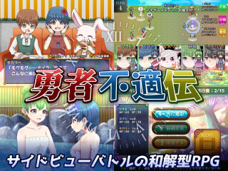

【注意】赤文字の「サイトへのリンク」や【ダウンロード】リンクは、現在のドメイン所有者が当時と変わっていて危険なサイトにつながる可能性がありますので、もしリンク移動時にブラウザの警告などが出た場合は移動しないよう注意してください。
（ただし『緑色のリンク』はページ内リンクなので安全です。『赤色のリンク』は外部リンクなので注意が必要です）
部門別順位 → [熱中度] [斬新さ] [物語性] [画像/音声] [遊びやすさ] [その他]
総合グランプリ / 全ての応募作品 / エントリー番号順リンク / イラスト / 総評 （どれもページ内リンクです）
第16回 WOLF RPGエディターコンテスト 部門別順位表
以下は「熱中度」「斬新さ」「物語性」「画像/音声」「遊びやすさ」「その他加点」の６項目の部門別順位です。はやく【総合順位】を見たい人はこちらをクリック！
各部門の得点は「平均点の順位ポイント（最大30点）」「総計点の順位ポイント（最大15点））」「中央値」の合計点で算出されます。なお、有効投票者数は410名、のべ評価作品数は4936作品でした。
1.【熱中度】部門
熱中度部門では「プレイヤーが最後までどれだけ熱中して遊べたか」が評価されます！多くの人が夢中になれたゲームを求めている人はこちら！
| 順位 | 作品名 | 平均点（ﾗﾝｸP） | 合計点（ﾗﾝｸP） | 中央値 | 熱中度 得点 |
| 1位 | 【箱庭ドールメーカー】 |
7.97 (1位:30点) | 1140 (4位:14点) | 9点 | 53点 |
| ◆やめどきを失う時間泥棒。次から次へと魅力的なドールが供給され育成が追い付かない。ぼくのかんがえたさいきょうの戦略が上手くはまる瞬間が気持ちいい。
◆常に選択を求められて完璧なドールを仕上げられないが、だからこそ強く育った時の嬉しさはひとしお。何十時間と遊んでも飽きずに「今度はこの構成にしよう」と再びフィールドへと降り立ってしまう。 ◆育成する度にあとはこれがあれば完璧なのになあという気持ちが沸いて、もう一度育成を始めるので無限に時間が溶ける。危険ですよこいつぁ…。 ◆自分の状況、敵の状況をしっかりと見定めて、プレイング次第で大きく戦況が変わる戦闘システムは歯応えがあり面白く、強敵を打倒した際のカタルシスには代えがたいものがあった。 |
|||||
| 2位 | 【やけくそ料理人と不良債権】 |
7.88 (3位:28点) | 1434 (1位:15点) | 8点 | 51点 |
| ◆熱中度の化け物。客ごとの制限時間の設定とクリーンアップの概念のバランスがあまりに絶妙で、あそこであれをしていれば、していなければ、の後悔を胸にリトライに次ぐリトライ。
◆遊べば遊ぶほど攻略法が分かっていき、気が付いた時には手に馴染むように料理を作り続けている。総じてとにかく熱中度が高く、中毒性のあるゲーム。 ◆システムとスキルなどのアイテムが短編にあわせて良く調整されていて、選択が楽しい。 ◆頭フル回転で食材と手札と料理の管理をするのが中毒性高くて滅茶滅茶楽しめました。 ◆ちょうど良い難易度曲線と扱いやすいUIのおかげで、気が付くと最後まで遊んでしまう作品でした。寝る前にやらないほうが良いゲームです。 |
|||||
| 2位 | 【放浪者セレナ～少女を救うため、闘技場で戦う女～】 |
7.93 (2位:29点) | 1174 (3位:14点) | 8点 | 51点 |
| ◆一周が短く難易度もほどほどでサクサク進む育成SLG。育成方針により変化する装備のバリエーションで繰り返しプレイが捗ります。
◆育成とバトルが気軽に楽しめる良質な短編でした。 ◆とにかく会話が楽しいので、最後まで笑いながらプレイしていました。 ◆1プレイ辺りにかかる時間も短く、色んなエンディングを見ることも出来るし最短クリアの様な挑戦も出来る、かなり遊べます。 |
|||||
| 4位 | 【迷宮郷まよろば】 | 7.62 (4位:27点) | 1403 (2位:15点) | 8点 | 50点 |
| 5位 | 【ジャンクエデン2】 | 7.34 (5位:26点) | 844 (8位:12点) | 8点 | 46点 |
| 6位 | 【「■」の多いダンジョン】 | 7.33 (6位:25点) | 1033 (6位:13点) | 7点 | 45点 |
| 7位 | 【LIGHT OF MANA】 | 7.13 (10位:21点) | 1020 (7位:12点) | 7点 | 40点 |
| 8位 | 【魔王復活物語】 | 6.92 (13位:18点) | 1087 (5位:13点) | 8点 | 39点 |
| 8位 | 【エリスと悪魔の書】 | 7.28 (7位:24点) | 641 (18位:7点) | 8点 | 39点 |
| 10位 | 【ダーゴラス】 | 7.16 (8位:23点) | 709 (15位:8点) | 7点 | 38点 |
| 11位 | 【Inifis】 | 7.03 (11位:20点) | 801 (11位:10点) | 7点 | 37点 |
| 12位 | 【ラピッドスティール３】 | 6.94 (12位:19点) | 756 (13位:9点) | 7点 | 35点 |
| 13位 | 【勇者不適伝】 | 6.88 (14位:17点) | 771 (12位:10点) | 7点 | 34点 |
| 14位 | 【水底の記憶】 | 6.62 (18位:13点) | 834 (9位:11点) | 7点 | 31点 |
| 14位 | 【鬼童-oniwarawa-】 | 7.14 (9位:22点) | 450 (28位:2点) | 7点 | 31点 |
| 16位 | 【アンブレラブレイバー】 | 6.60 (20位:11点) | 818 (10位:11点) | 7点 | 29点 |
| 17位 | 【魔女にお菓子を届けましょう】 | 6.79 (16位:15点) | 611 (19位:6点) | 7点 | 28点 |
| 18位 | 【少女大猩猩 -ゴリラvsデカヘドロン-】 | 6.80 (15位:16点) | 442 (30位:1点) | 7点 | 24点 |
| 19位 | 【綺羅星の射手】 | 6.67 (17位:14点) | 367 (ランク外:0点) | 7点 | 21点 |
| 20位 | 【かわいいヒヨコの大冒険】 | 6.52 (24位:7点) | 567 (20位:6点) | 7点 | 20点 |
| 20位 | 【デスペレートホープ】 | 6.52 (23位:8点) | 535 (21位:5点) | 7点 | 20点 |
| 22位 | 【赤の騎士と青の魔法使い】 | 6.60 (19位:12点) | 416 (ランク外:0点) | 7点 | 19点 |
| 23位 | 【勇者の苦難】 | 6.56 (21位:10点) | 446 (29位:1点) | 7点 | 18点 |
| 23位 | 【チーターは無理ゲーを走る】 | 6.35 (27位:4点) | 699 (17位:7点) | 7点 | 18点 |
| 25位 | 【デス ウエスト トレイル】 | 6.56 (22位:9点) | 400 (ランク外:0点) | 7点 | 16点 |
2.【斬新さ】部門
斬新さ部門は、「そのプレイヤーにとってどれだけ新しさを感じられたか」が評価されます！
新鮮なゲームを楽しみたい人はこちら！
| 順位 | 作品名 | 平均点（ﾗﾝｸP） | 合計点（ﾗﾝｸP） | 中央値 | 斬新さ 得点 |
| 1位 | 【LIGHT OF MANA】 |
7.52 (2位:29点) | 1076 (4位:14点) | 8点 | 51点 |
| ◆麻雀モチーフながら麻雀を知らなくても簡単に理解できるくらい斬新かつわかりやすくルールが簡易化されていて遊びやすかったです。
◆麻雀がわからない私でも遊べる麻雀なＲＰＧはすごく珍しいのではないかと思いました。 ◆マージャンという人気テーブルゲームをRPGにうまく落とし込んでおり、とても楽しめた。 ◆一風変わったRPGがしたいという方にはおすすめしたいです。 |
|||||
| 2位 | 【魔王復活物語】 |
7.51 (3位:28点) | 1179 (3位:14点) | 8点 | 50点 |
| ◆「はじめから」を選べないとこから驚きのスタート。
◆「つづきから」のアイデアから、あまりにも斬新な謎解きゲーム体験をさせてくれる作品。 ◆ゲーム制作者目線での物語が斬新で、よくあるRPGの世界なのに全然見え方が変わっていたのが凄い。 ◆セーブデータを行き来するという構成と、それを自然に見せる設定が上手いです。 |
|||||
| 3位 | 【箱庭ドールメーカー】 |
7.48 (4位:27点) | 1070 (5位:13点) | 8点 | 48点 |
| ◆フィールドでのドール育成と育成したドールを使ったダンジョン攻略のサイクルが楽しくて延々と楽しめるゲーム構造が斬新でした。
◆何とジャンル分けして良いかわからないほどにシステム盛り盛りの変則RPG。最大の特徴は拠点・フィールド・ダンジョンと三段階に分けられた育成システム。 ◆「フィールドでステータスの最大値を上げる→ダンジョンで実際のステータスを上げる」というシステムの流れは他で見たことがないけど、かなり洗練されていると感じる。フィールド・ダンジョンに複数回行く動機づけが出来るし。 |
|||||
| 4位 | 【やけくそ料理人と不良債権】 | 7.32 (7位:24点) | 1333 (1位:15点) | 7点 | 46点 |
| 4位 | 【記憶のあらいかた】 | 7.43 (5位:26点) | 869 (8位:12点) | 8点 | 46点 |
| 6位 | 【チリガミの塔】 | 7.86 (1位:30点) | 613 (17位:7点) | 8点 | 45点 |
| 7位 | 【ジャンクエデン2】 | 7.35 (6位:25点) | 845 (9位:11点) | 8点 | 44点 |
| 8位 | 【「■」の多いダンジョン】 | 7.13 (8位:23点) | 1005 (6位:13点) | 7点 | 43点 |
| 9位 | 【勇者不適伝】 | 7.02 (10位:21点) | 786 (11位:10点) | 7点 | 38点 |
| 10位 | 【鶏空を舞う】 | 7.01 (12位:19点) | 820 (10位:11点) | 7点 | 37点 |
| 10位 | 【迷宮郷まよろば】 | 6.74 (16位:15点) | 1241 (2位:15点) | 7点 | 37点 |
| 12位 | 【デスペレートホープ】 | 7.01 (11位:20点) | 575 (18位:7点) | 7点 | 34点 |
| 13位 | 【デモクラシア演義】 | 7.04 (9位:22点) | 507 (24位:4点) | 7点 | 33点 |
| 13位 | 【チーターは無理ゲーを走る】 | 6.86 (14位:17点) | 755 (13位:9点) | 7点 | 33点 |
| 15位 | 【装甲断姫_肆_デュアルタスク】 | 6.95 (13位:18点) | 535 (20位:6点) | 7点 | 31点 |
| 16位 | 【ぐぅたら少年の七転八起】 | 6.79 (15位:16点) | 570 (19位:6点) | 7点 | 29点 |
| 17位 | 【グッドバイ】 | 6.72 (17位:14点) | 477 (26位:3点) | 7点 | 24点 |
| 17位 | 【放浪者セレナ～少女を救うため、闘技場で戦う女～】 | 6.07 (25位:6点) | 899 (7位:12点) | 6点 | 24点 |
| 17位 | 【アンブレラブレイバー】 | 6.15 (23位:8点) | 762 (12位:10点) | 6点 | 24点 |
| 20位 | 【翠玉郷のオリヴィエ】 | 6.48 (18位:13点) | 434 (27位:2点) | 6点 | 21点 |
| 21位 | 【Inifis】 | 6.07 (26位:5点) | 692 (14位:9点) | 6点 | 20点 |
| 22位 | 【At End of the World】 | 6.39 (21位:10点) | 428 (28位:2点) | 7点 | 19点 |
| 23位 | 【魔族倒しＦＩＮＡＬ】 | 6.41 (19位:12点) | 218 (ランク外:0点) | 6点 | 18点 |
| 24位 | 【デス ウエスト トレイル】 | 6.41 (20位:11点) | 391 (ランク外:0点) | 6点 | 17点 |
| 25位 | 【ラピッドスティール３】 | 5.92 (29位:2点) | 645 (16位:8点) | 6点 | 16点 |
3.【物語性】部門
物語性部門は、「どれだけ記憶に残る物語だったか」が高い順位につながります！
キャラクターやストーリーのよさ、感動を味わえるかもしれない作品はこちら！
| 順位 | 作品名 | 平均点（ﾗﾝｸP） | 合計点（ﾗﾝｸP） | 中央値 | 物語性 得点 |
| 1位 | 【魔王復活物語】 |
7.42 (1位:30点) | 1165 (1位:15点) | 8点 | 53点 |
| ◆物語はゲームを作った経験がある者は頷ける部分も多く、ゲーム作りをまた頑張りたくなるような作品でした。
◆ストーリーについて、ゲーム製作者だからこのストーリーに感じ入るものがあったような気もしていて、とにかく、自分にとっては特別な物語でした。 ◆全てのクリエイターとそれに関わる人々へのエール。ウディコンでだからこそ出会えて良かったと思わせてくれるゲームでした。 ◆物語の最初から最後までがクリアのために必要な要素で、蜘蛛の巣のように張り巡らされた伏線の網が最後には束ねられて蜘蛛の糸のように極楽へ導く。 |
|||||
| 2位 | 【水底の記憶】 |
7.21 (2位:29点) | 909 (7位:12点) | 7点 | 48点 |
| ◆短いプレイ時間の中に美しい物語が詰まっています。
◆夏祭りを楽しむ中で『水底の記憶』に触れていく短編ADV。短時間の中に人物の想いがこれでもかと凝縮されていていてすごく面白かったです。 ◆夏祭りの雰囲気、複雑な感情の描写、引き込まれるアニメーション演出、全てが噛み合って心に響く魅力的な物語を生み出せている作品。 ◆お祭りでの仲睦まじい会話で心を掴まれました。夏らしい爽やかな読後感で良かったです。 |
|||||
| 3位 | 【Inifis】 |
7.19 (3位:28点) | 820 (10位:11点) | 7点 | 46点 |
| ◆物語の随所で、主人公も後ろ暗い過去がある危ない人であることや、妹の正体について仄めかされ、記憶を解放するごとに少しずつ真相が明らかになってゆく展開に引き込まれました。
◆最初の違和感、不穏な選択肢たち、それらの意味が少しずつ明らかになるのがおもしろく、一気にプレイした。 ◆世界設定から攻略法の多彩さまで作り込みがすごかったです。選択肢に『殺す』が出てくるのが、主人公の狂気を感じさせられて最高でした。 ◆依り代に選ばれた妹を救うため限られた時間の中で行動しなければならない。その過程で様々な秘密が解き明かされていくカタルシスが良かった。 |
|||||
| 4位 | 【勇者不適伝】 | 7.12 (4位:27点) | 798 (11位:10点) | 7点 | 44点 |
| 4位 | 【アンブレラブレイバー】 | 6.99 (6位:25点) | 867 (8位:12点) | 7点 | 44点 |
| 6位 | 【箱庭ドールメーカー】 | 6.83 (8位:23点) | 977 (5位:13点) | 7点 | 43点 |
| 6位 | 【放浪者セレナ～少女を救うため、闘技場で戦う女～】 | 6.76 (9位:22点) | 1000 (4位:14点) | 7点 | 43点 |
| 8位 | 【LIGHT OF MANA】 | 6.57 (11位:20点) | 939 (6位:13点) | 7点 | 40点 |
| 9位 | 【赤の騎士と青の魔法使い】 | 7.02 (5位:26点) | 442 (25位:3点) | 7点 | 36点 |
| 10位 | 【鬼童-oniwarawa-】 | 6.98 (7位:24点) | 440 (26位:3点) | 7点 | 34点 |
| 11位 | 【やけくそ料理人と不良債権】 | 5.97 (19位:12点) | 1087 (2位:15点) | 6点 | 33点 |
| 12位 | 【「■」の多いダンジョン】 | 6.11 (16位:15点) | 862 (9位:11点) | 6点 | 32点 |
| 13位 | 【るぐれて】 | 6.18 (14位:17点) | 556 (18位:7点) | 6点 | 30点 |
| 14位 | 【エリスと悪魔の書】 | 6.15 (15位:16点) | 541 (19位:6点) | 6点 | 28点 |
| 15位 | 【怨御霊 -URAMITAMA-】 | 6.58 (10位:21点) | 388 (ランク外:0点) | 6点 | 27点 |
| 16位 | 【なかよ４こよ４ ４人の中に×人鬼がいる？】 | 6.43 (12位:19点) | 302 (ランク外:0点) | 7点 | 26点 |
| 16位 | 【ラピッドスティール３】 | 5.97 (20位:11点) | 651 (14位:9点) | 6点 | 26点 |
| 18位 | 【綺羅星の射手】 | 6.33 (13位:18点) | 348 (ランク外:0点) | 7点 | 25点 |
| 19位 | 【チーターは無理ゲーを走る】 | 5.96 (22位:9点) | 656 (13位:9点) | 6点 | 24点 |
| 20位 | 【グッドバイ】 | 6.06 (17位:14点) | 430 (28位:2点) | 6点 | 22点 |
| 21位 | 【デス ウエスト トレイル】 | 6.00 (18位:13点) | 366 (ランク外:0点) | 6点 | 19点 |
| 21位 | 【迷宮郷まよろば】 | 5.45 (ランク外:0点) | 1003 (3位:14点) | 5点 | 19点 |
| 23位 | 【記憶のあらいかた】 | 5.72 (29位:2点) | 669 (12位:10点) | 6点 | 18点 |
| 24位 | 【イマジナリーディストピア】 | 5.97 (21位:10点) | 191 (ランク外:0点) | 6点 | 16点 |
| 25位 | 【±0 -Black Rain-】 | 5.93 (23位:8点) | 350 (ランク外:0点) | 6点 | 14点 |
4.【画像/音声】部門
画像/音声部門は、「画像や音声の使い方、品質の高さ」が評価されます！
見た目や演出を特に楽しめる作品はこちら！
| 順位 | 作品名 | 平均点（ﾗﾝｸP） | 合計点（ﾗﾝｸP） | 中央値 | 画像/音声 得点 |
| 1位 | 【迷宮郷まよろば】 |
9.39 (1位:30点) | 1728 (1位:15点) | 10点 | 55点 |
| ◆動画や配信で見るより、自分でプレーする感動がえげつない作品です。画像音声が10点じゃ足りないぐらいの凄まじさで、加点にまわしました。影や細かな演出が本当にすごいです。
◆本当にただ歩いているだけで次から次へと目と耳が幸せになる世界を堪能することができ、一瞬にして本作の虜になってしまいました。 ◆どこへ行ってもため息の出るくらい美しい風景と自作BGMに心が踊るような、まるで美術館に行った後のような充実感を感じる作品でした。 ◆BGMと効果音も自作されており、各マップの情景によく合った音が流れて心が洗われるような気持ちになりました。 ◆この作品のさらに素晴らしい点はドット絵と音だけでなく、それらで構成されたマップや主人公フロートチャンがそこにいる存在感を微細な陰影変化や光の反射を細やかに調整して表現していることです。 ◆音楽とマップが本当に素晴らしいです。可愛らしくて、綺麗で、時折不気味な世界があったり、どこか懐かしいノスタルジーな雰囲気だったり素敵な世界を最後まで観光している気分で楽しめました！ |
|||||
| 2位 | 【LIGHT OF MANA】 |
8.76 (2位:29点) | 1252 (3位:14点) | 9点 | 52点 |
| ◆グラフィック・アニメ演出が綺麗で驚いた。かっこいい演出と音楽で、ダンジョンを颯爽と進んでいくのが気持ちいい。
◆画像のクオリティの高さよ！据え置きゲームで画像の進化が凄まじい時期があったけども、フリーゲームもここまで来たか…！ ◆ぬるぬる動くアニメーションや豪華な演出、バトル移行のシームレスさが良い。 ◆「何だこの画像ども……ぬるぬる動くぞ！」って10回くらい言いました。ビジュアル的なクオリティが異常です。いつまでもＵＩを見ていられます。 |
|||||
| 3位 | 【やけくそ料理人と不良債権】 |
8.03 (4位:27点) | 1462 (2位:15点) | 8点 | 50点 |
| ◆絵柄もかわいらしい感じで多くの方がとっつきやすいのではないかと思ました。
◆キャラクターがかわいい！ ◆グラフィックもとても可愛らしく、音楽も独自のものが使われていて、毎年このクォリティには驚かされます。 ◆グラフィックは超クオリティのイラスト、かわいらしいミニキャラやアイコン、UIで統一されていて映え○。 |
|||||
| 4位 | 【水底の記憶】 | 7.87 (6位:25点) | 991 (6位:13点) | 8点 | 46点 |
| 4位 | 【箱庭ドールメーカー】 | 7.52 (7位:24点) | 1075 (4位:14点) | 8点 | 46点 |
| 6位 | 【ラピッドスティール３】 | 7.93 (5位:26点) | 864 (11位:10点) | 8点 | 44点 |
| 7位 | 【鶏空を舞う】 | 7.45 (8位:23点) | 872 (10位:11点) | 8点 | 42点 |
| 8位 | 【±0 -Black Rain-】 | 8.44 (3位:28点) | 498 (23位:4点) | 9点 | 41点 |
| 8位 | 【アンブレラブレイバー】 | 7.27 (9位:22点) | 901 (7位:12点) | 7点 | 41点 |
| 10位 | 【放浪者セレナ～少女を救うため、闘技場で戦う女～】 | 7.20 (11位:20点) | 1066 (5位:13点) | 7点 | 40点 |
| 11位 | 【勇者不適伝】 | 7.21 (10位:21点) | 808 (13位:9点) | 8点 | 38点 |
| 12位 | 【記憶のあらいかた】 | 6.99 (12位:19点) | 818 (12位:10点) | 7点 | 36点 |
| 13位 | 【ジャンクエデン2】 | 6.86 (13位:18点) | 789 (14位:9点) | 7点 | 34点 |
| 14位 | 【「■」の多いダンジョン】 | 6.38 (20位:11点) | 899 (8位:12点) | 7点 | 30点 |
| 15位 | 【グッドバイ】 | 6.76 (14位:17点) | 480 (26位:3点) | 7点 | 27点 |
| 16位 | 【チリガミの塔】 | 6.49 (17位:14点) | 506 (21位:5点) | 7点 | 26点 |
| 17位 | 【ダーゴラス】 | 6.43 (19位:12点) | 637 (17位:7点) | 6点 | 25点 |
| 18位 | 【チーターは無理ゲーを走る】 | 6.31 (21位:10点) | 694 (15位:8点) | 6点 | 24点 |
| 19位 | 【鬼童-oniwarawa-】 | 6.63 (15位:16点) | 418 (29位:1点) | 6点 | 23点 |
| 20位 | 【不思議な世界の観光日記Ⅱ】 | 6.50 (16位:15点) | 312 (ランク外:0点) | 7点 | 22点 |
| 20位 | 【エリスと悪魔の書】 | 6.30 (22位:9点) | 554 (18位:7点) | 6点 | 22点 |
| 22位 | 【綺羅星の射手】 | 6.45 (18位:13点) | 355 (ランク外:0点) | 7点 | 20点 |
| 23位 | 【ぐぅたら少年の七転八起】 | 6.20 (24位:7点) | 521 (20位:6点) | 6点 | 19点 |
| 24位 | 【魔王復活物語】 | 5.62 (ランク外:0点) | 882 (9位:11点) | 6点 | 17点 |
| 25位 | 【イルシェラート -Ilshet tot Nostiltowi-】 | 6.03 (27位:4点) | 543 (19位:6点) | 6点 | 16点 |
5.【遊びやすさ】部門
遊びやすさ部門では「どれだけ快適に遊べたか」が評価されます！
遊びやすい作品をお求めならこちら！
| 順位 | 作品名 | 平均点（ﾗﾝｸP） | 合計点（ﾗﾝｸP） | 中央値 | 遊びやすさ 得点 |
| 1位 | 【放浪者セレナ～少女を救うため、闘技場で戦う女～】 |
8.11 (1位:30点) | 1200 (3位:14点) | 8点 | 52点 |
| ◆ルールは分かりやすく、細部にわたって非常に遊びやすかったです。追加要素があれば『NEW』が表示される、戦闘に敗北してもすぐリトライまたはロードできる等、あらゆる面で親切でした。
◆システムもリトライがやりやすかったりオートセーブのポイントも親切。メッセージスキップも地味にありがたかったです。 ◆育成パートがシンプルでわかりやすくて遊びやすいのもあり、短い時間で非常に満足感と熱中度の高い育成ゲームに仕上がっています。 ◆全体的な手触りが良く完成度が高い。整理されたわかりやすいUI。 |
|||||
| 2位 | 【やけくそ料理人と不良債権】 |
7.58 (4位:27点) | 1379 (1位:15点) | 8点 | 50点 |
| ◆一見複雑そうに見えますが、チュートリアルも丁寧で実際に遊んでみるととっつきやすかったです。
◆システムについては画面の気になる場所を右クリックすれば全部説明が出るため、少し遊べば理解できるようになっていてとても遊びやすかったです。 ◆色分けされたマウス操作の直感的なUIで、作れる料理は点灯・作れない料理はグレーアウトするのが最後まで遊び易さの支えになっていた。 ◆プレイヤーが何ら気にすることなく快適なプレイを追求した機能である自動ソート、任意ソート、ドラッグ＆ドロップ、そしてアンドゥに驚きました。 |
|||||
| 3位 | 【勇者不適伝】  |
7.75 (2位:29点) | 868 (8位:12点) | 8点 | 49点 |
| ◆UIも独自のものを使っていますが、直感的にわかりやすく、期間中の更新もとても多かったためとても遊びやすかったです。
◆スキップ、バックログ、セーブ＆ロードまわりの機能充実にRPG苦手な層向けの配慮もなされており遊びやすかったです。 ◆難易度の調整が良く、リトライなどの遊びやすい要素が詰め込まれていてノンストップで楽しめました。 ◆操作のしやすさやリプレイなどもとにかくストレスフリーで、プレイヤーのことを考えこまれた作りで、最後まで一気にクリアできた。 |
|||||
| 3位 | 【迷宮郷まよろば】 |
7.24 (5位:26点) | 1332 (2位:15点) | 8点 | 49点 |
| ◆ショートカットや拠点帰還システムなどにより、ストレスなく遊ぶことができました。
◆ファストトラベルが機能として助かるだけでなく、扉の意匠も楽しめて贅沢な作品だと思いました。 ◆引っかかりのない道筋やマップの導入など、遊びやすさの面でも配慮されていると感じました。 ◆探索の導線も快適に設計されており、それでいて最後には少し悩むようにもなっていたりと、見せたいもの以外に対する配慮も隙がありません。 |
|||||
| 5位 | 【ダーゴラス】 | 7.66 (3位:28点) | 758 (13位:9点) | 8点 | 45点 |
| 5位 | 【箱庭ドールメーカー】 | 7.13 (8位:23点) | 1019 (4位:14点) | 8点 | 45点 |
| 7位 | 【Inifis】 | 7.15 (7位:24点) | 815 (9位:11点) | 8点 | 43点 |
| 7位 | 【ラピッドスティール３】 | 7.18 (6位:25点) | 783 (11位:10点) | 8点 | 43点 |
| 9位 | 【LIGHT OF MANA】 | 6.96 (10位:21点) | 995 (5位:13点) | 7点 | 41点 |
| 10位 | 【「■」の多いダンジョン】 | 6.93 (11位:20点) | 977 (6位:13点) | 7点 | 40点 |
| 11位 | 【勇者の苦難】 | 7.00 (9位:22点) | 476 (26位:3点) | 7点 | 32点 |
| 12位 | 【水底の記憶】 | 6.44 (18位:13点) | 812 (10位:11点) | 7点 | 31点 |
| 12位 | 【エリスと悪魔の書】 | 6.84 (14位:17点) | 602 (18位:7点) | 7点 | 31点 |
| 14位 | 【かわいいヒヨコの大冒険】 | 6.71 (15位:16点) | 584 (20位:6点) | 7点 | 29点 |
| 15位 | 【魔女にお菓子を届けましょう】 | 6.53 (16位:15点) | 588 (19位:6点) | 7点 | 28点 |
| 16位 | 【怨御霊 -URAMITAMA-】 | 6.88 (12位:19点) | 406 (ランク外:0点) | 7点 | 26点 |
| 16位 | 【ぐぅたら少年の七転八起】 | 6.52 (17位:14点) | 548 (22位:5点) | 7点 | 26点 |
| 16位 | 【少女大猩猩 -ゴリラvsデカヘドロン-】 | 6.88 (13位:18点) | 447 (29位:1点) | 7点 | 26点 |
| 19位 | 【装甲断姫_肆_デュアルタスク】 | 6.43 (19位:12点) | 495 (24位:4点) | 7点 | 23点 |
| 19位 | 【アンブレラブレイバー】 | 6.27 (25位:6点) | 777 (12位:10点) | 7点 | 23点 |
| 21位 | 【デスペレートホープ】 | 6.43 (20位:11点) | 527 (23位:4点) | 7点 | 22点 |
| 22位 | 【魔王復活物語】 | 5.94 (ランク外:0点) | 933 (7位:12点) | 7点 | 19点 |
| 23位 | 【チーターは無理ゲーを走る】 | 6.12 (28位:3点) | 673 (16位:8点) | 6点 | 17点 |
| 24位 | 【ジャンクエデン2】 | 6.06 (30位:1点) | 697 (14位:9点) | 6点 | 16点 |
| 24位 | 【デス ウエスト トレイル】 | 6.43 (21位:10点) | 392 (ランク外:0点) | 6点 | 16点 |
6.【その他】部門
その他部門では「これまでの部門で評価しきれなかった部分の良さ」を評価されます！
あふれる情熱や魅力を強く感じてみたい人におすすめ！
| 順位 | 作品名 | 平均点（ﾗﾝｸP） | 合計点（ﾗﾝｸP） | 中央値 (1点以上 のみｶｳﾝﾄ) |
その他 得点 |
| 1位 | 【迷宮郷まよろば】 |
+2.91 (1位:30点) | 536 (1位:15点) | 5点 | 50点 |
| ◆グラフィックも音楽も伝説級に素晴らしく、人生で一番感動できた瞬間を味わえたこと、何よりこの美麗な世界観をフリーゲームとして遊べた感謝の気持ちを込めて加点。
◆散策ゲームの極致。画像/音楽では他の追随を許さない圧倒的クオリティ。最早その他加点＋10でも足りないくらいだ。 ◆ドット絵の力だけではない、演出のすべてに魂が込められた傑作です。そんな作品を評価するには画像/音声だけでは相応しくありません。演出の細部まで込められた魂に敬意を表して極めて大きな加点をさせて頂きます。 |
|||||
| 2位 | 【魔王復活物語】 |
+1.87 (2位:29点) | 293 (2位:15点) | 4点 | 48点 |
| ◆最初からあるセーブデータを使いまわして攻略するという、ユニークすぎる発想にその他加点させて下さい！
◆物語性だけでは評価しきれない、「フリゲあるある」「制作あるある」の楽しさに加点。 ◆物語とプレイヤーがリンク（いったん離れる）してるところがすごいと思った！ ◆フリーゲームに浸れば浸るほど共感を呼ぶ巧妙な展開と大量のネタが、終点へと続く輝かしい道を敷き詰める。そしてその終わりに待っているのは、比類なき夢と希望に満ち溢れた独特な景色。 ◆筆舌に尽くしがたい名作。衝撃のタイトル回収までの道のりに、そもそもこのゲームに一体どのような意味があるのか、既存の評価項目ではとても点数を付けられないのでその他加点。 |
|||||
| 3位 | 【箱庭ドールメーカー】 |
+1.85 (3位:28点) | 264 (3位:14点) | 4点 | 46点 |
| ◆30時間以上飽きることなく遊べた満足感に加点。
◆あらゆる媒体でも類を見ない、長編でありながら飽きないリプレイ育成性…そして、未だ底知れぬドールの数々という圧倒的沼要素に加点させて下さい！ ◆「RPGの基本的な文法」の範囲内で完結しており、新しいシステムを覚える必要が無いにもかかわらず新しい楽しみを提供している部分はお見事。 ◆熱中10に収まらず、高いゲーム性とバランスの作り込みに加点。 |
|||||
| 4位 | 【ラピッドスティール３】 | +1.60 (4位:27点) | 174 (6位:13点) | 3点 | 43点 |
| 5位 | 【ジャンクエデン2】 | +1.39 (7位:24点) | 160 (7位:12点) | 3点 | 39点 |
| 5位 | 【放浪者セレナ～少女を救うため、闘技場で戦う女～】 | +1.36 (8位:23点) | 201 (5位:13点) | 3点 | 39点 |
| 7位 | 【赤の騎士と青の魔法使い】 | +1.49 (6位:25点) | 94 (16位:8点) | 3点 | 36点 |
| 7位 | 【やけくそ料理人と不良債権】 | +1.16 (12位:19点) | 211 (4位:14点) | 3点 | 36点 |
| 9位 | 【綺羅星の射手】 | +1.56 (5位:26点) | 86 (19位:6点) | 3点 | 35点 |
| 10位 | 【チリガミの塔】 | +1.24 (10位:21点) | 97 (15位:8点) | 3点 | 32点 |
| 10位 | 【エリスと悪魔の書】 | +1.24 (11位:20点) | 109 (12位:10点) | 2点 | 32点 |
| 12位 | 【記憶のあらいかた】 | +1.11 (14位:17点) | 130 (8位:12点) | 2点 | 31点 |
| 13位 | 【鬼童-oniwarawa-】 | +1.32 (9位:22点) | 83 (21位:5点) | 3点 | 30点 |
| 14位 | 【勇者不適伝】 | +0.96 (18位:13点) | 108 (13位:9点) | 2点 | 24点 |
| 14位 | 【アンブレラブレイバー】 | +0.94 (20位:11点) | 116 (10位:11点) | 2点 | 24点 |
| 16位 | 【LIGHT OF MANA】 | +0.91 (23位:8点) | 130 (8位:12点) | 3点 | 23点 |
| 17位 | 【モンスター・レプリカ】 | +1.11 (14位:17点) | 60 (26位:3点) | 2点 | 22点 |
| 18位 | 【イマジナリーディストピア】 | +1.12 (13位:18点) | 36 (ランク外:0点) | 2点 | 20点 |
| 18位 | 【デモクラシア演義】 | +1.01 (17位:14点) | 73 (23位:4点) | 2点 | 20点 |
| 20位 | 【水底の記憶】 | +0.89 (24位:7点) | 112 (11位:10点) | 2点 | 19点 |
| 21位 | 【不思議な世界の観光日記Ⅱ】 | +1.08 (16位:15点) | 52 (ランク外:0点) | 2点 | 17点 |
| 22位 | 【±0 -Black Rain-】 | +0.95 (19位:12点) | 56 (27位:2点) | 2点 | 16点 |
| 23位 | 【チーターは無理ゲーを走る】 | +0.84 (26位:5点) | 92 (18位:7点) | 2点 | 14点 |
| 24位 | 【Inifis】 | +0.82 (28位:3点) | 93 (17位:7点) | 3点 | 13点 |
| 25位 | 【モダレスクエスト】 | +0.91 (21位:10点) | 42 (ランク外:0点) | 2点 | 12点 |
◆総合グランプリ◆
総合グランプリ順位は「熱中度」「斬新さ」「物語性」「画像/音声」「遊びやすさ」「その他加点」の６項目の
「総合得点」に、「平均重視度（％）」を掛けて得られた値を総計したポイントで決定されます。
皆さまの投票から得られた平均重視度は以下の通りとなりました。
熱中度 79.3 ％ 斬新さ 53.9 ％ 物語性 62.9 ％ 画像/音声 53.6 ％ 遊びやすさ 75.8 ％
※その他加点は自動で「50％」となります。
|
【プレイ動画配信について】 ※各作品のアピール文の最下部には動画配信についての可否が記載されています。 [ゲームプレイ配信] 時間無制限のゲーム配信･プレイ動画投稿の可否です。 [動画への映像使用(3分以内)] ↑がダメな場合の、紹介動画・ランキング動画等への短いプレイ映像使用の可否です。 こちらへのご利用では映像利用は最大3分以内、かつ、ネタバレはなるべく避けてください。 ※ただし上記の可否は「有料動画」へのゲーム利用許可は含みません。有料動画の場合は個別に確認してください。 |

【1位】『箱庭ドールメーカー』(エントリー番号【15】/ 総ポイント176.7点)
熱中 42.0点(1位)+斬新 25.9点(3位)+物語性 27.0点(6位)+画像音声 24.7点(4位)+遊びやすさ34.1点(5位)+その他23.0点(3位)
熱中 42.0点(1位)+斬新 25.9点(3位)+物語性 27.0点(6位)+画像音声 24.7点(4位)+遊びやすさ34.1点(5位)+その他23.0点(3位)
 【紹介動画を見る】(新ｳｨﾝﾄﾞｳ)
【紹介動画を見る】(新ｳｨﾝﾄﾞｳ)- 【ダウンロード】
【運営ﾊﾞｯｸｱｯﾌﾟからＤＬ（安全/GitHub/178MB）】 - 作者 : こよる
- プレイ時間 :クリアまで10時間程度
- 作者コメント:
- 記憶を失ったドール「マルグリット」と一緒に島の秘密を探る、すごろく×デッキ構築育成RPG！
＜ゲームの特徴＞
・個性豊かな「ドール」を育成しながら、自動生成されるすごろく風のフィールドステージを冒険
・育成したドールでパーティを組んで、ダンジョンに挑戦
・ドールの組み合わせとスキルデッキの構築が鍵を握る戦略性の高いパーティ戦闘
【ゲームプレイ配信はご自由に】
【動画への映像使用(3分以内)はご自由に】
-
【一般投票コメント】
[熱10新10物8画10遊7他+8] 独自の育成システムが輝く、ボリュームたっぷりのデッキ構築型育成RPG。『育成』の中毒性が非常に高く、運は絡むもののかなり自由にデッキビルドをしていくことができる。これに拘るタイプの人であれば深い深い沼に落とされることになるだろう。実際クリア後要素完食まで30時間、飽きることなく熱中し続けられた。時間を気にせず育成に拘っていたら2倍3倍はやれていたと思う。
[熱10新10物7画8遊10他+8] パンドラの箱です。開けば、ありとあらゆる育成沼要素が、プレイヤーを飲み込むでしょう。狂い果て、日常生活をまともに送れなくなるでしょう。それほどに、ハマる。どうすればプレイヤーが沈むか、この作者様は恐ろしいほど理解されている。長編でありながら、ここまでプレイの賞味期限が長い作品はそうそう思いつきません！あらゆる媒体でも類を見ない、長編でありながら飽きないリプレイ育成性…そして、未だ底知れぬドールの数々という圧倒的沼要素に加点させて下さい！
[熱10新9物8画8遊9他+6] 「ドール育成がとっても楽しい！」すごろく×デッキ構築育成RPG。フィールドでのドール育成がとにかく楽しくて夢中になってのめり込んでプレイしました！限られたすごろくターン以内にドールを効率良く育成する必要があるため、雑魚戦を積極的にこなす行為に意味がある＆短期間にぐんぐん成長するのもあって雑魚戦がとても楽しいRPGとなっています。育成したドールたちはダンジョンで活躍させることができ、こちらも育成の成果が冒険の結果につながってさらなる面白さを生み出しています。フィールドでのドール育成と育成したドールを使ったダンジョン攻略のサイクルが楽しくて延々と楽しめるゲーム構造が斬新でした。UIや各種説明まわりも充実しておりとても遊びやすかったです。記憶を失ったドール「マルグリット」の過去が明かされていく物語も素敵でした。ドール育成にハマって長時間楽しめるゲームシステム設計の上手さや戦闘の絶妙なバランス調整、マルグリットをはじめとしたドールたちがみんなかわいいところなど多くの魅力に大幅加点します。
[熱10新8物8画9遊10他+8] キャラの育成要素とデッキ構築型戦闘が組み合わさった、ローグライク+ハクスラ系RPG。フィールドでキャラを育成し、育てたキャラでダンジョンに潜るというのが主な流れだが、ダンジョンでフィールドを有利に進める衣装が手に入ったり、フィールドでダンジョンを有利に進めるアビリティを付与できたりと相互に絡み合っており、あれもこれもやりたいと思えるゲームデザインが素晴らしかった。キャラクターには様々な個性があるが、それぞれ利点や欠点があり、どのキャラでも育て方次第で強みを生かして活躍できるバランスが非常によくできていたと感じる。自分の状況、敵の状況をしっかりと見定めて、プレイング次第で大きく戦況が変わる戦闘システムは歯応えがあり面白く、強敵を打倒した際のカタルシスには代えがたいものがあった。この方の作品は以前からファンではあるが、細部まで作り込まれている今作は最も中毒性が高く、気付けば40時間以上プレイしてしまっていた。個人的には今回間違いなく最も面白かったと言えるどころか、ウディタ製作品の中でも指折りの傑作だと感じた。
[熱6新9物6画7遊8] 自らの手で丁寧に育て上げたドールのスペックとスキルセットで戦いを回していく楽しさのあるゲームです。丁寧に組み上げる分時間はかかりますが、その分愛着も湧きます。戦闘の戦略性、難易度が程よく高いため、より強いドールを育成する張り合いがありました。
[熱10新10物7画9遊10他+10] 双六を使ったローグライトと育成システムがとてつもない面白さを生み出しています。フィールドで育成したユニットを登録→登録したユニットでパーティを作ってダンジョン攻略が大まかな流れですが、ダンジョンでフィールド育成に役立つ装備が入手できるので気が付くと育成のためにダンジョンに潜るようになります。ついつい時間の許す限り遊んでしまうゲームとしての面白さ、熱中性、遊べば遊ぶほど感じられる育成システムの完成度の高さに加点。
[熱10新7物7画7遊7他+9] とにかく熱中してプレイできました少しとっつきにくいところもあるけど一度きちんと理解してやれば滅茶苦茶はまれるゲームだと思います
[熱9新7物8画10遊9他+9] ウディコン公開初日から数日間、このゲームに時間を取られる程度にはハマってしまいました。近年のローグライク風のデッキビルドが好きな人には、かなり刺さるゲームだと思います。敵も味方もイラストが非常に可愛らしく、始終暖かな気持ちで遊ぶ事が出来ました。
[熱9新9物9画9遊8] 今回特に評価したい作品。評点以上に楽しく、色々な方に触れてみてほしい作品。
[熱10新8物7画8遊6] バフをたくさんかけて連続行動や大きな一撃を狙う、状態異常のダメージを高める、デバフ掛かると逆に行動しやすくなったり強くなるアビリティなど、色々な戦法が取れるドールを好きなように育成できて自由にプレイスタイルを作れるのが楽しかったです。
[熱10新7物8画8遊9他+5] ドールの育成がやりこみ要素として奥が深い。ストーリー進行させた方が良いと分かりつつも、色々試したくなる作品でした。
[熱8新8物7画8遊8] キャラのバリエーションが多く、強化をしつつスキルビルドを考えていく試行錯誤が面白かったです。
[熱10新7物7画8遊7他+4] 前作と比べパーティー構成の幅が広がり、好きなキャラと共にステージをクリアする喜びを感じました。組み合わせ次第で悪いことできそうなスキルの数々ですが、敵も同様に反則技をいくつも持っていたりして挑戦しがいのあるゲームでした。
[熱10新8物7画8遊10他+3] ドールを育ててダンジョンを探索するRPGで闘が面白いです。育成×デッキ構築×AP制と要素やシステムを多く盛り込みつつ、高い戦略性と爽快感を快適に楽しめる素晴らしい作品でした。バグの少なさを含む完成度の高さに加点します。
[熱10新8物7画9遊8他+6] もうずぅっとハマって遊んでた！EDまででも20時間で、その後のコンテンツもまだある。Steamにあるようなローグライクゲームに負けないクオリティ。ドールを育て、その成果をダンジョンで試すという形が非常にやりごたえがある。ミスしても軽めのペナルティでその場で復活できるのも心が折れずに遊べて良い。技やパーティの構成をどうするか頭をひねるのも一興。
[熱7新7物6画10遊10他+3] 自分だけのパーティを組んで攻略できるところが面白い
[熱10新8物7画7遊9他+5] ローグライトとボードゲームを組み合わせたゲームです。ドールを育成してダンジョンを攻略するという行動の繰り返しではあるものの、多彩なドールとスキルの組み合わせがあり飽きずに最後まで遊ぶことができました。クリア後でもまだまだ遊びたいと思わせる中毒性に加点です。
[熱10新7物7画8遊7] キャラの育成にランダム性がありキャラごとの特性やスキル、装備などを考えながら育てていくのがとても楽しかった。今回一番遊ばせてもらった作品です。
[熱10新7物7画9遊8他+5] 難易度ノーマルでEDまでプレイ。とにかくやることが多く、その上で作業感を感じさせない丁寧な作り込みのあるゲーム。ボス戦の難易度選択はあるが、モブもなかなか厄介なためノーマルでも簡単ではない印象。ED後のやり込み要素がたっぷりとあるようで、今後に期待(その他加点)。
[熱8新7物6画7遊8他+2] 遊びやすさと微妙に違う軸にあるような気がして分けたが、アップデートが自動で行われる部分は本当に素晴らしいと思う。こういう細かい配慮がゲームへのモチベーションに繋がるゲーム性自体もすごろくとデッキ構築ローグライクを組み合わせは中々に新鮮でドール作りに熱中出来た。デッキ構築部分には運要素を入れつつも、戦闘部分はかなり運要素に左右されにくい作りになっているのが良いバランス感覚でストレスを感じにくく遊べた。ライラの性能が特に好き。
[熱8新7物7画8遊6] 何とジャンル分けして良いかわからないほどにシステム盛り盛りの変則RPG。最大の特徴は拠点・フィールド・ダンジョンと三段階に分けられた育成システム。「今の戦いが、目先の勝ちだけでなく将来のための育成にもなる」という状況が常に続いてモチベーションを保ちやすい。マジで10時間かかるけどそれだけ遊べる物量がある。
[熱10新9物7画8遊8他+2] 自慢の最強構成を作れるデッキ構築型のゲーム。デッキを構築するフィールドと構築したデッキで戦うダンジョンで分かれているのが目新しい。育成が面白すぎてとんでもない時間を費やしてしまった…熱中度は完全に10です。加点はドールが可愛いこと、可愛いは正義
[熱10新8物7画10遊9他+2] めちゃくちゃ中毒性が高い。時間が無限に吸われていく……！！敵もドールたちもみんなかわいくて画面が華やか。理想のドールを作り上げるために何度も何度も周回してしまいますね。ちょっと時間が出来たらお気に入りの子の育成に走ってしまう。マジで時間泥棒さん。
[熱9新9物9画9遊9他+9] こよるさんの作品は毎回プレイさせていただいております。今回もよく作り込まれていてゲーム性も高くとても楽しかったです。前々作の箱庭フロンティアのシステムをパワーアップさせた感じで、今回はキャラもストーリーも特に作り込まれていて楽しめました。そしてキャラが可愛い。
[熱8新9物7画9遊8他+1] 市販ゲーと見紛うほど見栄えの良い画面構成が圧巻でした
[熱8新7物4画8遊7他+5] 不具合修正や機能改善のサポートが手厚く、起動時に自動でアップデートしてくれるのが非常にありがたかった。
[熱10新9物7画8遊9] キャラ育成の幅や戦略が奥深く気が付いたら夢中になって遊んでいました。
[熱10新8物7画9遊10他+4] ドールをフィールドで育成して、ダンジョンに潜って…というゲームですが、面白すぎてかれこれ50時間以上プレイしています。ストーリー面でも島やドールの謎に徐々に迫りつつも、メインキャラ達の等身大の心情に沿った物語が展開されるのが良いと思いました。熱中度が10点満点をはみ出て中毒性の域に達しているのでその他加点で+4点しています。辞め時の分からない面白さというのが大きいですが、個人的には本当にすごいと感じるのは最序盤の掴みからずっと面白いままというところです。しっかりしたUIと全体的なテンポの良さ、丁度プレイヤーの慣れに合わせるように広がるシステムやTIPS、データとにらめっこしたい時のライブラリ機能など、徹底した遊びやすさが育成自体の面白さと相まって作品の楽しさを倍増させているように感じています。
[熱10新9物10画9遊10他+3] 育成したキャラをダンジョンで暴れさせる、すごろく×デッキ構築育成RPG。自分好みに育てたキャラがダンジョンでこれでもかと活躍してくれるのが楽しく、すごく熱中して遊べました。物語も印象深くやりこみがいも沢山あるので、クリアしてなお続けたいと強く思わせてくれるような作品でした。
[熱9新6物7画7遊7他+3] キャラクターを育てる過程が楽しく、スキルやアビリティの組み合わせを考える楽しさもあるため、長いプレイ時間でも熱中したまま遊べている。
[熱6新7物9画10遊6他+4] ドールの子たちがカワイイ！
[熱10新8物7画7遊9] 育成する度にあとはこれがあれば完璧なのになあという気持ちが沸いて、もう一度育成を始めるので無限に時間が溶ける。育成自体も運要素がそこそこに絡むので本当に無限に時間が溶ける。危険ですよこいつぁ…。
[熱10新8物7画8遊10] 一体ずつ育成したキャラでパーティを作るゲーム。スキルなどの新要素が慣れてきたタイミングででてくるのでプレイ序盤もやりやすく、終盤も飽きずに楽しむことが出来た。
[熱6新7物7画8遊7] ティアさんとマルグリットさんの横に並ぶ様子がとてもかわいいです。
[熱7新8物7画7遊6他+1] すごろく＋デッキ構築＋自動生成ダンジョン＋モンスターを捕まえる＋ステータス育成と、数多くのシステムを欲張りながらも全ての水準が高く作られた長編RPG。「フィールドでステータスの最大値を上げる→ダンジョンで実際のステータスを上げる」というシステムの流れは他で見たことがないけど、かなり洗練されていると感じる。フィールド・ダンジョンに複数回行く動機づけが出来るし、異なるルールが交互に来るので途中でダレることもなく、何より「RPGの基本的な文法」の範囲内で完結しており、新しいシステムを覚える必要が無いにもかかわらず新しい楽しみを提供している部分はお見事。
[熱9新9物7画8遊9他+3] シンプルなゲーム性だけど、徹底的に遊びたくなる感じを詰めた感じが凄すぎる・・・文句なしの高得点
[熱10新9物7画7遊9] ドールの性能を吟味して育成してダンジョンに潜って…その繰り返しがとにかく夢中になる！久々に時間を忘れる感覚を思い出しました。遊んでも遊んでも遊びつくせないんじゃないかという奥深さにどっぷり浸かって数十時間。非常に密度の濃いゲーム体験を味わえて大満足です。
[熱10新8物9画8遊9他+8] ゲーム性◎。何回でも潜りたくなるし、時間が溶ける溶ける。今回のウディコンで最もプレイ時間が長かったが飽きなかった。ゲームとしての根本的な楽しさと、長く遊べる工夫に加点。
[熱10新8物9画8遊10他+7] 個性的なドールが多くて育成が楽しいし、またその育成したドールでダンジョンを潜っていくというサイクルがやめどきを失うくらい面白かった。この楽しさは間違いなく長編で底が深いからこそだと思うので、この作り込みには感謝しかない。アプデによって遊びやすさがどんどん上がっていったのも良かった。
[熱9新8物7画8遊8] デッキ構築×育成RPG。やめどきを失う時間泥棒。次から次へと魅力的なドールが供給され育成が追い付かない。ぼくのかんがえたさいきょうの戦略が上手くはまる瞬間が気持ちいい。
[熱10新10物7画9遊10他+9] 神ゲー！有料でも売れるレベル！！無料で配布もったいないレベル！！
[熱9新9物7画7遊6] 斬新なシステムだが慣れてくると楽しい。が、慣れるまでが大変で更に金欠と運要素で狙ったように育てられないジレンマがある。
[熱8新9物7画8遊7] キャラクターがかわいらしく、シナリオや演出も満足度の高い出来。完成度の高い作品だと感じました。一方で全体の完成度が高いからこそゲームシステムが直感的ではなく、世界観やシナリオとの連関もあまりないことが気になりました。
[熱1新3物4画5遊2] UIが見やすい、分かりやすいで雰囲気がとても良い作品でした。
[熱10新9物6画8遊9他+3] 実戦での運用に思いを巡らせながら育成するのが楽しかったです。また、戦闘自体も面白かったです。運、戦略、戦術がほどよく要求されて、いいバランスだと思いました。のめり込みました。楽しかったです！
[熱10新9物5画6遊8他+1] 見やすくよく動くUIのおかげで快適に楽しめた。戦闘中に敵行動やスキルの詳細を見られたりと、遊びやすさへの配慮も良かった。一方で、敵キャラのアビリティが見られない・各ステータスの意味・フィールドとダンジョンの仕組みの詳細など、やや説明不足に感じる点もあった。
[熱10新7物9画8遊10他+4] ドールがかわいい
[熱10新9物9画9遊8] 熱中10では表しきれないほど熱中してプレイできました！(その他加点)
[熱10新7物7画8遊9他+8] 素体のドールをフィールドで育成してダンジョンに潜るシステムが面白かった。新しいフィールドが開放される度に目に見えて強く育成することができるため、何度も育成したくなる中毒性がある。ドール達の性能のバランスがよく、自分の好みの戦闘スタイルによってキャラを選択できるのがよかった。敵キャラにも個性があり、特に1ターンおきにダメージを反転するバフを持ったピエロのモンスターが記憶に残っている。RPGにおける状態異常はだるいだけとの偏見があるが、このゲームはどの敵にも状態異常が通り、なおかつバランスブレイクするほどの強さではない点が良かった。状態異常にはキャラ毎に付与できる上限数があり、古い状態異常を押し出していく仕組みが面白かった。ストーリーもゲームシステムやプレイ時間に合った良い塩梅で好印象だった。30時間以上飽きることなく遊べた満足感に加点。
[熱10新8物7画8遊9他+6] 『育成パート』と『ダンジョン攻略パート』に分かれるが、特に面白いのが『育成パート』。常に選択を求められて完璧なドールを仕上げられないが、だからこそ強く育った時の嬉しさはひとしお。何十時間と遊んでも飽きずに「今度はこの構成にしよう」と再びフィールドへと降り立ってしまう。ドールの種類も非常に豊富で、まだまだ楽しめそう。
[熱10新8物8画8遊7他+1] 今期ウディコンでプレイしたゲームの中で飛び抜けて長く遊ばせて頂きましたので加点です、熱中度的な意味で！
[熱10新10物7画9遊10他+5] ゲームアップデートがゲーム本体についている！嬉しい！ゲームシステムが個人的な好みですごい楽しかったです
[熱8新8物8画7遊7他+7] 良くも悪くもプレイ時間がしっかり長い。楽しい。これだけのプレイ時間の長さのものを用意出来ているのはすごいとしか言いようがない。"こういう育成をしたい！こういうチームを作りたい！と欲望させるシステム。想定プレイ時間「クリアまで10時間」にたがわぬどっしりとして懐を感じます。こうして強いチームを作りたい！と思わせるシステムとデータ量があり、データと戯れる長めのゲームの楽しさ、醍醐味を感じます。すごい。"
[熱10新8物8画8遊10他+3] 育成が楽しすぎる！
【2位】『やけくそ料理人と不良債権』(エントリー番号【61】/ 総ポイント168.7点)
熱中 40.4点(2位)+斬新 24.8点(4位)+物語性 20.8点(11位)+画像音声 26.8点(3位)+遊びやすさ37.9点(2位)+その他18.0点(7位)
熱中 40.4点(2位)+斬新 24.8点(4位)+物語性 20.8点(11位)+画像音声 26.8点(3位)+遊びやすさ37.9点(2位)+その他18.0点(7位)
- 【ダウンロード】
【運営ﾊﾞｯｸｱｯﾌﾟからＤＬ（安全/GitHub/145MB）】 - 作者 : なす太郎
- プレイ時間 :1～3時間、飽きなければもっと
- 作者コメント:
- 映える料理でうまいことバズって借金をどうにかするゲームです
ジャンル:デッキ構築型お料理ローグライト
【ゲームプレイ配信はご自由に】
【動画への映像使用(3分以内)はご自由に】
-
【一般投票コメント】
[熱10新9物6画9遊9] 熱中度の化け物。客ごとの制限時間の設定とクリーンアップの概念のバランスがあまりに絶妙で、あそこであれをしていれば、していなければ、の後悔を胸にリトライに次ぐリトライ。寿司とハンバーグへの憎しみを胸に、自分だけの攻略法を見つけよう！
[熱8新7物5画7遊5他+7] 料理屋経営デッキ構築カードゲーム。食材準備や料理の質向上、カードドローといった様々なカードを使って料理を作り、お客さんに提供しよう。店の経営は判断の連続。長期的にはどんなデッキを完成させたいか計画してカードを集めていく判断、中期的には来た客に提供する料理は何でいつどう用意するかの判断、短期的には手札をどう使うかの判断、と多くの判断が求められる。たとえば、客に合わせて料理を作っていくのはもちろん、逆に余った食材で先に料理を作って置き、来た客に振り分けていく対応もとれる。食材や料理のあまり具合を見て余裕があるようなら多めに客を呼び込んで稼ぎを増やしたいし、かといって呼びすぎて対応しきれないとクレームをつけられてしまうリスクがある。経験値は手札スキルの獲得に使えるほか、一回限りの切り札として使う選択肢もあり、どのくらい経験値を残しておくかの判断も。無茶な注文はクレーム覚悟で無視することや経験値を払って強行突破することもでき、課題に対してとれる対応が多く用意されているだけに判断すべき箇所もまた増えていく。そんな数々の判断をこなし、効率的に客をさばける敏腕経営者を目指そう。無理難題のような注文にもだんだん応えられるようになってくると成長を実感できる、そんなゲームだ。
[熱8新9物7画8遊8] デッキ構築型のリソース管理経営ゲーム。全体的に優れた優等生的な作りであることはもちろんのこと、細かい配慮でプレイヤーへの気遣いが感じられる作品。特に、カードとカーソルの位置に応じてアイコンが自動的に見やすい位置に移動する点に感動。100点で飽き足らず120点を狙おうとした高みを見せてくれた作品。
[熱10新8物8画10遊9] 料理を提供しながら評価を高めていくゲームシステムに、デッキ構築型のスキルを組み合わせたゲーム。一見複雑そうに見えますが、チュートリアルも丁寧で実際に遊んでみるととっつきやすかったです。グラフィックもとても可愛らしく、音楽も独自のものが使われていて、毎年このクォリティには驚かされます。繰り返し遊べる点も高い熱中度を持っている作品だと思いました。
[熱10新7物5画8遊9他+2] 飲食店経営SLG×デッキ構築ローグライトという異色の組み合わせが織りなすマリアーージュ。各種コンポーネントが効果・フレーバーともに無理なく調和し、プレイバリューも納得感も高いレベルで両立されていてすごい完成度です。お話の面でも、相変わらずかわいいキャラ達のゆるい掛け合いが楽しめました。過去作のキャラがお手伝いとして加入するお祭り感も良いですね。幸せな時間喰い虫です。（飲食店に虫とか言っちゃダメ）
[熱8新8物7画9遊10他+3] 料理人に転職したBBくんが映える料理でうまいことバズって借金返済を狙うデッキ構築型お料理ローグライト。毎ターンごとの肉・魚・野菜3種の食材供給量から、客の注文にどのように対応すれば効率良く評判が上がるか考えるのが楽しくて熱中しました！先生の錬金カードで魚を肉に、肉を魚に変換する戦法が好きです。システムについては画面の気になる場所を右クリックすれば全部説明が出るため、少し遊べば理解できるようになっていてとても遊びやすかったです。お料理でローグライトを作り上げた発想が面白かったので加点します。
[熱4新5物5画9遊4] 最初は見るべき項目、リソースが多くて戸惑いましたが、分かってくるとやりくり出来る部分も見出せました。1回のゲーム(開店時間)が長く感じました。グラフィックは口パク、まばたき、奇麗な立ち絵で素晴らしいです。
[熱8新6物7画9遊8他+8] 毎度お馴染みのデッキ構築ローグなのに、しっかりと味付けを変えてくるのは流石の一言。今回もハードまではクリア出来たので、ベリハチャレンジ頑張ります。あとトティちゃん推しです。
[熱9新8物8画9遊10他+9] プレイヤーが何ら気にすることなく快適なプレイを追求した機能である自動ソート、任意ソート、ドラッグ＆ドロップ、そしてアンドゥに驚きました。これらは全て記述が高難易度であることはもちろん強烈なバグの温床であることと、何よりその実装は地味で仕事然とした管理システムに過ぎないという作成の苦痛を伴うことです。この実装自体をまず評価しないわけにはいきません。是非が語られてましたがポップアップダイアログは主張が強いしテンポを悪くするので要らないと思います。ゲームのシステムも素晴らしく料理に作り置きと廃棄が含まれているという事、自身で制御できる呼び込みと制御不能な来客があるという事、タスク処理を徹底して効率化し解決するパズルの楽しさがありました。使用するカードは各キャラごとにも分かれているため大勢の仲間と一緒に厨房で調理している感じが出ていました。それとＯＰのＢＧＭも良いです！
[熱10新9物6画9遊10他+7] ちょうど良い難易度曲線と扱いやすいUIのおかげで、気が付くと最後まで遊んでしまう作品でした。寝る前にやらないほうが良いゲームです。デッキ構築の方針や覚醒、ショップと言った人事と配られるカードと客の注文という天命のバランスが素晴らしいため、高難度下では常にギリギリの状態を楽しめます。その神がかり的なバランスの良さと、それによって立つ極めて高い中毒性に+7点。
[熱6新6物4画8遊9] Ver2.00のノーマルまでクリアしました。徐々に開放要素あって分かり易かったです。チュートリアル等いろんなところで高いレベルを感じました。
[熱10新8物6画9遊7] キャラクターが可愛らしく、BGMも明るく熱く状況に合ってとても良い。チュートリアルがあり、少し操作するとコツが掴めた。デッキから短時間でどう料理するか、どのカードを選ぶか、現実の料理の段取りを彷彿させるシステムが楽しい。VERYHARDは特に運に左右され難しく感じたが、面白くて100回以上プレイするほど熱中した。
[熱10新10物10画10遊10] 期待通りの面白さ、グラフィック、システム、その他いろいろ語り切れないくらいの魅力がある。
[熱8新7物6画10遊7] 仲間やカードの種類も増やして一度の多くの料理作ったり、材料の多い料理を仲間の特殊なカードで大量に材料増やしたり代用する事で、簡単に作れるようになる所がゲームうまく進められてる実感が得られて楽しかったです。
[熱8新9物5画8遊8他+1] NORMALでクリア。ハンバーグ＋アクアパッツァと寿司＋映え要求してきた客は許さねえ！（半分の）冗談はさておき、色分けされたマウス操作の直感的なUIで作れる料理は点灯・作れない料理はグレーアウトするのが最後まで遊び易さの支えになっていた。プラスワン＋全力調理のBBと、肉＋４やリロールが出来るトティと、魚＋４が出来るアイラがとても活躍した。とても（人名）もとても活躍した。
[熱10新8物6画10遊10] バズりを狙うデッキ構築店舗経営シュミレーション。前作までのシステムを踏襲しつつ、ほぼ別物のシステムに昇華されており、匠の技を感じます。シナリオ自体はシンプルですが、キャラクター達は可愛らしく、掛け合いも面白く、満足感の高い一作です。
[熱9新10物7画9遊9] ドローで欲しいカードが来た時の快感がたまらなかったです。
[熱9新9物7画7遊7他+1] ボードゲーム系として取れる選択肢が偏らずにバランスが良いように感じた。馴染みのない人は1回目は恐らく並ぶ用語からプレイングの推測ができずにNOMALすらクリアできないだろうが、そこはローグライトとしてやり方が分かればすんなりとクリアできるといった塩梅だ。1シーンだけを見せてオチがつき、短編としてすっきりと物語を終えることができて良かった。
[熱8新7物6画8遊8他+1] 経営シミュレーションとデッキ構築ローグライトを組み合わせたようなゲーム。今作は戦闘は一切ありませんが相変わらずゲームバランスが巧みで、ノーマルなら初見でもギリギリクリアできる良い塩梅でした。グラフィックが可愛くUIも分かりやすかったです。ゲームシステムの完成度に加点+1
[熱10新7物6画7遊10] 今日も遊んでしまった…。ベリーハードをおすすめします！
[熱10新8物7画8遊8] めちゃくちゃ熱中しました。画力がどんどん上がってるのも凄い。
[熱9新7物6画8遊8他+3] デッキ構築型のゲームをしっかりオリジナルの作品として落とし込んでいるのが素晴らしい。
[熱9新9物6画8遊8他+6] カード×経営シミュレーションのようなゲーム。状況を見て頭を使うのも楽しい。ノーマルクリアもギリギリであり、なかなかの難易度。イラストはあいかわらずかわいくすばらしい。BBはあいかわらずギリギリを生きている。過去作のキャラもちょっと登場するのいい！
[熱10新9物7画10遊10他+3] 直感で理解・操作ができる飛び抜けた快適性に加点を入れさせていただきます
[熱10新9物6画8遊8他+3] 購入できるアイテムのランダム性や引けるスキル、求められる料理などランダム性は高い。しかし、繰り返しのプレイが苦になりづらいゲーム性となっていて、何度もプレイしてしまうような中毒性を感じました。グラフィックやBGMもゲームの雰囲気に合っており、完成度はとても高いよう感じました。
[熱9新7物6画8遊10] 調理の度になるＳＥでノリが上がりました、楽しい！ハンバーグとか寿司とか必須にしてくる奴が来るとあわわになります。
[熱9新6物5画7遊8] 料理の材料や調理をカードとして集め要望に応えていくというデッキ構築型でスタートをしやすかった。仲間になるキャラやイベントから考えていくのがとても楽しかった。
[熱9新8物7画9遊10他+4] 料理×バズらせ×デッキ構築型ローグライトとテーマが抜群に良い！カードや仲間が増え、効果的に回せた時が気持ちよく、とてものめり込んで遊べました。ほぼすべてのUIに右クリックでヘルプ表示できるので、システム要素の数に対しすっとルールが理解できるのも親切でした。手堅い難易度でVERY HARDは多少の運も絡むものの、何度でも挑戦したくなる面白さでした！
[熱10新6物6画9遊8他+3] 難易度NORMALでクリア、HARDに挑戦中。システム面は一新されているが、絶妙に一筋縄ではいかないわちゃわちゃ感は健在。初期カードが引くと微妙な顔をする程度には弱い印象だが、それはそれで、新カードを加えれば加えるほどわかりやすくデッキが強くなる楽しみがある。過去作要素がわかると更に面白い(その他加点)。
[熱6新5物6画6遊5他+1] ver1.00 キャラが可愛い。
[熱7新6物6画8遊7] サムネで目を引く事の重要さがよくわかる作品。この1枚絵がドンとあるだけでグッと引き寄せられる度合いが上がる。そして作品本編に入れば可愛い立ち絵のある、かつ短くシンプルにまとまった会話、そこから突入するゲーム画面は画面遷移なしに遊べるきっちり詰められたUI。どうやって没入させるかがよく考えられており、作品制作に慣れているのを感じた。
[熱9新8物6画10遊9] 面白かったです。絵がかわいくて見ていて楽しい。
[熱8新7物5画10遊9] 全体的な完成度がかなり素敵。突破しているイラストクオリティ。ほのぼのBGMの良さ、手札や構築に悩むあのひりひりと楽しい感覚。一見複雑そうだがシンプルなゲーム性は見事、暖かく包みこまれたゲーム。
[熱8新7物6画8遊7] デッキ構築に料理や経験値の概念を組み合わせたようなゲーム。かなり要素が多く複雑だが、右クリックによる丁寧な説明と工夫されたUIのおかげで遊びやすさが保たれている。キャラクターの掛け合いも可愛くて良い。画像やSEも凝ったものが適切に使われており、全体的に完成度が高く安心して遊べる。
[熱10新9物10画10遊9他+10] VeryHardまでクリアしました。とてもおもしろかったです。システムを理解してしまえば躓くことはありませんでした。何度も繰り返し遊びたいと思える非常にゲームバランスの良い作品でした。キャラクターや物語、BGMいずれも非常に良かったです。前作を知っているとニヤリとしてしまう程度の続き物感が特に好きです。
[熱10新10物7画9遊10他+3] 過去作から連続した物語でありながら、それぞれ独立して完結している。そして過去作とシステムはガラリと変わっているにも関わらず今までの世界観を崩すことなく繋げられている。発想力や構成力がとんでもなく素晴らしいと感じられる。
[熱7新7物4画7遊7] 簡潔ながら納得感あるストーリーに歯ごたえのあるゲーム要素が光る一作。やり込めばやり込むほど深みが増すゲーム性だが、1周クリアだけでも十分楽しめる遊びやすい作品。チュートリアルの説明量や1周目の難易度調整が絶妙で無理なくハマれる一品。
[熱10新9物8画9遊8他+2] ふとまた遊びたいなとなって起動してしまう熱中度、タスクをこなしていくのが気持ちいい。料理をテーマにしながら新感覚のローグライトに落とし込んでいるのが見事で目新しさもある。ファンタジー要素を料理にアレンジしてる発想が好き。本作でもまとまっているが前作を知っていると繋がりを感じられるストーリーが楽しい。殺場とした戦いでなく、料理の戦いで画面の印象ややりとりのかわいらしさがあって好き。グラフィックは超クオリティのイラスト、かわいらしいミニキャラやアイコン、UIで統一されていて映え○。1プレイのテンポも良く区切りをつけやすい、OPEDも軽いテイストで読めたり図鑑要素も見やすく遊びやすい。総合力の高い作品。熱中度高すぎ加点。
[熱8新7物5画8遊6] 料理とデッキ構築を上手く組み合わせており、ゲーム性が高水準でした。キャラクターも可愛らしくて良かったです。
[熱8新8物7画10遊10] 非の打ち所がないんじゃよ！「なんかおもろいフリゲない？」って聞かれたらとりあえず勧めていいゲーム。安定した面白さ。イラストもかわいいし……無敵！
[熱10新7物7画10遊9] 【感想】気が付くと時間が溶けているくらい遊びやすくて面白い作品でした。【熱中】目的がはっきりしており、かつ節目で手札・キャラ追加があるのでずっと新鮮な気持ちで遊べました。【斬新】経営SLG×デッキ構築カードゲームのような感じでしょうか。斬新だと思います。【物語】適度な会話イベントがあり、楽しめました。【画音】時間帯ごとに変わるBGMがいずれも素晴らしいです。イラストは可愛く綺麗でした。【遊易】遊ぶうちにルールがわかる秀逸なデザインでした。
[熱5新6物8画8遊6] よく出来ている。システムも目新しく、ゲームバランスも考えられている。
[熱7新8物8画10遊8] 前作、前々作より運の要素が多いと感じた。でも初見でNORMALギリギリクリアできたから総合的なバランスはとれてそう。
[熱9新9物5画8遊9] 斬新なゲーム性で遊んでいて楽しかったです。
[熱7新7物5画10遊7] キャラグラが最高にかわいい（迫真）
[熱7新6物4画10遊8] イラストかとてもかわいいです。リソース管理が楽しいゲームでした。
[熱10新8物7画9遊10他+5] 【その他加点】何度でもプレイしたくなるゲーム性・調理や配膳を行うシミュレーション的なゲームは時間に追われる感覚が多いが、今作はそれがなく落ち着いて楽しむことができた。
[熱10新6物9画10遊10他+4] デッキ構築型カードゲーム。ゲームシステムはドミニオンライクで、最後のラスボス戦のBGMは出色の出来。削除がないのが苦しくもゲームの主題（デッキを強くしてなんとか客の好みのバズる料理を出す）だと感じた。非常に面白いですね……
[熱10新8物6画8遊10] 独自システムなのに、導入やUIが親切で、非常に遊びやすく作られていると思いました。画面が洗練されていて見やすいし、ルールもわかりやすいので熱中して遊ぶことができました。続編ではありますが過去作を知らなくても問題なく遊べましたし、過去作をやったことのある人なら、あのキャラクターが！という感じでより楽しく遊べると思います。
[熱9新8物8画9遊9他+3] 慣れてくると余った食材とりあえずもう一品作れるから呼び込みするみたいなやり繰りが楽しい。
[熱9新6物3画7遊6] 料理+デッキ構築という、一般的なデッキ構築型ゲームとはまた違うプレイ感が楽しめる作品。自分が体験した感覚ですが、難易度ノーマルでしたら、この手のゲームでよくある「死んで覚える」という行程なしに初見でもクリアできるぐらいで、ハードorベリーハードならシビアなゲームバランスを楽しめるというようなバランス調整がよくできているように感じました。
[熱10新10物8画9遊9他+10] 料理系デッキ構築型カードゲーム。ドミニオンの亜種という説明が一番近いが、そうでは片づけられない独自性もあるのでやらねば分からないシステム。何よりも熱中度・斬新さ・遊びやすさが非常に高い！全体的に高水準なのは言うまでもなく、ゲームバランスがちょうどギリギリのハードルで上手くいくか行かないかの瀬戸際を最後までギリギリ粘ってようやく達成……という絶妙な難易度を誇っている。遊べば遊ぶほど攻略法が分かっていき、気が付いた時には手に馴染むように料理を作り続けている。総じてとにかく熱中度が高く、中毒性のあるゲーム。もちろんグラフィックや音楽・道中で挟まる会話も見ていて楽しい。文句の付け所がない最高のゲームでした。
[熱10新7物6画8遊9他+10] 有償/無償問わず多数存在するローグライク作品の中で、しっかり目新しいゲームプレイを構築しながら、遊びがいに満ちた内容に仕上げている。システムの面白さだけにとどまらず、音楽/イラストもばっちり。旧作のキャラクターも登場して、ファン向けのサービスも忘れない。個人的には畑を出て、もっと多くのプレイヤーに遊ばれてほしいと思う。
[熱10新9物7画10遊10他+6] チュートリアルがしっかりしていて＋１、OPを飛ばせる仕組みは本作の強みを活かそうとする姿勢が現れているので＋１、時間制限がありつつもしっかり考えられるシステム面が見事なので＋１、タイトルイラストが一線を画すデキで非常に見栄えが良いので＋１、運と実力のシステムバランスが絶妙な仕組みなので＋１、システマチック要素が多いにも関わらず恐ろしくストレスフリーなので更に＋１
[熱6新8物5画8遊9] 「あの人気キャラ達がレストランを始めたよ！」なスピンオフ的なゲーム。前作とはルールがガラッと変わったけれど、キャラは可愛いしコレはコレでありって感じです。
[熱9新10物9画9遊9他+5] 文句なしのゲーム性がかなりのハイレベルの作品遊びやすかったし、ゲーム性も独自でハマれてよかった
[熱9新9物6画9遊9] まずデッキ構築ゲームと料理を組み合わせるという発想が最高に良い。その上でここまで中毒性の高い内容にまで仕上げているのがすごいです。各料理の必要食材のバランスなども非常に練られており、脳みそフル回転する楽しさを思う存分味わえました。
[熱10新9物6画9遊10他+5] チュートリアルと初回プレイは流石に難解。しかしそれを終えればおっもしれーーーーー！！！文句なしに面白い。クリアの達成感が凄く、作品全体の完成度が非常に高いので加点。
[熱8新8物6画8遊8他+2] 1プレイが短いのでつい遊んでしまう中毒性がある。いかに1ターン中に食材を多く溜められるかにおいて運に左右されながらデッキをくみ上げていくのが楽しかった。
[熱9新8物4画6遊7他+1] マウスで簡単操作、絵柄もかわいらしい感じで多くの方がとっつきやすいのではないかと思ました。奥さんと二人でプレイしましたがかなり熱中してしまいました(-_-;)ゲームを普段しない人も楽しめる一方で、かなりやりこむタイプの私自身も満足できるくらいには難易度やカードの種類が豊富だったと思います。個人的にはストーリーがもう少し欲しかったかなと思いましたが、やりやすさを追求した結果だと思うので満足できました。ありがとうございました。
[熱10新8物7画9遊9他+1] デッキ構築ローグライト。前作に引き続きバランスの取れた中毒性の高いゲームデザインはお見事。BGMも相変わらず〇。過去作に登場したキャラクターが使えるのも嬉しい。
[熱8新7物7画9遊9] NORMALクリアまでプレイ。デッキ構築式のローグライトであり、手札の挙動や生成したリソースが次のサイクルでは消える等この手のデッキ構築型カードゲームとプレイ感が似ている印象。手札と要求をにらめっこして最適な行動順・内容を考えるのは時間がかかりつつも独特の楽しさがあった。料理をモチーフにしている辺り生成したリソースから取れる行動が複数あったりいくらか時間をおいても提供可能等つくりが上手い。相変わらずぱっと見の情報量が多いものの見やすさは十分でありヘルプ機能もあってプレイしやすさは随一。一手戻す機能やデッキ確認も何回もお世話になった。
[熱1新3物5画8遊1] 細かい作り込みや初回プレイでは把握しきれないほどの効率的なカードの組み合わせを考えて実践できると楽しいだろうなと思った。
[熱10新7物6画10遊10] Very Hardまでクリアしました。引きが多少悪くても何とかなる度合いが過去一高く、特定のデッキに寄せないと勝てないということもなく、最後までどこかに勝ち筋が見いだせる良いバランスだと思います。
[熱10新9物6画9遊8他+2] 料理要素をうまくローグライトに落とし込んでいて素晴らしかったです。「寿司を頼むな」とか「サラダを食え」とか祈りながら、夢中になってプレイしました。あと相変わらずキャラクターたちがかわいく、音楽もすばらしかったです。踊る武闘家好き。野暮かもしれませんが、これ普通に売れるよねとだいぶ前から思ってます。
[熱10新8物6画8遊10他+4] 寿司を見るたび思い出せ…！…という幻聴が聞こえるぐらい、特定の料理へのトラウマと思い入れが深くなる名作ローグライト・デッキ構築型料理バトル！肉と魚と野菜を1ターンに効率よく稼げるデッキを作れば勝利は近づくぞ！そして心せよ！客は敵だ！要求してくる料理をぶつけて、経験値と金と評判をがっぽり稼げ！おばさんはゲームでも現実でも強敵！他人への要求のグレードが高い！だが、機嫌良くお帰りいただけたのなら、高評価だ！逃がすな！名作を輩出し続ける作者様のシリーズとあって、歴代のキャラを店員として使えるファン向けの楽しさもあり！で加点して下さい！
[熱8新7物5画8遊7他+2] 脳筋から連なる作者独特の熱中できる内容はいつもながらうまい！ルールは独特ながら事前のチュートリアルもしっかりしていて好印象。欠点は強いて言えば1ゲームが少々長く作業感を感じたところか。
[熱8新6物6画9遊8他+1] 引いた時に1ドロー系のアイテムで手札を増やして、リロールで手札たくさん、からのスピードストーンorオーバークロック！この手に限るな！（この手しか知らない）
[熱9新5物3画6遊7他+2] ゲームのシステムから物語性は加点させることは出来なかったが、DLした日は翌日の朝まで遊び倒してしまうくらい熱中できる難易度のゲームで楽しめました。キャラクター等の画像や内部の音声も美しく、不満なく楽しむことが出来ます。RPGやアクションではなく、ボードゲームのようにプレイ出来るのが有り難かったです。
[熱10新9物8画10遊10] 難易度ノーマル2回目の挑戦でクリア。手札を使ってどういう組み合わせで料理を作るか考えるのが楽しい。クリアするまでずっと熱中して遊べました！
[熱8新7物7画10遊8] 自分はあまりプレイしないジャンルのゲームだったので、最初はノルマ達成できませんでしたが、慣れてくるにつれて、もっと効率よく出来ないかと試行錯誤するのが楽しかったです。
[熱6新6物5画7遊7他+2] Ver2.00ノーマルクリアグラフィックはUIもキャラ絵も背景も綺麗で、BGMもGOOD今回はデッキビルド系で前作よりちょっと複雑に感じたけれど、わかりやすいチュートリアルと、情報がよくまとめられた優れたUI構成のおかげでさくさくプレイできました。ナンセンスな流血をさけて料理を題材にしたもの好印象。独自システムに加点+2
[熱7新6物6画8遊6他+1] 一人用のデッキ構築型RPGとして上手く纏まっていると思う
[熱10新8物8画9遊8他+6] なすさんの新作！キャラクターがかわいい！過去作の作品のキャラがちょくちょく出てきてわーいってなりますお料理美味しそうだけどやっぱりちょっと難易度がノーマルでも難しめ。
[熱7新6物8画8遊7他+8] 物語、イラスト、システムとプレイ感で作られる世界観それぞれがとてもマッチしている。システムとスキルなどのアイテムが短編にあわせて良く調整されていて、選択が楽しい。UIが細かく工夫されている。"短編向きに良くまとまったシステムとストーリー。短編ゆえの強さが良く出ている。最後に自分の培ってきた店（スキル、メンバー）で時間長めの、「思いっきりやれ！」みたいな料理ができるのが楽しかった。僕のそろえた最強の店員とスキル。"
[熱7新6物5画8遊8他+1] ノーマルのみプレイ。相変わらず安定のゲーム性と作り込みですが、前作、前前作と比べガラッとシステムが変わった感じがします。その挑戦精神に加点+1。強いスキルをゲットしてもデッキから選ばれなければ意味がないので、運ゲーの要素が強く、スキルを入手する時の快感などがやや薄れてしまったように感じました。
【3位】『迷宮郷まよろば』(エントリー番号【51】/ 総ポイント163.2点)
熱中 39.6点(4位)+斬新 19.9点(10位)+物語性 12.0点(21位)+画像音声 29.5点(1位)+遊びやすさ37.1点(3位)+その他25.0点(1位)
熱中 39.6点(4位)+斬新 19.9点(10位)+物語性 12.0点(21位)+画像音声 29.5点(1位)+遊びやすさ37.1点(3位)+その他25.0点(1位)
- 【ダウンロード】
【運営ﾊﾞｯｸｱｯﾌﾟからＤＬ（安全/GitHub/218MB）】 - 作者 : そぞろ豆腐
- プレイ時間 :1~2時間
- 作者コメント:
- 全編自作グラフィックと全編自作BGMの、不思議な世界を自由に歩き回る探索ゲームです。
ストーリーはあんまりありません。演出や雰囲気、
画像/音声を重視するプレイヤーさん向け。
ドット絵が好きな方にオススメ！
【ストーリー】
現代日本風の大迷宮「まよろば」を探索して、各地に散らばるおたからを集めてゴールを目指そう！
【特徴】
・道中のさまざまなエリアは複雑に繋がっており、
決められた道筋はありません。
・火山洞窟にお菓子の世界、お化け屋敷など、
さまざまな雰囲気のエリアが存在。
・ちょっとしたホラー要素が含まれます。
・ちなみにゲームデータは暗号化していません。
自由に覗いてみてください。
【ゲームプレイ配信はご自由に】
【動画への映像使用(3分以内)はご自由に】
-
【一般投票コメント】
[熱10新7物6画10遊9他+5] メルヘン、ポップ、ホラー、ジャパニズムからノスタルジーに至るまで、実に多彩で個性豊かなマップ群がエモーショナルで心奪われる。ただ彷徨うのみではなく隠し通路ややり込み要素、頭を使う場面もいくつかあり、まさしく迷宮郷である。また、必ずお気に入りの場所と音楽を見つけられる。そして主人公たるﾌﾛｰﾄﾁｬﾝがかわいい。ちょこちょこと愛くるしく歩き回りジャンプし泳ぐ姿に段々愛着が湧いてくる。歩行グラの規格が絶妙。おたからを見つけたときのピースかわいい。横スクステージで落下したときのダメージ演出かわいい。エンディングもかわいいね、嬉しいね、良かったねﾌﾛｰﾄﾁｬﾝ。そもそもオープニング時点でかわいい。パイン味ﾌﾛｰﾄﾁｬﾝ…かわいいね、かわいい…。橋でのちっちゃいﾌﾛｰﾄﾁｬﾝも大好き。好きです。
[熱10新7物4画10遊10他+10] いくら誇張しても過言ではない究極のピクセル風ウォーキングシミュレーション体験。音楽と映像の極致と統一により、ストーリーの存在すら不要と思えるほどです。それはまるで超凡の画師が技術を誇示するために作った「想像のゲーム」の絵が突然絵の世界から飛び出し、実際に遊べる現実のものになったかのようです。ウォーキングシミュレーションというジャンルに対するすべての偏見を覆すほどの傑作です。
[熱10新9物8画10遊9他+4] 画面の中に世界を創り出し、そこにのめり込ませるほどの圧倒的な作品性を評価してその他加点を入れています。本当にただ歩いているだけで次から次へと目と耳が幸せになる世界を堪能することができ、一瞬にして本作の虜になってしまいました。それでいて遊びやすさを決して犠牲にしていないのもすごい。あくまで作品集ではなく一つのゲームとして完成させているのが本当に好きです。
[熱9新9物6画10遊8] アートの世界を旅するような探索ゲームです。とにかくグラフィックが綺麗！料理のピクセルアートを見て、お腹が空いてきたのは初めての経験でした。また、ただ無軌道に歩き回るだけでなく、ウォークラリーのようにチェックポイントを探すような作りになっていて、ゲームとしてとても楽しめました。
[熱10新9物8画10遊8他+5] まよろばという世界を形作る為に細部に至るまで並々ならぬこだわりが感じられました。マップ一つを移動するたびに新鮮な感動が呼び起こされ、同じところを何度も行き来するのもとても楽しかったです。オブジェクトや町の名前など、色々考察を楽しめました。ここの文章だけでは言い表せない感動がありました。本当にフリーでいいのかと疑うほど素晴らしいゲームでした。
[熱8新10物7画10遊8他+5] 色鮮やかな世界を歩き回るお散歩ゲーム。どこへ行ってもため息の出るくらい美しい風景と自作BGMに心が踊るような、まるで美術館に行った後のような充実感を感じる作品でした。ただ風景が美しいだけでなく、場所によってキャラの影が事細やかに変化したり、アクションゲームやノンフィールドRPGを思わせるようなフィールドもちょくちょく追加してきたりと終始プレイヤーを楽しませてくれるようなポイントが多く、プレイしているだけで温かい気持ちになれました。お宝を集めるというゲーム性や、考察性を持たせるようなオブジェや演出も、ただ歩き回るだけのゲームで終わらせず能動的に探索したいという前向きな気持ちを呼び起こしてくれる良い要素でした。総じてプレイヤーへの配慮が存分に見られる非常に遊び心地のいい作品でした。
[熱10新7物7画10遊8他+7] 超絶グラフィックと良質BGMで雰囲気最高のゲーム。地図の雰囲気も大好き。フィールド歩くだけで脳内にストーリーが出来てくる不思議。プレイ時間三時間ほどで終わったが感覚的にはその数倍の情報量が詰まってる。作者が何年も掛けて作ったこのゲームをたった数時間で終わってしまうのはあまりにももったいないので定期的に遊ぶことにします。
[熱9新9物7画10遊8他+8] かわいいフロートチャンが不思議な世界を自由に歩き回る探索ゲーム。ドット絵…そしてドット絵！どこを歩いても息をのむように美しいグラフィックの数々に圧倒されます。BGMと効果音も自作されており、各マップの情景によく合った音が流れて心が洗われるような気持ちになりました。探索ゲームとしてもしっかりとした完成度で、のめり込むようにすべてのマップを踏破する勢いで熱中しました。そしてこの作品のさらに素晴らしい点はドット絵と音だけでなく、それらで構成されたマップや主人公フロートチャンがそこにいる存在感を微細な陰影変化や光の反射を細やかに調整して表現していることです。ここまですべての描写にこだわる作品は初めて見ました！ドット絵の力だけではない、演出のすべてに魂が込められた傑作です。そんな作品を評価するには画像/音声だけでは相応しくありません。演出の細部まで込められた魂に敬意を表して極めて大きな加点をさせて頂きます。
[熱8新6物5画10遊7他+10] 世界観を余す所なく表現された、並大抵ではない熱量を感じさせるドットグラフィックを楽しめる探索アドベンチャー。公開される前から高かった期待すらも遥かに上回る完成度で、画像音声の面において間違いなく歴代ウディコン史上最高です。優しいパステル調から悍ましいホラー調まで幅広くきめ細かく彩られており、さらに高品質な音楽、効果音、環境音も全て自作という前例にないこだわりっぷり。地図を入手しても迷子になりやすいですが、前述の通り画像音声において群を抜いているため迷子になってもストレスは殆ど感じません。むしろゲームを終わらせたくないとすら感じた程でした。グラフィックも音楽も伝説級に素晴らしく、人生で一番感動できた瞬間を味わえたこと、何よりこの美麗な世界観をフリーゲームとして遊べた感謝の気持ちを込めて加点+10（加点+8以上付けた作品は初めてです）
[熱10新7物6画10遊6他+6] ゲームをスタートして数秒で世界に引き込まれる映像・音楽・カメラワーク、それは世界の一端に過ぎず歩けば歩くほど違った風景を目の当たりにする。緻密な映像美よりも先に音楽が世界に色を落とす。風景に割り当てられた音楽、そのすべてに色があるのだ。操作する主人公もずっと同じ姿のようでいて背景に紛れ込まないように、かつ風景を邪魔しないように姿を変える。些細だが大事なことだ。そしてゲームを遊んでる以上ゲームの端々まで見て回りたくなるのが人というもの、何もヒント無しに放浪させられることはなく、途中で地図が手に入る。この地図を見ながらまだ行ってない道を探して歩きまわるのだ。そのプレイ感は観光地を地図をもって回るかのようだった。
[熱10新5物4画10遊8他+8] 動画や配信で見るより、自分でプレーする感動がえげつない作品です。画像音声が10点じゃ足りないぐらいの凄まじさで、加点にまわしました。影や細かな演出が本当にすごいです。基本的に、探索する作品なのですが、画面の美しさに圧倒されます。多くを語られていないので、思い思いに旅行を楽しんでほしいです。
[熱9新8物6画10遊8] 探索ゲーム自体初プレイ。ゲームシステム最重視派なので合わないだろうと思っていたが、存外にキレイなところやかわいいところを見て回るのは面白かった。でもケーキ目当てで動いてるのにおたからにも美味しそうなものが…？
[熱8新6物4画10遊7他+6] 加点部分。画像音声が10点どころじゃないですね…歩行グラの反射、水面と橋で位置を変えている・木漏れ日のあるマップなど影に入ると主人公グラ自身を変化させている・カゲとカゲが重なってもちゃんと描画できている・パーティクルと座標と音の組み合わせが上手い・多重レイヤーを駆使している・ブラウン管表現とノイズ・一枚絵マップ・プラネタリウムの円周・水滴…花びら…背景…色彩…と画像だけでもあげだしたらいくらでも出てきそうなくらいの物量。音楽も好きです。世界観にマッチしているからなのか全マップBGM好きだなんて安い言葉を言いたくなるくらい。才能に嫉妬しますね…。とにかく雰囲気創りの天才ですね。音声波形が洞窟になってるのも笑いました。しかし、そぞろ豆腐さんめちゃくちゃ凄い人だったんですね…もはやファンです。起動したらそこに世界がありました。
[熱8新5物6画10遊10他+3] とにかく世界観が最高です！ドット絵背景のクオリティも高く思わずスクリーンショットしたくなる場面ばかり…BGMも良曲ばかりでマストバイでした！
[熱10新10物4画10遊9他+10] ドット絵でここまでの表現ができることに感動しました。おたからを集めるのには特に関係なさそうな小部屋の作りこみが凄まじく、終始圧倒されてしまいました。
[熱8新6物6画10遊7他+4] 描き込まれたドット絵と多様な演出、それらに溶け込むようなBGMの中で探索する素晴らしい体験を得られる作品です。旅路の中で絶えず変化を続ける、めくるめく世界の美しさが否応なく琴線に触れます。その圧倒的なまでのまよろばという世界と、それに殉じたゲーム性に+4点。
[熱9新8物4画10遊8他+5] マップを歩くだけなのに、ここまで心動かされることがあるのか…と驚くほどの完成度でした。圧倒的な芸術。素敵なゲームをありがとうございました！
[熱10新8物7画10遊10] とんでもない力作。マップ、音楽、SE、演出すべてにこだわりを感じる。2っき好きにはたまらない作品。仏像彫刻の迫力が凄くて椅子から転げ落ちた。各マップにいるキャラクターとも会話出来てかわいかった。マップが便利すぎた、なかったらクリアできなかった。
[熱8新5物4画10遊7] 圧倒的なグラフィック。ゲームの美術館。
[熱10新10物2画10遊7他+10] 作りこまれたドットと見つけたらニッコリしてしまうような隠し要素、臨場感を感じさせる音のこだわりや影のこだわり、多彩なエフェクトやギミックなど歩くだけなのに最後の最後まで旅行に行ってきたような満足感がありました。全てにおいて伝説級であり後世に語り継がれるべき作品だと推奨します。
[熱7新7物6画10遊7他+3] 幻想的なマップに散らばるアイテムを収集するというだけというシンプルなゲームだが、とにかく雰囲気が最高で時間を忘れてプレイしてしまった。特にグラフィックとBGMは、これまでプレイしたフリーゲームの中でもトップクラスだと感じた。ただ通り過ぎるだけなのが勿体なく感じてしまうクオリティで、このマップを使ったRPGやアクションゲームをやってみたいと感じさせられた。どのマップも魅力的なものであったが、中でも特に温泉街が好みだった。
[熱7新6物4画9遊6] Ver1.0.0でクリアしました。謎解きに関して調整中と思いますが、Ver1.0.0で点をつけています。迷いの森が最後まで残りました。途中の謎の傾向より、よく見れば分かるのかも…と思い、突破に至りました。仏像関連の絵が個人的好みです。絵や音楽の良さだけでなく見せ方としての工夫もあるのかなとか思っています。
[熱9新8物6画10遊7] ドット絵で描かれる幻想的な美しさだけではない様々な風景を、音楽とともに時に迷子になりながら楽しめる。迷宮の広大さに圧倒された。おたからを探し集める面白さやドキッとする演出もあり、飽きることなく観光した。
[熱10新7物9画10遊10他+5] ドット絵のこだわり！！！ライティング！！！BGM！！！よすぎました。画像/音声が10点で足りないくらいだと思ったので+5としていいのでしょうか。よかったらします。
[熱9新10物6画10遊9他+9] ドット絵で繰り広げられる展覧会をご覧あれ。風景画ドッターの最高峰！！
[熱6新4物4画10遊9他+8] まさに歩ける画集。ゲームとして評価するのは難しいので一部の点数を低めに付けざるを得ないのがとっても惜しいです（なのでその他加点を盛りました）。どこに行っても圧倒的な美しさがあり、歓声を上げたり、美しさにため息をついたりしながらプレイしました。素晴らしい作品だと思います。製作お疲れ様でした。
[熱10新8物7画10遊8] 映像、音楽がとても素晴らしかった。
[熱9新7物6画10遊7他+6] 自作のドット絵のインパクトの数々、それにゲームの処理を追加した演出が凄かった。
[熱9新9物5画10遊6他+5] マップの描き込みと呼応したBGM/SEの表現がこれまでに類を見ないレベルで卓越しており風情が出ているとの一言で片付けるのが申し訳ないほどにデジタルなリアル・ファンタジー・メルヘン・微ホラーの融合した夢のような作品。まあしかしながら、どこが行ける場所で、入れる扉なの？って迷子になる箇所もあります。が、それも意図通りってことらしく、文字通りの迷宮を時には迷いながら耳と目が幸福に包まれながら、２時間ちょっとで何とかおたからを１００％にしてゴールできました。
[熱6新3物3画10遊9他+10] お宝を集める探索ゲーム。いわゆるゲーム性はほぼないものの、画像・音声のクオリティーが限界突破しており、これにかけられた技術、労力、センス諸々を加味すると、画音満点でも足りないため最大加点させていただきます。
[熱10新9物5画10遊8他+4] 画音のクオリティが素晴らしかったです。本当に一つの世界を廻っている気分になり、散りばめられたネタやパロディも笑いを誘います。探索好きの方には是非プレイして欲しい。
[熱8新6物6画10遊10他+1] 画像/音声の素晴らしさはもちろん、マップごとにキャラチップを変えたり、マスク処理を利用した影、床と湖で反射を分けたりなど、光と影の表現が素晴らしかったです。オマージュ要素も素敵でした。
[熱10新6物4画10遊8他+2] 大人が作った宝の地図片手に宝探しに勤しむ子供のような体験が出来ました。音楽・グラフィック共に素晴らしく、気付けば時間を忘れてゲームの世界にどっぷりと浸かっていました。四季折々の日本の原風景が詰め込まれていて、多くの人が童心に帰れる、そんなゲームでした。自作の質の高いグラフィック・サウンドに加点します。
[熱9新10物6画10遊10他+5] 庭園や神社、火山に雪国、果ては宇宙まで……様々な空間から構成される、しかしどこか懐かしい迷宮郷を自由に旅行するADVです。各所の非常に美しい、精緻なドット絵にただ圧倒されました。また、適度に配置されたショートカットや拠点帰還システムなどにより、ストレスなく遊ぶことができました。原風景の一番いい部分を切り抜いて提示するような、情緒をえぐる構図の取り方にとても感動したので、その他加点します。一人旅で楽しいと感じた瞬間を凝縮したような濃密で素敵な作品でした。
[熱6新4物3画10遊7他+5] 圧倒的なグラフィック演出に加点。これだけ細かな演出を作り込むにはアイデアだけではなく大変な工数が必要だったのではないかと思います。ウォーキングシミュレーターとして楽しかったですが、是非今後はこの演出レベルを活かしたゲームを遊んでみたくなりました。
[熱10新4物5画10遊10他+10] 曲とドットのクオリティの高さに驚きました！ＢＧＭに聴き入ってしまって動けない時もしばしば（笑）特に和風マップはエモさも相まって最高に良かったです！！
[熱8新6物6画10遊9] とにかくマップが美しい。その上あちこちにショートカットや隠しアイテム、他マップへの接続箇所があって、歩いていて飽きない仕組みができていた。
[熱7新5物5画10遊7] ドット絵！BGM！最高！！歩いているだけでなんでこんなに面白いんだろうと不思議なくらいよかったです。
[熱7新8物5画10遊9他+1] イラストも音楽もとても素敵でいい雰囲気を楽しめました。Dataフォルダが解放されているので気に入った音楽を聴いてます。
[熱9新7物6画10遊8他+10] ゲーム背景がすばらしくて息を吞む。芸術の域。「画像/音声」10点じゃ足りないのであふれた分を「その他」に入れます。…「その他」も溢れました。有料じゃないとおかしいレベルの作品。ゲーム性はずっと変わらないんだけど、背景がスゴイので全然飽きが来ない。1周目は無心に冒険して、2周目は宝集めと2度楽しめる。このイラスト、世界観のRPGをやってみたい。
[熱8新8物6画10遊7他+3] グラフィックに上乗せ点を付けたく加点させて頂きます
[熱10新7物5画10遊7他+5] 自作グラフィックのマップが非常に美しく、歩いているだけで楽しいゲームです。またBGMもマップにあったものとなっており、没入感を高めています。世界観の素晴らしさにもどれるチャンがかわいい点も加味して加算です。
[熱9新6物5画10遊10他+10] 画像音声が限界突破してるので加点+8。地図がヒントになりましたが、どうしても分からない所はデータの中身を攻略に使いました。データの中身が勉強になるので加点+2。計加点+10
[熱9新6物5画9遊8] ゲーム内の情報、マップでチェックポイントをすべて見つけることができたのでとてもよかった。BGMと背景の組み合わせも結構好き。
[熱10新9物10画10遊10他+10] ビジュアルの完成度が高い。どこを切り取っても綺麗だった
[熱10新4物6画10遊8他+10] 明確なストーリーがほぼないために物語性で高評価をつけられなかったので、代わりにその他加点でつけさせてもらいます。語られることはないけど裏には何かあるという匂わせが随所に見られ、考察する魅力がありました。普段CoCを遊んでいる人間なので、こういう形式も楽しかったです。続編や設定集出ないかな〜と思ってしまいます。ドット絵、音楽、世界観の全てが大好きな作品でした。
[熱9新10物7画10遊9他+10] この世界にずっと浸っていたい。絵と音楽だけで泣けてくる。ドット絵で緻密に描かれた原風景の数々が素晴らしい。広いマップでありながら、移動がスムーズかつ演出やギミックが豊富で飽きない。
[熱10新6物4画10遊9他+6] グラフィック＆環境音を含めた音楽が自作ということで、没入感の高い作品でいした。
[熱5新5物5画6遊5他+1] ver1.0.0 雰囲気が良かった。
[熱10新9物3画10遊9他+5] この夏はどこにも旅行をしていないがこのゲームをやるだけで色んな場所を旅した気にさせてくれた。それほどに世界に夢中させてくれるゲームだった。ストーリー性はあまり感じられないものの、まよろばという世界の各エリアの雰囲気作りが非常に巧みであり、それを物語性という枠にいれていいのかが分からなかったため、その他に加点した。
[熱10新7物9画10遊10他+6] 美麗なグラフィックとサウンドにかつてないほど心が動かされました。また、単なる探索ゲーに収まらない演出や工夫もありました。
[熱10新10物10画10遊10他+10] このコンテストに限らず、ウディコン作品の中でこれを超えるのないです。これを超える手間がある作品見たことないですもの。音楽、グラフィックどれだけの時間を費やせばこんなやばい作品ができるんだろうか？２０年に一度現れるやばいフリーゲームがこれです。有料版出たら普通に買います。
[熱10新7物5画10遊9] 先ほど遊んできました！綺麗なマップに目を奪われて非常ワクワクしながらプレイする事ができました。はじめて遊ぶゲームなのにどこかノスタルジーを感じる景色があったり、恐ろしさを感じるマップにビビりながら進んだり、何度も世界観に殴られたように感じます。何度見ても飽きの来ないマップばかりだし、おたから集めもそんなに迷うことなくサクサクと進められて個人的に丁度いい難易度でした。もっとこの世界観に浸っていたいので後日また遊ばせていただこうと思います。素敵なゲームをありがとうございました。
[熱9新8物6画10遊9他+6] 加点部分はマップと音楽・効果音のマッチ、見知らぬ場所を旅するような楽しさ。雰囲気がとてもいい。マップが見ていて面白いし、音楽もマッチしていてマップごとに特色もあるので探索が楽しい。ストーリーはなくクリアするための目的（お宝さがし）がある程度なので好きに動ける。たまに会えるNPCたちも見知らぬ誰かに会う楽しさを味わえるし、かわいくて良かった。ガイドマップも見ていて楽しい。お宝集めもどれぐらい集めたか確認できるルームがあり、そこでヒントも確認できるので悩むことはあっても詰まることはなかった。
[熱10新7物6画10遊8他+10] 圧巻の絵力、そのうえそれが洪水のように押し寄せてくる。そしてBGMや通路的なMAPで雰囲気をしっかりと変えてくる表現力の高さに目を張った。新エリアにたどり着くたびに吐息が漏れ、立ち止まって曲に聴き入った。ゲームジャンルに完璧にハマった作りに感動が溢れ出ました。間違いなく最高のゲーム。感謝の気持に溢れています、このゲームを描いてくれて本当にありがとうございました。
[熱8新9物5画10遊9他+3] 背景・音声の使われ方がとても素敵でした。（画像・音声で13点で、その他加点＋3しました）
[熱7新6物10画10遊8他+6] 凄まじいグラフィックと雰囲気。文字なんて殆ないのにメッセージ性を感じるのが不思議。音楽とグラフィックだけで何故か泣けてくる。単なる雰囲気だけではない、グラフィックだけではない琴線にふれる何かがあります。雰囲気10点に加えノスタルジィ度6点を加点したいと思います。そして頑張れば攻略サイトなしでもコンプリートできる程度に難易度を抑えてくれたのがありがたい。
[熱4新6物4画10遊7他+1] 良質なBGMと素材を使った雰囲気を味わうゲームとしておすすめです
[熱10新3物3画10遊6他+10] 散策ゲームの極致。画像/音楽では他の追随を許さない圧倒的クオリティ。最早その他加点＋10でも足りないくらいだ。不要な部分をそぎ落としているため終始世界観に浸りながら遊べる至高の一作。絶対遊ぶべし。
[熱10新10物8画10遊8他+5] 今まで遊んだゲームの中でも、特に脳焼かれたゲームです。圧倒的ドット絵グラフィックに、すごく癒されました。食べ物のマップもあって、すごい美味しそうでした。ミニゲームの横スクロールアクションが、すごい遊びやすいです。苦手意識ある私でもクリアできました。プレイしていてすごく感動するゲームをありがとうございました。
[熱7新8物5画10遊7他+7] 職人技の緻密な描き込みのドット、それに調和するバラエティに富んだ音楽で彩られる世界。ゆるりと観光するだけで心が動く、感動を味わえる。迷宮でありながらもガイドマップなどのおかげで探索しやすく、ほどよい迷い旅を味わえる。光と影のこだわりがすごく、キャラクターにかかる影やキャラから伸びる影が場所によって変わったりしてすごい。どこでスクショを撮っても映える美しい世界。それだけでなく時にアクションっぽくなったり、こわさがあったり、奇妙だったりと一辺倒でない変化が印象深くさせてくれる。画音が10で収まりきらなかったので加点。
[熱10新9物9画10遊7他+6] マップの多様さ、キャラクターの可愛さ、明確なストーリーは語られない分プレイヤーに色々考えさせる部分があり、なんといってもマップが本当にたくさんでしかし長すぎると思わせない魅力があった
[熱9新9物6画10遊8他+2] ドット絵とBGMに終始圧倒された。一体どれだけの手間が掛かっているのか……
[熱8新6物4画10遊10他+5] 【感想】驚きと変化に満ちた旅路を満喫できる凄い作品でした。【熱中】めくるめく変化するグラフィックと音楽、光と影。新しい景色が気になって先へ進むモチベーションになりました。【斬新】シナリオをばっさりと削った構成に驚きました。【物語】夢の現の狭間のような不思議な雰囲気が良かったです。シナリオを語らないことによる良さがあると思いますが、物語性は低めとしました。【画音】グラフィックも音楽も素晴らしく、かつその中を動き回れることに楽しさがありました。【遊易】もどれるチャンやチェックポイントをはじめとしたガイドがあることでとても快適に遊べました。【加点】ふと上を見上げたときの満点の星空や荘厳な仏像群のようなプレイヤーが操作することによる出会いが印象を深めていると感じたので、その見せ方のすばらしさに加点します。
[熱10新10物6画10遊9] ドット絵でここまで美しい世界を表現できるのがすごいです！BGMも場面にとてもあっていて臨場感を感じました。短編でしたが素晴らしい体験でした。
[熱9新7物7画10遊7他+3] 絵の多重スクロールがとても印象的でした
[熱10新3物5画10遊8他+3] ドット絵のマップグラフィックとBGMがとてもよかった、画像/音声の限界突破という意味でその他加点を使わせていただきました。
[熱10新5物5画10遊10他+10] 美し過ぎる。様々な夏のイメージをよく掴んでいて特筆すべきは明るさよりむしろ静けさである。ワクワク感より綺麗過ぎて怖くなって来る。没入感が凄いんだけど、心臓がぞわぞわして来てその没入感から覚める。恐怖から逃げるのに近い感じ。「自分は今までどこにいたんだろう？」という気持ちになる。
[熱10新9物5画10遊9] 場所によってさまざまな雰囲気に変わるドット絵とBGMに引き込まれました。フロートチャンかわいいです。
[熱8新6物4画10遊5] ドット絵とBGMがレべチでした。（コレしか言えなくなるほど、美麗な作りこみでした）
[熱9新6物5画10遊9他+2] グラフィックと音楽の質がとても良く、演出効果なども合わさって多様な世界観を渡り歩けるのが楽しい。
[熱8新8物5画10遊7他+6] 今年の一押し。マップと音声がとても良く、ゲームへの雰囲気を良く感じられた。また、地図のお陰でチェックポイントを100%にする事が出来た。上記の点と、作品のコンセプト上物語性が低くならざるを得ないので加点+6。
[熱9新8物9画10遊10他+9] 圧倒的なドット絵のクオリティ。光の表現が凄まじく、頭一つ抜けた表現力を感じる。BGMもすべて自作というのもまたすごい。各マップに応じた様々な曲が雰囲気を更に高めている。マップを歩くだけなのに作者の世界観が視覚と聴覚を通してダイレクトに脳内へ流れ込んでくる快感を感じた。是非続編（ないし別の作品）を見てみたいと思わせる出来。これからも創作活動頑張ってください。
[熱8新9物5画10遊7他+3] 圧倒的なビジュアルで攻めてくるゲームでした。様々なエリアがあって歩いているだけでも楽しかったです
[熱7新7物5画10遊7] ジャンルとしてはウォーキングシミュレーターに分類されそうな、迷路を探索してアイテムを見つけるという、言ってしまえばそれだけのゲームです。が、幻想的だったり不穏だったり、バリエーション豊かな美麗ドット絵や加工写真の景色と自作BGMの数々により、美術館や博物館を巡っているような見て回るだけで楽しめる作品でした。
[熱6新7物5画10遊8他+3] 作者様の説明通り、グラフィックと雰囲気に全振りされており、とんでもない背景を見て歩いているだけで楽しかった。探索物のヒントや、ちょっとしたギミックがもっとあったらコンプリートまでやり込めたかなと今は思います。
[熱9新10物5画10遊10他+5] BGM／グラフィック素材を全て自作で用意しているので＋２、素材のレベルも高く様々なシーンで完全に合致しているので＋１、多種多様なマップのバリエーションは他のゲームとは一線を画すので＋１、童心に帰って遊べる探索要素はやはり一線を画すので＋１
[熱9新8物4画10遊8他+2] 多重スクロールがすげえ 光源の置き方とキャラチップのシームレスな色調変更がすげえ 鏡面反射へのZ軸適用がすげえ 音楽と演出の連動がすげえ！意図的にゲーム性とシナリオを無くし、「演出」だけに一点特化させることでここまで極めることができるのか……という驚愕をプレイ中ずっと感じる出来だった。
[熱9新9物9画10遊8他+7] ドット絵と探索系ゲームの最高峰なゲームだったと思う歩いてて楽しかった画像１０点では足りないので、その他で多めに加点しました
[熱9新7物7画10遊9他+3] 画像/音声に10点付けても足りないと感じるので、その他で加点させて頂きます。画・音のクオリティの高さに目を引かれますが、遊びやすさにも十分配慮されているのが◎。特にお気に入りのマップはプラネタリウムの月面っぽいところ。
[熱9新6物6画10遊8他+8] この作品の画像音声が10で足りるわけがない。異常なほどの執念というか、ここまで作り込まれたドット絵とそれに合わせた自作の音楽は、どうあっても加点対象にせざるを得ない。文句なしの大幅加点。
[熱8新5物6画10遊7他+4] ドット絵の極致に近い様々な情景は色々ひっくるめて美しいとしか言いようがない。ただマップを歩いているだけでこれほど楽しめるというのはなかなかないものだと思う。物語や重い目的がなく探索するだけだったのは弱みというよりむしろこの作品の強みを活かしていると感じた。
[熱8新7物6画10遊7他+8] 圧倒的グラフィックと音楽で魅せる、遊べるドット芸術。春夏秋冬、地の底から天の果てまで、進むごとに目まぐるしく姿を変える迷宮郷の、そのすべてを歩きつくそう。その道は複雑怪奇に入り組んでおり、エリアとエリアは奇想天外なつながり方をしており、物陰に隠れた道や隠し扉まで存在する。その名に違わぬ迷宮っぷりだ。ある程度進むと全体地図が手に入るが、その地図が抽象的なのがまた面白い。場所の並びやつながりは各地のランドマークで表され、どれが何を示しているのか、行きたい場所を探すにはどことどこの間を当たればよいか、と推測していくことになる。地図なしで歩いていた時には見つからなかった意外な物を見つけることもあるだろう。ヒントの出し方が理不尽でなく、出しすぎでもなく、新たな発見を促している。グラフィックの質だけでなく使い方のこだわりにも注目したい。前後関係だけでなく全面にかかるエフェクト、天候や舞う花びら、多重スクロールやぼんやり光る効果、反射表現と、そのグラフィックで魅せるための技術も惜しみなく使われている。巨大な背景の場所では手動でスクロールできるようにもなっていて、隅々まで鑑賞することができる。よく見ると主人公も場面ごとに光の当たり方や影の方向が変わったり、部分的にドット単位移動になっていたり、細かい演出も。場所に合わせた音楽や背景音も俊逸で、たとえば海上で流れていた音楽が海中に潜るとくぐもったように聞こえるようになったり、これから向かおうとしている場所の光景を想像させるような音が入っていたりする。実績をコンプリートしていたにもかかわらず、エンディングへ向かうかどうかの時にまだなにか見逃した小ネタがあるのではと逡巡してしまうような。もっと楽しめる箇所があるのではと思ってしまうような必見の作品。
[熱9新9物6画10遊9他+5] 異常なほどに美しいドット絵と各場面を彩るBGM。シンプルな探索ゲー、のはずなのだがそう言い切れない何かが本作にはある。
[熱9新6物5画10遊9他+5] 綺麗な・オシャレなグラフィックはしばしば見やすさを犠牲にするのですが、今作にはそういったことは皆無で不満なく探索を楽しめました。ファストトラベルが機能として助かるだけでなく、扉の意匠も楽しめて贅沢な作品だと思いました。BGMの品質が高いだけでなく各マップにマッチしていて、自作であることが十全に活かされている快作。その他5点は画像/音声が10点では不足と思っての加点です。
[熱7新5物5画10遊7他+1] 一通りクリア。全編オリジナルのグラフィックとBGMで描かれる探索ゲーム。特にゲーム性というものが無いためその点のめりにくい部分はあったものの、グラフィックだけで惹き込むだけの力のある作品であった。各エリアの景色は見るだけで綺麗なものである上にそれがバリエーションあるのだから文句なし。音楽もその雰囲気を盛り上げるものであった。ただそれらを使うだけのみならずところどころで横スクロールや迷路になっているほか細かい光の演出もあり、画像・音楽作品にとどまらない部分もあった。この辺りの実装について技術点としてその他加点。
[熱10新8物8画10遊8他+5] 探索ADVは当然ながら世界を探索することが主だ。つまり歩き回ること、色んなものを調べることそれ自体をどれだけ楽しく遊ばせるかということに尽きる。グラフィックだけじゃなくて演出やマップごとの仕掛け、BGMなどの肌触りが素晴らしく、動かすこと自体の幸福がある。作者の好きなものへの執着や熱量も感じられるのがとても良い。
[熱5新7物4画10遊5] 広いフィールドをうろうろするのが楽しい。迷子になってるとき特有のぞくぞく感がある。
[熱6新5物2画10遊6] 圧巻のドット絵。グラフィック、BGM、効果音まで全部一人で作ったというのがすごい。ドット絵の描き込みもすごいですが、効果音の自作もすごいと思いました。
[熱8新6物6画10遊8他+4] 見た目とBGMに全振り…しているように見えて、引っかかりのない道筋やマップの導入など、遊びやすさの面でも配慮されていると感じました。ストーリーはほぼありませんが、「宝探し」という目的を与えてくれたことで探索にも熱が入りました。取捨選択の巧みさと、やっぱりすんばらしい画面作りに敬意を表して加点します。
[熱10新9物4画10遊9他+6] どこを見てもフォトジェニックな景色で、仮にこのゲームの台詞や説明を全て消したとしてもユーザーが散策を始めるだろう。宝探しゲームとして理想的。
[熱6新6物3画10遊7] ウディコンはいつから美術展示館になったのだ！？う、うつくしい…とため息がこぼれるだろう、ドットアートの数々に酔いしれろ！！
[熱10新10物6画10遊8他+6] 間違いなく今回で一番の評価でした。ビジュアルに特化した作風においても単純に数段高いレベルにあると感じました。加えて場に合った優れた楽曲、ただ絵を出すだけではない凝った演出に、個性的な表現、ただのビジュアル特化に留まらない意欲的なクリエイトだと思います。探索の導線も快適に設計されており、それでいて最後には少し悩むようにもなっていたりと、見せたいもの以外に対する配慮も隙がありません。神ゲーでした。
[熱9新10物4画10遊7他+7] これまでのウディコンで、ドット絵が美しいだけのゲームはいくつもありました。しかし本作は空間の見せ方、オリジナル音響に至るまでの全ての画面作りが本当に素晴らしかったです。
[熱6新9物5画10遊7他+3] 美術関係の演出力がぶっちぎっている。単にドット絵に力を入れたといった一点特化ではなくそれらを更に映えるように補強している点が素晴らしく思う。
[熱10新8物7画10遊8他+9] なんて美しいグラフィック・・・
[熱8新9物8画10遊7他+6] ゲームの目的はマップを探索してお宝を集めるだけ。全部集めると、なんとケーキがもらえる（かわいい）。そんな軽いノリなのに120点満点のドット絵背景とBGMでぶん殴ってくるとんでもないゲームでした。これをプレイしてるのが夏というのも良い……。子供の頃の夏休みの探検。いくつかのマップでそんな存在しない記憶を思い出して勝手にエモさを感じてました。
[熱9新3物6画10遊8] 画像/音声が10点じゃ足りない。このため没入感がすごい。雰囲気重視なので、そもそもゲームなのか？という気持ちにはなりました。世界は広そうだが道の分岐は多くないし、コンプリートは難しくなかったです。
[熱10新10物10画10遊9他+10] 大した遠出をした記憶もないんだが、今年の夏は何度も思い出してしまうような夏だったっぽい確信があるな
[熱9新7物7画10遊8他+7] 旅してるみたいで良かった。音楽も好き。
[熱10新7物6画10遊7他+3] ドット絵のクオリティが非常に高くBGMとあわさって世界観への没入度が高い。一部エリアにいる会話できるキャラも魅力的でもっと交流したかった。あえてしていないのかもしれないが、地図上に自分がいる場所や未踏破エリアの大まかな位置が表示されると完全踏破がしやすくなりより遊びやすかったと思う。
[熱10新9物9画10遊9] 画音10では評価しきれないドット絵のクオリティと物量で終始圧倒された。
[熱9新9物7画10遊8] マップが広い印象でしたが、ゲーム画面、音楽共に凄くツボにはいってしまい、新しいマップに入るたび、なんとも言えない感動を覚えました
[熱9新9物7画10遊8他+3] 圧倒的なグラフィックだけでなく、カメラワークや見せ方にも工夫が施されていて良かった。細やかなスクロール、フォグや遠景の組み合わせ、影の付け方で演出面も凝られた一作だと感じた。キャラクター会話等はほぼないが、逆に多くは語らずに散歩するだけで世界観に浸らせてくれるのも良い点。
[熱7新9物6画10遊8他+7] 雰囲気が圧倒的に素晴らしすぎます。その場所の匂いまで伝わってきそうな感じ。ドット絵もBMGもすべて自作なんてすごい！歩き回るだけでも楽しかったです。
[熱10新6物7画10遊10] 音楽とマップが本当に素晴らしいです。可愛らしくて、綺麗で、時折不気味な世界があったり、どこか懐かしいノスタルジーな雰囲気だったり素敵な世界を最後まで観光している気分で楽しめました！ショートカットの解放でいつでも好きな世界に行けるのも良かったです。またこの世界をお散歩したいと思わせる素敵な作品でした！
[熱7新10物5画10遊7] 光と影の表現に圧倒された。どこをスクショしても一枚絵として美しく、それが楽しくてあちこちスクショしまくりました。どことなく漂う寂寥感も素敵。
[熱9新6物6画10遊8他+1] グラフィックも音楽も自作な上に凄いクオリティ。ゲーム性という点ではアイテム収集程度しかないのに画像音声だけで十分以上にプレイする価値があると思わせてくれるのは凄いと思います。
[熱10新8物8画10遊10他+8] 絵も音楽も完璧で、迷宮の難易度もちょうどいい感じです。個人的に一番好きなマップは海辺の駅舎と電車が走る田舎。
[熱10新7物8画10遊9他+7] 美しい景色に感動するとはこのことだと、ゲームで実感するとは・・・すごいものを魅せてもらいました
[熱5新5物4画10遊7他+10] 画像/音声ともに全て自作とのことで、その一点に完全に特化している作品。その質と量は凄まじく、歩き回っているだけで独特な雰囲気を楽しめる。その他加点込みで画音20点(もっとあげたい)
【4位】『放浪者セレナ～少女を救うため、闘技場で戦う女～』(エントリー番号【54】/ 総ポイント160.8点)
熱中 40.4点(2位)+斬新 12.9点(17位)+物語性 27.0点(6位)+画像音声 21.4点(10位)+遊びやすさ39.4点(1位)+その他19.5点(5位)
熱中 40.4点(2位)+斬新 12.9点(17位)+物語性 27.0点(6位)+画像音声 21.4点(10位)+遊びやすさ39.4点(1位)+その他19.5点(5位)
- 【ダウンロード】
【運営ﾊﾞｯｸｱｯﾌﾟからＤＬ（安全/GitHub/27MB）】 - 作者 : カザ＆ソロー
- プレイ時間 :30分～1時間
- 作者コメント:
- 【ジャンル】闘技場育成シミュレーション
【エンディング】ステータスによって若干差分あり
【ゲーム概要】
世界は一度滅びたらしい。
だが、生きているモノはいる――。
荒廃した世界で暴力が支配する街セミド。
妹をさらわれた青年ブートのため闘技場に身を投じた放浪者セレナとなり、
五つの戦いを勝ち抜こう！
鍵を握るのはたゆまぬ鍛錬と個性溢れる住人達との交流！
バトルスタイルによって新しい技を閃くこともあれば、
貴方の人間性に惹かれた住人が思いがけないプレゼントをくれることも！？
貴方らしいスタイルで、戦闘力と人間性を磨き、宿敵ランディスを撃破せよ！
【ゲームプレイ配信はご自由に】
【動画への映像使用(3分以内)はご自由に】
-
【一般投票コメント】
[熱10新7物6画8遊9他+7] ハイセンスなギャグと個性豊かなモブキャラが魅力のSLGです。とにかく会話が楽しいので、最後まで笑いながらプレイしていました。カッコいいのにド天然なセレナさんが最高です。育成要素も面白く、プレイヤーの好みで強さを伸ばしつつ、いろんなスキルを習得していくのは面白かったです。イラストも可愛い・美形だけでなくアクの強い人相のキャラが多かったのも良かったです。
[熱10新5物7画7遊10他+5] 訓練を繰り返して強くなりつつ定期的に訪れる試合に挑むゲーム。全体的な手触りが良く完成度が高い。整理されたわかりやすいUI、煩雑にならない程度に戦略性のあるバトル、敵やモブに至るまで魅力的に描かれたキャラクター、真っすぐ爽やかな物語、そして主人公セレナの鼻に付かないカッコよさ。特にテキストの質が極めて高く、簡潔でユーモアを含んだセリフの数々がストレスなくプレイヤーをゲームに引き込んでくれる（その他加点+4）。全体的なテンポの良さも評価できる（その他加点+1）。短編ながら清々しい充実感を味わえる良作。
[熱8新8物7画10遊8他+5] テンポが良く遊びやすい育成SLG。パンクな世紀末バイオレンス世界観の牢獄が舞台でありつつも、重くなく軽快な物語で楽しく遊べました。キャラクターの絵がどれも生き生きしていて凄く良かったです。絵が良い…！と何度も感嘆の声を出してしまいました(笑)。モブも味わい深い。飄々とした女放浪者の主人公が、選択肢でだんだんキャラが変わっていくのが面白かったです。良い意味で偏っていない、爽やかな全年齢向けテキストなのが好印象でした。王道な要素で構成されているけれど、フリゲではあまり見ない少年漫画的作風なのが逆に新鮮に感じました。難易度が易しくて敵が弱く感じ、あまり緊張感が無かったのがちょっと残念でしたが、それだけ会話から得られるヒントが的確で、遊びやすい作品だったとも言えると思います。次回作も楽しみにしています。
[熱8新7物8画7遊9他+10] 個人的に今回一番ツボなゲームでした。全てを拳で解決する脳筋クールお姉さんセレナ。ストーリーは笑えて読後感もさわやか。ちょっとしか出ないモブ達も個性が強すぎて最高でした。ランディスの最期は自由に妄想していいってことですか！？システムもリトライがやりやすかったりオートセーブのポイントも親切。メッセージスキップも地味にありがたかったです。ランダムイベントがあったり人間性でエンディングが変わるのも周回のモチベになり何回も遊んでしまいました。もちろんハードもクリアしました！その他加点は性癖にツボったので2億入れたかったのですが10点までだったので10にします。
[熱9新7物9画8遊9他+5] 一度滅びた世界をたくましく生きるセレナさんが己を鍛え上げて闘技場を勝ち抜く短編育成シミュレーション。セレナさんを筆頭に登場人物全員が魅力的！この一言につきます。イケメン美女なセレナさんが周囲の人々をどんどん惹きつけて、腕っぷしや対話力、独自性といった個性的なパラメータで闘技場をまるごと変えていく展開の速さと爽快感に胸がスカッとしました。素晴らしい物語です。看守さん大好き！システム面も育成パートがシンプルでわかりやすくて遊びやすいのもあり、短い時間で非常に満足感と熱中度の高い育成ゲームに仕上がっています。育成方針・選択肢により展開やエンディングが変わるため周回プレイも楽しめます。全キャラの多大な魅力と、滅んだわりに不思議と明るい作風が大好きなので大幅加点します。
[熱10新10物7画7遊7他+1] 鍛えに鍛えた肉体で蹂躙できて面白かった。会話もユーモアにあふれていて遊んでいて飽きない。回復力が強すぎる気もしたけどそんな些細なことはヨシ！
[熱8新7物9画7遊9他+4] 独自的なENDでクリアしましたが爽やかなカンジでとても良かったです。魅力はやはりキャラのテイストにあると感じました。すごくスポーティでガッツがつきそうな･･･塩レモンダレ焼き肉丼を大盛りで食べたくなりました。
[熱6新6物6画7遊8] 分かりやすいシステムと明瞭な目的のもとで、テンポ良く成長と戦闘のサイクルを楽しむことのできる作品です。また、主人公が良いキャラをしており、そのキャラ性を中心にシナリオもまたテンポ良くコミカルに進行していきます。
[熱9新7物7画7遊9] 育成の幅広さ、コミカルなキャラクター達、見やすくわかりやすいUIが良かったです。1週30分程なので、「次はこのビルドにしよう」「交流を避けてみよう」と試しやすいのも嬉しいですね。とても楽しく遊ばせていただきました！
[熱9新4物5画7遊9他+1] テンポのいい育成パートに、ギャグも面白くて熱中できました。個性が強いモブたちも好き。
[熱8新6物7画7遊8他+1] 決められた期間の中で育成を行い、闘技場を勝ち抜いていくゲーム。特化した戦い方によりスキルを覚える一方、ある程度どのステータスも必要とされる戦闘バランスが絶秒であり、自分なりに考えて育成を進めていく過程が楽しかった。物語も小さくコンパクトにまとまっていながら、先が気になるストーリーになっており、総合的にに高いクオリティのお手本のような短編作品だったと感じた。
[熱9新7物7画8遊8他+1] キャラクター達は個性的で面白く、イラストも綺麗で表情豊かなため、とても魅力的。主人公は勿論キャラクター達にユーモアがあるので、シリアスな世界観なのに物語が重くなりすぎない。そのコミカルさと5回戦というボリュームで、さくっと一周プレイできる。選択肢や育成によってイベントが変わり、手に入れるアイテムも様々なので、周回して色々試し、キャラクター達との物語の変化を楽しみたくなる。もっと見たくなる面白いキャラクター達に加点したい。
[熱8新6物7画7遊8他+6] 育成計画を立てるのが面白いタイプのゲームがやっとあった。これを求めていた。
[熱8新8物9画7遊8他+3] 鍛え上げた肉体は何者にも勝る強いチカラとなる
[熱10新8物7画9遊10他+2] 時間制限がある事でリプレイ性が高い事と、育成がシンプルで楽しいのが素晴らしい
[熱8新7物7画7遊10他+2] 強い女最高です。モブにも個性があり、テキストを読んでいて楽しかったです。（加点＋２）
[熱9新6物8画7遊8他+1] 訓練で基礎ステータスを強化したり囚人と交流しながら闘技場を勝ち上がっていくゲーム。選択肢で強化内容とEND分岐が変わるつくりでシナリオも優れているので短い時間で高い満足が得られる。世紀末っぽさのある外見のモブキャライラストが笑いを誘い、多くのキャラが立っていることが物語性の補強に繋がっている。看守のデレや「信じることにした囚人」など、テキストも遊びが豊富で楽しい。ゲーム部分はパンチ特化・キック特化など自由にプレイしていけるが、自分は中盤以降攻撃回数を２→３として膝飛ばしを連打するのがお気に入りだった。セレナの物事を何でも受け入れる姿勢が正に物語の主人公でありイケメン（女性）だなと感じた。
[熱9新6物8画9遊9] ムキムキお姉さん育成シュミレーション。とにかくキャラクターがよく、オープニングから主人公に好感を持ち、サブキャラ、モブキャラも非常に魅力的でした。育成システムはシンプルながら、育成に応じて装備を入手できたり、トレーニングがパワーアップしたりと、起伏を感じました。戦闘もシンプルですが、むしろ主人公の性格などがよく表れていると感じました。安定感のある作品でした。
[熱9新8物7画8遊10] シンプルなキャラ育成とバトルが楽しめました。軽妙なストーリー展開も面白かったです。こぶしは全てを解決するのだ。
[熱7新5物8画7遊8] シンプルな育成＆戦闘ゲーム。シンプルが故にテンポの良い育成要素と、短くとも興味を惹かれる物語性がマッチしている。
[熱8新5物7画8遊9] サクッと楽しめる闘技場育成シミュレーションRPG。ルールは分かりやすく、細部にわたって非常に遊びやすかったです。追加要素があれば「NEW」が表示される、戦闘に敗北してもすぐリトライまたはロードできる等、あらゆる面で親切でした。会話のバリエーションも豊かなので何周しても楽しいです。お勧め。
[熱9新5物6画8遊9] 無難に面白かったです。どう育成しても突破可能になっていてバランス取りの上手さを感じます。
[熱8新6物7画7遊10] 闘士育成SLGですが、軽快にネタを入れてくる会話パートがかなり好きでした。会話センスにその他加点します。育成SLGも育成の自由度が高くとても楽しめました。
[熱9新6物10画8遊9] 重い話になりそうなところを、キャラと会話の愉快さで軽妙な話に仕立てていた特に主人公のキャラが良い。とにかく強くて真っ直ぐなのにかなりボケる。マルチエンドだがスキップもあって周回が苦にならない。というか最初独自性エンドに入ってしまって大変な目に遭った。あー良かったマルチエンドなんだ！
[熱8新6物6画7遊7他+1] 看守や囚人のキャラクターやテキストにセンスを感じた。
[熱8新5物6画6遊8他+2] 気づいたら一気にクリアまで遊んでいた！どのステータスを上げるかプレイヤーによってわかれそう。特訓や戦闘だけでなく会話、ストーリーを楽しめるのもgood!
[熱9新7物6画8遊9他+3] パラメータの組み合わせでどうなるんだろうというワクワクを感じながらプレイできました
[熱9新7物7画7遊7他+1] 行動を選びステータスを上げて、定期的にある戦闘を勝ち抜いていくというシンプルなゲーム。しかし、上げるステータスの選び方や戦闘での戦い方など遊び方の幅は広く、何週も飽きることなく楽しめました。間に挟まる会話やエンディングが小気味よいので加点です。
[熱8新7物8画9遊9] シンプルイズベストです。イラストも多く使われていて、分かりやすくための締めました。
[熱10新8物9画9遊9他+5] さくさく育成シミュ＆戦闘、小気味よいテキストと個性派揃いのキャラたちが繰り広げる、心身屈強の格好良おもしろお姉さん主人公と、短編の中に旨味が凝縮されていて大変面白かったです！セレナさんが格好良くて本当に好き。育成方針や戦い方によっても覚えるスキルが異なり、さくさくテンポで周回も容易なのでエンド回収も飽きることなく楽しめました。独自性エンド、本当に何？？
[熱10新6物7画7遊9他+5] セレナさん最強！！素敵！！！！会話のキレがよく、サクサク進むシステムで最後まで楽しくプレイできました。EDによってセレナさんの印象が変わるのがよかったです。対話EDだと知的で、独自性EDのセレナさんがおもしれー女で始終笑っていました。どのEDも異なる良さがあって好きです。技のひらめきも面白く、周回のたびに次は何をあげようという楽しさがありました。セレナさんに惚れたので、その他加点します。
[熱7新7物7画6遊6他+3] 2周クリア。単純ながら自由度の高い育成と、END分岐要素があり、周回を重ねても楽しめる手堅く纏まった作品。ハードな世界観の割に、大体どの選択肢を選んでも面白いことになるギャップが良い(その他加点)。
[熱10新7物8画9遊10] 主人公の成長パターンが単純明快でとても良い。繰り返し遊ぶ前提のテンポで、何においてもとにかく親切。選ぶ選択肢によって主人公の立ち位置が変わるのも◎。
[熱9新6物8画6遊8] テンポよくセンスある台詞回しに魅力を感じました。独自性ルートだったので尚のこと独創性を感じたかもしれません。システムは比較的オーソドックスですが、分かりやすく、シナリオ面で個性を出せているので、無理にひねる必要もなし。最終的には習得した技の連打でクリアできてしまいましたが、ハードモードもありますし、これくらいの楽は出来るくらいがちょうどいいと思います。
[熱10新5物5画8遊7他+1] 設定からすると、緊張感のあるシリアスな作品になり得た可能性もあるのに、主人公の個性のみで１８０度違うコミカルな雰囲気になっているというのが凄いと感じた。（＋１）その他については、手堅い短編SLGという印象で楽しめた。
[熱8新7物8画7遊8他+1] 普段ゲームをやっていてこういう選択肢が取れたらいいのになあと思う選択ができて嬉しかったです
[熱9新6物6画7遊9他+5] 遊びやすさが細部にわたって細かく配慮されている上、本編の戦闘以外にも楽しめるサブ要素が点在しており、初めから最後まで楽しんで遊ぶことができました。モブも含めて全キャラクターが個性豊かで印象深く、どのキャラにも愛着が湧くのでちょっとした会話も楽しかったです。
[熱8新7物7画8遊8他+2] 加点部分はノリが良くてスッキリするところ。主人公が見ていて気持ちのいい女性でその気風に影響されるのか、他のキャラクターたちも前向きになっていくのが面白い。１プレイも短いのでさっと出来るのも良い。
[熱6新2物6画7遊8] シンプルかつ、コンパクトかつ、深い作品。育成欲を確かに満たしてくれる作品で、育成方針を迷う楽しさに浸かり画面の前でニヤけていた。キャラ造形もよく、悪役ランディスの無敵感はかなり魅力がある。
[熱8新6物6画7遊8他+3] ハードモードクリア済み。いやー面白かったセレナさん最高だわ。ただ強いだけでなくて天然で面白い良いキャラしてらっしゃる。結構暗めな世界観なのにこの人のおかげで再三笑わせてもらいました。育成シミュとしても勿論面白かったですよ。お手本のように良くできていると感じました。欲を言えばもう少し違うエンディングも見たかったな
[熱9新7物8画8遊9] 期限内でどこまで主人公を強化していけるか、どのように強化していくか。目的が非常にシンプルで分かりやすい。ストーリーも世界観に対して主人公の性格故に非常に明るいと言うかギャグになっていて良い。それ故に悪役も憎めない感じになっており、登場キャラ全てに魅力がある。ステータス以外にも対話力等の能力によってイベント発生やエンディングがちょっと変わるのも良かった。1プレイ辺りにかかる時間も短く、色んなエンディングを見ることも出来るし最短クリアの様な挑戦も出来る、かなり遊べます。
[熱7新6物7画7遊6] シンプルな育成シミュレーションゲームで、テンポが良く、ストレス無く勧められました。話も面白かったです。
[熱10新7物9画10遊10他+5] 真顔でボケたおすクール系お姉さんが好きなのでそのように選択肢を選んだところ、1周目は無事独自性エンドに。おもろ。サブキャラの囚人の男たちが良い味出してて楽しい。男囚人たち全員にちゃんと立ち絵付いてんの、たまらん嬉しさですね。序盤は辛いけどコマンドが揃ってくる後半ほど楽。一番大変だったの二戦目のスライム戦かな……。三連撃かかと落としにビビってしまったランディスが何も出来ないまま畳まれてしまい、とても面白かった。看守さんの好感度をマックスにしたい、そんな気持ちで2周目に挑もうと思います。
[熱10新7物9画9遊9他+5] 個人的な好みの話ではありますが、とにかくキャラクターが皆良かった。主人公はもちろん協力者からモブ果ては敵役まで、これほど軽妙かつ居心地の良い作品もなかなか無いかと。
[熱10新5物8画8遊10他+5] 【感想】戦闘だけでなく登場キャラにも育成の影響があり、打てば響く感覚が楽しかったです。【熱中】会話が楽しすぎてずっと熱中していました。【斬新】システムはオーソドックスだと思います。【物語】怒涛のボケの中にたまにまともな話やいい話が織り込まれる緩急の付け方が好きです。【画音】場面に合った立ち絵が使われており、統一感がありました。【遊易】操作は直感的で、イベント発生がわかりやすく、セーブスロットが多く、非常に遊びやすかったです。【加点】あまりにもギャグセンスが好みなので加点します。
[熱4新4物7画6遊8] クオリティ、個性あるキャラクターなど全体的に高いレベルでまとまっている。
[熱10新8物7画6遊10他+2] 操作キャラのセレナを始めとして登場するキャラクターが名無しのモブまでみんな魅力的でした。育成に幅があって好きなように強化できるのも実によいです！
[熱8新6物7画7遊10他+1] セレナ以外のメインキャラは割とよく見るタイプですが、それ以外、セレナと看守と囚人たちは基本的にボケで個性的で、特にセレナは選択肢次第でよくわからないキャラになり、非常に楽しいです。非常に快適なシステムで、育成ゲームとしても面白く、素晴らしいゲームです。
[熱8新6物6画7遊10] ハードモードクリアまで遊ばせていただきました。会話やシステムの説明、戦闘に渡って非常にテンポよく遊びやすい作品でした。シビアな世界に対してコミカルな会話が面白かったです。
[熱10新6物6画6遊10] 小気味いい会話が楽しかったです。
[熱7新4物6画8遊8他+3] その他加点は物語性の項目だけでは表現しきれない、セレナの天然ボケっぷりなど独特の趣があるコメディ要素に。
[熱10新7物7画9遊8他+7] ストーリーの流れ自体は、とりわけ斬新とか感動するというわけではありませんが、とにかくキャラクターやセリフ回しが良くて、終始プレイしてて楽しかったです。その点を、物語性として評価するのとはまた違うかなと思ったので、その他加点にしました。タイトル画面からは想像もつかないくらい明るい内容で、すごく良かったです。短い時間でステータスがガンガン上がっていくのも気持ちが良かったです。今回のコンテストの中でも特にお気に入りの一作でした。
[熱9新4物5画7遊9他+1] おそらく作者の方が意図した通りに、一癖ある囚人やキャラクターの会話の内容や選択肢の雰囲気に既視感があり、懐かしかったです。
[熱9新6物6画7遊9他+3] 一周が短く難易度もほどほどでサクサク進む育成SLG。育成方針により変化する装備のバリエーションで繰り返しプレイが捗ります。物語の筋はシンプルながら、モブまで含めて好感度の高いキャラ達が織りなす軽妙な掛け合いが楽しく、総じて満足度が高い良作でした。
[熱10新9物9画9遊10他+9] 主人公が斬新。無難な選択肢も面白い。
[熱9新6物7画8遊9] 舞台設定は重めなのに、ついその設定を忘れてしまうようなギャグテイストなキャラクターのやり取りでストーリーがいい意味でカジュアルに楽しめました。またシナリオパート・育成パート・バトルパートのいずれもテンポがよく、作中で色々な選択肢が出現しますが、それらを色々試しながら遊ぶというのにもテンポのよさも相まって、ボリューム的にもちょうどよく感じられとても遊びやすく楽しい作品でした!
[熱10新7物8画8遊8他+4] 剛健な女性！！！！ 好きです！！！！！！！！ 私は「セレナさんとルートさん」のこれからのことを応援しています。
[熱8新7物7画7遊6] セレナさんの腹筋と上腕二頭筋にフェチズムを感じる育成重視RPG。初見でも方針を決めればその通りに育成してくれる素直なシステムがよく考えられていると感じた。ベースは恐らく基本システムの戦闘部分を流用したものながら、オリジナルのちょい足し部分が全てプラスに働いている非常に優等生作品。
[熱9新7物8画8遊9] テキストのノリがめっちゃ好きです。育成シミュレーションとしても終始テンポが良くって一気に駆け抜けてしまいました。戦闘は非常にシンプルですが、あくまで育成とキャラの掛け合いがメインだと思うのでそこもナイスバランス。軽妙なやり取りと魅力的なキャラクターをお手軽に浴びれる素敵な作品でした。
[熱9新6物8画9遊10他+3] 育成の自由度が高く、遊びやすく理解しやすい。全体的なレベルが非常に高い。そのうえで登場人物がみな個性豊かで楽しい。しかもその筆頭が主人公。セレナさんの主人公としてのあまりの魅力に加点。
[熱9新6物8画9遊9他+1] 【プレイしたver】1.03a/1.05【プレイ状況】ノーマルモードクリア（対話力END、腕っぷしEND、独自性END）【感想】育成とバトルが気軽に楽しめる良質な短編でした。一番の魅力はキャラクター達。主人公のセレナさんはちょっと不思議なキャラですが、選択肢でさらに独特な言動をして非常に魅力的です。個性豊かな囚人仲間との会話も楽しいです。会話の選択で3種類のエンドに別れます。個人的に独自性ENDが最高過ぎました！！
[熱9新6物10画8遊10他+4] ユーモア溢れるキャラの会話が非常に笑えた。全体的にキャラ立ちがすごい。育成に関してもスキップなどのユーザビリティが凝っているので一つ一つのプレイが手軽で色んなことを試しやすくて面白かった。
[熱8新7物6画7遊8] 独自性で1週クリアまでプレイ。片手間に楽しめる育成SLG+RPG。システムとしてはシンプルながら間に挟まるイベントが独自の立ち絵もあって見ていて飽きない。各種コマンドにイベントもテンポよく進んでくれるためいい感じのボリュームも相まってさっくり楽しめるのも良かった。
[熱10新7物7画7遊10] きっと人それぞれの成長傾向があるんだろうな、思うほど自由に育てられるのが楽しい。キャラのかけあいもすっきり楽しい。
[熱10新5物6画7遊10] 殴れば解決だ！割とオーソドックスな育成ADVなんですが、主人公のセレナを含め登場人物たちが変なヤツばっかりで、境遇はきついはずなのに明るいのが良いですね。
[熱8新7物8画8遊9他+2] 面白い上に好きな作品でした。上げるステータスによって覚える技や戦闘の立ち回りが違ってくるのが楽しかったし、何よりキャラクターたちの織りなす会話劇がいい！見ていて気持ち良かったです。
[熱8新6物7画8遊9] 奪え！全て！この手で！！あるいは足で！あるいは口で！！なにを伸ばし！どう戦いをおさめる！！選ぶのはキミだ！！
[熱9新7物7画7遊8] ver1.10でプレイ。終末感がある世界観ですが、話のノリが軽くて良かったです。さくさく進めることができました。
[熱10新4物8画7遊9他+5] 今年の作品の中で一番楽しめたので評価甘め。キャラ絵良し台詞良し、短すぎて物足りない。作者さんの長編RPGを是非プレイしたくなった
[熱9新8物9画8遊8他+8] 世界観が水分0のカラッカラ…なのに出てくるヤツらはドイツもコイツも爽やかで全然影を感じさせず、陽気に満ちた逸品！ゲーム内容も簡素で綺麗にまとめられておりその点も良き。自分の感性にばっちりハマったのでいっぱい加点しておきます。
[熱10新8物9画8遊8他+3] セレナさん ほんとすき
[熱9新6物8画7遊9] ほぼ攻撃力強化のみでクリア（通常モード）。ゲームオーバーになってもすぐにリスタートできるのが良い。
[熱10新7物9画9遊10他+3] 話のテンポ、ゲームとしての取っつきやすさ、全体の雰囲気、どれをとっても素晴らしいです…！群を抜いて遊びやすかった印象です！
[熱9新7物7画8遊9他+9] キャラがとても魅力的だった
[熱7新7物7画10遊9他+2] 「作りたいものを作っている！」という伸び伸びとしたセリフ回しでとても良かった
[熱10新8物6画9遊8他+2] 単純だけど遊びやすい育成シミュレーション戦闘！サクッとプレイできるので一気にプレイできました
[熱9新9物7画9遊8他+6] とにかく独特な会話に笑いまくりました！
【5位】『LIGHT OF MANA』(エントリー番号【2】/ 総ポイント154.8点)
熱中 31.7点(7位)+斬新 27.5点(1位)+物語性 25.2点(8位)+画像音声 27.9点(2位)+遊びやすさ31.1点(9位)+その他11.5点(16位)
熱中 31.7点(7位)+斬新 27.5点(1位)+物語性 25.2点(8位)+画像音声 27.9点(2位)+遊びやすさ31.1点(9位)+その他11.5点(16位)

{kind=link}
{kind=link}
{kind=link}
{kind=link}
{kind=link}
- 【ダウンロード】
- 作者 : LAKO
- プレイ時間 :45分～2時間（難易度設定による）
- 作者コメント:
- マナの力を解き放て！
マウスで遊ぶ麻雀ライクRPG！
マナと呼ばれる色と数字が描かれた牌を組み合わせて戦うRPGゲームです。
麻雀で遊んだ事のない方から熟練者まで幅広く楽しめる独自のバトルシステムを構築しました。
マナを自在に操り強力なスペル（役）を放ち敵を圧倒しましょう。
全編自作グラフィック・自作BGMでお送りします。
【ゲームプレイ配信はご自由に】
【動画への映像使用(3分以内)はご自由に】
-
【一般投票コメント】
[熱7新8物8画10遊8他+2] 色と数字が描かれた牌の組み合わせで戦う麻雀ライクRPG。麻雀モチーフながら麻雀を知らなくても簡単に理解できるくらい斬新かつわかりやすくルールが簡易化されていて遊びやすかったです。高級感ある3Dモデルに良質な立ち絵と背景が素晴らしく、UIも統一感があって最高の素材と使われ方でした！バサルトさんが斧を持つ姿が頼もしかったので加点します。
[熱8新7物6画10遊7他+1] 麻雀とマナを組み合わせた独自システムが特徴的なRPG。相変わらずグラフィックが美麗で、殊に3Dの演出が素晴らしいです。UIが洗練されているため麻雀に詳しくない自分でも楽しめる良い作品でした。難易度は高く運も問われますが、リトライしやすいので最後まで遊ばせる牽引力もあります。完成度の高さに加点+1
[熱7新8物7画10遊8他+1] デッキにはロマンを詰め込むんだよぉ！！！最初から3Dとアニメーションの高クオリティにオラワクワクすっぞ！ってなりながら遊びました。良きケモを摂取できたので加点します。
[熱9新10物6画10遊7他+1] 圧倒的なまでの画の強さにも目を瞠りますが、その上に乗せられた戦闘システムもまた得難き体験を与えてくれます。高品質なグラフィックで斬新な戦闘システムをくるんだ贅沢な作品でした。殊に頭抜けたレベルへと到達しているグラフィックによるハイレベルな演出に+1点。
[熱7新8物7画10遊8他+5] アニメの暴力(褒め言葉)と言っても過言ではない、リッチなゲームでした。
[熱10新8物9画10遊8他+5] マナの補充を重視してエンディングとエクストラを無事迎えられましたストーリーも意外性が高くラスボスがまさかって感じだったので評価を高くつけさせて頂きました
[熱8新9物7画9遊9] 市販レベルのクオリティだと思いました。
[熱9新10物10画10遊7他+5] シンプルにクオリティが高すぎる。ゲーム開始から全力で心を掴みに来る、言ってしまえばウディコンらしからぬ、殿堂ルールも納得の圧倒感。
[熱8新8物8画10遊10他+8] ・熱中度8点難易度イージー／スケベモードＯＦＦでプレイしました。麻雀は全然わからないのですが、本編は一度も撃破されることなくエンディングにたどり着けました。楽しかったです。エンディングは三つ見ました。一番最初はどちらも選べない結末でした。本編で登場する、状態異常防止のアクセサリーをお父さんがつけたら毒防止できたらいいのになあと思いました。・斬新さ8点麻雀がわからない私でも遊べる麻雀なＲＰＧはすごく珍しいのではないかと思いました。・物語性8点登場人物が皆、なんかいい感じでよかったです。エンディングが三つあったのも嬉しかったです。でも、突然過去の恋愛話が出てきてちょっと唐突だなあとも思いました。・画像/音声10点グラフィックがとても綺麗でした！！石投げるところとか可愛かった。すごく綺麗なグラフィックなのにすごく動作が軽くて感動しました。すごい。・遊びやすさ10点難易度選択ができるのと、スケベモードのＯＮ／ＯＦＦを選ばせて頂けたことが嬉しかったです。画面の大きさも変えられてよかったです。私は起動時の小さい画面でプレイしました。画面が小さくても、とても遊びやすくて綺麗なゲーム画面でした。すごい。ゲーム本編でも、遊び方をわかりやすく教えてもらえてよかったです。おまけも充実していてすごい。・その他加点8点親子三人で暮らせますように……という気持ちを込めて8点で。
[熱6新7物6画9遊8] Ver1.0でクリアしました。迷宮内をアニメして進んでいくところに驚きました。製作日記の熱意もすごいと思います。プログラムが初めてなのによくこの新システムが組めるなと思いました。
[熱9新7物7画9遊8] グラフィック・アニメ演出が綺麗で驚いた。かっこいい演出と音楽で、ダンジョンを颯爽と進んでいくのが気持ちいい。分かりやすいデザインで遊びやすい。高難易度にはローグライクの面白さがあり、熱中した。
[熱7新7物9画9遊7他+5] 画像のクオリティの高さよ！据え置きゲームで画像の進化が凄まじい時期があったけども、フリーゲームもここまで来たか…！という感じ。けど、音楽が少なかったので-1で。物語はラストの展開も良かったし大満足。
[熱10新6物7画9遊9] イラストのクオリティがかなり高い。戦闘システムもわかりやすい。
[熱8新9物7画10遊9] 麻雀と役の要素が混ざった斬新なRPGですが、戦闘中に使ってるスペルの役が表示されたり手元側にはマナとスペルの役以外の情報がなくて、わかりやすくするための工夫が多いところがよかったです。作りやすいスペルで堅実に戦うもよし、大役のスペルで一撃勝利を狙ってもよしで遊び方にバリエーションを作れるのもいいです。
[熱10新8物7画10遊10他+5] キラキラが凄い！遊びやすくする配慮もある、細部までの作りこみに一切の手抜きを感じさせない。
[熱10新8物7画10遊9他+3] マウス操作の直感的なUIでメニューや戦闘画面のアイコン類が完全自作の優れたクオリティを誇る。ダンジョンの奥に向かいながら戦闘をこなし、ボスを倒してステージクリアするまでの「全ての演出に格別の爽快感」がある。戦闘は麻雀のルールをかなり分かりやすく噛み砕いたようなシステムで、ランダムで出現する玉（色と数字がある）から、とりあえず赤で攻撃→同じ色３つや連番を並べて簡単なスペル発動でも闘っていけるし、個数上限のあるアイテムを用いて回復も出来る。スペルは同じ色９個など厳しいもの含めて様々あり、プレイヤーが自由に装着して狙っていけるのも良い。ダンジョン探索でLV上げと金策が出来て装備による強化が可能で、物語も家族愛に溢れており、RPGとしてそつがない。総じて、欠点らしい欠点が見当たらない総合力の高い傑作。
[熱10新9物7画10遊9] 色と数字を揃えて、敵を薙ぎ払え！難しいスペルを完成させて敵を一掃したときの快感がたまらなかったです。ダンジョンの演出もド迫力で素晴らしかったです。
[熱8新7物7画9遊10他+3] 麻雀×RPGの作品。麻雀である必然性があまりないと感じたものの、難易度調整が優れており、楽しく遊びました。とても自然な3D表現や口ずさみたくなるようなオリジナル曲等、画像音声の品質は随一でした。バグもなく、完成度が高いため加点します。
[熱7新7物7画9遊9] 相変わらずグラフィックがすごい。というか、さらにグレードアップしている。オープニングやダンジョン移動時のアニメーションやイベント中のアニメもすごい。好きな言い回しじゃないから、あんまりこう言う事書きたくないけど、フリーの域を超えてる。ダンジョンの背景とかも本当にすごい。遊び心もちりばめられていて、スケベ要素の選択肢や、フィールドマップで過去作の主人公たちが泳いでいるのにも、にやりとしました。そして、運の要素が適度に絡む戦闘も面白い。演出もかっこいい。ダンジョン内のイベントも面白い。最後に重要な選択するところでセーブさせてくれるのも親切だし、ありがたかったです。エンディングの内容も良かった。クリア後に解放される要素も楽しくて、とても満足感が得られました。メイキングも楽しく読めて、とても勉強になりました。ゲームから得られる満足度は、長さよりも濃さが重要なのだと改めて感じました。これを一年以内で作ってしまうのが恐ろしい。
[熱8新9物7画10遊8他+5] 画像、演出のクオリティがスゴイ！なぜ無料なのか(笑)マージャンという人気テーブルゲームをRPGにうまく落とし込んでおり、とても楽しめたどうしても運要素はあるが、運が悪いときはアイテムで立て直すことができるのがよかったそれでもカバーできない強敵（ボス）に対しては難易度を下げることもでき、多くのユーザーが楽しめる作品だと感じた
[熱7新8物5画10遊8] 「何だこの画像ども……ぬるぬる動くぞ！」って10回くらい言いました。ビジュアル的なクオリティが異常です。いつまでもＵＩを見ていられます。
[熱9新10物9画10遊8他+4] いい目が来ると「おっしゃあ」って声出ました。ダンジョンを進むときの3Dが魅力的なので加点+4
[熱9新8物8画10遊8他+5] 画像とUIが市販ゲーム並みに凄く非常にクオリティが高い。イベントシーンもイラストが多く、演出面が素晴らしい。
[熱10新8物7画10遊9他+2] 麻雀のように役を揃えて、組み合わせて強力な攻撃を繰り出せた時の気持ち良さ！システムもグラフィックも恐ろしく洗練されていて、とにかく快適で楽しさが途切れることなく遊べました！ システム面の快適さで癖(ヘキ)を効率よく摂取できる構造、好きです。クリア後のメイキングも作り込みや様々なこだわりを垣間見れるので必見です。
[熱7新8物6画8遊7他+1] タイトルが出るところでホウと思った
[熱8新8物8画10遊9他+3] 難易度NORMALでクリア。まずUI周りの作り込みが凄く、キャラや背景、エフェクトもそれに勝るとも劣らない美麗さがある。ゲーム性の面では、RPGとしてはあまり見ない題材ながら、丁寧なリソース管理が重要で、シンプルにRPG力を求められる印象。グラフィックとストーリーを楽しみたい人向けの難易度EASYと、おそらくこのゲームで最も人を選ぶ点であるスケベ要素のON/OFFを搭載しており、プレイヤーへの配慮が十分に行われている点からも、総合的に自信を持って人に勧められる作品。地味に実況動画用のロゴが同封されており、一般プレイヤー以外の層への配慮までこなす隙の無さは流石としか言いようがない(その他加点)。
[熱8新8物6画7遊7他+3] ver1.3 システムが面白い。キャラが可愛い。
[熱10新7物10画10遊8他+10] ver1.15でプレイ。表示されている通りの組み合わせを作ればいいので、麻雀の知識ゼロでも楽しめます。何より、がっつりアニメーションが使われているのに動作が軽くてびっくり！スクショとF12の誤操作防止も初めて見ました。ウディタはこんなこともできるんですね。ゲームの長さも物語もよくまとまっており、背景に過去作のキャラがいるのも楽しく、メイキングも興味深かったので、その他に大幅に加点します。
[熱8新6物7画8遊8] 画面の作りこみが素晴らしいです。メイキングからもその大変さがうかがい知れます。ゲーム性も麻雀がもとになっているのでわかりやすく、自分で自由に操作できない不便さが面白かったです。ルールも簡素ですし、ユーザビリティも高く、満足のいくゲーム体験でした。気になった点は、ダンジョンの途中でレベルUpすると、スキルを追加できないことくらいです。
[熱10新9物8画10遊10他+3] 難易度設定ができるのでストーリーも戦闘も楽しめました。スペルの組み合わせにこだわるとイージーモードでも難しくなるので、ゲーム性も作り込まれている独自の路線を評価したいので加点させていただきました。
[熱10新10物7画9遊7] こんなの出されたらもうひれ伏すしかないですね。麻雀にはないスピードと爽快感があってすげー楽しい。青キープが安牌かと思いきや、色チェンジをしてくる敵がいたり、そんな状況でもアイテムである程度なんとかなったりするのが面白い。全部の役を覚える必要がない工夫もすごい良いと思います。石を使えば使うほど強力な攻撃が出せますがその分リスクがあり、青キープか放出かリスクとリターンを天秤にかけさせるのも凄い。単なる麻雀のコピーでなく、２キャラクター用意して石に２つの役割をもたせた発想も天才的。このシステムをゼロから考え、しかもゼロから作られたなんて信じられないレベルで見事にハマってることに驚愕。システムに慣れていないときは石を選ぼうとしていきなり使用されてしまうという誤爆が何回かありましたが、慣れたら起こらなくなりましたので些細な問題です。最高の作品をありがとう
[熱10新9物9画10遊10他+8] 開始30秒で画音10を確信したが、プレイを進めていくと本編の完成度も群を抜いていた。どの側面からも非常にクオリティが高くまとまっている。システム面も珍しいタイプの戦闘だったが、初めから終わりまで熱中して楽しめた。
[熱7新8物8画10遊6他+2] OPから演出のすばらしさが際立っていました。Normalでチャレンジしてみましたが、ラスボス戦でつまづいてしまいました。更新版では無事クリアできました。ストーリーも良くとてもおもしろかったです。
[熱8新9物9画10遊8] 麻雀をモチーフにしているだけあって高打点を出すためには運要素がかなり絡むが、バサルトやアイテムなど盤面に干渉することができるためコスパの良いスキルを採用しておけば思っているほど難しくない、程よいバランス感覚。ロマン砲はロマンだねぇ･･･（未達成
[熱6新9物8画10遊8他+1] 麻雀風のゲームシステムが面白く、揃えて決める気持ち良さ。キラキラと光り輝くエフェクトで画面が華やかで楽しい！3Dもありイラストも全てハイクオリティでグラフィック技術力の高さがすさまじい。ストーリーや絵柄は温かみがあって良かった。目新しいシステムながら導入は分かりやすく、必要な情報が簡潔に表示されるので進めやすかった。エキスパートモードでゲーム性をより堪能できて満足感があった！
[熱9新8物9画10遊9他+5] 麻雀をベースにした独特のシステムの戦闘だが、道具やレベリングなどである程度ライトに遊ぶこともできるため、程よい手ごたえを感じながら展開を追うことができるバランスになっている。
[熱8新8物7画8遊7] 麻雀とRPGを上手く組み合わせて、しかもゲーム性もしっかりしているのが凄いと思いました。ムービーの質も高水準で驚きました。
[熱8新5物7画10遊7他+1] この進行アニメーションのぬるぬる感はイイぞ(加点+1)
[熱6新6物7画10遊7] とにかくクオリティが高いのでぜひプレイしてビビってほしい。
[熱8新9物10画10遊8] キャラがかわいい、UI類もデザインがしっかり作られているなどビジュアル面が凄く良いと感じた。引きが悪いとなかなか攻撃できない時があるが、アイテムで補えるので大きな問題にはならないか。
[熱10新7物7画9遊10] 麻雀のルールを知らない自分でも楽しめました！アニメーションのレベルもすごいです！
[熱8新8物10画10遊7] 描き込まれたイラスト、麻雀ライクな戦闘システムと洗練されたUIが目を引きますが、それらと同等以上に物語面において気のいいガチムチのおっさん達の姿が心に残ります。おっさんが好きな人はプレイするべきだし、おっさんが嫌いな人はなおのことプレイするべきゲームだと思います←
[熱7新8物6画10遊8] 珍しい「麻雀」モチーフの戦闘が特徴のパズルRPG。特に3Dを使ったOPやダンジョン背景がワクワク感を掻き立ててくれました。
[熱9新8物8画10遊9] メインシナリオクリアまで。自作の3D素材を使用し、全体的に品質の高い仕上がりになっています。シンプルかつ戦略的で、誰でも遊びやすい素晴らしい作品です。
[熱9新9物8画9遊9他+3] ゲームとしての楽しさや遊び易さ、グラフィック演出の美しさが両立して総合力が高い。
[熱1新7物6画9遊7] 作者のフェチズムが好きでした///
[熱7新8物7画10遊8] 麻雀×RPGのようなゲーム。大量のイラスト素材を自作で作られており、独自の世界観を生み出していた。ゲーム部分も麻雀初心者でもわかりやすく、プレイしていて楽しかった。
[熱9新8物7画10遊10他+1] 「麻雀は実質カードゲーム」、そんな思いで本作を始めました。引いて捨ててを繰り返してコンボを作るのが楽しいっ！ 9マナは作りにくい部分もありますが、それでも先を見据えて役を作る体験はよきものです。ストーリー面においては、けものがエルフやドワーフ(わざわざ大きい体格のラージドワーフ！)や吸血鬼だったりすることが新鮮でした。けものが常である世界では、そうした種族たちもけものに準じた姿なのかもしれませんね。
[熱8新7物7画7遊7他+3] システムの凝り具合、世界観どれもよかったですどれもハイレベルで一定水準超えてて圧巻される
[熱6新8物8画9遊8] 全体的に高品質なグラフィックが非常に魅力的だった。
[熱7新8物6画9遊7他+5] 9枠の手持ちマナで特定の組み合わせを作ることでスペルを発動して戦う、やや麻雀っぽいRPG。ストーリーや演出にはときどき3D動画やアニメーションが組み込まれていて、表現のこだわりも感じる。登場キャラは敵味方ともにケモ度が高く、エルフやドワーフなんてキャラも獣人型をしているのも作者の癖を感じるところ。バトルでは手札で同色や連番や同番、その組み合わせといった役を組み立てるために何を手元に残し、何を使っていくか一手ごとに考える必要がある。数字がなく出現率も低いため役を作るのが難しい黄と紫が混ざっているのも、邪魔な手札の処理をどうするか問われているようで工夫しがいがあった。RPGらしく装備や消耗品のシステムもあるのだが、アイテムの所持数が消耗品と装備品合わせて10個までという大昔のRPGみたいな制約をあえて採用したと思われるのも特徴的。装備を減らして消耗品を詰め込むといった戦法の選択肢も生まれている。総じて、限られた枠でやりくりしていく面白さをよく実現できているゲームだった。
[熱5新7物7画7遊8] 操作性、グラフィック、BGM,SEなど群を抜いた出来だと思った。本当にウディタで作ったの！？というレベル。スケベの設定ができることに笑った。独創性がすごいなと感じました。ありがとうございました。
[熱10新10物8画10遊10他+4] 見た目の華やかさが素晴らしいですが単にそれだけではなく、操作が直感的で独創的なシステムでかつ分かりやすい。何よりプレイしてて楽しい。
[熱3新1物5画8遊3] 画像や演出がすごかったです。メイキングのおまけがへえと思わせる作りでした。
[熱7新9物7画10遊9他+2] エフェクトがすごくきれいでした！どの画面を切り取っても商業ゲームみたい。戦闘システムも面白かったです。
[熱8新7物7画10遊9他+3] ぬるぬる動くアニメーションや豪華な演出、バトル移行のシームレスさが良い。プレイしていて迷子にならないUIのおかげで快適に遊べた。
[熱7新7物5画9遊9] 人間に関することに安定などないことを忘れてはならない。それゆえに、繁栄している時には過度の喜びを避け、逆境にある時には過度の落ち込みを避けなさい。…と、ソクラテスも言っています。そして、このゲームにおける運との付き合い方もまたしかり。たとえ残り牌が枯れた時に青牌が一向に引けず、打ちのめされたとしても、仕方が無いことなのです。落ち着いてアイテム欄からドローアイテムを使いましょう。大丈夫です。麻雀と説明文にあって身構える人もいるでしょうが、手厚いフォローがしっかりある、よいゲームですよ。
[熱9新9物9画9遊8] とりあえず本編クリア。麻雀とRPGを組み合わせたゲームで、麻雀はよく知りませんがなかなか楽しかったです。3つなら簡単に決まりますが、威力は低め。6つ以上や同数・連番で決まりにくいけど、威力は高め。中盤からいろいろ組み合わせて、やっていきましたが、6つ以上のやつは決まった時は爽快ですが、補充を怠ると、一気にジリ貧になるので最終的に3つ➕同数連番の組み合わせにしました。同時に条件満たすと複数発動できるのがよかったです。お話はラージドワーフのおじさんとハイエルフの女の子が主役で、年の差コンビで会話を見るとほっこりしました。演出がかなり凝ってて大変よかったです。移動してる間が非常によくわかるところとか、本当にアニメみたいに動いたりとか。メイキングで相当苦労して作ったとわかりました。本当にお疲れ様でした。楽しかったです。ver1でプレイ。
[熱7新8物5画10遊8] 文字通り輝いた画面！実力の説得力が凄すぎます。
[熱8新8物8画8遊6他+5] ここ1、2年で麻雀を覚えた俺にとってとても好ましいシステム。短いのだけれど、短い良さがとてもよく出ている。シナリオも、アイテムやスペルも、短さを意識した形で用意されている。短いがゆえに、丁寧に丁寧に作られていてプレイが快適。短い短い言っているが、決して悪く言っているわけではなく、本当に良くまとまっている。そしてこれは好みだと思うが、システムのシンプルさと楽しさが好き。そろえるの楽しい。
[熱9新10物9画10遊9他+5] 斬新な戦闘システムで面白かったです！ 文句の付けようがないほど世界観ができたグラフィックで最高です。ストーリーの最終展開も激アツでした。オマケのメイキングも裏側を知れてめちゃめちゃ良かったです。
[熱8新8物7画10遊9] 相変わらず圧巻のグラフィック。フリーゲームでこんなクオリティがお出しされていいんですか？！麻雀をベースにしたゲームシステムも、分かりやすくかつゲーム性が保たれていて良い。何もかもクオリティの高い作品でした。
【6位】『勇者不適伝』(エントリー番号【1】/ 総ポイント144.6点)
熱中 27.0点(13位)+斬新 20.5点(9位)+物語性 27.7点(4位)+画像音声 20.4点(11位)+遊びやすさ37.1点(3位)+その他12.0点(14位)
熱中 27.0点(13位)+斬新 20.5点(9位)+物語性 27.7点(4位)+画像音声 20.4点(11位)+遊びやすさ37.1点(3位)+その他12.0点(14位)
{kind=link}
- 【ダウンロード】
- 作者 : すたーあいす＊
- プレイ時間 :3～5時間
- 作者コメント:
- 少年は『真の勇者』を目指し、和解の旅に出た――
【ジャンル】
人類と魔族の共存を目指す和解型RPG
【概要】
・本作品は独自システムのサイドビュー戦闘です。
味方や対戦相手のHPを0にしない様に注意しつつ
FI（闘争本能）を下げて和解を成立しましょう。
・王道ファンタジーとは異なる、
独自の世界観で彩られたストーリーが特徴です。
・難易度は3種類あります。
失敗してもすぐリトライ、強化できます。
・スキップ、バックログ、音量調節機能、
オートセーブ機能、アップデート機能あり。
・探索中のクイックセーブ、クイックロード可。
・刺激的な表現の有無を変更できます。
設定で『なし』に切り替えると緩和されます。
・エンディングは2種類です。
クリアするとリザルト画面が表示されます。
【その他】
・詳細についてはReadmeをご一読ください。
【ゲームプレイ配信はご自由に】
【動画への映像使用(3分以内)はご自由に】
-
【一般投票コメント】
[熱10新8物9画9遊9] 撃退ではなく和解を目指して戦うRPG。全体的なレベルが非常に高く、コミカルかつシリアスな世界観で繰り広げられる、個性的なキャラクター達の冒険が非常に面白かったです。UIも独自のものを使っていますが、直感的にわかりやすく、期間中の更新もとても多かったためとても遊びやすかったです。クリア後にリザルトが表示されるので、よりよいスコアを目指してやりこめるのも熱中できるポイントでした。毎年参加されている作者さんなので、とても遊びやすく作りこまれていて面白かったです。
[熱9新10物9画8遊9他+6] 敵を倒すのではなく「和解」させて戦闘終了させていくアドベンチャーRPG。倒すだけのRPGと違い、頭を使った分だけ手数を減らせる、結果を出せる戦闘であることが非常に面白かったです。敵の闘争本能を削って0にすれば戦闘が終わるだけでなく、他に敵が残っている場合はこちらのサポートに回ってくれるため、どの敵を先に倒すかが戦略上重要になります。スキル効果は敵の「感情」によって変化するなど一見複雑に見えますが、「感情と和解」という物語に沿っているため直感的に理解することが出来ました。単に闘争本能を削ればいいだけでなく、適度に物理で殴る必要もあるところが、戦術が単調にならず良かったです。システムと物語が見事に噛み合っていることで、物語だけでもゲームシステムだけでも表現できない「ゲームでしか表現できない面白さ」に到達しており、非常に完成度の高い作品だと感じました。魔物たちが和解術だけでどんどん改心していくのは何故か？ 最後にその真相がしっかりと語られ、綺麗に伏線が回収されていったのが見事だと思いました。私は「鳴った」エンドの方が納得感があり、物悲しさもあって好きです。
[熱7新5物6画7遊6他+6] 敵を殺さず仲良くなることで決着するというマザーシリーズを思わせる作品。不利な環境でも諦めなければ目的は達成できる。しかし全てを選ぶことはできず、こぼれていく命もあったり気持ちだけではどうにもならないこともあるという非情な面も描いている。我々の生きる現実に対して訴えかけるようなものを感じた。その物語に+2メインの戦闘方法が戦闘意欲を削るという珍しいもので、それを際立たせる目的もあってか直接攻撃でＨＰを減らすと敵の攻撃力が下がるというルールがあるが、それを行えるタイミングが非情に少ないのでガチＬＶ上げをして全員で一人を囲んで鬼説得をする脳筋洗脳法を取ったほうが効率が良い結果となっているように思う。システムが生かせていないので-1そ・し・て今まで語ったことを帳消しにするこのゲームのキモとも言うべきシロモノがクロスアウトシステムである。あるキーを押すだけでプレイヤーが移動可能な場面ならいつでもどこでも裸（ら）になれるというトンでもないものだ。このやり方を知れるのはゲームを進めてしばらく経った時だが知ってさえいればゲーム開始直後でも裸族化できる。全てのＮＰＣの反応が変わるという力の入れようからして作者のぶっ飛び具合が伺える。シリアスな空気もブチ壊せるこのブラッドアーツは怒涛の+5だ。オーッルハイィルスキンピィ！！
[熱8新8物8画8遊9他+3] 人類と魔族の共存を目指す者こそ『真の勇者』だ！そんな異色の和解型RPG。敵と和解する独自性ある斬新なサイドビュー戦闘が特徴で、敵の猛攻を耐えながら根気よく和解しようとする姿に心を打たれます。ターンごとに変わる敵の感情属性によって和解に適した戦い方が変わるため、最適な戦術の模索が楽しくて熱中しました！魔物との和解を進めたことに伴う軋轢の数々もきちんと描写されており、和解をテーマとしたRPGとしてしっかりとした物語性があります。さらにスキップ、バックログ、セーブ＆ロードまわりの機能充実にRPG苦手な層向けの配慮もなされており遊びやすかったです。ひろとが服を脱いで上半身裸になると豊富に会話差分が用意されている作り込みの素晴らしさと、彼が服を脱ぐ理由が微笑ましくて元気をもらえたので加点します。
[熱9新9物9画8遊10] 敵を癒し和解するRPG。ただ敵を回復するだけなく、攻撃することにも意味があり、それによって戦闘に変化が生まれていたのが上手い調整でした。一風変わったシステムながら、随所に配慮が感じられ、スムーズに理解ができました。シナリオも巧みで、理想を通すとはどういうことなのか、絶妙なバランス感覚で表現されており、非常に真摯な作りだと感じました。
[熱9新8物9画7遊9他+3] 時に揺らぎつつも強い決意を持った少年たちの冒険譚として、また理想を希求する者達の歩みとして、素晴らしいシナリオでした。また、ゲームの進行に伴う戦闘は適度なバランスと戦略性を兼ね備えており、その冒険を引き立ててくれます。この二本の柱にしっかり支えられた高い完成度に+3点。
[熱9新9物9画7遊8他+4] 両方のエンドクリアしました、戦闘はサクサクと進めて自分のプレイでは珍しく戦闘不能を出さずに進められたのとストーリーも魔王が人間を奴隷にする原因が実は・・って奥深くこれより先も困難や問題が山積しつつも、それでも「魔物と人間の共存」で平和への未来そして更にその未来（と希望）を感じたので加点させて頂きました
[熱7新6物6画6遊9] 相手を倒さないように和解させて行くシステムが斬新で面白かった。また、とても遊びやすく、それでいて戦略を考える必要もあるのがバランスがいいと感じた。
[熱6新6物6画8遊7] クリアしました。CLIP STUDIO PAINTがツールという事で人物イラストは自作でしょうか。ハイレベルの素材と思いました。店の看板が自動で読めるところとか細かな点で配慮を感じました。
[熱9新8物8画5遊8] なかなか斬新な戦闘システムですね。王道RPGに飽きた人はやってみてはいかがでしょうか？キャラクターも可愛くて魅力的です
[熱9新9物9画8遊9他+5] 人間と魔物との戦いに待ったをかける心優しき少年達の物語。テーマとしてありそうなのに意外と見かけない、この物語に出会えてよかった。魔物だって人間だって、良いやつも悪いやつもいる
[熱8新8物10画9遊7他+6] ほとんどすべてにわたって熱中して遊ぶことができました。幅広い属性のプレイヤーに快適に楽しんでもらえるよう、遊びやすさや物語のわかりやすさへの人並みならない配慮と努力を感じます。そんでもって、物語の構築力も◎。ＲＰＧにおいては、世界線に魔族が登場する場合人間と敵対する存在として描かれることが多いですが（私の作品もそうで）、敵対者としてせん滅するというオーソドックスな概念に反旗を翻したチャレンジがわかりやすく感情移入しやすい物語としてまとめ上げられているように感じます。上記の５項目も十分の出来ですが、作者と作品のカリスマ性に（加点⑥）。「魅力」が多すぎる。毎年人並みならぬクオリティと魅力と熱意を感じます。
[熱5新9物6画7遊8他+1] 不殺のを珍しく感じたので。
[熱9新7物9画9遊9他+2] 相手を倒してはいけなくて、和解で全ての戦闘を終える必要があることに新鮮さがある。ダンジョンはノンフィールドの形式で、次に何があるかを宝箱・戦闘・イベントなどで明示してくれる親切設計。相手の気分（警戒・安心など）によって味方の技効果が攻撃か和解に変わるといった一捻りがあるのも面白い。序盤に和解を受け入れる人々の多い場所から前向きに展開されていき徐々に拒否する敵方に接触していく物語の流れが良いし、誰でも和解できるかと言えばそうでもなくて、避けられない犠牲はあってそれでも前に進んでいくという落とし所のあるシナリオに納得感があった。あとはモカリーなどキャラデザインの可愛い奴らが多く、温泉イベントもあるのが加点対象。心に温かいものが残る素晴らしい作品。
[熱8新8物9画7遊8他+2] 敵のHPに関する縛りがただ最高火力を出すだけではない、他のRPGにはない戦略性を生み出していて、面白かったです。"勇者"としては不適でも、勇者にふさわしい者はいる。
[熱7新6物7画7遊10他+2] 優しい雰囲気でありながら厳しい世界で生きる主人公や魔物たちの話で良かったです。互いを思いやっても、生きているとままならないこともある……物語はややスロースタートかなと感じました。ただ終盤に向けての盛り上がりと最後の決断はテンションが上がりました（？）クリアまで遊ぶと遊んでよかったなあと思える作品でした。その他加点はモカリーくんのかわいさです。
[熱7新7物8画8遊9他+2] 全編にわたって遊びやすさにこだわった配慮が感じられた。また、扱いにくいストーリーテーマを真正面から描き切ったことに対してその他加点。
[熱7新7物8画7遊7他+2] まず相手を倒さない戦闘というのが斬新！おかげで心痛まず戦闘が進められた。戦闘は意外と大ダメージを受けるので緊張感を持てたし、相手や自分の状況に応じた立ち回りも楽しめるポイントだった。負けてしまっても即リトライや攻略法を教えてくれるため最後まで一気に遊ぶことができた。立ち絵等のイラストも丁寧に仕上げられていて非常に好印象。
[熱8新7物9画8遊8] キャラクターの個性が引き立つ作品だった。リトライ機能があったりととても遊びやすかった。
[熱7新6物8画8遊8他+2] 配慮の行き届いたゲーム仕様やスチルの使い方など、非常に丁寧な作品だと感じました
[熱7新7物7画8遊8] 戦闘にややパズル性のあるRPGです。敵の行動はほぼ固定のため、最適な装備や行動を模索する必要があります。リトライ性は高く、ストレスを感じることはほぼありませんでした。物語やグラフィックもよくまとまっており、とても面白い作品でした。
[熱8新8物9画6遊8他+2] 何万回も使われてきたような単語が並ぶのに独自性のあるストーリーが展開され、おおー、っと。結構重いテーマを扱っているはずなのに重たくなり過ぎなかったのも好感情。それはさておきモカリー好きです、モカリー。ということで加点はモカリー君に捧げます。
[熱9新8物8画8遊9他+2] どこかで誰かが言っていたが、優しいお話ではあっても甘いお話ではない、という魅力敵を倒すのではなく和解する……となると、某地下ゲーを彷彿とさせるが、敵を攻撃することも和解の為に時に必要になるのも、優しくあっても甘くはないと思わせてくれる絵も総じて美麗で魅力的全てが全て丸く収まる完全無欠のハッピーエンドは存在しないのだが、だからこそ心に訴えるものがあると同時に、やはり全てが丸く収まるハッピーエンドも望んでしまいたくなるのは、それだけ語られた話が魅力的だったからだと思う
[熱8新8物9画9遊9他+7] 丁寧な作りとやさしい世界観、独特の雰囲気とシステムが上手くまとまっていました。和解した敵が回復してくれるシステムが面白い。やさしいだけでは終わらない葛藤のある物語が魅力的でした。
[熱6新7物6画6遊6他+2] ver1.05 チュートリアルが丁寧。キャラに個性がある。
[熱9新6物8画8遊9] ユーザビリティよし、ストーリーよし、オリジナルの素材よし。三点良しの素晴らしい作品。音楽も雰囲気に適したものを利用しており、耳に残りすぎず飽きが来ない。4時間ほどの短編にも関わらず、キャラクター（特にモンスター）に深い思い入れをさせてくれる。オリジナルの立ち絵・ドットとスパイスのあるストーリーがなせる業だろう。無邪気な『和解』をベースにしているが、決して甘い世界ではなく、世間の厳しさをバランスよく盛り込んでいる。エンディングを選べるのも素晴らしい。あえて欠点を上げるなら、攻撃を使う機会があまりなかったこと。自分の場合は主人公とモカリーの和解力でごり押ししてしまった（難易度普通）。これが難易度高だと攻撃してダメージ減らさないといけないのかもしれない。モカリー可愛いよモカリー。
[熱9新8物7画9遊9] 可愛らしい絵柄ながら、ただのハッピーエンドで終わらせておらず、重大な選択には痛みを伴うということを示しているように感じた。ゲームシステムとストーリーがしっかり噛み合っており、主人公たちの行動や考えに一貫性を感じて好感を持った。
[熱7新9物9画9遊8他+2] 和やかな登場人物が多い中、平和だけに収まらない物語と上裸になれるシステムが頭に焼き付いて離れない、一風変わった和解型RPG。非常にユニークなスキル解釈で相手の心を溶かしていくのは新鮮だった。かわいらしい立ち絵、歩行キャラ、敵ドットで画面が華やか。戦闘に負けたときのフォローが手厚く、アドバイスや準備を整えられるようになっており遊びやすかった。キャラにどんどん愛着がわく一方でストーリーは容赦のない決断を迫ってくる、心苦しさがあった。感情を揺さぶる力のある作品。上裸システムの作り込みに加点。
[熱6新6物9画8遊7] 魔物と和解するコンセプトを上手くゲームシステムに落とし込んだのは凄いと思いました。画像、ストーリー面がとても素晴らしかった。
[熱8新6物7画8遊8] 最初から最後までハードでクリア。思想や展開がやや受け入れられないところもありましたが先が気になる物語で面白かったと思います。戦闘バランスも良かったと思います。
[熱7新8物7画7遊9] ストーリー部分としては割とありきたりな感じはあったが、それをシステムに落とし込むスキルの高さが素晴らしい。操作のしやすさやリプレイなどもとにかくストレスフリーで、プレイヤーのことを考えこまれた作りで、最後まで一気にクリアできた。
[熱8新7物7画9遊9] 「敵を倒さない」RPG。あくまで魔物との共存を目指そうとする主人公たちの健気さに心打たれました。全体的に優しい物語だったのも好印象です。モカリーかわいいね。
[熱8新4物9画7遊10] 戦闘システム、UIも見やすく作りこまれており、シナリオも「優しい話」であっても「甘い話」ではないリアル志向な話に胸打たれました。あと、「どうしても話が鬱に傾く呪縛」からも脱却出来ており、鬱に頼らなくても良いシナリオを書ける脚本力が有ることを本作で証明出来ていると思いました！（もちろん作者の胸を抉るような展開の作品も好きです。）
[熱7新7物8画8遊7他+1] 独特の設定。ストーリーがクライマックスの盛り上がりがあって満足感があった。
[熱1新8物8画8遊8] 登場人物が可愛かった///
[熱9新6物9画10遊9他+2] 「非戦を謳うRPGって、著名作のアンチテーゼ以下に収まりがち」……という偏見が私にもありました。しかしこの作品はそんなことなく、確固たる和解の意志で進みます。ありがたや。それにしても、ずっとメタ性がなかったのにある時上位存在《プレイヤー》に「選択」をさせるなんて勘弁してほしい……！(褒めてます) そして、うち1つのエンディングでは、「後味の悪いRPG」のその先を見せてくれたように思いました。ありがとうございました。
[熱7新6物7画7遊8他+3] リュウセイ君がとても良かったです。加入以降ずっとニコニコしてしまった。
[熱8新7物8画8遊9他+2] 攻撃手段が交渉でごり押しできるオーソドックスなところもあればちょっと変わった感じが良かったです
[熱7新7物7画8遊9他+2] 全体的に遊びやすく、プレイヤーが挫かれるところを様々な面でフォローできていた。
[熱6新8物7画7遊8他+5] 優しすぎるがゆえに敵を倒せない『勇者不適』の少年が、すべての魔物と和解すべく旅するRPG。戦いとなっても『敵』を倒すことはしてはならず、徹底的に『対戦相手』の不殺と和解を貫こう。かといってひたすら説得を試みるだけは攻撃の手を止めない魔物にそのまま倒されてしまうことも多い。時に相手を弱らせて攻撃の勢いを抑える加減も必要になる。また和解できた魔物はこちらの支援をしてくれるようにもなったり、後々再会できたりというのも、倒す戦いではない作品ならでは。主人公や仲間がかわいらしく、ときに楽しげに描写されることから忘れがちだが、主人公の理想への道のりは困難なものだ。まっすぐあきらめずに進んでも、避けられない惨事もある。戦争を続けてきた人間と魔物の間には確執も多く生まれており、断固として和解を目指す主人公の行いには賛同する者もできない者もいる。すべてが思い通りに行って、すべてが救えるほど世界は甘くできていない。それを突き付けられた時、何を選ぶべきだろうか。「平和は大事だよね！だから平和になればみんなハッピー！」のように安直には終わらせず、平和を目指すことが簡単ではない事、それでもあきらめない事の尊さを余すことなく描いた物語だった。
[熱6新4物7画6遊10他+1] 不戦を決め、魔物と和解するというのは、今のRPGの領域ではもはやアンチテーゼではなく一つの王道の題材となっています。それにもかかわらず、本作はその王道を超える優れた成果を出しました。刻まれた憎しみ、積み重ねられた罪悪、これらの不可逆的な死の上に積もった重いものは、いわゆる優しさで越えることはできません。しかし、だからこそ、これを背負って正しい方向に進むことができるのが、人間の輝きの証明なのです。
[熱8新8物7画10遊10] 難易度の調整が良く、リトライなどの遊びやすい要素が詰め込まれていてノンストップで楽しめました。文章量がすごいのに誤字も見かけなく、バグにも遭遇しませんでした。デバッグできてえらい！
[熱7新5物7画7遊9] 強さとは、身体能力ではなく不屈の精神から生まれるものだとガンディーも言っています。そして、これはガンディーのように助走をつけて魔物を殴りながら、根気強く平和の大切さを説き、和解するゲームです。やさしい世界と、それを実現するためのちょっぴり厳しい現実。そういうのが詰まっています。
[熱6新10物6画4遊8] 攻撃しないで和解する戦闘スタイルのゲームはこれが初めて
[熱7新9物8画7遊7他+4] 戦闘より説得なのが面白かった。
[熱8新8物7画9遊9他+2] 敵を倒すのではなく和解することで平和を目指す中編RPGコンセプト自体は前例が結構あるだろうけどきっちりシステムに落とし込んで歯ごたえのあるRPGに仕上げているのがすごい。キャラごとに能力にも特徴や役割があり、RPGとしてレベルが高いと思った。絵も可愛いらしいがストーリーは可愛いだけでないシビアさやひねりもある。
[熱7新6物7画7遊9] リュウセイさんの戦闘乱入の演出が好きです。
[熱7新6物6画7遊7他+8] キャラがとても魅力的だった
[熱5新6物7画6遊9] リュウセイの考え方や度量が本物の勇者って感じがしてすごくかっこよかった！
[熱8新9物9画9遊9他+4] 特殊戦闘メインなRPG和解せよ！仲良しはいいこと……ツッコミどころも多いけど……
[熱4新4物3画3遊5他+3] RPGがどういうものか分かっていない人に対しても親切に説明をしていたように思う。しっかりとRPGしている。久々にちゃんとRPGした気がする。
【7位】『魔王復活物語』(エントリー番号【23】/ 総ポイント138.7点)
熱中 30.9点(8位)+斬新 26.9点(2位)+物語性 33.3点(1位)+画像音声 9.1点(24位)+遊びやすさ14.4点(22位)+その他24.0点(2位)
熱中 30.9点(8位)+斬新 26.9点(2位)+物語性 33.3点(1位)+画像音声 9.1点(24位)+遊びやすさ14.4点(22位)+その他24.0点(2位)
{kind=link}
- 【ダウンロード】
- 作者 : かげろう
- プレイ時間 :5分あるいは3～4時間
- 作者コメント:
- 魔王が復活する物語です。
※ゲームプレイ配信は全面的にOKですが、配信によって生じた問題については自己責任でお願いします。
一部の演出が配信に乗らなかったり、仮にユーザー名が見えてしまっても責任は取れません。
【※ゲームプレイ配信については↑を参照】
【動画への映像使用(3分以内)はご自由に】
-
【一般投票コメント】
[熱8新10物9画7遊8他+1] RPG、と見せかけた謎解きゲー。滅茶苦茶やっているように見えて随所に配慮がなされており作者様の気遣いを感じる。今までの行動すべてに意味があったと気づかされた最後の謎解きは実に良い体験。
[熱10新8物10画6遊9他+9] フリーゲームに浸れば浸るほど共感を呼ぶ巧妙な展開と大量のネタが、終点へと続く輝かしい道を敷き詰める。そしてその終わりに待っているのは、比類なき夢と希望に満ち溢れた独特な景色。最も嬉しいのは「Thank you for Playing」。今回のウディコンで出会った最高の物語。
[熱6新7物7画5遊3他+6] 「はじめから」を選ぶと早速エラー落ちするそもそも最初から遊べないＲＰＧ。しかし、なぜだかゲームの最終盤からのセーブデータが存在しているようで……？バグだらけのゲームを、作者の制作メモから対策を見つけて、強引にクリアしてしまおう。本来どうしようもない筈の問題をまさかの手段で突破するというのは、やはり快感だ。そして制作メモから少しずつ見えてくる、この滅茶苦茶で不完全な『ゲーム』の正体。『業界』内ではある意味ありふれた物語ともいえるが、だからこその共感がある読後感だった。
[熱9新9物10画4遊5他+8] 筆舌に尽くしがたい名作。衝撃のタイトル回収までの道のりに、そもそもこのゲームに一体どのような意味があるのか、既存の評価項目ではとても点数を付けられないのでその他加点。ゲームとしての斬新さすら物語性として組み込まれており、圧巻の一言。難易度の高さから来る遊びにくさは最早この作品の味。
[熱10新10物10画9遊9他+3] 物語の最初から最後までがクリアのために必要な要素で、蜘蛛の巣のように張り巡らされた伏線の網が最後には束ねられて蜘蛛の糸のように極楽へ導く、そんな作品。誇張でなく。
[熱8新10物10画6遊9他+8] ゲームとは言わず芸術作品を作ったことがある人には刺さる感動の物語。ゲームの基本となる「はじめから」が選べないとこから驚きのスタート。仕方なくつづきからを選んだらなぜかラスボス前から始まり、よくわからず倒したら2週目が開始。その2週目からどういう経緯でこうなったのか物語を紐解きながら進めていく。フリーゲームという作品(2重の意)だからこその街が簡素だったりバグや戦闘の調整不足などのあるある要素も盛り込まれつつ、なぜそうなのか？を一緒に解き明かしていくRPGを軸とした謎解きゲーム
[熱10新8物10画8遊8他+8] 発想や熱意があれば、どんな素材でも面白く、心に残る作品を世界に公開できるのだと強く感じ、これこそフリーゲームだなと思い加点しました。マオちゃん！次回作も楽しみにしているね！
[熱10新10物10画9遊9他+6] 何を言ってもネタバレになりそうで上手く説明できませんが、色々な伏線の張られ方に感心したので加点させて頂きました。
[熱8新10物10画7遊8他+9] こんなにも甘酸っぱいゲームを楽しませて貰えるなんて私は果報者です。ウディコンで審査して良かったな～、なんて言ってると罰が当たってしまいそうです。そうじゃありません、プレイするとこれ以上ないくらいに創作意欲が刺激される作品でした。よし来年はなんか作って参加するぞ！
[熱8新10物7画6遊7他+6] 最後の要素へとただただ綺麗に導かれた作品であり、その美しさには感銘を受けました。性質としては、思考と直感を要求するパズル的な良さのように思います。何とは言えませんが、そのゲームを一貫して設計された美しさに+6点。
[熱8新10物10画9遊6他+4] まさにウディコンと全てのゲーム制作者の為に作られた内容でした！最初で最後のイベントのギミックには驚かされたし、その後のエンディングは感動しました！
[熱9新7物9画7遊8他+4] 真っ黒の画面に惹かれてDLしたら、さいっこうのゲームでした。俺も一緒にフリゲつくる幼馴染が欲しかった……
[熱7新8物7画7遊7] とても面白かった
[熱8新10物8画7遊8他+4] 制作者としての心を刺激されました。最初の頃のエラーまみれ、立ちはだかる様々な壁を思い出します。そして新しい壁が次々と立ちはだかって乗り越えると完成みたいな・・・？
[熱10新8物8画7遊8他+3] 未完成のゲーム世界を、セーブデータとアイディアメモを行き来しながら進める謎解きに寄ったRPG。先に進むために必要な行動の全てには意味があって、そこに抜け道の手がかりがある。抜け道を掻い潜った先の終点には美しい景色が広がっている、ということくらいしか言いたくない。とにかくプレイヤーの目と頭と感覚で確かめてほしい名作。
[熱10新10物10画7遊8他+5] 「もしゲーム開始時に、すでにラスボス前の謎のセーブデータがあったら？」というワンアイデアを最後まで擦り倒す手腕には脱帽しました。さらにバグゲーとしての攻略法や、最後の大オチなど、類を見ない驚愕の仕掛けの数々は斬新満点でも足りないため加点。シナリオの完成度、演出力なども総じて高く、伝説級の作品です。
[熱9新9物10画7遊8] 全てのクリエイターとそれに関わる人々へのエール。ウディコンでだからこそ出会えて良かったと思わせてくれるゲームでした。また、アイテムや技名に隠されたネタを探すのも面白かったです。
[熱8新7物8画6遊5他+5] もはや何を言ってもネタバレになりそうですが、この作品を一言で表すなら「名作」でしょう。あらゆる場所に存在するバグの数々は全て重大な鍵となっており、ストーリーの核心にも繋がっている点が斬新でした。終盤の謎解きの難易度はかなり高いですが、だからこそ伏線に気づき自分で解けた時の爽快感は凄まじかったです。5項目で説明できない魅力が多いため加点+5
[熱8新10物10画6遊7他+4] 本作についてはネタバレを考慮すると「魔王が復活する物語です」という公式の紹介以上はなかなか言及しづらい作品です。それでも少し言及すると「バグ」をテーマとした謎解きの数々が独特なアイデアに基づいて組まれたものばかりで、その斬新さにとても感心しました。物語についても非常に完成度が高く、バグ謎解きをいくつも越えてきたゲーム体験の先で見た光景は胸にぐっとくるものがありました。何か創作した経験がある人にはぜひプレイしてほしい作品です。魔王復活物語のゲームとしてのアイデアは本当に素晴らしいものがあるので、そこに大幅加点します。
[熱9新10物7画6遊8] バグで当たり前のRPGとして面白い。
[熱8新6物8画6遊5他+2] ユーザーの突き放し方と配慮の仕方のバランスがよく、自力で答えに辿り着けたときの気持ちよさを提供できている作品だと感じました。
[熱9新10物9画9遊6他+1] 最初にわざわざ敷居を高くして、ああなるほど！という展開、ラストの謎解きは連携技を使うということはわかりましたが、なかなか必要なスキルに気づけず……でも気づいた時の気持ちよさ！
[熱7新8物9画5遊6] 周囲の評判がよかったのでプレイ。噂に違わぬ面白さ！最後はかなり悩みましたがわかるとスッキリ＆エンディングで感動しました。自分も同じような経験をしたことがあるのでジーンとしました。異性の相棒はいませんでしたが……メタゲーなのに寒くなりすぎず、中身もスカスカになりすぎず密度があってテンポの良いやりとりと展開は作り手のうまさを感じました。
[熱9新9物9画7遊7] セーブデータを移動しながら進む謎解きのバランスや導線が丁度良く、自分でひらめいたように感じて完全に手のひらで転がされてしまった。
[熱7新9物10画5遊6他+2] ゲ制者やゲ制に興味ある人に深く刺さる物語。泣きそうになった。あちこちに張り巡らされている謎解き伏線。解けた時は非常に気持ちいい！バージョンアップで解けない人をカバーするのもgood!
[熱9新9物10画9遊9他+5] 特にゲーム制作をしたことがある人にオススメ！感動が深く心に刻まれました
[熱10新8物8画6遊7他+3] ヒントをもとにバグで進めない部分を攻略していくゲーム。ヒントが秀逸であり、自然に気が付けるように丁寧に導線が引かれている。フリゲあるあるなどクスリとするような小ネタも仕込まれており、全体として非常に完成度が高く感じました。
[熱10新9物9画6遊8他+4] 何を語ってもネタバレになってしまい、それがやや致命的なのだが、ゲームを進めていく内に提示されるヒントの出し方が上手く、もしかしてこれで試してみたら……で進めた時の謎解きの快感は流石。全てをプレイしたあと、岩押しパズル、滑る床、ライツアウトetc……フリゲでよくある仕掛けを見た時「ウワァァァァ●●だァァァァフリゲで親の顔より見る●●だァァァァ」と言いたくなるだろう
[熱10新10物8画6遊8他+3] うわァァ(略)親の顔(略)滑る床(略)！ 唯一無二の体験を味わえる作品でした！ 作中のメモや仕様に無駄なものはほぼなく、それらから攻略を導き出せた時の気持ち良さ……！メタ的な謎解き以外は親切なヒント機能があるのも進行を妨げずよかったです。物語はゲームを作った経験がある者は頷ける部分も多く、ゲーム作りをまた頑張りたくなるような作品でした。
[熱7新7物7画7遊8他+1] すでにあるセーブデータをヒントに物語を進めていく展開があり、そのシナリオの構造が面白かったです。
[熱10新10物10画8遊8他+6] ゲーム制作者目線での物語が斬新で、よくあるRPGの世界なのに全然見え方が変わっていたのが凄い。メタネタを一つの物語として完成させた、よくあるRPGをいい意味で裏切る、発想の勝利の作品でした。
[熱8新9物8画5遊9他+4] いわゆるメタ的な要素を作品に非常に上手く作品のシステムやストーリーに組み込んでいる点が加点要素。推理ゲームとしての本筋ではないパズル要素はヒントガイド機能によって簡単にしてくれるなど遊びやすさへの配慮が良く出来ていた
[熱6新6物7画5遊7] メタ的な仕掛けを用意する作品自体はもう珍しくはないと思います。ただし、出オチで終わらずにストーリーを展開していく作品は、そう多くはないでしょう。フリゲカルチャーに関する、あるあるネタや皮肉めいた言葉も印象的です。
[熱6新7物6画6遊5他+2] メタ要素が多分に含まれている作品ですが、適度に次の進行へのヒントが散りばめられており、かつ謎解きの攻略法がゲーム内で完結しているのが個人的に好印象でした。
[熱8新8物8画6遊7他+2] 加点部分はおまけ部屋です。ストーリーもですが、セーブを行き来するのが面白かったです。小ネタも面白くて笑いました。謎解きも難しさは人によると思いますが、ヒントがあるのでクリアできると思います。
[熱10新9物8画4遊8他+3] 未プレイの人はネタバレ踏む前にすぐやってみてほしい。……メタ系の作品は昨今いろいろあるが、ウディタであることを活かしたネタが多くその点では新規性がある。種類も多彩で、特にウーファ村でのイベントには思わず天を仰いだ。また気づきにくい長所だが全体的にゲームのテンポが良い。戦闘や会話や移動時間（マップの広さ）がどこも適切な長さで調整されていて、やりごたえはありつつも終始だれずに遊び通せた（その他加点+3）。構造上展開がめまぐるしく変わるのも飽きなくて良い。物語やセリフ回しには作者の色が出ていて好みを選ぶものの、おおむね筋が通っていて入り込みやすい。謎解きはヒントのおかげでそこまで難しくないが、達成感だけでなく解法の発想に驚かされもする。これなんかありそうだな、と思った要素が無駄なくパチパチ嵌まっていく、小さな寄せ木細工のような完成度の高い作品。
[熱10新8物9画6遊7他+7] ぶっちぎりで面白かった。まんべんなくレビューするためにまずは気になる作品の序盤を一通り確かめてから……と思っていたのに気がついたらクリアしてしまっていた。スタートの時点で勘の悪い人は脱落する可能性を感じたが、ヒントもあるわけだしそこはこれ以上易化してもゲーム性を損なう気がするのでこれくらいが良いかと思う。本当にストーリーが良くてウディコンに出ているゲームとしてとても応援したい気持ちになった。この難易度だからこそ面白いとも思ったが難しいため最後まで見れず評価している人が少ないように感じたため、ヒントなどガンガンに見てもらって最後まで進めて欲しい。個人的には作中でもめんどくさいとメタネタとして扱われてた岩パズルや氷滑りパズルに自動クリア機能がある点が特に良かった。プレイヤーに対して無駄なストレスであるパズルをネタにわざと実装させつつ実際はやらなくてもやってもいいというのは大胆な手法に感じた。
[熱6新10物8画5遊4他+3] この作品はネタバレを避けるべきだと思うので詳細は控えます。個人的にはこのようなゲームは見たことがなく新しい体験でした。また、終わってみればとてもよく練られたゲームだったと言えます。しかし、プレイ開始からバグなのか演出なのかよくわからないものを見ることになり、まともにプレイできるのか、そもそも完成品なのか不安になったのも事実。これからプレイする方には、すぐゴミ箱ダンクしないでとだけ言っておきたい
[熱8新10物10画7遊8他+3] 「つづきから」のアイデアから、あまりにも斬新な謎解きゲーム体験をさせてくれる作品。メタ的な構造やミスリードもある中で、プレイヤーが真に解き明かすものは何かに気づくときの気持ち良さ、思考を巡らす楽しさがある。物語の演出やキャラクターや会話も良く、ノスタルジックでもありコミカルでもある楽しさに夢中にさせられた。ラストは特に熱くエンディングまで余韻に浸れる。テキストが全体的に楽しく、アイテムや敵キャラのネーミング一つ一つのセンスが面白い。グラフィック、温泉スチルが惜しいところだ。トリッキーな作品であるため本来遊びやすくない作品だが、アイデアメモによる適切なヒントは散りばめてあり、行き先に迷うこともない親切な作りで結構遊びやすかった。謎解きアイデアの数々とそれを実現し、最後まで描ききった熱量に加点。
[熱7新9物9画7遊5] メタ的な謎を解くという内容が、かなり刺さりました。伏線も素晴らしく、最後を突破した時は感動しました。
[熱8新9物9画7遊6他+1] 自作ゲームの制作者なら一見の価値あり
[熱8新10物8画7遊9他+2] 【感想】特殊なクリア方法をプレイヤー自身に気づかせる構成がすごいです。【熱中】先の読めない展開にワクワクしました。【斬新】セーブデータを行き来するという構成と、それを自然に見せる設定が上手いです。【物語】王道RPGでありつつ、ギャグもありつつ、ゲ制ネタもあり、緩急を楽しめました。締めも美しいです。【画音】全体的に丁寧な演出だと思いました。【遊易】難しいギミックを飛ばせる配慮がありがたかったです。【加点】ヒントの出し方、プレイヤーの成長させ方の巧みさに加点です。
[熱5新6物6画5遊7] 様々なアイディアが詰まっていて楽しめた。
[熱7新9物7画5遊6] 全編にちりばめられた謎解きの方法が素晴らしいです。最後までたどり着けたときの爽快感が半端ない！
[熱9新10物9画7遊8他+1] 残されたラスト直前のセーブデータと2週目のデータを交互に進めていく斬新さ、そしてその中で振り返られていく青春の美しさがとても素敵だと思いました。頭がすごく柔らかくないと絶対に作れない作品だと思うし、あるある的なバグやその解法についてもよくこれだけ思いつくなあと驚きがいっぱいです。いくつになってもまた何か制作してみたいという気持ちにさせてくれたのでその他加点で+1しています。良い作品でした。
[熱10新10物9画6遊8他+7] 【その他加点】起動した１秒後から見たことのない展開・演出とギミックの連続でした。それでいて遊びやすさはしっかり行き届いていて、ゲーム制作への造詣の深さとプレイヤー目線を強く感じ、これぞフリーゲームという思いです。
[熱8新8物8画8遊8他+2] メタ性を含んだRPG。作り手の心に直接訴えかけるような良いストーリーでした。システム周りも、ウディタでできるような機能を存分に駆使してなにかやってやろうという心意気が見えて遊び心地が良かったです。
[熱8新9物9画9遊8他+3] 謎解きが面白かったし、物語もよかったです！マオの台詞が軽妙でとても魅力的なヒロインでした。結果発表にコメント掲載されないのを覚悟の上でネタバレ書きますが、2つのセーブデータを行き来する謎解きにおいては「セーブデータ間でのデータ受け渡し等はなく、あくまでプレイヤーの気付きによって、理論上はもともと可能だった解法が見えてくる」というのが美しいと感じました！その他加点は物語性だけでは評価しきれない、「フリゲあるある」「制作あるある」の楽しさに。
[熱9新9物9画8遊7他+2] ゲームのセーブデータを利用した攻略が独特で楽しかった。
[熱9新10物10画6遊5他+5] アイディアに脱帽です。ウディコンならではのゲームという感じがしました。どうやって進めればいいのかわからなくなってゲームを閉じること4度ほど。合計にすると何時間迷ったかわかりませんが、ゲームを終えた後も解き方について考え、これか！と思いついて試してみて、無事解けたときは感動ものでした。攻略など見なくても、考えれば解けるようになっている点が良かったです（おまけを見ると、更新でだいぶヒントが増えたとのことでしたが）ストーリーについて、ゲーム製作者だからこのストーリーに感じ入るものがあったような気もしていて、プレイ専の方から見るとまた違って見えるかもしれませんが、とにかく、自分にとっては特別な物語でした。
[熱8新10物9画7遊6他+1] RPGというフォーマットを活用したメタフィクション脱出ゲームという感じでしょうか。ラスダンから始まる謎のセーブデータと2周目を行き来しながら物語の核心に迫っていく構図が非常に新鮮でした。フリゲや製作初心者あるあるな小ネタに溢れたメタネタでクスっと来つつ、最後は感動的な創作賛歌で締めるストーリーも好きです。
[熱4新9物7画5遊9] ネタバレになりそうなので多くは語れないが最後の演出が熱かった。
[熱10新9物9画6遊10他+4] 想い出を鍵に一周目と二周目を交互に体験していく面白さ、余分な作業感の無い点、誰もが納得するだろうラストの連携技からのエンディング、と、プレイ中は楽しかった時間だけでした。今回の一番です。ありがとうございました。
[熱8新8物7画5遊6他+5] 拙さもすべて計算の上。システムとセーブデータを活かした謎解き、設定を反映したゲームプレイ、物語も含めた調和が美しい作品だった。メタな視点を使った設定上のバグも活用するゲームプレイ、というコンセプトそのものはさほど目新しいものではなく、ウディコン内でもコンセプトが被っているほどである。しかし本作ではそうしたコンセプトがしっかりゲームとして落とし込まれていて、物語も絡めてしっかり1本の作品に仕上げられていた
[熱8新9物9画7遊7他+2] 未完成でバグだらけのゲームをプレイするという形で攻略を目指すRPG。はじめからを選べば終了し、画像が用意されていないから緑帯が出るような理不尽ゲームですが、制作過程のシナリオが挟まれると妙に愛着が湧いて楽しく遊ぶことができました。本来とても遊びづらいゲームではありますが、随所にヒントが盛り込んであるので案外サクサクと進めることができました。それでも難しい部分はありましたが、その分クリア後の感動はひとしおです。ウルファールも出てきて嬉しかったです。
[熱9新9物7画7遊6] 今まで自分が遊んだメタ謎解きゲームの中で一番面白かったです。ヒントメモから攻略法を考えさせるシステムと、セーブデータが、斬新さと面白さに繋がっており、難しい謎にも楽しみながら取り組むことが出来ました。
[熱10新6物9画9遊8他+3] 私、フリゲをする時はまず「つづきから」を選ぶのです。どんなロード画面なのか、はたまた「データがありません」と言われるのか……それぞれの個性が出ますので。そうした中、この作品は初回起動なのにデ－タが入っている！！！！！！！！ 楽しい旅になりそうだなと思いました。最終的に、最後の謎以外は自力でクリア……！ なんかもうエラーが出る度に面白いです(褒めてます)。節々の違和感が終盤に収束していく様子も感慨深いです。RPG中のライツアウトガチアンチな私でも満足できる作品です。ありがとうございました。
[熱9新10物10画10遊8他+9] ゲーム全体のバランスが見事でした。とても調和がとれているように思います。このアイデアを思いついても、ここまで高次元に形にすることができるでしょうか。凄まじい創作センスと感じます。ベースは基本システムに少し要素を足した程度のものですが、不思議とありきたり感がなく、新鮮な気持ちで進めることができました。画音は簡素でシンプルながら類稀な用法と感じました。新鮮な気持ちで遊べたのはそのおかげかと思います。「素材の使われ方」の観点で言えば10です。美しい絵と音を多用したとて「最高の使われ方をしているかどうか」とは別軸の話と思いますので、本コンテストの評価軸（素材の使われ方という評価軸）に基いて10です。これだけ自然に組み立てるのは並大抵の技術ではないと感じます。それぞれの要素が線で繋がって、過不足なく回収し、物語の結末に収束していく過程は大変美しいものでした。作品の中で特に素晴らしかったのはテキストの自然さです（その他の加点要素）。キャラそれぞれに個性があるのに、変な癖があるわけではない。なんら引っかかりもなく読み続けることができました。キャラクター達を見て、実際にこういう人が居るのだと感じさせるような強いリアリティがあります。実に巧妙で、非常に優れた言語能力と思います。物語性に強く寄与するもので、没入感の高さ、熱中度の高さに大きな加点です。高い信頼感を持って最後までゲームを進めることができました。
[熱9新9物10画9遊7他+3] 既存であるセーブデータを見て進める作品はおまけなどは見る形はあっても照らし合わせながら進めるのはなかったので結構斬新だったなぁ…というのが感想
[熱9新6物7画6遊8他+2] ギミックの配置が巧みで驚かされた。（その他加点）
[熱8新10物10画5遊5他+5] 遊びやすさ？遊びにくいに決まってんだろ！！だってそれを楽しむゲームだもの！！クリアするまで寝れねえ！ってなったからには間違いなく熱中していたのだろう。コンセプトゆえに引かざるを得なかった遊びやすさ５点分を加点。
[熱8新8物7画5遊5他+3] メタネタを扱いながらもそれだけ留まらない、笑いと熱さの両方を兼ね備えた作品だった。
[熱9新9物9画6遊8他+5] ネタバレになるため多くは語れませんが、普通のゲームとは違う楽しみ方が色々あるゲームでした。何も考えずにプレイするとストレスになってしまうような部分もありますが、ヒントが多数あるため安心してプレイすることが出来ました。ネーミングセンスや各アイテムの説明文も面白く丁寧さを感じられます。ちなみに私の場合プレイ時間は4時間弱でした。
[熱9新10物10画5遊5他+6] 最後の謎解きに気づくまではつらかったが、達成感が半端なく脳汁ドバドバ。演出も秀逸なので良い思い出になりました。セリフは簡潔で読みやすく、やり取りが面白かったです。メタ要素を序盤に明かしたうえで驚かせる構成に加点。
[熱9新10物10画5遊7他+4] ゲームという媒体を使った、新感覚ナゾトキRPG！冒頭の演出でぎゅっと心を掴まれたあなた。最後の最後まで裏切られることはないので、安心してのめり込んで下さい！途中参加（？）のヒロインのキャラもいいぞ！最初からあるセーブデータを使いまわして攻略するという、ユニークすぎる発想にその他加点させて下さい！
[熱9新10物8画6遊10他+8] 何を語ってもネタバレになるので、何も知らずにやってほしい、いわゆる記憶を消してもう一度やりたい系のゲームです。謎解き（？）が難しいという意見も見ましたが、随所にヒントはあるので、私は遊びやすいと思いました。思いつかなかった人によって評価が落ちることがもったいないから、何としても投票したいと思わせる作品です。加点は最後の謎解きへ。武器屋の隣にいる子がヒントであることに気づいた時からクリアまでの爽快感がすごかったです。
[熱10新10物10画6遊10他+10] 覚悟のサムネだ、名作を送りだせたという確信が無ければこうは出来なかろう
[熱10新10物10画8遊8他+10] ストーリーとゲームが一体となっていた。最後が全体的に好き。ありがとう。
[熱9新9物9画7遊7] 最初の街が適当だったり、ワールドマップの海の上を歩けたり、ゲーム制作あるあるネタが面白かった。
[熱9新10物10画6遊7] 初めてプレイするタイプのゲームでとても楽しめました！まさかの、一週目のセーブデータからヒントを探しに行ったりと謎が解けた時の気持ちよさは最高です。制作者側のゲームを作る楽しさや苦悩が沁みる良い作品でした。
[熱6新10物7画6遊5他+5] こういうスタイルのゲームは初めてだったので心底おどろいた！ゲームをいったん終了して、セーブファイルを選ぶという行為自体もゲームの一部になっていて、物語とプレイヤーがリンク（いったん離れる）してるところがすごいと思った！
[熱7新8物8画7遊6他+1] メタ的なRPGでは有るものの本筋は王道で、作者の拘りやプレイヤーを楽しませようという工夫が散りばめられていて楽しかった
【8位】『「■」の多いダンジョン』(エントリー番号【47】/ 総ポイント131.4点)
熱中 35.7点(6位)+斬新 23.2点(8位)+物語性 20.1点(12位)+画像音声 16.1点(14位)+遊びやすさ30.3点(10位)+その他6.0点(--)
熱中 35.7点(6位)+斬新 23.2点(8位)+物語性 20.1点(12位)+画像音声 16.1点(14位)+遊びやすさ30.3点(10位)+その他6.0点(--)
{kind=link}
- 【ダウンロード】
- 作者 : 遊句
- プレイ時間 :30分程度
- 作者コメント:
- スキルで戦う暗めのRPGです。
文字化けしているわけではありませんので、安心してプレイしてください。
【ゲームプレイ配信はご自由に】
【動画への映像使用(3分以内)はご自由に】
-
【一般投票コメント】
[熱7新7物6画8遊8] 見た目は殺風景なRPGですが、不思議な雰囲気を感じさせる画面に魅力を感じました。戦闘も見た目はシンプルですが考えながらコマンドを組み合わせる必要があり、歯ごたえがありました。音楽が自作BGMで構成されてあり、クォリティが高かったです。ヒントもあるので遊びやすく作られていますが、謎解き自体は難しかったです。見た目、戦闘システムともにシンプルながらもハイレベルな作品でした。
[熱8新9物6画7遊8他+3] ストーリーもシステムも、最初は何もわからない状態から、少しずつ理解が進んでいくのがとても面白く、自然な流れで一気に二周目までクリアしてしまいました。あまり考えるのが得意でない私のようなものでも気軽にトライ＆エラーできるので、なんとなくでもちゃんとクリアできますし、きちんと考えて解くのが好きな方はガチガチに理詰めして解くのが楽しいゲームだと思います。シンプルでそぎ落とされたビジュアルだからこそ、歪な世界がよく表現されていたと思います。
[熱8新9物7画7遊8] 一度手を決めたらその繰り返しだけで勝敗が決まるまで戦うシステムが独特ですが、これ本当に今の状態で勝てるの？厳しくない？みたいな相手でも必死に考えて何とか打倒できた時が一番気持ち良かったです。
[熱10新10物9画9遊9] 詰将棋のようなパズルRPG部分が面白く、リトライも容易でスキル習得の塩梅も良く、大変洗練された美しいバランスの作品でした！システム・物語・楽曲どれをとっても良く、30分前後でしっかり満足感を味わえました。ここまで抽象化された視覚情報でこんな熱くなれるのかと思うほどの終盤戦も必見です。
[熱8新9物7画8遊8他+3] 目が見えず、言葉もわからない状態から手探りで敵と戦っていく短編RPG。敵の行動に合わせてプログラミングのループ処理を適切に組むかのようなパズル寄り戦闘が楽しく、極めて抽象化され謎の多い世界観を少しずつ読み解いていく物語性も良かったです。さらに作者自ら作曲した曲のピアノ旋律が綺麗で勇ましくて印象に残りました。頭を使った精緻なバトルが面白かったので加点します。
[熱6新7物5画6遊6] 程よく考える良い戦闘システムが楽しめる作品でした。短い中での拡張の進展もちょうど良いです。
[熱8新7物7画7遊7他+3] 文章が■で欠けているので終盤までは何もかも意味不明な状態。敵と戦っていいのかすらも戸惑うも、終わってみればナルホドなといった感じ。戦闘も考える部分はあるが普通にプレイすれば遊びやすく、全体的にコンパクトにまとまっていて好感触。
[熱9新7物6画7遊8他+2] ポンとゲームに投げ出されて手探りで進んでいく感じ、シンプルな戦闘が非常に面白かったです。スキル順に頭を悩ませながら道中で物語を感じられる、丁度良い長さのゲームでした！あとエンディングとオマケのユルさが好きです。
[熱10新10物8画7遊8他+2] やや短めというのもあるが、今回一番ハマッた作品かもしれない。謎で不思議な世界観の中、パズル的な戦闘で戦いながら進むＲＰＧ。表現は簡潔ながら世界観の作りが上手く、システムを活かして周回しつつ世界観の解像度が上がるなど、引き込まれる演出が良かった。自分が作ってみたいと思っていた戦闘システムに似たものを、簡潔かつ自分の想像以上のクオリティでお出しされた点も含め加点。
[熱9新10物9画8遊8他+3] 見た目がシンプルながらもそれを活かした内容となっている良作品。パズルのような戦闘システムや断片的に見えてくる世界観も良かったです。
[熱8新8物7画7遊8他+3] 論理的思考力を求められる戦闘システムが斬新かつ適度な難易度で面白かった。物語を進めると分からなかった文字が分かるようになり、徐々に謎が明らかになっていく仕組みも面白い。自作BGMもクオリティが高く、作品として非常に高い水準でまとまっているように感じた。
[熱7新6物7画6遊6] かなり面白かった。
[熱7新8物6画7遊8他+1] 独特な表現方法を感じました。
[熱9新7物5画6遊9他+1] ■で文字が読めない導入から始まり、辞書で少しずつ読める文字が増えていくのが面白い。戦闘は任意の順番で技をセットしてGOするオートバトル形式で完全パターン化するパズルに近く、シンプルなようで癖になる。セットを間違えてもEscキーですぐリトライできるので遊びやすい。
[熱10新8物6画7遊8] 徐々にセリフが明らかになっていく演出が好みだった。キャラの造形も、真相を知ると色々考察が捗る。
[熱8新9物7画7遊6他+3] パズルのような戦闘シーン、一見無理目なものでも1マス違うだけで結果が全然変わるので、微調整の試行錯誤が楽しかったです。もちろん今は倒せないと思ってスルーした後もう一度来たらすんなり倒せたりね、そこを含めてのRPGらしさもある。
[熱8新7物6画6遊7他+1] スキルを並び替えて次々と攻略していくダンジョンRPG。前作のギャグゲーとは打って変わって超シリアス。なかなか斬新なシステムですがすぐに慣れることができ、終盤になるにつれて大分難しくなりますが理不尽さを感じない絶妙な難易度バランスでした。自作の音楽が素晴らしいので加点+1
[熱10新6物6画7遊7他+3] パズルのような戦闘を1戦ずつ解いていく楽しさと、得体のしれない世界を解き明かしていく楽しさがあり、おまけまで一気に遊んでしまいました。無機質な見た目を情感豊かな自作音楽が補っていた点も素敵だと感じます。
[熱6新7物2画2遊6] 意外と戦略性があり、それでいてパズルのようでもあり楽しめた。
[熱7新7物7画7遊7他+3] プレイ時間に対しての満足度が高い
[熱8新8物6画6遊7] 敵の行動に合わせて自分の行動を決定するという戦闘が面白かったです。
[熱9新10物9画8遊10他+3] 少しづつ明かされていく、独特な世界観が好きです。とても刺さりました加点＋3
[熱9新6物6画7遊7他+3] パズルのような戦闘が面白く、解けた時の達成感がたまらない。自作BGMがよく、グラフィック面はシンプルながらも、情景が思い浮かぶ。個人的に刺さったゲームだったので、加点。
[熱9新8物8画8遊9他+4] 断片的な情報で紡がれる、抽象的な世界観、異質な世界観だけど、どこか心に響くゲーム。パズル的な戦闘は試行錯誤の末敵を倒せた時の爽快感が格別でした。
[熱6新6物6画5遊4他+1] ver1.00 不思議な世界観だった。
[熱6新7物7画8遊8] 101人の子供と幸せに過ごしてください。
[熱7新7物5画5遊7他+1] パズル的な戦闘がよく考えられて作られていると感じました(その他点+1)。どちらかというと、言葉を取り戻していく遊びより戦闘の方が印象的だったかもしれません。
[熱8新9物5画6遊5] 簡素な見た目であるが、パズル的な戦闘が楽しめた。
[熱6新7物5画5遊6他+2] 初めは何もわからない中、手探りで真相に辿り着くまでの過程や、読める語句が増えて広がる視野など、ついつい何度も周回してしまう魅力がありました。戦闘要素も程よく頭を使うので、うまく技を組み合わせて倒せたときは爽快感があります。
[熱8新6物6画7遊8他+2] ただの白い丸ではあるのだが、主人公が愛おしい。元気に生きて行ってくれ！と願って止まない。おまけのお父さんと子供たちの微笑ましい(ものであって欲しい)暮らしが見たい。戦闘は少し苦戦したけれど、攻略が同梱されていてとても親切。絶対に外せないターンから埋めて行って、必要なSPがちゃんと残るように溜めるを使えば大体はなんとかなる。比較的シンプルなバトルなので考えることが見えて来やすいのもモチベーション維持に貢献しています。緊張感のあるバトルでした。ゲーム中詰まっても、一周の中にヒントが見つかるのも好印象。キャラクターに愛着を持ってしまったので、加点しました。
[熱7新8物7画8遊7] 最初は文字が伏せられていて謎ですが…、後半になると狂気の世界が見えるのが面白かったです。ED・真EDのある要素は、プレイしていてすごくうれしかったです。
[熱6新9物6画8遊8他+2] シンプルな画面と記号的なキャラだが漂うオシャレな感じ。情報が開示されており詰将棋のようなパズル的戦闘も面白い。文字が明らかになっていくことで開ける道がある所も好き。短編ながら驚きや解き明かす気持ち良さが詰まっている。学校のような場所のBGMが印象的。クリアしたときにみんなが褒めてくれるのが嬉しいポイント。全体的に独創性を感じて好きだったので加点。
[熱10新8物9画8遊10他+3] メチャ好き～。シンプルなのにこんなに面白いの最高ですね。ともすれば暗くじめっとしそうなシナリオなのに、エンディングで語られるその後の話がどこかとぼけたところがあって最終的な印象はなんだか爽やか。急に子供が増えた親父、かわいそうだけど超いい人。2周目というか強くてニューゲームで、最初の方の敵に思念読み積んで挑んだときにちゃんと反応があるのがよかった。そういう細かいところに手が届いてる作品、とても好きだよ……。
[熱10新10物8画10遊9他+6] 画像も音楽も自作で独特の世界観が出来上がっていました。目が見えず言葉も分からない主人公の視点が「■」の多さで上手く表現されていました。UIも「■」で統一されていて一貫性がありました。言葉での深い説明はなくとも次は何をすればいいのか直感的に分かるアイテムの配置、レベルの概念がないにもかかわらずループ後1周目とは違った楽しみ方が増えるダンジョン、だんだん真相に近づいている感じがとても楽しく熱中できました。パズルのような独自の戦闘システムはシンプルでありながらとても真新しく、勝ち方が分からずともトライアンドエラーで道を切り開くことができ最高に面白かったです。ギリギリで勝てるよう細かく計算されたステータスもお見事でした。一見似たり寄ったりの記号のような敵キャラクターたちですが、その行動パターンにしっかり個性が現れていてだんだん愛着が湧いてきます。次第に見えてくる重たい真相、ラスボスとのバトルでの盛り上がり、それでいて最後はくすっとさせてくれるエンディングとおまけ要素。ラスボス戦で苦戦したからこそさくっと勝てちゃうおまけのラスボス再戦も物語の流れとマッチしていて良かったです。プレイヤーの心理を完全に読んでいました。この単純な素材だけでここまでの演出をやってのけた遊句様には脱帽です。ちょっと難しいバトルがあったので遊びやすさは控えめにしましたが、それ以外は文句なしのとても完成度の高いゲームでした！こんなに没入できる素敵な作品をありがとうございました！
[熱6新6物6画8遊8] サクッとプレイできるいい感じの自作戦闘ゲー。
[熱8新7物6画6遊7] とても好みの内容でした。バトルが楽しかったです。すぐにやり直せるのも良かった。選択肢が少なめですが、だからこそ考えたら突破できるはず、と思えてあきらめずにできました。ストーリーも薄めですがはっきりしたストーリーで良かったです。音楽も好みで、特に第一階層の音楽が好きでした。
[熱9新7物6画7遊8他+6] ゲームはグラフィックのみで決まらない、と実感できる作品。素材の統一感も秀逸でした。
[熱6新6物7画6遊8] パズルゲー。テキストが秀逸でした。真ENDの条件がもっとパズル要素強めでも嬉しかったかもしれません。
[熱7新8物6画6遊7他+5] パズル要素の強い戦闘システムと斬新な世界観の光るゲームです。単純な力押しでは攻略できず、しっかり考えさせられる難易度でした。ストーリーの進行と並行して徐々に文字が読めていく演出はわくわくしました。短編作品として非常にお勧めできる作品です。
[熱10新8物7画8遊10他+2] さくっとプレイできて、システムも世界観も面白かったです。個人的にパズルチックな戦闘が好きで解くのも楽しかったということで加点します。これくらいのボリュームでもいいとは思いますが、もっとボリュームがあっても楽しめたかなと思います。
[熱9新8物6画7遊8] 人や生物のイラストが無くとも、点と線と文章だけで引き込む力がたくさんあると強く感じました。戦闘システムも独自で、かつパズル要素でしっかりと解法が用意されてるところが個人的に好みでした。
[熱7新10物8画8遊6他+4] 不思議な雰囲気で何が何だか分からないまま始まりましたが引きこまれました。BGMも良かったです。4層の曲が好きです
[熱8新8物9画7遊8] ダンジョン攻略謎解きRPG？敵？を倒しているうちにだんだんと見えてくる話が、不思議だったり怖い部分もあったりで面白い。戦闘もターン最初にまとめて数回の行動を入れるかなり独特のタイプ。大半の行動はSPがないとできず、そのやりくりも含めて面白かった。中盤で詰まりかけたが、攻略情報も同梱されているので解決。後で考えてみたら割と単純な話だったものの、今攻略できるのかどうかも含め、情報があるかないかでは大きく違うのでありがたかった。
[熱8新9物6画8遊7他+2] 独特な戦闘で敵を完封するのが楽しいパズルアドベンチャー。倍々ゲームですごいダメージが出るようになるのは、小さき者たちの反逆という展開とのシンクロもあってテンションが上がります。世界観についても、徐々に明かされていく謎と、それを彩る自作BGMで引き込まれました。特に、学校のBGMは聴いてすぐ学校だと魂で理解できる完成度で震えます。
[熱10新8物8画7遊9他+8] 雰囲気がよかった
[熱8新8物5画7遊4] 面白いし、とても独特なゲームでした。
[熱8新8物9画8遊8他+3] 雰囲気が独特で良かったこれこそフリゲーって感じがして純粋に楽しめました
[熱8新9物7画8遊8] 簡素な見た目のグラフィックが本作独自の雰囲気を生み出していて好きです。徐々に真実が見えてくるストーリーとも非常に相性が良いと感じました。行動パターンを予め決める戦闘システムも、攻略した時の気持ち良さが癖になりました。
[熱10新8物7画6遊10] 開始からクリアまでぶっ通しで熱中し、０からの手探り感が斬新で、物語性もあり、非常に遊びやすい。そのうえで達成感もある。画音は発想の勝利というべきか、少なくとも低評価は決してつけられない。いやあ、とても良い短編ゲーム。すべてが嚙み合っている。
[熱8新6物5画7遊8] 【プレイしたver】1.06【プレイ状況】おまけまでクリア【感想】独特の雰囲気とオリジナルの音楽が魅力的でした。バトルシステムが非常にユニークでした。相手の行動がすべて見えているので、どのターンで何をすべきか考えるのが楽しかったです。何度でもリトライできる親切仕様もありがたかったです。
[熱7新7物6画8遊9] パズルのような理詰めの戦闘が面白かった。曲も非常に雰囲気が出てて良かった。
[熱6新7物5画7遊6他+4] 抽象的に描かれた世界を脱出する、戦闘がパズルめいたRPG。登場するほとんどの生物・物体はシンボル状に表示され、はじめは周りの人も物も敵も自身すらも何なのかわからない世界。手探りで世界の正体を明らかにしていくのが楽しい作品。戦闘では開始前に行動パターンをあらかじめ入力することになり、戦闘が始まってからでは行動変更できない。どのコマンドを入れるとどういう結果になるか、敵の行動パターンに合わせてどう動いてほしいか先読み計算して指示しておくことが求められる。なお、どうしてもわからなければ解法は付属テキストに書いてあるので詰む心配はない安心設計だ。
[熱6新7物7画9遊8] 断片化されたストーリーテリングが非常に巧妙に使われており、BGMとシーンデザインも完璧で、最後には完全な物語がうまく繋がる。戦闘システムは独創的なアイデアがありながらも、難しすぎない深みがあり、このシステムが最終戦を確実に際立たせている。非常に楽しめる30分。
[熱6新6物6画6遊7] コマンドを指定する簡単なパズルです。BGMもなかなかいい雰囲気を出してくれます。最下層の一つのみ攻略情報に頼りました。
[熱10新8物7画7遊7] 組み合わせを考えて敵を倒せるとすっきり気持ち良い。あらかた敵を倒した後に敵と会話できるスキルを覚えたときは薄ら寒さを覚えた。
[熱10新6物6画8遊10] パズルチックなバトルで、SPが足りないと発動しないスキルを、条件分岐代わりに使うのが、楽しかったです。攻撃力2倍のスキルが気前良すぎて、最後のほうは攻撃力40000とかになっていたのも、笑いました。今回も自作BGMが良い雰囲気出してました。
[熱7新8物7画7遊7他+2] ラストバトルの熱さと結末が好みでした。コマンドを組んだ後はどちらかが倒れるまで実行されるという戦闘の仕組みも、斬新で良かったです。
[熱7新7物6画5遊7] ■らんだコマンドをループしてたたか■、ロジックパズルバトルが■もしろ■！
[熱9新8物8画8遊8] 視覚が■と●ともよもよでしかない中、ここまで世界観を出せるのかと感動した。音楽が非常に雰囲気を出していたと思う。パズルめいた戦闘を試行錯誤するのがとても楽しかった。ヒントも同梱されていてとてもユーザーフレンドリーだったと思う。見ないでクリア出来たので文字通り両手上げてガッツポーズしたけれど。
[熱7新6物7画7遊8] パズル的な戦闘と、徐々にわかっていく物語がよかったです。
[熱10新9物9画9遊9他+3] パズルのような戦闘と熱いクライマックスが印象的な作品でした。一見勝てないように見える敵が相手でも、じっくりと考えてみた結果勝ち筋が浮かんだ時の高揚感は本当に気持ちが良かったです。
[熱8新8物7画6遊9他+3] シンプルに敵味方の行動選択からバトルするゲーム戦略性がかなりあり、よく考えて解けたときの楽しさがすごかったです
【9位】『ラピッドスティール３』(エントリー番号【5】/ 総ポイント130.4点)
熱中 27.8点(12位)+斬新 8.6点(25位)+物語性 16.4点(16位)+画像音声 23.6点(6位)+遊びやすさ32.6点(7位)+その他21.5点(4位)
熱中 27.8点(12位)+斬新 8.6点(25位)+物語性 16.4点(16位)+画像音声 23.6点(6位)+遊びやすさ32.6点(7位)+その他21.5点(4位)
{kind=link}
- 【ダウンロード】
- 作者 : またび
- プレイ時間 :１プレイ約３０分
- 作者コメント:
- ３種類＋αの装備を使用する
ＳＦシューティングゲームです
キーボードおよびゲームパッドで
操作可能になっており、キー設定も可能です
2024/08/17 Ver3.6.0
（ウディコン投票期間終了に伴う最終ゲームバージョン６）
SEの調整を行いました
雑談６追加
メモに追記
その他、気になった所を細かく手直し
【ゲームプレイ配信はご自由に】
【動画への映像使用(3分以内)はご自由に】
-
【一般投票コメント】
[熱6新5物4画8遊7] 見た目は3D！中身は2D！…の弾幕シューティング！ライトユーザーには敬遠されがちなジャンルだとは思いますが、そこは流石の配慮！敵の体力なども低く！かなりサクサク遊べるつくりです！
[熱8新7物6画9遊6他+7] 演出がすごいSFシューティングゲーム。細かくアニメーションする自キャラはもちろん、立ち絵が口パク瞬き付き、キャラそれぞれ別の合成音声を使用したストーリーフルボイス、3D的に演出される背景、多部位でぐねぐね動くボスとそのこだわりは多岐にわたる。本作はストーリーが3つも用意されている大ボリューム。宇宙戦争後の遺物探しの時代で星間を探索したり、過去の光景をシミュレーターで再現して戦闘訓練をしてみたり。メカメカした外観の敵ボスが人間らしい様々な性格をしていて、譲れない物のために戦ったり、あるいはゆるく世間話をしてからドンパチやってみたり。シューティングとしても一流だ。自分の装備も、メインウエポンも押しっぱなしでわりと何とかなる初心者向けと扱いは難しいが強力な上級者向けがあるし、サブウェポンや道中で拾える使い捨て装備はかなりの種類が用意されている。豊富なステージに合わせてボスキャラも20種以上存在するし、強化ボスと戦えるモードもある。美麗な演出の中で、避ける・狙う・撃つ・拾うという横シューティングの最も基本的な面白さを存分に楽しめる作品。
[熱8新7物7画9遊10他+3] 非常に高い完成度のSFシューティングゲーム。3D描画を織り交ぜた背景に細やかに動く自機と敵機などグラフィック面の作り込みが素晴らしいと感じました。快適な操作性にシールド、無限コンティニューなどシューティングが苦手な層にも配慮が行き届いておりとても遊びやすかったです！汎用猫型ロボットのアティルがかわいいので加点します。
[熱10新10物8画10遊7] 最初に言えるのは3D凄い！！！！！！というところ！！！操作性は自分がシューティングゲーを数えるほどくらいしかしない、超初心者だから少しとまどったのですわ！けど、可愛い女の子や敵が落とす武器みたいなのを拾うと攻撃方法が変わったりなど、凄く楽しいポイントが盛りだくさんで凄く楽しかったです！！！素敵なゲームをありがとうございます！！！
[熱9新7物7画9遊7他+2] 初心者でも違和感なく遊べるシューティング。ステージ開始時と終了時の3D演出がとても好き。ぐっじょぶ。でも数字が細かすぎて読めない…
[熱6新2物6画6遊7他+4] 調整の難しいSTGというジャンルで、非常に初心者にも遊び易く作られていていたと思います。弾幕という程激しい攻撃がなかったのが嬉しい。
[熱9新8物8画10遊8他+9] STGは苦手です、シナリオモードをクリアするまでこのゲームも選択火器は固定してました。しかしキャラを二つ目のシナリオから選べるようになってたので頑張ってシロエでもENDのあのラピッドスティールでお馴染みのターンを見ました。これを見ずに本作品はもちろんウディコンは語れません。それからいよいよエキストラに触れてみて、初めてこのゲームの仕様に触れた気がしました。選択火器が固定なので色々なモードを試すことになったわけですが、スタイルを理解できた気がしてきます。それもこれもシロエがかいわかったから頑張れました、ちなみに私の最終的な最強選択はエンフォースにライトニングセイバーで突撃です。
[熱8新6物6画9遊7他+2] カジュアルにシューティングを楽しませてくれる作品でありながら、その土台の上に様々な工夫を大量に組み込んでいる作品でもありました。ぬるぬると動くボスやダイナミックな背景といった大物から、カーソルのような細部に至るまで、徹底的な作り込みの妙が光ります。その大小様々な仕込みの素晴らしさに+2点。
[熱6新7物6画9遊7] 2つのシナリオまでクリアしました。背景、ボイス、そもそも本格シューティングがすごいと思います。ロボ、アンドロイドのキャラなのでボイスに違和感もなしです。私にとってシューティングといえば、ゼビウス、グラディウス、沙羅曼蛇、ツインビー、ザナック、エリア88、初代スターフォックス、の古い世代なので驚きもひとしおでした。
[熱7新6物7画8遊9] 前作以上に遊びやすかった。ボイスロイド等の合成音声のバリエーションも増え、装備に関してもかなり熱が入っているのが感じられた。
[熱9新8物7画10遊8他+3] ウディタver3系列の本領発揮というか、正直プレイ中はウディタ作品であることを失念するレベルでした。ＳＴＧとしても手頃な難易度や武装のバリエーションなどなど商業作品と比べても遜色ないデキです。
[熱9新7物7画10遊10他+6] 戦艦のキャラクター性と演出の巧みさに加点を。あと、石の様な物体が最後に出てくるのが最高です。元ネタのゲームが大好きなのでニコニコしました。とても楽しいゲームをありがとうございます！
[熱7新8物7画8遊7他+1] 3D描画のような背景演出がすごい。8ステージx3ルートで全24ステージというボリュームにも驚き。
[熱10新7物7画10遊8他+4] ボイスとメカの雰囲気が抜群！滑らかに動くステージと世界観が最高でした！
[熱8新6物6画9遊8他+2] ストーリーモードのみクリア。サクッと遊べる満足度の高いSTGであり、シールドがあって即ミスせず、ミスしてもその場で出撃（コンティニュー）できるのがSTGライトゲーマーの自分には有り難かった。戦艦と美少女の軽い会話が笑いを誘い、ボス戦も大体十数秒で終わるほどにテンポが良い。背景の3D表現や合計24体のボス・雑魚敵機の弾幕やレーザーが目まぐるしく画面を軽快に彩る中でサラッとプレイ出来る計算処理の速さ、合成音声で各キャラのフルボイス化を実現していることそれぞれに要したであろう労力を高く評価したい。
[熱8新7物7画9遊9] シナリオと背景演出が練られて、素晴らしかったです。再出撃機能のおかげで、シューティングゲームが下手な私にも最後までプレイでき、配慮が感じられました。
[熱7新7物8画9遊8他+3] 昨今、シューティングといえば弾幕を精密な操作で避けつづけるゲームと言ったイメージですが、このゲームはアイテムで自機の強化をするタイプの自分の好きだった時代のシューティングを彷彿とさせてくれました。初心者にも遊びやすい作りになっていて、シビアな操作に悩まされることもありませんでした。
[熱7新6物7画10遊8他+4] 技術力の高さに定評のあるラピッドスティールのシリーズ3作品。前作から格段にボリュームが増しており、殊に敵艦の豊富なバリエーションや背景の3D技術には感銘を受けました。さらにリトライ性が高く遊びやすかったです。並大抵ではない作り込みに加点+4
[熱7新4物6画10遊7他+1] キャラが可愛かったです！自作の質の高いグラフィックに加点します。
[熱9新6物7画8遊8他+1] ストーリーはシューティングがあまりうまくない自分でも楽しくかつスリルの感じられる難易度で楽しく感じた。またエクストラで高難易度のボスバトルがあるのも嬉しい。機械生命の声が読み上げ音声とマッチしていて面白かったのでその他加点
[熱9新7物7画9遊9他+10] まず音声ありでびっくりした(笑)カタコトな音声もロボットに合っている。音声があることで内容が頭に入りやすかった。そしてそのロボットもなにげに動いていてまた驚き(笑)シューティングそのものももちろんすごいのだが背景がしれっと3Dで回転していたりする。ウディタを超えた(?)表現に驚いてばかり。シューティングについて、負けてもその場ですぐ復活できるし、一戦が短めで集中が途切れず遊ぶことができた。
[熱10新5物7画8遊10他+2] 細かい配慮が完璧で、終始快適にプレイできました
[熱8新7物6画8遊7他+1] 横スクロールSTGです。ストーリーはまさかのフルボイス、世界観とも非常によくあったセレクトがされています。シューティング部分についてもとてもよくできており、楽しい作品でした。自機のカスタマイズ性の高さに加点です。
[熱9新9物9画10遊10他+7] ステージ背景が3Dになったり、弾幕のギミックが多様で、見ごたえがあり、やりごたえがある。難しそうに見えるが案外ミスせず進められるのが良かったです。
[熱5新5物5画6遊4他+2] ver3.1.2 キャラが可愛い。
[熱9新7物8画10遊6他+3] とにかく演出が素晴らしい。難易度は全体的に低めで遊びやすいのもよかった。初期バージョンでは低速移動が遅すぎて使いにくかったが、改善されたのもgood!
[熱8新7物7画9遊8他+7] 加点部分はおまけ部屋の楽しさと複数の音声ソフトを使ってキャラ性があったことと敵艦達の設定。面白かったです。オーソドックスなシューティングだと思います。下手なジャンルですが、クリアできました。エクストラモードもあるのでやりごたえもあると思います。キャラクター達もかわいい。
[熱8新4物5画10遊7他+4] 3Dグラフィクが用いられている…！？立ち絵が動いている！？多大なる衝撃を受けました。グラフィックが特に素晴らしく、シューティングも気持ち良い、とてもクオリティの高いゲームでした。楽しませていただきました、ありがとうございます。
[熱9新8物9画9遊10他+6] ゴリゴリにSFな世界観の横スクロールシューティング。遥か未来の銀河系で、シュールな機械音声で喋る機械人？ たちが宇宙船に乗っていろんな星系を調査したり、他の調査船に救援を依頼されて助けに行くなどする物語…のようです。硬派なようでどこかすっとぼけているような、わかるようでわからないような、不思議なテイストのテキストが非常に雰囲気があり、SF好きにはたまらないものがありました。難易度はコンティニューのお陰でかなり抑え目で、シューティングに慣れていない私でもテンポよく進めていくことが出来て助かりました。ボスを倒した後に自機がコアマトリクスを取って走り去る演出が格好良くて好きです。敵が落とした武器を拾うのが楽しい。重層的で奥行きがあって、動きまくる背景が圧巻でした。かつての繁栄から置き去られたボス機たちがみんな独特の哀愁を漂わせた個性的な可愛らしさがあり、無機物萌えの人には刺さること間違いなしです。要望は、前作を遊んでいない人向けに軽くあらすじや登場人物紹介などあると大変助かるなと感じました。あまりシューティングをやらないため専門的なことはわかりませんが、初心者視点では遊びにくいと感じる点は全く無く、最初から最後まで楽しく遊ばせて頂きました。制作お疲れさまでした。
[熱8新5物3画5遊10他+4] 画音というよりはグラフィックへのこだわりが凄まじくて加点しました。ポリゴンの使用や雷の演出には驚きました。機体の装備の種類が多く、個性もあるのでカスタマイズする時間も楽しいです。ステージ数が多くて、通常のシューティング3本分という凄まじさ。基本はショット押しっぱなしのシューティングゲームに制限を加えたのも面白いと思います。
[熱7新5物5画7遊7] シンプルな横STGで遊びやすく、楽しめました。
[熱7新7物6画9遊8他+2] STGが苦手な人間でも、ストレスや理不尽さを感じずにプレイできるよう、隅々まで配慮されて作られている点が素晴らしかったので、その他として加点したいと思います。
[熱6新6物6画7遊6他+1] 【物】個性豊かな敵戦艦と自機の掛け合いが面白かったため【斬】合成ボイスがキャラクターにあっており、違和感がなかったため【遊】自機の操作方法の説明が画像付きでわかりやすかったが、欲を言えば実際の操作によるチュートリアルも欲しかった【熱】STGの完成度が高かったため。STG慣れしている人ならばハイスコア狙いの楽しみ方もできそうだと感じた【他】メカ同士の掛け合いが個人的にツボだったため＋１
[熱7新6物6画9遊9] レビュー時点でシナリオを2章クリアまで。わたしは2Dシューティングはが全く得意ではありませんが、十分に楽しめる難易度設計になっていました。キャラクターの動きやボイス、機体画像、3D背景等は、いずれも丁寧に作られていて、高品質に纏まっています。
[熱6新6物8画7遊6] オーソドックスな横シュー。ダメージを受けてもシールドが一時的になくなるだけで即残機が減らないシステムだが、シールドがなくなっただけなのか残機に当たるシールドチャージャーが減ったのか音では判別付かないのがもやった。3ストーリーのうち2つまでクリア。1つでもそこそこ長いし、もう1つまでやるほどには熱中できなかったが、後でやるかも。
[熱6新7物5画7遊8他+1] 軽快にシューティングできて技術力が凄い。個人的にはもう少し難易度高めの方が好みだった。
[熱5新5物6画10遊8] ストーリーモードなら非シューターでもサクサク進められて良かったです。シールドが時間経過で回復する点もありがたい。
[熱8新9物8画9遊10他+8] 3D！ユーザビリティも良い
[熱6新5物5画6遊7] カスタマイズ等が充実していて良かったと思う
[熱7新5物6画8遊8] 感覚的に遊べて、ストーリーをクリアするのには難易度もほどほどなのが◎。シューティング苦手でもなんとかなり、たのしめた。
[熱8新6物6画10遊8他+3] このレベルのグラフィックが軽快に動いていることが素直に驚き。それだけでなくSTGとしても手堅い仕上がりになっているのでプレイしていて楽しかった。
[熱6新6物6画9遊8] 硬派な横STG。立体的な背景や多数の敵機体の動きは必見。敵機ごとに異なる合成音声でボイスが割り当てられている点に作者様の熱意を感じる。二ムちゃんつよい。
[熱6新7物7画9遊7他+7] ボイス有りなのが良かった
[熱5新4物5画8遊6] いろいろな武器をとっかえひっかえできる遊びやすいシューティングでした。
[熱10新8物7画10遊10] しゃ、しゃべった…！全員合成音声というのがテーマにも合っていて良いアイデアだと思いました。ステージ自体が短めで、ボスの耐久力も低めで勝っても負けても一瞬で勝負がつくので、難易度も程よいです。ストーリーが3つに分かれているためプレイ時間もちょうどよく、グラフィック面も非常にリッチですし、無限コンティニューもあるので、普段シューティングをやらない人にも遊んでほしい1本でした。お気に入り武器は丸ノコ。すごいパワー。
[熱10新7物9画10遊10] ラピッドスティール２から引き続きプレイさせていただきました。前作もなかなかでしたが、今回は声がついたり掛け合いがついたり、正当なバージョンアップで素晴らしかったです。
[熱8新6物7画8遊9他+1] 結構クオリティの高いアーケードライクのシューティングゲーム。家のPCが古いからか、起動までに時間はかかったが、それ以外はすんなり動いてくれた。キャラクターが可愛かったです。＋1。シールドのおかげでサクサクと進むことができました。歯応えもあって、楽しかったです。バージョン3.1.0でプレイ。
[熱8新7物7画9遊9] キャラの表情が豊かでかわいい！シューティング初心者に優しい、やられてもその場ですぐ復帰できるシステムが良かった。
[熱9新7物7画9遊10他+3] 「会話パートあり、低難易度」のストーリーモードと、「会話なし、高難易度」な昔ながらのアーケードモードを分けることで、間口を広げている良作。STGに不慣れでも気軽に遊びつつゆるいノリの会話を楽しむことができ、経験者はガンガン撃って避けまくる激しい戦闘を味わえる。STGはマニアックでハードルが高い印象を覆す工夫と、難易度調整の絶妙さに加点。
[熱7新6物8画8遊7他+8] ストーリーがかなり好きなタイプのストーリーだった。物語性の良し悪しとはちょっと別かもしれないあたりで、とても好きです。ボイスに謎の親しみが持てる。クレジットがすごい楽しかったです。おまけ部屋があって世界観の補強とゲームの余韻に浸らせてくれました。シューティング。まず違和感なくシューティングが出来ててすごいのでは？（知識不足）シナリオ部フルボイス。聞いたことがある声だけど、これは作中では何千年も前からある伝統的なボイス用データなんでしょう俺は詳しいんだ（）
[熱9新6物6画9遊7他+3] キャラ・背景のグラフィックの使い方、演出部分で技術力高のSTG。
[熱10新7物7画9遊9他+3] 本格シューティングすごい
[熱10新7物8画10遊9他+9] エクストラ全撃破までプレイ。下手な横好きにもやさしいシールド制の横STG。ストーリー上でのキャラは動く立ち絵ですっごいしゃべるし、敵の機体は多部位で重そうなのにぬるぬる動くしでなんかすごい。3つもシナリオが用意されていてボリュームたっぷりなのも素晴らしい。ストーリーモード/アーケードモードの難易度は控えめな感じではあるが、エクストラモードでのボス戦はなかなかのもの。かなりやりごたえのある作品であった。
【10位】『水底の記憶』(エントリー番号【11】/ 総ポイント119.4点)
熱中 24.6点(14位)+斬新 7.0点(--)+物語性 30.2点(2位)+画像音声 24.7点(4位)+遊びやすさ23.5点(12位)+その他9.5点(20位)
熱中 24.6点(14位)+斬新 7.0点(--)+物語性 30.2点(2位)+画像音声 24.7点(4位)+遊びやすさ23.5点(12位)+その他9.5点(20位)
{kind=link}
- 【ダウンロード】
- 作者 : EHS（イースターハイスクール）
- プレイ時間 :15分～1時間
- 作者コメント:
- 【ジャンル】
記憶を辿る夏祭りADV
【あらすじ】
記憶の奥底へと沈んでしまった過日の出来事。
お面の少女との出会いによって、過去は俄かに浮かび上がる。
全てを思い出した時、私達は...。
【概要】
自作のスチル、アニメーションで表現する儚いストーリーをお楽しみください。
また、ミニゲームなど夏祭り気分を味わっていただけたら嬉しいです。
エンド分岐2種。
本サークルでは初めてのゲーム作品、ウディコン参加です。
是非trueendまで遊んでみてください。
よろしくお願いします。
【ゲームプレイ配信はご自由に】
【動画への映像使用(3分以内)はご自由に】
-
【一般投票コメント】
[熱6新8物8画10遊7] お祭りを通して過去に想いを馳せていくゲーム。グラフィックが美しく、1時間くらいでクリアできる短編であるにもかかわらず大量のスチルと、さらにアニメーションまで盛り込まれており見ごたえのある画面が続きます。シナリオも練られていて、タイトルの通り若干のほの暗さを感じるものとなっています。お祭りもミニゲームがいくつか組み込まれており、簡単なものでしたが楽しさを味わえました。あらためて、この長さの短編として非常にクオリティが高い作品だと思いました。
[熱8新8物10画9遊7他+5] 主人公ゆうが自身の記憶を辿る夏祭り短編ADV。細やかに動く印象的なたくさんのアニメーションが情景をありありと映し出して没入感を高めてくれました。アニメーションの力で物語の良さを存分に引き出しています。心情を思い起こす物語構造の、その心情を思いだす困難さと向き合う美しさもあって最高の物語体験でした…！友情はいいぞ。メインキャラふたりともかわいいのと、プレイヤーによってはTrueEndに行くのが心理的に難しい物語体験、そして友情の美しさなど多くの魅力に大幅加点します。
[熱6新7物9画10遊8] 開始早々手書きアニメーションが次々と流れ、またその構図もキャラクターの不安感情など様々な感情の表現を見せる情報の足し引きが素晴らしかったです。ストーリーも短編として主人公の心残りに絞って描かれているため非常に良く纏まっておりました。ED曲は不意打ちで泣きそうになりました。
[熱7新4物8画8遊6他+5] 大切なものを思い出すADV。冒頭からのアニメーションに度肝を抜かれ、多くのイベントスチルが主人公の気持ちを上手く補完していました。お祭りの雰囲気も食べ歩きやミニゲームなどでよく伝わってきました。また浴衣の女の子たちが可愛かったので、それらの部分で加点させていただきます。
[熱7新6物7画8遊6他+2] 夏祭りの喧騒の中で親友との記憶を辿るADVで、OPとEDのアニメーションの特に雨のシーンが力作で繊細な心理描写に見どころがある。TrueENDの展開とスタッフロールで流れる楽曲が水底のように余韻をもたらしてくれる。
[熱8新5物7画8遊7他+1] お祭りの雰囲気を楽しみながら、夏の侘しさも感じられる素敵な作品です。浴衣はなんぼあっても良い。アニメーションがとても良かったので加点しました。
[熱10新10物10画10遊10他+10] 短編にまとめられている分、想像の余地がプレイヤーにあるように感じられた。どこかで見たことがあるようで無い内容に引き込まれた。要所要所のアニメーションがより没入感を感じさせてくれる。エンドロールの曲が物語を再起させてくれて印象に残っている。いい作品でした。
[熱7新7物8画8遊9他+1] 豊富なアニメーションが良かったです。
[熱7新6物7画9遊6他+2] 綺麗にまとまった短編でありつつ、スチルと要所のアニメーションが場面を強く印象付ける素晴らしい作品でした。その美しい表現に彩られた、始まりと終わりを綺麗に結ぶ心に響く演出に+2点。
[熱7新5物8画9遊7他+1] 短編で遊び易くまとまっていながらも、文章やアニメーション演出が充分以上に発揮されており、凝縮された時間を堪能できた。
[熱6新6物7画8遊7] ver1.0.4でクリアしました。アニメ良いと思います。
[熱9新8物10画10遊9他+7] ワタシとアナタ、似てるようで違う。見た目も心も考え方も。。でもそんなあなたのことが大事だから...この想いを伝えたら傷つくかもしれない。それでも言わなきゃ伝わらないし、後悔してしまう。そんな物語
[熱9新8物9画10遊9] 短いプレイ時間の中に美しい物語が詰まっています。効果的に挿入されるスチルとアニメーションのクオリティが非常に高く。エンディング曲もとても良い曲でした。
[熱7新6物8画8遊6他+1] 絵の流れが美しく感じました。
[熱8新8物9画10遊9] オープニングからアニメーションが素晴らしかったです。思っていることはどれだけ遅くなっても口に出さなければ分からない、そう思わせてくれるストーリーでした。
[熱6新5物7画8遊7他+1] 短編ADVとして非常に完成度が高い作品でした。淡い色彩で彩られたアニメーションや演出が極めて素晴らしく、本当に夏祭りに行っているような良い体験を味わえました。シナリオも短いながらも心に残る良い読後感です。夏特有の美しい表現力に加点+1
[熱6新4物7画8遊6] 謎の少女とお祭りを巡るAVGです。お祭りの雰囲気の再現度の高さもさることながら、手書きアニメーションによる演出が素晴らしいです。ここまで高い技術があるならショートアニメとして投稿すれば脚光を浴びそうな気もしました。
[熱8新7物9画10遊7他+1] 季節感にあった情感をゆさぶる演出にその他加点。初手のアニメーションから驚かされそのまま最後まで物語に引き込まれた。
[熱3新3物5画6遊6他+1] アニメーションが随所にあり、雰囲気がでていてよかった。ミニゲームがあったのもgood!
[熱7新6物7画8遊7] 夏祭りを友達とまわるADV。短めのストーリーではあるが、とてもよくまとまっている。
[熱9新7物9画7遊8他+4] 挟まれるアニメーションと、エンディング曲がストーリーと合っていて素晴らしかったです。(加点理由)
[熱5新5物6画5遊4他+1] ver1.0.4 キャラが可愛い。
[熱7新4物5画8遊7] 絵がアニメーションするところで「おっ」と感じた。こういったADVはゲーム性よりも雰囲気作りがとても大事だと思うが、祭りの作り込みに力が入っており没入感が得られた。
[熱6新4物7画8遊6他+4] アニメーション付きのスチルがこれでもかと随所に多く用意されていて、本編は短いながらも、記憶に残る濃厚な体験をすることができました。屋台のミニゲームの成否にもバリエーションがあり、周回も楽しかったです。
[熱9新7物8画8遊8] 面白かったです！！
[熱6新4物5画6遊6] アニメーションが良いですねー
[熱7新3物9画9遊9他+5] 短編ADVの一つの到達点。アニメーションや分岐条件等が物語性を引き立てており、作品全体の調和・完成度でその他加点。短編ADV好きならば絶対に遊んで損はしない一作。
[熱6新6物9画9遊6他+2] アニメーションがすごい！ぴちょんで始まるタイトルが良いセンス。登場人物の心情を読み解くことで核心に向かう構成が好き。全くヒントがないようにも見えるが、赤と青の対比やお面の意味などがほんのり物語っている、直接的ではないけど気づくとあぁ！となる表現がセンスたっぷり。射撃のミニゲームも凝っていて、つい遊んでしまうお祭り気分に浸れるところも良き。分岐点の分かりづらさ、繰り返さないと辿り着けないところに少し遊びづらさはあったが、感情を刺激される物語が好き。
[熱9新6物9画9遊7] キャラクターが大変魅力的だった。途中からどうしても作業ゲームになってしまったが差分には大納得。とてもよい夏のお話でした。
[熱8新5物7画8遊5] アニメーションやカットシーンごとに没入感をもたらすイラストや構図、演出が、心理を描くテキストと相まって非常に良かったです。初回でノーマルエンドを見てから、次プレイでTRUEエンドを見た際、主人公が自分を受け入れ向き合うことで、彼女と分からずにいたことをを分かり合えるようになった点に感動しました。
[熱4新3物5画8遊7] アニメーションがすごい。短いがよくまとまっている。
[熱7新4物6画8遊7] trueエンド見ました。ヒントのファイルが有難かったですが、道具を使用できるなどわかりづらかったので、ゲーム内でその辺のヒントがあるともっと良かったです。ムービーシーンが雰囲気出ていてとても良かったです。セリフやムービーのスキップ機能もあり、やり直しがしやすいのは有難かったです。
[熱7新6物7画9遊8] ほんわかしたイラストが好きです！
[熱9新6物7画8遊8他+6] アニメと歌に加点。最初のアニメで心を掴まれ、最後の歌で心が洗われました。懐かしい夏を感じられる作品でした。
[熱6新3物7画10遊7] ゲーム内容は非常にシンプルですがグラフィック、というかもはやアニメーション…が非常に良かったです。
[熱9新7物9画10遊8] 夏祭りを楽しむ中で「水底の記憶」に触れていく短編ADV。短時間の中に人物の想いがこれでもかと凝縮されていていてすごく面白かったです。夏の郷愁を存分に感じられました。
[熱5新5物6画5遊8] 屋台にひとつひとつミニゲームが用意されているのがよかったです。
[熱7新4物7画9遊6他+4] ムービーを使った演出が素晴らしく、夏祭りを楽しみながら二人の少女の心の揺れ動きを堪能することができました。TRUE ENDに辿り着くまでに何パターンか試すことにはなりましたが、リトライ性に対しても配慮があるおかげで、無事TRUE ENDまで見届けることができてよかったです。立体的な夏の匂いを感じさせる空気感がすごかったので、加点させていただきます！
[熱7新6物7画7遊7他+1] お祭りの雰囲気が好き。
[熱6新6物6画8遊4] キャラクターグラフィックが可愛い！狭いながらマップもしっかり雰囲気をもって作られていました。さらに、可愛いキャラクターがアニメーションするので、本当にすごかったです。シナリオは、自分と重なるところが多くて少し胸が苦しくなりましたが、短い時間でキャラクターの胸中をよく表現できている証左だと思いました。もっとこの二人の物語を見たかったと思います！
[熱5新4物7画8遊7他+2] 1プレイ10分、Trueまでに(人によって違いはあるだろうが)30分程度の作品。だが、その間に怒涛の勢いで恐らく自作のムービーが叩き込まれる。それが作品の内容とマッチしているので、上記の通り短時間の作品ではあるが、プレイ後はしっかりとした読後感のようなものを感じられる良作。物語自体も奇をてらわない内容のため、初めてやるADVの入門としてオススメしたい、勧めやすい点を加味してその他部分への加点とした。Trueに行くまでに個人的に多少沼ったが、苦労して作ったであろうムービーやスチルをスキップできるようにしているところも好印象。
[熱6新6物6画8遊6] OPのムービーなど、アニメーションが贅沢に使われており、イベントは満足感がありました。縁日では、射的のゲームは中々パーフェクトを取ることができず熱中してチャレンジしました。TrueENDまでに何回か周回しましたが、イベントムービーのスキップや文章の早送りなどしっかり周回のことを考えられていたと思います。移動速度など気になった部分もありますが、短くまとまっていて良かったと思います。
[熱7新4物8画8遊6他+2] 不思議な夏祭りと記憶を巡るADV。瑞々しい暗い感情が鮮明で、演出面も力がいれられてました。選択肢については作中で複雑と表現しているとおり、どちらも感じていたことなのだと思いますが、ゲームとしては正解がはっきりしていています。その正解がなんなのか、もう少し提示できていれば遊びやすかったかもしれません。コンセプトをしっかりやりきった作品だと思うので、そのあたりで加点しています。
[熱8新8物8画7遊7他+2] アニメーションが良かったので＋１、Trueエンドへの行き方が人によって難しさが分かれるところがあって面白いので＋１
[熱7新5物8画10遊7他+2] 心に沁みる愛をありがとうございました。
[熱5新7物6画6遊6他+3] 間の取り方とかとてもよかった何とも言えない友情関係の書き方もしんみりする感じが風流を感じる
[熱8新6物9画9遊8] 夏祭りの雰囲気、複雑な感情の描写、引き込まれるアニメーション演出、全てが噛み合って心に響く魅力的な物語を生み出せている作品。トゥルーエンドまで見て本当に良かったと思える素敵なお話でした。
[熱7新5物8画9遊8] アニメーションが凝ってて非常に良かった。選択肢は表層なぞるだけじゃなく奥に踏み込む必要があるというのも良かった。
[熱6新4物7画9遊6] アニメーションが良い雰囲気。そしてスキップ機能によりアニメーションを繰り返し見せられるストレスを回避している気遣いが嬉しかったです。
[熱10新6物10画9遊8他+3] 掌編ボリュームでさくっと遊べるのに、OPを始めとしてほとんどのイベントに素晴らしいムービーが挿入され、とんでもない没入感と満足感が味わえました。マップも当然少なく、でもその少なさがもう少しお祭りが続いて欲しい良い名残惜しさにも感じ。シナリオも短いのですが、繊細な表現によってその中に深みを感じ。要するに、とても綺麗にまとまっていてよく作られた作品ということなんですよね。
[熱8新5物9画8遊5他+6] この物語は過去にあった事実に対してどのように向き合うかであり、プレイヤーはその過去に対して干渉は出来ない。お祭りという楽し気な舞台と裏腹に、アイテムから追想する主人公のドロドロとした感情を見つめなくてはいけない。プレイヤーにとってもつらさがあり、記憶を封印してしまっていた主人公に強い共感を抱く。主人公にとって、出会いの思い出が輝けば輝くほど、反面自分は裏切ってしまったという思いに苛まれる。特に手を差し伸べてくれたシーンはムービーカットとなっており、ゆうちゃんにとって大切な思い出である事が、ドラマチックに表現されている。それゆえ、正解の選択肢を選択するのが後ろめたいのだ。辛い思い出を心の奥底に追いやってしまいたい、でも忘れることが出来なくて、ずっとひっかかってしまっている。そんなゆうちゃんに、幸せな結末を用意してくれてありがとう。ひとつだけマイナス点を挙げるとしたら、本作品はそこから使用するアイテムで過去を追想するというのがストーリー進行に重要であるが、それを気が付かないでいてしまうことがあると思う。一応説明書にメニューの項目はあるが、追想を得るためにアイテムを使用する必要があることに気が付かない可能性がある。それを補って余りあるストーリーテリングだと思うので、それゆえの指摘でした。
[熱7新5物6画9遊7] 特徴的なタッチのイラストと、アニメーションが良かったです。アニメーションの枚数自体はよく見ると少な目なんですけど、逆にそのせいで独特の印象がありました。
[熱7新6物8画9遊7] 憧れは理解から最も遠い感情といいます。では羨望は？同じ他人を見上げるのでも、キラキラと輝いた心持ちであるのと、暗く煮えたぎった臓腑を抱えてるのでは、別物ですよね。その機微を察するかどうか。そういうゲームなのです。
[熱10新6物8画6遊10他+10] いいね！
[熱6新6物7画8遊6他+1] アニメーション演出が目を引く作品。良き！
[熱6新5物8画8遊8] アニメーション、立ち絵、シナリオ、BGMととても綺麗で丁寧な作品だと感じた。祭りのノスタルジーと過去に思いを馳せるノスタルジーの二重構造がとても心に残った。自分も友人と縁日に行きたい……
[熱8新7物10画10遊8他+3] お祭りの雰囲気が好きです
[熱8新7物8画10遊7他+5] アニメーションとストーリーが素敵だった。
[熱6新5物9画9遊8] イラストがアニメーションしていて凄い！
[熱6新5物7画6遊8他+3] アニメーションの作りこみが素晴らしい。切ない雰囲気が漂っていて良いですね。
[熱6新5物7画9遊6] アニメーションがすごかったです。
[熱8新8物10画10遊7他+3] ぼっち、コミュ障。明るい人への劣等感。オタクあるあるで共感性羞恥を煽りつつも決してしんどいだけではない、ほろ苦くも温かい思い出を描く短編ADV。主人公とお面ちゃんの「記憶」、そして悲喜こもごもの感情を豊かな動きで表現する、美麗なムービーの数々に加点。
[熱9新8物10画9遊8他+2] 射的に熱中しました
【11位】『ジャンクエデン2』(エントリー番号【21】/ 総ポイント118.2点)
熱中 36.5点(5位)+斬新 23.7点(7位)+物語性 8.2点(--)+画像音声 18.2点(13位)+遊びやすさ12.1点(24位)+その他19.5点(5位)
熱中 36.5点(5位)+斬新 23.7点(7位)+物語性 8.2点(--)+画像音声 18.2点(13位)+遊びやすさ12.1点(24位)+その他19.5点(5位)
{kind=link}
- 【ダウンロード】
- 作者 : たがや
- プレイ時間 :3～8時間
- 作者コメント:
- オープンワールド2Dロボアクション
あのジャンクエデンがまさかのオープンワールドになって帰ってきた！！
敵を撃破しパーツを奪い自分好みの機体を組み立て国を滅ぼそう！
拠点では家具を飾り付けできたり住人を配置したり防衛したり自由！
新天地故に前作を知らなくても問題なし！
ゲーム詳細は紹介動画をご覧ください！
2000x2000にも及ぶ恐らくウディタのゲームでも最も広いマップを使用したアクションゲーム
難易度高めで詰みもあり得るゲームです
ゲームパット推奨
【ゲームプレイ配信はご自由に】
【動画への映像使用(3分以内)はご自由に】
-
【一般投票コメント】
[熱9新9物7画7遊9] 自機をカスタマイズし敵拠点を侵略しながら物資を集め自拠点を作り上げていくオープンワールドロボアクション。攻撃や修理を自動でやってくれるので「楽しいところだけをやらせてくれている」感覚のある遊びやすい作品でした。仲間と一緒に敵拠点を総攻撃するの楽しい！
[熱10新9物4画7遊4他+9] 某3Dメカアクションを2Dにして拠点制圧そして防衛！といった趣きの、硬派で高難度なアクションゲーム。アクションが苦手なためボスは倒せていませんが、だいたい道なりにマップを埋め終えたので一旦自分の中でクリアとしました。ウディタでオープンワールドやってて凄いし、システムがジャンクエデンで疑似3Dなのが凄いし、さらに時間に追われて拠点防衛に忙しかったりする、この魔融合感。硬派だけどだいぶヘンテコなゲームなところが刺さりました。あの某メカアクションがもしもオープンワールドだったら…？を実現してしまった凄まじい技術力に加点と拍手。
[熱5新3物4画5遊4他+7] 本当に感動！ これぞかなり「やりたかった」ゲームでした！ 移動や探索、戦闘面の操作性はかなり難解なものの、とにかくオープンワールドとロボカスタマイズの融合にはかなり興奮しました。敵を倒してパーツを集め、捕虜を懐柔して仲間にし…！ どんどん自分好みに改造していく面白さは何物にも代えがたい特別素敵な体験でした。制作していただき本当にありがとうございます。
[熱10新9物7画8遊7他+5] 広大なフィールドをロボで駆け回って戦い、ジャンクパーツを集めて自機を強くカスタマイズしていくオープンワールド2Dロボアクション。なんと2Dオープンワールドです！ウディタであんなに広いオープンワールドが作れるのかと斬新な驚きを感じました。探索と戦闘でロボを強くしていくのが楽しくて夢中でプレイしていたところ気付いたら10時間経っていました。拠点を飾り付ける要素もあり、自分好みの機体と拠点を構築できてとてもやり応えがあります。組んだロボや飾りが拠点に増えて賑やかになっていくところと、捕虜のグラフィックを差し替えられる自由さが好きなのでそれらの魅力に大幅加点します。
[熱10新8物4画8遊5他+3] 機体を作り上げて地図の見えない箇所を開拓していく手探りの楽しさがピカイチで時間を忘れて熱中した。道沿いの基地で手に入る収集物が机や花の他に画像やBGMなどの多岐にわたり、とりあえず集めて拠点に配置して遊ぶ楽しさがある。但し敵機や重要拠点との戦闘はハードで、撃破しては戻り大破させられては戻りを繰り返すことになるが、機体のパーツを工夫することで回避ゲーが出来たり敵の弱点を突くことができる。何度も挑戦していくうちに重要拠点での闘い方が閃くなど、ゲーム中で詳しい説明はないものの自分でプレイスタイルを確立していく上手くハマった時の達成感・高揚感が生まれるデザインが成されており、やればやるほど良さが見えてくるタイプの作品だと思う。捕虜と逆関節脚は大事にしよう。ゲーム内時間で３日経っても出ない？うーーんリセマラかな。こういった手探りもまた一興である。
[熱8新9物8画9遊9他+6] 硝煙の匂いが漂う世界からの悲しみのシアンちゃん。幸せになるんだぞ！某ACを見下ろし型2Dにするとこういう感じになるんだなと。左や右武器、様々な各パーツによるカスタマイズ性の多さは試行錯誤の塊
[熱10新9物7画10遊9他+10] 恐らく自作の描写エンジンなんだろうと思いますが、その素晴らしさに感激しました。草など一部はランダム配置でありながらシームレスな描写、広大なマップ(固定地形だとして図形生成支援コモンを作らないと無理です)、高低差、ハイカット、どれも見事です、でも見ると建物は二層までなので、この仕様でレイヤー３枚までのデフォだったりするんでしょうか、だとすると揺れる樹木とかを考えるともっと手が込んでるということになると思います、区別できないくらい凄い描写だと思いました。もちろんゲームの中身の方もすごくよかったです。難易度が高いですが、消費コストの掛かる武装を僚機につけた上でのツーマンセルの徹底を堪能しました、まずはプレイヤーが単機でターゲットしてから回り込んでの突撃ノックバックで敵部隊から切り離し孤立させ可能な限りインファイトで削ってからの僚機へのロックオン交代で自身は後方からヒットアンドアウイ、これでちゃんと最後まで勝てました！描写だけじゃなくゲームもいいです！
[熱9新8物6画7遊6他+1] ビルドを組み替え自分だけの機体を作り上げ、ひたすら戦い続ける楽しさのあるゲームです。出撃、撤退、準備のサイクルが綺麗に回っているため、止め所がありません。難易度はそこそこ高いものの、自機を増やして波状攻撃を仕掛けるという奥の手も用意されています。そのプレイし続けてしまうゲームサイクルに+1点。
[熱10新10物9画10遊6] ウディタでこんなゲームできるの？！すごい
[熱9新8物8画9遊9] とても面白かった。
[熱10新8物7画9遊7] 敵や拠点を撃破からの自機強化を行う拡大再生産を、アクションゲームで楽しめるのは新鮮で面白かったです。
[熱7新7物5画7遊5他+8] 独特な操作感が癖になるロボアクション『ジャンクエデン』の正統続編。ロボットや部屋のカスタマイズ性が極めて高く、ウディタでオープンワールドを実現させたことに感動しました。広大なマップを自由に駆け抜けながら多種多様な敵と戦い続ける爽快感が気持ち良かったです。フリーゲームの域を超えた完成度と技術力に加点+8
[熱8新9物6画6遊4他+5] 最初はゴリ押しですぐ負けるしブーストすぐ切れるしで辛さを感じましたが、僚機ができてからはガンガン進められるようになり、さらにシステムが分かってくると爽快に楽しむことができました。バグがなく、かつ3D表現や慣性移動、オープンワールドが自然で、2D見下ろし型ゲームの限界を押し広げるような感動があったため、その他加点します。
[熱9新8物4画7遊7他+8] 慣性のある動きを表現しているのがスゴイ！オープンワールドで地図がどんどん広がっていくのが楽しい。やりこめば無限に遊べそう
[熱8新8物6画7遊7他+2] クリア時の満足感の高さに加点を入れさせてもらいます
[熱10新8物7画8遊7他+4] やや操作に癖がありますが、ロボットの操作としては自然な雰囲気が出ています。多彩なパーツで自分好みのロボットをカスタマイズできるのが楽しく、最後まで飽きることはありませんでした。
[熱9新8物7画9遊8他+3] EDまでプレイ。2Dなのにどこかで見たような操作感のあるロボットアクション。と言っても射撃は自動であり、有能な僚機を連れ回せるため、準備さえ整えればアクションが苦手でも十分にボス戦突破が可能なバランスになっている。ウディタ規格のキャラチップを導入し、主人公や捕虜の外見を変更できる点も面白い(その他加点)。
[熱5新6物6画6遊5他+1] ver1.06 シアンが可愛い。
[熱10新9物6画10遊8他+6] 加点部分はカタパルトとオープンワールド感とマップの広さなどプレイしてわかる楽しさ。マップも単調なものではなく変化が多く楽しめました。戦闘も難しい操作を必要としないので気楽にできると思います。後、シアンがかわいい。
[熱10新8物5画6遊7] 前作を知らないでも遊べるオープンワールド風のロボアクション、基本は道に沿って進む(時々、道以外にも建物があるよ)。地域によって火山、砂漠、氷河など雰囲気が違って単調さが軽減されている。攻撃は自動設定できるので、移動や立ち位置を優先して大丈夫。物語性は薄いけど高低差の表現は斬新だと思った。襲撃やパーツ入手がランダム、狙った構成は難しいけどローグライトのような手持ちでできることを試行錯誤が楽しい。
[熱10新9物8画9遊9] リロード無制限になったことでプレイ難易度はかなり下がった。その為戦術の幅が広がり、より自由に遊べるようになった点は前作よりもさらに高評価。
[熱7新6物5画5遊5] ローグライクな要素を含んだ立体的な2Dアクション、敵を倒してアイテムゲット。日数が経つと復活するのでまた倒してアイテムゲットして機体を強化、良いパーツが手に入ると見違えるほどに変わる。自機が破壊されても拠点に戻されるだけなので気軽に遠征して探索が出来る、勝てなかった時は強化して再挑戦。キャラクターの画像差し替えが出来るので素材さえあればモチベーション維持になる。
[熱8新8物5画8遊6他+5] 超技術でオープンワールド！広い世界の探索と性能を考えながらオリジナルロボを組み立てるのが楽しかった。キャラグラフィックがランダムのために動物の捕虜ができたり、名づけの自由度が高くちょっと変わったロールプレイも楽しめる作品。高低差を表現したマップや、段差や屋根の上にも登れる立体感がすごい。BGMを収集して好きな音楽に変えれるのも良かった。ウディタでオープンワールドの技術的な挑戦に加点。
[熱9新7物8画8遊7他+3] 段差や電波塔があったりして、立体的な表現に脱帽。集めた配置物などで隠れ家を豪華に飾り付けるのも楽しい。キャラチップや配置物がウディタの初期素材を使っているのが、ウディコンというイベントらしくて面白いのでその他加点しました。
[熱8新8物7画9遊8] 第5回ウディコン作品のまさかの後継作。ゲームシステムがオープンワールドに変化しましたが、ゲーム性は踏襲されており、非常に遊びごたえがありました。拾ったパーツでカスタマイズし、強い組み合わせを探すのはこの手のゲームの醍醐味で、パーツ集めを楽しむことができました。グラフィックもシンプルながら作りこまれており、見た目にも飽きずに遊べます。全体的に非常にレベルの高い作品だと思いました。
[熱10新9物9画9遊7他+5] 自由度が高く、シナリオが無いように見えて実際の背景は探索の中で見えてくるのも◎。中毒性が高く、完全に止め時を見失ったので加点。
[熱10新8物6画7遊6他+4] 広大なエリアを巡ってパーツ集めからやっていくというのが新鮮で楽しかった。
[熱9新8物6画7遊7] ウディタでオープンワールドのアクションゲーを作るというだけですごいと思った。探索とパーツ集めのサイクルが分かってくると楽しい。
[熱1新3物3画5遊2] 広いフィールドを探索するのはとてもわくわくした。
[熱9新8物5画8遊7他+2] 広い世界を黙々と敵を撃破して回るのが楽しかったです。マップに高低差の概念があるのが凄いなと思いました。送電塔をのぼってワープ地点を開放するのが好き。
[熱7新7物4画6遊6] 二次元でありながら三次元、そんな矛盾を実装する恐ろしい技術の作者様。メカは好きか？カスタマイズは好きか？イエス？なら、マストプレイ！！
[熱10新9物7画9遊10] さっとオープニングが流れたら、軽い説明と部品探しをした後スッとどこにでも行くようになれるのがよかったです。2が初めてですが、楽しかったです。ver1.20てプレイ。
[熱8新8物5画7遊7他+4] 機体の整備・基地の拡張、広大なエリアの探索が楽しい作品。捕虜を基地のメンテナンスやメディックに充てたりするのも楽しく、育てた僚機パイロットの捕虜を失った時は地味に悲しみも。ちょっとしたカスタマイズで機体性能に差が出たり、敵からのドロップアイテムで高品質なパーツが手に入るとワクワクしました。賑やかな基地、揃っていくテキスト類で国の片鱗が見えてくるが、そこまで絶望したり破壊を躊躇するような内容は少なく、戦争の悲壮感はカットされている。個人的には街や都市やストーリーがあったらさらに好みだった。
[熱8新8物5画7遊7他+3] ロボゲー好きにはたまらない作品。開始時の案内の悪さが少しもったいなく感じた。
[熱10新8物6画7遊9] 広大なマップを爽快に駆けまわるマシンと、ハイスピードな戦闘が抜群に表現されていてカッコいい！搭乗者はかわいくて斬新。
[熱10新9物8画9遊7] パーツを組み合わせて自分好みの機体で広大なフィールドを探索するのが楽しい！最初から最後まで熱中してプレイできました！
[熱8新7物6画6遊5他+4] Ver1.02クリア前作にもましてスピード感もあり良く動くし、武装が豊富で飽きない。ジャンクエデン船のデザイン好きです。高度な独自システム＆自作絵に加点+4
[熱8新10物6画10遊6他+4] 『オープンワールドのロボアクション』というジャンルに惹かれ、その名に恥じない内容に驚嘆の一言。縦横無尽に飛び回ってるだけでも楽しい。終盤にはパーツの種類も増えて戦闘の幅が広がるのもGOOD
[熱8新9物7画9遊8他+3] あのジャンクエデンの続編！カスタムができる自由度のたかいアクション戦闘を楽しめました。
[熱10新10物7画8遊10他+10] キャラクターのイラストや画像がとても可愛い。収集要素が豊富で、パーツや画像を集めるのがとても楽しい。どのパーツを装備するかにより、性能や操作性が変わるので悩む楽しさがあり、選ぶ過程がワクワクする。装備によってロボの見た目が変わり、ビジュアルに飽きが来ない。ミニマップや味方NPCなどの複雑な要素がありながら、バグがないのがすごい。敵を倒してパーツを集めることでプレイヤーが強くなり、倒す目的が明確で良かった。お金を集めて装備を買う、基地を強化する、味方を増やすなどの選択肢が多く、楽しく悩みながらプレイできた。
【12位】『Inifis』(エントリー番号【14】/ 総ポイント116.2点)
熱中 29.3点(11位)+斬新 10.8点(21位)+物語性 28.9点(3位)+画像音声 8.0点(--)+遊びやすさ32.6点(7位)+その他6.5点(24位)
熱中 29.3点(11位)+斬新 10.8点(21位)+物語性 28.9点(3位)+画像音声 8.0点(--)+遊びやすさ32.6点(7位)+その他6.5点(24位)
{kind=link}
- 【ダウンロード】
- 作者 : 逃げ足
- プレイ時間 :30分~3時間
- 作者コメント:
- "彼女"が聖者の依り代に選ばれてしまった神官が、普通の日常を取り戻すために頑張るマルチエンド短編RPGです。
[探索について]
・アイテム収集やNPCとの会話を通して、家族を救う手段を探るのがメインです。
・仲間は2人加入します。
[戦闘について]
・シンボルエンカウント制です。
・ほとんどの道を塞いでいる敵は回避できます。周辺にヒントがあるかもしれません。
・一部のボス戦は少しの準備や仲間が必要になります。
・システムは一般的なターン制です。
[ストーリーについて]
・エンディングは複数ありますが、セーブを分ければ1周で全エンドを見れます。
・すべてのエンドを回収しても特典などはないため、無理に回収する必要はありません。
[その他]
一部ダンジョンやイベントに流血表現があります。(苦手な方はご注意ください)
予想以上にガッツリプレイして下さる方が多かったので、想定プレイ時間を修正しました。
[更新について]
ver1.03 一部エンディングの演出不具合を修正
ver1.04 仲間の離脱に伴う不具合を修正
ver1.05 戦闘BGMの切り替え機能を追加
ver1.06 お助けアイテムを追加
ver1.07 一部エンドの不具合を修正
ver1.08 一部エンドの不具合を修正
ver1.09 誤字とお助け要素の調整,一部マップ追加
ver1.10 誤字の修正,一部装備の仕様変更
【ゲームプレイ配信はご自由に】
【動画への映像使用(3分以内)はご自由に】
-
【一般投票コメント】
[熱10新7物9画8遊8] 物語の序盤からストーリーに惹きこまれていきました。多数あるエンディングも、一度のセーブデータで複数回収可能など、遊びやすさに配慮された作りがとても良かったです。初回時には情報の渦でいまいち理解しきれなかった本の中身が、周回プレイを重ねるうちに「そういうことか！」と理解できる部分が多くなり、やがて真相を知って、最初の印象とまったく変わってしまうところもとても面白かったので、時間はかかってしまいましたが一気にエンディング全回収までプレイしてしまいました。顔グラフィック、モンスターグラフィックも雰囲気が良くてすごく素敵でした。
[熱10新7物9画4遊8他+8] 制限時間内に「死んだ聖者の依り代」にさせられてしまう生贄の妹を救い、村から逃げ出すアドベンチャー。まず掴みが良いです！ 聖者の依り代、何やら怪しい教会の因習……今まで依り代は名誉なことと思っていたが、妹が選ばれるとなれば話は違う。救い出さなければ！ という導入で心を掴まれました。物語の随所で、主人公も後ろ暗い過去がある危ない人であることや、妹の正体について仄めかされ、記憶を解放するごとに少しずつ真相が明らかになってゆく展開に引き込まれました。熱中度が高く、フリゲの醍醐味が詰まった楽しい作品で、全エンド回収し終えるまであっと言う間でした。
[熱9新6物8画6遊9他+3] 真面目な神官ケイレスが妹を救うために頑張るマルチエンド短編RPG。探索が…探索が面白いです！妹を救うための情報収集に隠し扉や隠し通路を見つけたりといった楽しい探索要素が目白押しなRPGで夢中になってプレイしました！周回してマルチエンドを回収していく作品ですが、周回しやすいように強い武器やデバッグアイテムを配布してくれるためエンド回収がスムーズに進められる遊びやすさがありがたかったです。周回を重ねてエンド回収が進むとぼんやり見えてくるダークな世界観も好みな物語でした。探索好きへの愛が込められた作風に加点します。
[熱7新6物8画6遊8他+1] 必要十分な広さを持つマップの中を探索し、様々なマルチエンドに向けて動いていく作品です。周回に便利なアイテムもあるため、サクサクとマルチエンディングを見ていくことができます。そうして活動し、エンディングを見ていくことで朧気に分かってくる世界観とその雰囲気は良いものであり、エンディングを集める原動力となりました。そのマルチエンドゲームとしての完成度の高さに+1点。
[熱7新6物7画6遊8他+5] マルチエンドダークRPG。妹を助けるために殺害を厭わないタガの外れた主人公がかっこいい。ヤケクソ的なお助けアイテムと強くてニューゲームで面倒な条件ですぐ投げ出してしまうライト勢対策もばっちり。さてはウディコン熟練者だな？
[熱10新8物9画6遊7] 制限時間内に目的のため色々やるタイプのＲＰＧ。時間制限といっても時間の進み具合はそこそこ緩いので、神経質にならずプレイできる。一周も簡潔で遊びやすく、クリア状態は全セーブデータ共有なので、ある程度はセーブ・ロードでENDを回収可能なのがありがたい。分岐がやや過剰かなとは思うが、遊びやすくする工夫も多かった印象。ダークシリアスを手軽に摂取したい方におすすめ。
[熱6新5物7画6遊7] ver1.03bです。全エンド回収までは出来ていません。きちんと世界観が出来ていると思いました。
[熱8新7物7画6遊8] 最初の違和感、不穏な選択肢たち、それらの意味が少しずつ明らかになるのがおもしろく、一気にプレイした。ヒントが充実しており、一撃で倒すアイテムもあって、探索や戦闘が苦手・周回が大変な時も遊びやすい。キャラのドット絵が雰囲気に合っていて良い。
[熱10新8物8画7遊10他+3] 全エンド回収まで遊びました。世界設定から攻略法の多彩さまで作り込みがすごかったです。選択肢に『殺す』が出てくるのが、主人公の狂気を感じさせられて最高でした。時間を忘れるほど楽しいゲームをありがとうございます。
[熱8新6物7画7遊8他+1] END12個回収まで。生贄に選ばれた少女を救出して逃亡するか復讐するかといった選択がプレイヤーに委ねられているマルチEND形式の短編RPGで中毒性が高く、１周は短いが雰囲気と世界観が刺さりつい何周もした。一撃で敵を倒せるアイテムがあり物語を追いたい場合の配慮もなされているのが◎
[熱8新6物7画7遊9] エンドを回収しながら、徐々にことの真相が明らかになっていく構成が好みだった。
[熱7新4物8画5遊7他+2] 物静かな雰囲気ながら硬派で殺伐とした世界観を楽しめる、探索アドベンチャー風味のRPG。短編ながらエンディングが豊富で、どれも胸に深く突き刺さる結末でした。心理描写の美しさや丁寧な作りに加点+2
[熱8新7物8画6遊9] おまけバトルまでクリア！RPGかと思いきや、世界の真相を解き明かす推理ゲームのような感触でした。面白いです。ほとんどの本棚や本が読め、世界観を読み解いていく楽しさがありました。また、リプレイ性を高める工夫が多くありとても遊びやすかったです。
[熱5新6物5画4遊5] 妹を救うためという動機で没入しやすい。様々なクリア方法が用意されていることで一本道にならずプレイヤーの性格によってクリア方法が変わりそう。
[熱7新6物7画6遊6他+1] 周回を通じて、攻略ルートを考える楽しみを味わえました
[熱8新6物7画6遊8他+1] 村からの脱出が目的であるが、その手段が多彩。様々な方法での脱出を試みる過程で主人公の過去が明らかになったりと、色々なエンディングを見たいと思わせる良い作品。
[熱9新7物9画8遊8他+4] ひとつENDに辿り着くのは簡単だけれど、噛めば噛むほど味が出る、探索も物語も旨味たっぷりの作品。断片的な情報から次第に判明する真実は必見です。叛逆ENDが好き。道を塞ぐ系の敵は全て他の方法で避けられたり、ある場所で契約すると攻略が便利になったり、周回も容易でエンド回収の配慮も行き届いてよかったです。
[熱6新6物6画5遊6] 審査期間の都合でやりこめていないのですが、ベストではないにしてもある程度納得のいくエンドは初回から行くことは可能で、難易度調整はちょうどいいくらいに設定されていると感じました。インスパイア元の作品をプレイ済みでしたが、同種の作品がそこまでは多くないので、自分はまだ新鮮さを感じながらプレイできました。
[熱8新6物8画6遊8他+4] 加点部分はＥＤの多さ、ＥＤ回収のしやすさ。ケイレスの背景が面白い。それと、進めていくことで分かっていく設定が面白かったです。時間制限があるのも緊張感があって良かった。かといって、厳しいわけではなく、あちこちに歩いたりしなければ余裕をもってプレイできるし、移動での時間経過ををＯＦＦにするアイテムもあります。
[熱6新8物8画6遊9他+2] 時間制限があるが、そういうのが苦手な人のためにお助けアイテムがあるしそもそもエンディング数がかなり多く周回プレイ上等なゲームなので。強くてニューゲームもあって安心。本当にこの狭い村のたった数時間の出来事をよくここまで広げたなと感心する。大冒険している気分だった。
[熱6新3物6画5遊6] エンドを全回収するくらいには楽しくプレイしました。尤もそれは私がファナが大好きだからかも知れません
[熱8新4物3画4遊8] ストーリーはさっぱりしているが、多様なエンディングが用意されており、全エンディング制覇まで飽きることなく遊べた作品。エンド到達後の部屋でのサポートが手厚いので力を借りるもよし。実績は全データ共通なので周回機能を使用せず挑戦するもよし。各自で縛ることで色々な難易度で遊べる良作。
[熱7新5物7画5遊7] 実は狂気のある物語に魅せられました。全EDを回収するぐらい、面白かったです。救済アイテムで、戦闘がすぐに終われる所も好きです。
[熱7新5物7画6遊5] 物語の設定がかなり作りこまれていて、引き込まれました。
[熱10新6物9画9遊9他+2] 最初の名前を付ける場面で「この女の子が主人公なのかな～」と思ってたらヒロイン枠の妹ちゃんだった。主人公くんは名前付けられないのなんでかな～と思っていたけど、話を進めるごとにこの名付けの意味を察せられるようになっていって「うおおすげえ……！」の気持ちでメチャ興奮した。戦闘ちょい難しかったけどヒントも豊富でよかった！ずっと付いてきてくれるラルフくんが、ぬぼーっとした風貌も相まってなんとも癒やしでした。
[熱9新7物9画7遊9他+5] 話の内容が一発でわかるという明瞭さはないもののしっかり噛みしめるといろんな味わい深さがあって話がわかっていくとすべての繋がりの流れにハッとさせられる。一度目では名前だけ聞いてなるほどとスルーした内容が「これ、このことか！」と理解できたときの爽快感はやみつきになる。
[熱9新5物7画6遊8] 【感想】マップの探索が非常に楽しくなる作り込みでした。【熱中】次々と隠し通路が見つかって、断片的な情報が組み合わさっていく楽しさに夢中になれました。【斬新】探索メインと思いきや戦闘も凝った造りで良かったです。【物語】隠された真実をひも解いていく感覚が楽しかったです。【画音】BGMの選曲が良かったです。【遊易】周回しやすい設計でした。
[熱6新6物7画6遊8] 何度もリプレイするのを想定してのためか同じことを繰り返す面倒さを軽減するような配慮がされていてプレイしやすかったです。
[熱9新7物7画7遊7] 静かに熱中させるゲームで、1プレイ自体はさほど時間がかからないのもあり気がついたらエンディングを全部埋めるところまでプレイしていました。妹(妹ではない)がかわいいです。このさい妹じゃなくてもええんや…←
[熱7新7物8画7遊8] 8時間で試行錯誤し妹を助け出すマルチED短編RPG。世界観がしっかりしており短編ながら細部に設定がたくさん練り込まれていたので、充実感あるプレイが出来ました。
[熱8新7物9画6遊7他+6] 怪しげな宗教、閉鎖的な村、悪魔など、ダークで退廃的な世界観が魅力的な作品です。妹が生贄となる導入から一気に物語に引き込まれ、最後までEDを見ました。目的は妹を救うことですが、奔走する過程で悪魔の設定や主人公と妹の過去など、いろいろな謎が明かされる展開は非常に面白かったです。キャラクターの名前でそのキャラの人となりがなんとなく察せられる演出は好きでした。
[熱8新7物8画6遊8他+2] 繰り返しプレイすることでキャラクターの知らなかった側面や物語の真相がわかるのが楽しい。
[熱10新7物9画9遊6他+3] 短編ですが、様々な解決策が用意されていて自由度が高く、徐々にわかってくる世界観などもあってかなり熱中できました。戦闘も救済措置があるのでプレイしやすかったです
[熱6新9物8画6遊7他+1] やりこみ系ADV、ウディコンではあまりないタイプのジャンルなので新鮮さがありました。
[熱4新4物6画6遊8] RPGの皮を被った探索ゲーという印象。最初からほぼ全てのスキルが使え、実質的な強化は探索して見つけた装備部分で補うというのは黎明期のフリゲの気配を感じた。ED数がそこそこあるが、クリア直前のデータをロードしてもちゃんと計上されるあたりは配慮を感じられてよかったと思う。
[熱6新5物7画6遊9他+1] 二つの元ネタのうち一つめのみプレイ済みですが、地下同士や異空間で各所が繋がっていて色々ショートカットできるマップ構成が、周回してマルチエンドを回収していくプレイと相性が良くて、とても良い取り合わせだったと思います。
[熱8新6物6画6遊5] 真相が気になるストーリーと、村の探索要素が楽しかったです。
[熱8新6物9画6遊8] 徐々に物語の全容がわかってくる感じがすごい好き。色々な伏線でもって真相に気づく瞬間が楽しかった。
[熱6新4物7画3遊7] コンプさせていただきました。探索によるヒントから細かな設定を推測できたり周回しやすい仕様にしているところに好印象でした。ありがとうございました。
[熱7新7物7画5遊7] 一つEDを見るまでプレイ。システムとしては普通のRPGなのだが目的についてADV要素が大きく、時間制限に探索をして何らかの形で目標を達成する必要があるという形式。プレイする中でベースとなった作品の面影がいくらか見えるものの、ただのコピーではなく上手く再構築したり独自の要素があるといった構成。特に背景や世界設定等の散りばめ方等、自分が見ることが出来たのは一部ながら要素を詰め込んで作られていることがうかがえた。
[熱10新7物10画7遊8他+5] ひしひしと不穏な雰囲気を感じるダークファンタジー。影響元作品を見て納得しつつ、しかしこの作品の一番の魅力は切れ味鋭くハードボイルドな演出だと感じており、それはこの作品/作者さんの感性です。このボリューム感で描くにはかなりスケールする物語、設定ですが、周回していく中で（その周回すらもゲームの中にちゃんと組み込んで）、世界への理解を深めていく。理解すればするほどのめり込んでいく作品です。周回補助も丁寧で、ある程度自力で進めてからは活用しスムーズにコンプリートまで行けました。とても楽しませていただきました。
[熱7新6物7画5遊4他+3] たまにこういう全員ぶっ殺しゲーやりたくなります。主人公もアグレッシブで良かったです。
[熱9新8物9画6遊8] マルチエンドと伏線回収が見事に繋がっていて、全EDを回収したときの達成感と充足感が素晴らしかった。自力でED回収出来ないときのヒント同梱、戦闘を飛ばすアイテムの実装など、見せたいものがはっきりしていて熱中して遊ぶことが出来た。最初から遊ぶ時に行われる、執拗とも言える行為が本筋と繋がった時は震えるほどだった。
[熱9新6物9画7遊9他+3] 依り代に選ばれた妹を救うため限られた時間の中で行動しなければならない。その過程で様々な秘密が解き明かされていくカタルシスが良かった。物語自体は全く目新しいというものではないかもしれないが、情報の出し方や語り方が上手。ゲームによくある名づけ行為をこういう風に使うのかという驚きがあった。何より周回前提のゲームとして遊びやすさに対する気配りがとても行き届いていると感じた
[熱8新7物9画6遊6] 町を探索して隠し部屋を見つけていくのが楽しかったです。徐々に真相がわかっていく物語もよかったです。
[熱9新7物9画8遊10他+3] 膨大なエンディング数を誇る、マルチエンド短編RPG。妹を救うため、安全な逃げ道を探すのか、それとも村人たちを「ころしてでも」奪還するのか、主人公そしてプレイヤーの意志とモラルが問われる極限状況の物語。モチーフとなったウディタ製某ケルト風RPGへのオマージュと、より周回しやすくする配慮に加点。
【13位】『アンブレラブレイバー』(エントリー番号【13】/ 総ポイント115.0点)
熱中 23.0点(16位)+斬新 12.9点(17位)+物語性 27.7点(4位)+画像音声 22.0点(8位)+遊びやすさ17.4点(19位)+その他12.0点(14位)
熱中 23.0点(16位)+斬新 12.9点(17位)+物語性 27.7点(4位)+画像音声 22.0点(8位)+遊びやすさ17.4点(19位)+その他12.0点(14位)
{kind=link}
- 【ダウンロード】
- 作者 : （影）苅田町役所
- プレイ時間 :３０分～１時間
- 作者コメント:
- ウディコンお疲れ様でした。
現バージョンは初期バージョンと比べて細かい部分を修正したものになります。
作品概要
不思議なお姉さんに手を引かれ、
廃墟の洋館を出るお話。
勇気の続く限り前へ進み、おばけを退け、
果たして二人は洋館を脱出することはできるのか。
最後にバッドエンドと手を取る
ノンホラーアドベンチャー
【ゲームプレイ配信はご自由に】
【動画への映像使用(3分以内)はご自由に】
-
【一般投票コメント】
[熱7新7物8画8遊7他+1] かつて傘を剣に見立てて有名剣技のマネをした日々を思い出す、ボーイミーツジュブナイルADVゲーム。バッドエンドに終わったパラレルワールドの想いを束ねてグッドエンドへと至る展開は、熱さと切なさが同居していて好物です。
[熱7新6物9画9遊4他+4] 「勇者とは、文字通り勇気ある者のこと！」を証明してくれるノベルRPG。相手の行動を変化させるコマンドがあるなど、変化球な戦闘システムが面白かったです。演出面では特に光るものがあり、終盤の展開は鳥肌モノでした。アニメーションが付くことで、可愛らしいヒロインがより魅力的に見えましたので、その分を加点します。
[熱7新6物7画8遊7他+1] ノンフィールド形式のマルチEND洋館探索ゲーム。おばけのデザインが可愛く、アメリのアニメーションやBGMの使い方など、切ない雰囲気の演出に見どころがある。道中の戦闘は敵の行動がパターン化されており、未練を断ち切るためにはうまいこと勇気（HP）を残しながら進めていく必要があり、頭を使う。簡単マウス操作で手堅くまとまった良作。おばけの言葉を逆から読むとほんのり物語が補完される。おれをたおして、ふたりででるんだ
[熱8新7物7画8遊8他+1] 廃墟にお姉さんなんて遊ぶに決まってるじゃないですか！！！詰んでもヒントが見られるため、ありがたいなぁと感じました。雨音が調整できるところにこだわりを感じたので加点します。
[熱9新9物9画10遊9他+1] ヒロインの動きと描写に相当の熱量が注ぎ込まれてるおかげでつい共感してしまう。切なさと悔しさを味わえてとても良かった。何より、ヒロインがかわいい。
[熱4新5物6画8遊5] まばたき、首を動かす、ノイズ効果などのアニメーションが素晴らしいです。
[熱5新6物6画7遊6] 短いボーイミーツガールとして良い作品でした。演出としての戦闘が良かったです。
[熱8新7物9画7遊8他+2] 短い洋館の中を歩きながら会話したりする事でその先のエンドが変わってくるADV。ストーリーも会話によって深く掘り下げられて真相が分かり戦闘はそれほど苦もなく進めたので加点させて頂きました
[熱7新6物7画8遊7] Ver1.01でクリアしました。短編の良作と思います。
[熱8新9物10画7遊9他+5] 力を貸してくれ！ドッペルゲンガー！！そんな少年心あふれる子供が己が勇気を携え、悪に立ち向かっていく。しかしちゃんと親密度を上げないとただの過去の思い出になるだけなのも悲しきかな
[熱7新6物6画8遊8他+4] 「バッドエンドと手を取る」の意味がわかった時の感覚は是非皆さんに味わって欲しい。周回前提のゲームは同じ展開が続いてだるくなる事もあるけど、失敗した時のヒントや途中からのリトライが出来たおかげでストレスなくプレイできました。
[熱7新5物5画8遊9] グラフィックとBGMの質が高くアメリとのなにげない会話が楽しかったです。ラストバトルに至る演出は少年漫画的な熱さがありました。
[熱10新7物9画9遊8他+5] 物語性（キャラの心情描写）を画像と音声が包み込んでる感じから熱中度に絡めている気がしました。刺さる人には刺さる内容。ここに斬新さを絡める一手があるとさらに凄かったのではないかと感じました。
[熱8新8物9画8遊8] "想い"を中心としたコウとアメリの関係、心情の変化が刺さりました。二人とも大変なことは今後もあるだろうけど、幸せになってくれ。
[熱3新5物5画6遊5] 雰囲気は悪くない。ただ物語が淡泊でゲーム性も優れているとは言い難い。
[熱8新6物9画9遊8] 画像も音声も素晴らしかったです。絵が動いたときはびっくりしました。一つ丸レイジ君の願望には同意しかできない。
[熱7新7物7画7遊7] 不思議なお姉さんと一緒に廃墟の洋館を歩き続ける少年の物語。RPGとADVの面白さを兼ね備えたバランスの良い短編でした。また、繊細に描かれたアニメーションも美しかったです。
[熱7新7物8画9遊8他+2] 不思議なお姉さんに手を引かれ、廃墟の洋館を出る短編ADV×ノンフィールドRPG。あくまでジャンルはアドベンチャーでノンフィールドRPG要素がほんのり付いた感じの作品。手と手を繋ぐ想いと勇気の物語が素晴らしかったです。BGMがどれも綺麗で雨音と相まって物語をとても引き立てていました。東雲アメリお姉さんかわいい…ガジガジされたいので加点します。
[熱8新7物7画8遊8他+2] 楽しく遊ばせていただきました。自作の音楽も素敵だったため加点します。
[熱7新7物8画9遊8] マウスカーソルをあわせると振り返ってくれるアメリちゃんとずっと手をつないでる汗ばむ手、傘の重み、高鳴る心臓と触覚を感じられるような素敵なゲームでした。
[熱7新7物8画7遊7他+4] ローグライク部分、最初はムリゲーかと思ったが、ヒントをもらえてちゃんと進むことができる難易度で楽しめた。戦闘をクリアすることで物語が進んでいき、お姉さんが気になり、最後まで見たくなった。イラストがアニメ調なのが良く、一部アニメもあり、ボス戦ではカットインが入り、EDでは音楽も流れ、とてもいい雰囲気だった。
[熱8新7物8画8遊7] 隣で手を握ってくれる人がいるだけで、なんて心強いんだろう
[熱8新7物7画8遊7] ノンフィールドRPGのようなADVです。戦闘については、敵の行動が固定なこともあり、ほぼパズルのような印象です。ストーリー含めて丁寧に作られている良い作品でした。
[熱9新8物9画9遊8他+2] 子供の頃に誰もが傘を使って、逆手持ちの必殺剣や、必殺の突き技などをやった郷愁を思い起こさせる物語。あの娘はまさか……と思いつつも、上手く予想を裏切り、トゥルーエンドのラストバトルの熱さは見物。あとオマケも凄く笑えた
[熱8新8物7画8遊8他+2] 雨の日のどこか憂鬱な雰囲気の中でのお化け退治を個性ある絵と音楽で描けていたのは素晴らしい。マウスでのシンプルだけど駆け引きのある戦闘が心地よかったです。
[熱5新6物6画5遊4他+1] ver1.01 アメリが可愛い。
[熱5新4物5画6遊6他+3] アメリがかわいかった（こなみ）
[熱7新6物6画7遊8] ノンホラーの通り、怖くないのでホラー苦手でも大丈夫。メリーさんがかわいいよ。
[熱9新7物9画10遊8] クリア後、泣きながらこのコメントを書いています。めちゃくちゃ良かった。専用のピアノ曲が15曲も書き下ろされており、時には寂しく雨を感じさせ、時には熱くバトルを盛り上げてくれる。アニメ付きCGが随所に挿入され、30～1時間の短編とは思えないほどのドラマにたっぷり浸らせてくれる。ゲームオーバー時のヒントも丁寧で親切。独自の戦闘システムも面白い。素朴で美しい絵と曲で紡がれる、確かにそこにあると感じさせる物語。ゲームならではの演出もあり、フリーのADVとして完全に頭一つ抜けた完成度の傑作。
[熱10新7物9画7遊9他+2] 死に覚えで詰将棋のように最適な動きをするタイプのノンフィールドRPG……？ADV……？敵との戦闘部分以外はかなりストレスフリーなゲームシステムで、戦闘も詰まればヒントがあるので、とりあえずストーリーを楽しみたい人はサクッと出来るしちゃんと自分で倒したい！という人にはちょうどいい難易度に感じた。特にストーリー部分を評価したい。ボーイ・ミーツ・ガール、ジュブナイルといった味わいで、道中の会話ですんなりとヒロインの人となりがわかるのが良い。適当に進めてエンドを見たり、会話をしていくにつれて主人公にシンクロするようにヒロインを助けたいという気持ちにされて、クライマックスはかなり熱中して読み進められた。
[熱8新6物7画7遊8] 作品のテーマに少なからず救われる心地がします。出来るからといって、無理にやらせるのはよくない。そう言ってくれる人がいる有難味。
[熱8新9物8画9遊9他+1] アンブレラブレイバーのうたにすべてを持っていかれた。ﾌｯﾌﾌｯﾌ＼（誤魔化し）／耳に残っていつの間にか口ずさんでしまう。＼ﾍｪｲ／
[熱6新4物6画6遊5] ビターエンドのビターさも見所の一つの作品。どのエンドもよいが、やはりクライマックスは必見。攻略ヒントが手厚いのは安心要素。
[熱6新7物7画7遊8] ノスタルジーやセンチメンタル、そんな言葉が似合う作品でした。少年とちょっと年上のお姉さん、王道的なストーリーだけどもそのシンプルさが予測可能回避不可な感動を与えてくる。途中にある戦闘はちゃんとパターンを考えればクリア可能なので、舞台演出的な感じ。もし負けてもヒントを貰ってリトライ出来る親切設計。敢えてグッドエンド以外を見てから最後にグッドエンドを見るとかなり良い。
[熱6新6物8画8遊5他+2] アドベンチャー系のゲームと思って手に取ると戦闘が思いのほか難しく、バッドエンドに向かってしまう。しかしそれも作意があってのことだったのだろう「最後にバッドエンドと手を取る」物語だったのだ。難所を乗り越えてからの終盤の演出は素晴らしく、戦闘の気持ち良さがあった。
[熱10新7物7画8遊9他+6] ゲームシステムはわかりやすくて遊びやすく、キャラクターが魅力的。おまけまでしっかりあって最初から最後まで一気に楽しめた
[熱2新4物4画5遊2] ダメージに乱数は必要だったのだろうか？
[熱8新6物9画10遊8他+2] アメリもメリーさんもかわいいけど、メリーさんがアメリの気持ちから生まれたのなら、お姉さんなアメリの中にもメリーさんみたいに恥ずかしくて真っ赤になっちゃうところがあるってことだから尚のことかわいく思えますね←というわけでアメリのかわいさが図抜けているので+2加点しています←
[熱7新3物7画9遊8] ver1.06でプレイ。シンプルながら短く奇麗にまとまった作品でした。キャラクターが可愛かったです。
[熱8新7物9画9遊8] きれいなお姉さんと一緒に洋館を脱出するノンフィールドADV。傘を振り回していた頃のなんとも言えないワクワク感と高揚感が思い起こされるいい物語でした。最後にかけての盛り上がりがたまらない！
[熱10新5物6画6遊10] ちょっと切なくて暖かい気持ちになれる物語が良かったです。
[熱7新7物9画8遊7] クリアまで。戦闘は途中詰まりましたが、パターンを覚えれば何とかなります。シナリオメインの作品ですので詳細は語れませんが、ヒロインのリアクションとおまけの動画が印象に残る作品です。
[熱9新7物9画9遊9] 演出、ストーリーが素晴らしく、物語に惹きこまれました。ゲームに不慣れでなかなか戦闘で勝てなかったり、ハッピーエンドにたどり着けなかったりしましたが、親切にヒントが提示されていたので、良い感じにバッドエンドを回収しつつクリアすることができました。一度通った道をまた戻っていくというギミックが面白かったです。
[熱7新4物7画6遊6] ver1.01_1をプレイしました。絵柄がかわいらしく、短くまとまっていて楽しく遊べました。ゲームオーバーになっても、ヒントを提示して貰えたのであまり詰まらずにクリアまでいけたかなと思います。ゲーム画面では、アメリちゃんにカーソルを合わせると振り向いてくれるのが可愛かったです。反対に、前へ進むのボタンが少し味気ないかなと感じました。雰囲気も良く、手軽に遊べて楽しかったです。
[熱7新5物8画7遊7他+2] 廃墟舞台のボーイミーツガール。RPG風のバトルやマルチエンドも絡めて、やりたいことが物語としてしっかり表現されていました。
[熱7新8物8画9遊6] たった廊下を30歩歩くだけなのに足取りが重く感じるRPG。シナリオを書いて作曲までする人の特権「シナリオ展開に曲を合わせる」がふんだんに含まれている良作。シナリオ自体が前半と後半で対比の強いものになっているもので、曲がさらにそれを補完する作りになっているからお互いがお互いを高めあって世界観を完成させていると感じた。
[熱7新6物6画6遊6他+3] 作者の作風を知っていると今回は今時のような感じのADV作ってきて驚いた感じはあった気はします見応えがありました
[熱8新8物8画9遊7] 暗い洋館を不思議な雰囲気の女の子と一緒に歩いていくというシチュエーションが強い。意外な展開から綺麗なラストまでの流れが気持ちよく、プレイした後余韻に浸ってしまう素敵な作品でした。
[熱7新5物8画9遊6] 曲が非常に雰囲気を引きたてて、盛り上げに寄与していた。Live2Dを活かした絵も美しく儚げで魅力的だった。
[熱9新8物9画7遊10他+3] 演出は簡素ですが、感情の描写においては適切であり、少年少女間の戯れた対話も夏の終わりの愛される雰囲気に満ちています。最初のプレイから二周目への過程でシステムに慣れていく過程が、ゲームの終盤で感動を呼び起こす小さな策略に巧みに変えられています。この策略は嫌味ではなく、むしろ感服させられます。
[熱8新6物7画9遊8] コマンド戦闘もあるADV。アニメーション付の一枚絵と自作BGMの量が凄い。短編ながらもストーリーが練られており満足度が高い。
[熱8新7物8画8遊6他+1] 一通りクリアまでプレイ。ノンフィールドRPGだが戦闘要素が軽めだったり行動による分岐が多かったりと結構ノベル, ADV寄りな感じのゲーム。マルチエンドで特に意識しないといくつかのバッドエンドを経由するつくりであるとともにそれが物語的にも意味を持つ構造であり、その先の結末がとてもい印象的なものになっていた。グラフィック・音楽がオリジナルなのもよく。特に音楽は派手なものではないがそれが雨というモチーフに沿うかたちになっていて体験としてとても染み入るものであった。この辺りの総合的な出来としてその他加点。
[熱8新7物9画7遊6他+4] RPGのよくあるエンカウントバトルのようであり、その実、パズルの様なゲーム性となっている。多少運は絡むが、トゥルーエンドへ向かう為の効率を考えるようになる。相手の行動を分析し、最適な行動を何度も死にながら模索する。必然、初見殺しであり、バットエンドを繰り返す事になる。バットエンドの時間軸の自分の後悔が、力を貸してくれる演出は震えに近い感動を覚えた。傘を武器に見立てて遊んだ記憶など、自分の少年時代にリンクする部分もある。忘れて朧気になっているだけで、もしかしたらそんなひと夏の冒険をしたかもしれないと思えるような、自分の中の少年に響くような、素晴らしいストーリーテリングでした。
[熱7新6物7画7遊7] 傘は人に向けてはいけません。だが、幽霊になら…？はい。向けていいんです。刺してもよいのです。それが、かわいい女の子を護るためとあらば、なおさらなぁ！
[熱8新8物7画7遊9他+5] 作者の方とツイッターで縁があったのでプレイさせて頂きました。ダンジョンを進むとき、立ち絵を上下に動かしつつ、背景絵をスライドさせて、通路の奥に歩いてる風の演出がとてもすごいなーと感心しました。あとこちらに振り返っての会話も良かった。あと全滅後のヒントに助けられました。独自の戦闘もあり面白かったですよ。
[熱8新6物8画8遊8他+5] 演出がほかのゲームに比べ優れていた。
[熱10新6物7画7遊10他+10] キャラが可愛い、これ重要
[熱7新6物8画8遊8] アニメーションやこちらを見る立ち絵等、丁寧な作りの作品だった。ヒント機能や戦闘直前に戻る機能など、遊びやすさに随所な細やかさを感じられた。とても爽やかなエンディングが達成感を強めて心地よかった。
[熱8新6物9画9遊9] アメリやおばけのイラストがかわいい。戦闘システムはシンプルだけど面白かった。
[熱7新8物9画9遊6他+2] アメリの絵の可愛さ、終盤の演出が素晴らしかった！
[熱8新8物10画9遊7他+3] 小さい頃、傘でチャンバラごっこをしたことはあるだろうか？ また、年上のお姉ちゃんに手を引かれて、ドキドキした経験はないだろうか？ そんな昔の思い出が蘇り、甘酸っぱい気分に浸れる短編ADV。主人公がヒーローを信じる幼い子供であることに意義があり、全てはお姉ちゃんのために。そんな「表現したいテーマ」への徹底したこだわりと、筋の通ったストーリーラインに加点。
[熱10新8物9画10遊8他+6] かっわっ！！！！最初動くのでびっくりしました、ヒロインの見た目がどストライク……物語もドキドキしてしまいました！
[熱9新8物8画9遊9他+4] ホラーすぎない雰囲気が良かったです。
【14位】『エリスと悪魔の書』(エントリー番号【37】/ 総ポイント107.4点)
熱中 30.9点(8位)+斬新 7.5点(--)+物語性 17.6点(14位)+画像音声 11.8点(20位)+遊びやすさ23.5点(12位)+その他16.0点(10位)
熱中 30.9点(8位)+斬新 7.5点(--)+物語性 17.6点(14位)+画像音声 11.8点(20位)+遊びやすさ23.5点(12位)+その他16.0点(10位)
{kind=link}
- 【ダウンロード】
- 作者 : こうさか
- プレイ時間 :6時間前後
- 作者コメント:
- 戦闘メインのRPGです。
戦闘メインのRPGです。
戦闘メインのRPGです。
【ゲームプレイ配信はご自由に】
【動画への映像使用(3分以内)はご自由に】
-
【一般投票コメント】
[熱9新6物8画8遊10他+2] ダンジョン形式のRPGが好きな自分にとっては最高なゲームでした。難解なシステムも無く、ゲームバランスもかなり整っているため、ストレス無く快適にプレイできます。クリア後のお楽しみ要素なんてものもあったりするので、大人の方は是非クリアしてみて欲しいです(笑)
[熱8新9物7画9遊9他+10] 紹介文に偽りなきバトルゲーム。最高難易度（ハード666）でプレイしましたがとても楽しかったです。戦闘バランスが非常に良く、芸術的とさえ感じました。全員が個性的な能力を持ち、不要キャラは一人もいない、本当に手の込んだ見事なバランスでした。情報量はやや多いものの、無理なく理解できるよう工夫が凝らされています。UIも考え抜かれたものだと感じます。お陰でやりたいこと（バトル）に専心できました。探索中にキャラ達がおしゃべりしてくれて退屈しないところもグッドでした。最高難易度プレイで最も問題視したのは長すぎるラストバトルなのですが、最も素晴らしかったのもラストバトルです。個人的にウディコン2024のイチオシです。
[熱9新7物9画8遊9他+2] やりごたえのあるボリュームの戦闘RPG。キャラクターが加わるたびに新しい要素も増えていき最初はわかりやすく、やるほど奥深くなっていく構成でどっぷりハマれた。戦闘メインのRPGの謳い文句の通り、全キャラの役割を考えるのが楽しい。味方を煽ることで強化できるコンボもあったりしてユニーク。料理失敗もゲームの要素になってるのが好き。物語はキャラの掛け合いがかわいく、ダンジョン中にも会話がたくさんあり探索に楽しさが加わり飽きなかった。結構言いたい放題なルコや意外とまともなグラシアといつでも調子乗りなフラウがお気に入り。グラフィックは七三ゆきさんの素材を上手く使われていて美麗カットインで盛り上がる。UIも綺麗で見やすい。取り逃しはないかなどのプレイヤーの心配がないようテキストでの配慮も行き届いていて遊びやすかった。スロットの作り込みに加点！
[熱9新7物7画8遊9他+2] 戦闘メインのRPG（と、表現しているもののそれ以外も充実しています）。準備→ダンジョン探索→ボス戦サイクルがテンポ良くてするすると最後まで遊んでしまうほどの熱中度でした！しっかりしたCTB戦闘の戦術性に優れたゲームバランス、7人の仲間がどれも使いたくなる特徴と戦闘メインのRPGとして堅実で安定したクオリティの作品です。宝箱から入手したものを誰に装備させたらいいか歩きながらの会話でヒントをくれるのが親切で遊びやすかったです。斧を持ったグラシアが可愛くてお気に入り。おまけミニゲームのスロットが本格的ですごかったので加点します。
[熱8新6物7画6遊7他+1] 『戦闘メインのRPGです。（大事なことなので3回言いました）』紹介文の通り戦闘主体ではあるものの、キャラ同士の会話も面白くボリュームも大きめで楽しめました。JRPGとしての完成度に加点+1
[熱9新9物6画8遊9] タイトルからは想像できないくらいのほほんとしたパーティでのRPG。戦闘メインらしいがPT内のかけあいがかわいい。要素をバッサリ切ってもちゃんと面白いラインに整える手腕に拍手。
[熱10新6物7画8遊9他+3] ダンジョン攻略中の仲間たちの会話読みやすい上に移動とかを邪魔しないでストレスなしに他の会話を読みたいと思わせる感じで好きですキャラが好きになっていった後に、おまけをオートモードにしてると皆がワイワイしてるのを他の作業しながら眺めていられるのもいいと思いました
[熱9新9物9画8遊9他+8] ダンジョンマップは動きやすく分かりやすく、とても良かったです。戦闘も遊びやすく楽しかったです、真新しく感じたのは戦闘中のアメ作りでした。SPをチャージできるので、ひたすらに作り、アメを軸にした戦略を模索しました。そして戦闘後には儚く消えてしまうアメを見つめこう思いました。バトルと生産が一体化したゲーム史に残る作品なのでは？と。それとは別に生意気なリスの子供はとても良かったです。第１６回ウディコンの主演キャラ賞だと思います。
[熱6新6物5画6遊6] 特殊な技で場をコントロールする戦闘を楽しめました。ややトリッキーなUIをしていますが、慣れれば扱えるようになっていきます。
[熱8新6物6画6遊8] 味方を怒らせて強化や武器攻撃に追加で異常効果をつけたり、味方のスキルをランダムに使用やその戦闘時のみに使える回復・攻撃アイテムを作成、ボスにも状態異常が効くなど、プレイヤーができる戦術が多くて色々試すのが楽しかったです。スキルレベルの増減がいつでもできたので試すのに時間がいらなかったのもよかった。
[熱9新6物6画8遊9] 敵の強さ（５段階中）の４でプレイ。概要通り戦闘をメインとした探索RPGであるが、マップ構造はシンプルで迷うことがなく、移動のたびにキャラがこまめに会話するため戦闘以外の楽しみもちゃんと用意されている。主人公（万能系）の他に、キャラ毎にタンク・物理アタッカー・魔法アタッカー・デバッファーなどの役割がはっきりしており、道中の雑魚戦はお気に入りで一掃し、ボス相手だと相性を考慮した各キャラの役割を活かす必要がある良い塩梅の戦闘が楽しめた。あとは装備強化が結構大事で、キャラがソロモン72柱由来のネーミングで美少女揃いなこともあり、お気に入りの武具をプレイヤーが選んで強化できるのも推しを育てる楽しさに繋がっていた。個人的にはクイックスペル→フルルの全体魔法で雑魚一掃のムーブがお気に入り。
[熱8新7物7画7遊8] 仲間キャラが多く、シナジーを考えるのが楽しい。戦闘メインながらも、収集要素や合成・強化要素も十分面白かった。
[熱9新7物7画8遊10他+5] 非常に遊びやすい作品。チュートリアルが分割されていて理解しやすい。仲間の入れ替えが戦闘中気軽に行えるため、パーティが腐りにくい。戦闘難易度があまり高くない上に負けてもペナルティなしで再戦できる。ダンジョン移動中の会話が見ても見なくても進むためプレイヤーを邪魔しない。デザインが洗練されているのも遊びやすさのひとつ。やはり遊びやすい作品は熱中しやすく一気に遊び楽しめた。パーティが増えるとスタート画面がにぎやかになるのもニクい演出！キャラが個性的で深堀されるのもgood!
[熱9新6物7画7遊8他+2] 戦闘メインのRPGの説明通り、戦闘が楽しいRPG。交代機能により戦略性の高い戦闘が可能になっている。難易度も任意で調整でき、最高難度では緊張感のある戦闘が楽しめた。ダンジョン内でのキャラの掛け合いがとてもかわいいので加点。
[熱9新8物6画7遊9他+1] 戦闘メインの作品で、成長システムや装備システムが直感的でわかりやすいのが良かったです。
[熱6新6物5画6遊5他+1] ver1.01 エリスが可愛い。
[熱9新8物6画7遊9他+2] サクサクにやれてキャラの掛け合いも楽しい、CTB式のカウント減る速度が一定のは分かり易い、後半のボス戦の状態異常特殊仕様が好き
[熱9新7物7画6遊9] 夢中で遊びました。最初は警戒していたせいか感じの悪かった子たちも段々打ち解けていくと、いい面が見えてきて最終的にはみんな好きになりました。戦いの中でもそれぞれ出来ることが異なる為に全員をぐるぐる入れ替えながら最後まで全員使うこととなり、結果全員に愛着が湧きます。欲を言えば、ラストの敵対していた？人たちの事情を詳しく見たかった。
[熱8新6物7画6遊8] 各キャラ毎に役割があるが、割とLVの力で何とかなったりもする。一応雑魚戦用メンバーとボス戦用メンバーとで使い分けたりはしていた。LV上限が設定されているモードは恐らくその為かもしれない。装備強化の石集めの為に雑魚狩りをしていると必然的にLVが上がってしまうので。複雑な要素は殆ど無く、ボスに応じてちゃんと対策をすれば勝てるし、シンプルなRPGとして楽しめた。
[熱9新6物7画6遊9他+1] スタンダードなRPGではあるがよく練られていると感じた。こういうのでいいんだよこういうので
[熱9新6物7画6遊8] 完成度が高く悪魔たちが個性豊かでかわいい！
[熱9新5物7画6遊7他+7] ハードモードをプレイ。戦闘重視のRPGという表記の通りバトルに集中しやすいよう、配慮が行き届いた作品だと思いました。難易度も絶妙で、雑魚戦はさくさく、ボスは程よい緊張感がありました。個人的に良いと感じたのはキャラクター同士の掛け合いです。アクの強い性格の子が多く、道中の会話は非常に楽しかったです。フラウとグラシアすき（そういった意味で、ゲーム説明が戦闘のみしかフォーカスされていないのは非常に勿体なく感じます）総合すると、遊びやすさを追求しつつもキャラクターも非常に作りこまれた力作だと思いました。
[熱8新9物7画8遊9他+3] 長丁場のDRPGだけどキャラクターが魅力的で楽しく遊べた、エンドコンテンツのスロットゲームがサービス満点で笑った。
[熱9新7物6画5遊8他+3] 楽しくてプレイ時間12時間でした。理不尽や大きなリスクを伴うことなく試行錯誤できました。
[熱4新4物5画6遊7] スキルポイントを振り直しができるのでそれぞれの敵に合わせた戦略をとれるのが良かった。
[熱10新7物6画8遊8他+2] 【プレイしたver】1.12【プレイ状況】ノーマルモード敵の強さ３で完全制覇（禁断の書クリア）【感想】探索もバトルもとても楽しめました。キャラクターは可愛く、キャラクター同士の掛け合いが楽しく、音楽は非常に良かったです。探索パートではバトル発生がゲージ性なのが新鮮でした。ゲージをMAXにできる機能もあり、レベル上げなどがしやすかったです。キャラクターがそれぞれ個性的なスキルを覚えていくので、どのように運用するか考えるのが楽しかったです。バトルでは、バトル中にキャラクター交代できるのが非常に良かったです。キャラクターの個性的なスキルとともに交代を使うことで戦略が広がって非常に楽しかったです。
[熱10新6物8画6遊7他+3] スタンダードなRPGとして非常によく練られていて熱中した。物語、というかキャラの会話とかも面白く、ボスも手ごたえがありカスタマイズも幅がある、優等生的な作品だった。
[熱10新7物6画9遊10他+3] スキル強化の振り直し自由、敗戦からのボス再戦への手軽さなど、快適なプレイ環境が高難度の戦闘を下支えしている。そして豊富なスキルが戦闘を楽しくしている。チュートリアルが親切なだけでなく、マップ移動中の会話での攻略の誘導も助かる。ヘイトを感じるキャラや展開もなく、減点を抑えつつも加点要素が多い秀作。フリー素材の使い方が上手、アップデートによる機能拡張による品質向上につき加点。
[熱7新8物7画8遊10他+10] 作者さんの制作スピードが超速いので１０点！
[熱10新8物8画8遊8] スキルの獲得や装備でキャラの役割を作って、戦闘中の入れ替えで戦術をやってる気分になれるのが楽しかった。
[熱10新7物8画6遊10他+3] 道中会話するシステムが良い。キャラのスキル・バフアイテムも豊富でリスタートが簡単。目線が迷子にならないUIも魅力的。総括すると、戦闘の快適さを阻害しないように多様な要素を取り込んだ面白いゲーム。
[熱8新6物8画8遊8] 戦闘は標準にしたら簡単
[熱8新6物7画8遊9] スキルポイントの振りなおしがノーコストでいつでも可能だったりアイテムの売買も操作が楽ちん、各種数値も見やすく邪魔をしない配置で至れり尽くせりのストレスフリーなところがすごいと思った！ダンジョン内でのライブ感ある会話も好き。
[熱10新8物8画9遊9他+6] 料理を使用しても太りません！WTバトルだー！！！！私の大好きなバトルシステムで、詠唱時間も採用されててとても満足です……
[熱9新8物7画9遊8他+8] ハード＆設定5で完全制覇。かなり歯ごたえのあるド直球なRPG。入れ替え戦闘が楽しい。戦闘メインと強調されてはいるがストーリーもほどほどにあり、マップ探索中もプレイを阻害しないよう別枠で会話が流れていく仕組み。戦闘をメインに据えながらも物語性を添えられるこの仕様は実に好印象であった。純粋なRPGとしては今回イチオシかも
【15位】『ダーゴラス』(エントリー番号【29】/ 総ポイント94.3点)
熱中 30.1点(10位)+斬新 5.9点(--)+物語性 8.2点(--)+画像音声 13.4点(17位)+遊びやすさ34.1点(5位)+その他2.5点(--)
熱中 30.1点(10位)+斬新 5.9点(--)+物語性 8.2点(--)+画像音声 13.4点(17位)+遊びやすさ34.1点(5位)+その他2.5点(--)
{kind=link}
- 【ダウンロード】
- 作者 : げむつくマン
- プレイ時間 :1.5～2時間
- 作者コメント:
- 箸休めのミニRPGでお口をさっぱりさせましょう
[修正]
2024.7.15 ver.1.01
誤字修正 ひりゅうのはねがなくても飛べるバグ修正
ダーマラが効いた時のメッセージ追加
2024.7.15 ver.1.02
ひりゅうバグを解決
メドゥーサにダーマラが効く問題修正
2024.7.20 ver.1.05
毒沼連続フラッシュをおとなしく
ひりゅうにグッスリープが効きにくくに変更
まりょくのアメの説明文修正
ラストダンジョンの人イベント消し忘れを修正
矢印の地形が紛らわしいので修正
かいぞく全滅のフラグが立たない問題修正
ドーピングアイテムの連続使用が可能に
2024.7.21 ver.1.06
誤字修正
衛兵が現れると表示される人を修正
2024.7.27 ver.1.07
みなぎるソードの説明文変更
でっかいふくろわたせないバグ解消
2024.7.28 ver.1.08
誤字修正
2024.8.4 ver.1.10
EDやその他を見るためのヒントを追加
毒沼フラッシュさらに暗く
衛兵につかまってもブレスレット行き先に闘技場を追加
うめたてタウン奥の町シンボルにお店追加 気球で行ける
衛兵出現中はお店で買い物ができなくする変更
漢字が残っていたので修正
チーズバーガーの回避上昇を+2から+1へ
2024.8.10 ver.1.13
気球乗ってる時に冒険ノートが見づらい問題解消
宿でセーブできるのを衛兵に言わせる変更
タイトル画面から冒険ノートを見れるように変更
2024.8.10 ver.1.15
気球で行けるうめたてタウンの奥の店に売り物1点追加
【ゲームプレイ配信はご自由に】
【動画への映像使用(3分以内)はご自由に】
-
【一般投票コメント】
[熱8新8物10画10遊8] テキストの雰囲気がツボです。負けて一からやり直しでも、お金を貰えて優しさを感じました。昔懐かしいレトロチックな雰囲気がとてもあってる面白い作品でした。
[熱10新8物7画8遊9] 古き良きという部分だけを抽出し、古き悪しは現代的ユーザビリティに変更した良作。ゲームのテンポが良く、ボリュームもそれなりにあるのに気づいたらどんどん遊んでしまう。システムの取捨選択が本当に上手い作品。おふくろ錬金も古ゲーっぽくて笑った。道具屋さん！大きな布99枚ください！
[熱7新5物7画7遊6] 要所要所のネタ、試行錯誤して覚えるゲームシステム、ほどよい難易度ととても遊びやすいゲームでした。レベル上げ要素も単に作業に留まらず、敵ごとに個性があって遊んでて楽しかったです。
[熱7新5物6画7遊8] レトロ風味ながら、プレイヤーが触れる様々な点が現代ナイズされた作品です。グラフィックやパンチの効いた短いセンテンスでレトロな雰囲気を担保しつつ、そういった面以外は極力現代的な遊びやすさのもとに立脚しています。戦闘もまた適度にスリルのあるバランスで楽しむことができました。
[熱5新5物5画6遊6他+1] 良くも悪くも古き良きゲーム層に合わせたデザイン。全滅してもゲームオーバーにならずお小遣いまでくれる点はユニークかつフレンドリーで、神(作者)に感謝したい。
[熱8新6物6画6遊8他+3] 昔ながらのレトロなRPG･･って思ったら選択次第でエンドも変わるのが新鮮さを感じました。一度入ったダンジョンからは外に出られませんが最初から城に戻れるアイテムが便利で助かります
[熱7新6物6画6遊8] ver1.02でEND1だけ回収できていないです。海賊全滅とかチーズバーガーとかサブイベントも面白かったです。セリフもよかったです。所々にあるDQ1リスペクトが好みでした。
[熱9新4物7画9遊10他+2] 移動速度の調整機能がとても便利だったので加点！
[熱8新6物7画7遊9他+3] 8bit風で操作感や親切度が現代仕様ないいとこ取り
[熱8新7物7画7遊9他+3] レトロ風ＲＰＧなのですが、レトロ風にありがちなストレス要素が取り除かれてとても快適に遊べました。テキストも味があって良かったです。主人公は食べ物を粗末にするんじゃありません。せっかくの栗まんじゅうが……！
[熱9新8物5画9遊10] 手軽に楽しめて8bit風サウンドが非常に耳に心地よい作品でした。重要な会話はアイテムの『ぼうけんノート』に記載される親切な仕様となっており、死亡時のペナルティがないどころか、『おこづかい』が貰えるなどストレスフリーな作品でもありました。
[熱9新6物6画10遊9他+2] DQ1の戦闘の駆け引きの楽しさを思い出せた。それもこんなサクサク快適な形で。NPCのセリフの独特な味も非常に魅力的。
[熱9新6物5画7遊9他+1] 歩行が速く終始テンポの良いRPG。メデューサ石化→＼パァーン／→即拠点 って感じで戦闘がスピーディかつしんでもお金がもらえるおまけつき。探索が進むにつれてショートカットが開通し、海に飛び込めば船に乗れるようになり、気球で空を飛べるようになる。きぼうのブレスレットの転移先が城のみから行ったことのある場所全部になるタイミングがあるなど、プレイヤーが求める快適さに良いタイミングで配慮を入れてくれている。所々短文でパンチの効いたフフってなるテキストも見どころ。
[熱9新6物6画8遊9] 自由度が高いながらも、ゲームオーバーがなく、また装備やギミックでそれとなく順路を示されているおかげで、ワクワク感とストレスフリーが両立しながら、楽しむことができました。ところどころに挟まれる主人公の奇行も軽妙な笑いを誘います。
[熱7新5物6画7遊8他+1] 丁寧に作られたレトロ風RPG。昔懐かしい雰囲気を重視しつつも現代的な遊びやすさを兼ね備えています。特に移動速度が速かったり、船や気球に乗っている時に敵が来なかったり、敗北しても殆どデメリットが無い（むしろ所持金が増える）のが非常に有難かったです。自由度が高い割に迷子になりにくいのも好印象。RPGとしての完成度に加点+1
[熱8新7物7画7遊9他+3] レトロ風な箸休めミニRPG。しっかりとしたレトロ風表現に加え、見た目こそレトロながら快適な移動速度にどこでも船に乗れる快適さの徹底が素晴らしくてとても遊びやすかったです。船や気球で移動中は雑魚敵とエンカウントしない点も嬉しい仕様でした。さらに全滅してもお金が減るどころか逆にもらえる親切仕様でとことん遊びやすいです。1対1戦闘のシンプルさと軽妙なテンポで進む楽しい物語も相まって短い時間でとても満足感の高いRPGでした。そんなレトロ感とテンポ良い遊びやすさの融合が好きなので加点します。
[熱8新6物6画7遊8他+3] 最初から挑める強敵や、海賊をあえて全滅させずに繰り返し稼ぐことが許されている箇所、最初から見えるけどまだ明けられない鍵の配置やワープポイントの配置、使い切りのカギの活用など、ワクワクさせてくれる要素がちりばめられていて楽しい。RPGの楽しさって、こういう事だよなーと嬉しくなりました。宝箱を開けて衛兵から逃げるのも楽しいし、逃げおおせれば不問な仕様もこのゲームに合っていて楽しかった。作者さんは、どうすればプレイヤーがワクワクするのかを熟知されていると感じました。そして、やはり、RPGを楽しむうえで、所謂ストーリーは不可欠な要素ではない、と再認識させていただきました。好きになれないメインキャラクターや興味もわかないストーリーを前面に押し出したゲームより、この世界は楽しそうだ、という期待感が進める原動力となるようなRPGが自分は好きです。このゲームは、そういう気持ちで遊べました。どこか飄々としたキャラクターのセリフ回しも、とても魅力的で良かった。楽しくて一気にクリアしてしまいました。RPGの持つ魅力の原液を飲んだ感覚になれて感動したのでプラス３。
[熱7新4物6画6遊8] あまり長くなさそうなので遊んだら予想以上に面白かったです。サクサク進めて色んな場所にスムーズに行ける。イベントが絡みあって色んな場所に「ここに行けばいいんじゃないか？」と予想を立てながら行ってみたりするのは原初的なRPGの楽しさを感じられてよかたです。ところどころにちりばめられたユーモアも面白く、魔王のさしだしたくりまんじゅうへの所業は爆笑しました。
[熱7新6物7画9遊8他+1] セリフ回しのセンスの良さがお気に入りポイント
[熱8新6物7画7遊10] レトロ風のRPG。終始テンポがよく、ストレスを感じることなくプレイができました。ストーリーから小ネタまで全体的に良くまとまっている面白い作品です。
[熱8新6物6画6遊8] 気軽にできるRPG。難しいところもなくもっさり感もないのでストレスなくプレイできる。
[熱7新4物4画1遊7他+1] クセが強いシステムの力作には着いていけないキュータイプなおっさんには嬉しいシンプルなゲーム。地味に世界一周の大冒険だがサクサク進む。死んで復活する際、神様がおこづかいくれたりするので相当えこひいきされている転生者だな？と妄想できたり、海賊にファッキンポーズ極めたり王道とは言いがたい雰囲気を楽しんだ。+1
[熱9新7物3画6遊8他+6] 非常にテンポよくサクサクながら、鍵、ワープ(行き止まり)、船、気球の入手とレトロRPGの醍醐味がいいとこ取りで詰まっていた短編RPGでした。乗り物を手に入れた時のワクワク感、すごく懐かしかったです。どこからでも乗船できるのがまた良かった。さまざまなレトロRPG的達成感をこの短いプレイ時間に詰め込むことが出来ている手腕が凄いです。隠れた場所が黒塗りで表示されているのがさらにワクワクを盛り上げてくれました。物語は非常に薄味ではあるのですが、RPG要素の構成力でこれだけ熱中させてもらえるのは職人芸を感じました。
[熱8新7物7画7遊9] レトロゲーム風な画面、ストーリーの進め方もレトロゲー風で町の人から話を聞いて情報を集めていく。特定のアイテムを集めていざ魔王を倒しに行くといった、王道的なRPGを短編に落とし込んだ遊びやすい作品。船を手に入れてから広がる行動範囲や空を飛べるに様になってからの無敵感、一本道なようで攻略順は自由な作り。プレイ時間が程々に良い感じであり、複数エンディングだが1回のプレイで全てがちゃんと見れるようになっているのも内容含めて良かった。
[熱7新7物7画7遊10他+3] レトロ風RPGだがプレイのしやすさはとても現代的。リトライ性が高く、やられてもお小遣いをもらえちゃうストレスフリー。それでいてしっかり王道RPGの要素が詰め込まれていて自由度の高いマップ探索、情報集めやダンジョン攻略、キャラのLvアップ、全体的にとても満足感が高い作品。物語は軽いテイストで楽しめるが、ダーゴラスとの会話などところどころ印象に残るテキストも魅力。ミニRPGとしての完成度の高さを感じた。
[熱7新5物6画6遊6] レトロRPGの雰囲気が良く、テンポも良くサクサク進められました。
[熱10新4物2画5遊9] 短編でしたがしっかり作られていて熱中して遊べました。
[熱8新6物6画7遊9] レトロ風のRPG。移動、戦闘ともにテンポが良くストレスなくプレイできる。粗がない丁寧なつくりの作品。
[熱9新7物7画7遊9] 見た目はレトロなのに超快適なプレイ感、そして登場キャラ達の味のあるセリフが本当に魅力的でした。
[熱7新5物6画6遊10他+1] とにかく快適にプレイできるように配慮されているのが嬉しいです。工夫次第で、道を塞ぐ強敵を早めに倒せたり、自由度が高いのが良いので、その他加点+1です。
[熱8新7物8画8遊9] ドット感を存分に楽しめるレトロRPG。会話の節々にいい意味でのツッコミどころやユーモアが見られる、終始遊び心地のいい作品でした。「売値が倍になる貴重品」の存在が地味に大きく、この貴重品のお陰で気兼ねなく武器防具を購入、交換できるようになり非常に遊びやすさに寄与していると感じました。目の付け所が素敵。
[熱9新4物5画6遊9] シンプルなRPGでした。ストレスなく楽しめました。
[熱8新6物6画7遊9] サクサク遊べてすごく楽しかったです。セリフの軽妙な言い回しも好きでした。この短い時間にしっかりレベルが上がっていって、世界地図を見ながら色んな街を訪れダンジョンを探検し、乗り物に乗って新たな土地へ…という、RPGの楽しさが詰まった作品だったと思います。
[熱8新7物4画6遊9他+5] 王道古典風RPGでありながら、サクサク進むゲーム性と、治安の悪いテキストがなんともクセになります。レベル上げは必須ですが、テンポが良くさほど苦ではありません。さらに、負けたら負けたでデスペナルティが無いどころか、おこづかいまでもらえる画期的なシステム！レトロRPGの楽しいところだけをグっと抽出したような良質短編RPGでした。
[熱8新6物7画8遊8] 倒れてもお金が増える世界、好きです。
[熱8新7物7画7遊9] 細かい配慮が行き届いており、レトロなRPGのプレイ感をお手軽に摂取できるのがとても魅力的でした。海を探索して島を巡ったり、隠し通路を見つけてアイテムを入手したりとRPGのツボを押さえた要素が満載で満足感が高かったです。
[熱7新4物5画5遊8] テキストのユーモアが光る。そのうえで手探り感が楽しく、最後まで駆け抜けることができた。ED回収しやすいのも◎
[熱8新5物6画6遊10] 非常に遊びやすくてRPGの原体験を手軽に楽しめる良い作品だった。
[熱8新7物7画7遊10] レトロゲー要素がグラフィックだけでなく、簡素なメッセージによる笑いにも活かされているのが面白かったです。かいぞくになかゆびをたてる場面とか。なのに操作性やリトライ性の良さはイマドキの仕様に沿っているのも〇。プレイ意欲が削がれることがなく最後までプレイできました。作品のボリュームが少ないのに船や気球というお約束？も抑えているのも懐かしくも楽しい。
[熱10新8物7画8遊10他+2] 見た目はレトロ、中身は先端、という感じでした。テンポが良いし、敵に負けても拠点に戻るだけだしなぜかお金がもらえますし(減るのではなくて)、あっちこっち親切だと思いました。人々のセリフやモノローグが特徴的で、全部見たいという気になります。
[熱7新6物7画7遊9他+2] 短いプレイ時間ながら、行動範囲の広がる楽しさ、成長の楽しさを味わえるRPGでした。ユーモアのあるテキストも非常に良かったです。塔から落ちた後励ましてくれる地の文好き。
[熱10新6物7画7遊9] 昔懐かしきFC風味のRPGに敗北時のペナルティが無いに等しくてサクサクと楽しく進めることができました。ver1.13でプレイ。
[熱8新3物5画6遊6他+1] 台詞に味があって良かった。普通にキャラが会話するRPGもしたい。
[熱7新4物5画6遊9] オーソドックスかつ古風なRPG。戦闘も移動も探索もサクサク進んでテンポが良いのが印象的だった。
[熱8新7物5画8遊7] シンプルなゲームシステムで遊びやすかったです。
[熱9新4物6画9遊9他+1] エンディング回収等が非常にしやすいように作られており、快適に遊ぶことができた
[熱9新6物7画6遊9他+4] レトロチックな雰囲気が、オーソドックスなシステムに、よく合っていると思いました。中盤からゲーム進行の自由度が高く、じっくり鍛えることも出来るし、最短距離で一気に進める事も出来て、プレイの幅広さが好印象でした！！
【16位】『記憶のあらいかた』(エントリー番号【52】/ 総ポイント93.4点)
熱中 11.9点(--)+斬新 24.8点(4位)+物語性 11.3点(23位)+画像音声 19.3点(12位)+遊びやすさ10.6点(--)+その他15.5点(12位)
熱中 11.9点(--)+斬新 24.8点(4位)+物語性 11.3点(23位)+画像音声 19.3点(12位)+遊びやすさ10.6点(--)+その他15.5点(12位)
{kind=link}
- 【ダウンロード】
- 作者 : みやの
- プレイ時間 :10分～1時間
- 作者コメント:
- ＊説明書で名前を入力しないと、始まりません。
特徴
・マウスを使用し、フォルダとゲームをいききするノベルゲームです。
・説明書を削除するとゲームが進みません。
・"きろく"に自動セーブされており、"きろく"を削除するとおまけ部屋に行けます。
・クリア後は遊べなくなります。
注意
作者がヒロインです(天下無双）
ボイスもとりました。私と恋愛しなくてはなりません。
おしまい
1つ
説明書に攻略を記載しています。
よくわからなくなったら読んでください。
ストーリー
小さい頃約束した。
「おっきくなったら結婚しようねっ！」
しかし約束した子は
複数の性格を持った子になっていた。
自分は誰と約束したんだ？
記憶を消して、入れ替えて、おもいだし
あらいだそう。
バグ修正
8/23 DLリンクを変更しました。
【ゲームプレイ配信はご自由に】
【動画への映像使用(3分以内)はご自由に】
-
【一般投票コメント】
[熱6新10物6画7遊6他+4] 「作者がヒロインです」をみんな一度体験して欲しい。すごいから。
[熱10新8物7画10遊8他+5] 短いプレイ時間だけれど、その間色々心揺さぶられるところが多くて、キャラクターがとにかく可愛すぎて、少しの切なさもあって、大好きな作品です。イラストもボイスも可愛すぎてキュンキュンしました。フルボイスという特性を生かしてちょっと笑わせにくるところも良かった。ウディコンでは毎年一作ぐらいファイル操作系ゲームがエントリーしてるイメージだけれど、導線が親切で迷うことはなかったし、またこの操作をしたらどうなるのだろう？という色々なパターンをやってみたくなる作りがすごく面白かったです。みーさまが好きです。
[熱10新8物9画9遊7他+3] プレイヤーに切ない消えない疵を残す、という一撃に非常に長けたゲーム。インタラクティブなノベルゲームだが、音声作品としてのがんばりとほろ苦い恋の味を十分堪能出来ました。
[熱10新9物10画10遊6] "作者がヒロインです(天下無双）ボイスもとりました。私と恋愛しなくてはなりません。"の強烈なコメントが無ければ、みーちゃんと出会うことは無かったので、感謝しています。私も、みーちゃんと結婚したかった…
[熱8新10物7画9遊5他+3] 作者コメント欄の「作者がヒロインです(天下無双）ボイスもとりました。私と恋愛しなくてはなりません」の圧がすごかったけど、普通にかわいいゲームで良かったと思います。人格ごとにフォルダ生成されてそれをあれこれしながら進める斬新さは実質10点を超えている気もしました。声の部分を奪ったら筆談してこようとしてくるのとかとてもかわいいですよね←その他加点については、斬新さが限界を超えている分で1点、自録りフルボイスを投入してくる作者さんの勇気と、その声がかわいかったからの2点で+3としています。かわいいは正義＋おなべのこげ＝おなべのこげは正義
[熱8新10物6画8遊6他+7] 三人の人格と過ごした思い出と、それを忘れる物語。主人公の視点は友人なのか、それともみーちゃん本人なのか――脳内会議が見えているので、みーちゃん本人なのかもしれません。主人公はそれぞれの人格と楽しく付き合っていたのかもしれませんが、ちゃんとみーちゃんの為に「忘れる」ことにしたんでしょうか。それでみーちゃんの前から居なくなってしまったのかな、なんて思いました。みーさまが一番好き！という感想すら気軽に言えないゲームでした。
[熱7新10物7画8遊7他+2] 作者がヒロインな記憶整理ゲーム。記憶の整理をファイル削除で行うなんて初めてでとても斬新な経験ができました。そのファイル削除が物語と密接に絡み合う素敵な展開で心に刻まれました。ボイスも印象的で、どの子もかわいいので本当に結婚したくなるほどです。そんなかわいい声とキャラクターの魅力に加点します。
[熱6新8物6画7遊5他+2] こんなアドベンチャーは今まで見たことない！！なんと制作者本人がヒロインとなっていて、しかもフルボイス。サムネの時点でインパクトは十二分に大きいですが、中身は想像できない展開の連続なので是非ネタバレを踏む前に一度遊んでほしい作品です。あまりの衝撃さに加点+2
[熱9新7物8画9遊8他+1] サムネイルが完全に住み分けを分かっている人のソレ。そういうのを期待して開いて期待通り応えている素敵な作品。ヒロインは作者らしいがちゃんとヒロインに惚れたので完敗です。
[熱6新6物5画7遊7] ゲームファイル操作する系ゲーム。ほぼフルボイス、ところどころテキストと違う事を言う遊び心もある。ゲーム自体は短めでサクッと遊べる。どのファイルを消すか残すかで反応が変わるので色々試したくなる。
[熱7新7物6画9遊7他+1] 短い作品ながら、そのゲーム性と共に強く印象に残るゲームです。特徴的なボイスも相まって、キャラクターの個性がいかんなく引き出されています。その短いプレイ時間の中で圧倒的なインパクトを残す作品性に+1点。
[熱6新4物4画7遊8他+1] フォルダ内のデータをいじることで物語が進む仕組みのゲームとしては、他のものよりも取っつき易く、進め方もわかりやすくて良いと思いました。あと、こういうノリとテンションは大好きです。
[熱6新7物5画8遊6他+1] その他加点の理由は、作中おなべのこげで表現された何とも言えない後味が、他のどの項目にも当てはまらないように思えたからです。それが私には独特の怖さに感じました。可愛さが増すほど裏で怖さも増しました。作品に不満があるわけではありません。短編ながら印象深い作品と思っています。
[熱6新9物6画7遊8] プレイ時間は短いが、システムの斬新さや音声、演出で記憶に残る作品だ。
[熱8新9物7画8遊8] みーさんかわいかったです
[熱8新8物7画8遊6] 「すっごく面白かったのだ。」「また来年も作って欲しいわ」「今度は二人きりで…作りましょう？」
[熱9新7物10画8遊9他+8] 次元の壁を超えたいと思ったことはこれ以上にない
[熱9新9物7画7遊7他+2] フォルダを利用した仕組みが面白かったです
[熱7新9物7画7遊9] ファイル弄りをゲーム内要素に取り込んだＡＤＶ。交代人格がどれも魅力があるだけに、３人フォルダを消して、主人格だけする工程には切なさがありました。
[熱7新8物5画7遊7] マウスで画面を操作しながらゲーム外でフォルダを整理する過程が新鮮だった。説明書の（）内に自分の名前を入れたら展開的に恥ずかしさで倒れそうだったのでテキトーな偽名で回避しました。
[熱8新8物7画7遊8他+2] フォルダ内のデータを消して記憶を探っていくシステムが斬新で大変良かったです。ヒロインの声も可愛らしく、キャラクターごとに違いもあり聞いていて癒されました。特にみーさんの声が好きです。
[熱8新9物6画8遊5] 類を見ない斬新なシステム、斬新なキャラクターに、斬新な展開と、とにかく斬新なゲームでした。
[熱8新7物7画9遊8] まさかのフルボイスに驚きを隠せない。これは作者がヒロイン。
[熱8新9物8画8遊5] いろんな行動に細かく反応しているのがすごい。字幕と声があっていない演出も面白かった。
[熱8新8物8画8遊7] フォルダの中身を弄ってストーリーを進めていくシステムが斬新。ファイル全ての組み合わせにイベントがあるのも良い。ボイスギミックがあるので、音をつけてプレイするのが推奨される。
[熱8新10物7画8遊8] フォルダとゲームを行き来するという進め方の目新しさ、とてもよかったです。グラフィック(動きがあってキャラクターの生きてる感が好き)やボイスなど全体的にとても凝った作品で綺麗な世界観がとてもよく表現されていると感じました。
[熱8新8物6画8遊6] フォルダーのデータを直接消したり戻したりしてゲームを進める、という斬新で面白いゲームでした。
[熱7新6物7画8遊10] イヤホンでプレイしたので起動即お耳が溶けました。油断しました。可愛い。
[熱8新10物6画9遊7他+3] ヒロインの可愛さを十二分に引き出す演出・システムが魅力でした。“声”が付くことでキャラの性格が強く印象に残りました。
[熱10新10物9画6遊6他+5] 一般的なフリーゲームとは違う遊び方なので、ストーリーを追うために必死に削除をしていた。パソコンだからできる遊び方で、他の項目にも当てはまらないような項目なので別途加点させていただく。
[熱7新9物7画8遊8] 面白かったです！前作で好きだったぷにどりがまた見られてうれしいです！捏造を叱るぷにどりもかわいい！
[熱8新9物5画9遊6他+3] 力の抜けたテイストだが、ゲーム制作の枠組みをひとつ取り壊したような斬新な作品。セリフがほぼフルボイスで、所々あえてテキストとは異なるボイスを言う演出が自然に為されていてなお凄い。最大の評価点はヒロインの魅力にあるが、これは作者自身ですと公言されている。触ればわかるがどうやら「ホンモノ」である。不思議な戯言も病んだ心も、溢れんばかりの大きな愛も、ゲームとは思えぬ確かさでそこに存在している。物語性とかストーリーとはまた違うが、この歪で優しい独特な雰囲気は本作にしかない魅力である（その他加点+3）。
[熱10新8物9画9遊9他+2] めっちゃ良かった。開始直後のボイスとゲームシステムを理解した段階でこれは絶対おもろいな……と期待してしまった。実際ヒロインたち（？）は見た目も声もキャラクターも可愛く独特で、記憶をあらって行くたびに少しの怖さとそれでも真相を知りたい気持ちが高まっていった。エンドの絵が本当に可愛いの最後の掛け合いで良い意味で苦しくなってしまった。
[熱8新10物7画10遊9] 「プレミア肉まんはゴミじゃない～」「なんてことするのだ！」ここすき。
[熱10新9物6画8遊3他+5] ファイルをいじりながら作者と恋愛？する楽しい作品。驚くべきは本編以外の要素のボリュームとクオリティ。そのすべてが作者のフルボイスであり、専用の一枚絵も用意されている気合いの入り方にその他加点。隠し要素探しに終始熱中できる作品だが、ファイルの削除や書き換えを行う仕様上ゲームそのものへの慣れは必要。
[熱10新9物9画10遊8他+4] 今ウディコンでサムネの一覧見て一番楽しみにしてたゲーム。期待にそぐわぬ面白さで満足。メタがあって、濃いキャラがおもしろくって、すこしせつない。表示される文章とボイスが違うのとかゾクゾクしましたね……。あと作中キャラに「かわいいと思ってほしくて一枚絵外注した」といわれたところ笑ってしまった。え、急にかわいい……と思ったので、思惑通りに心動いてしまった気恥ずかしさもあって……。難しかったけど、説明書に進め方の答えも書いてあったので助かりました。
[熱9新10物7画10遊5他+7] 帰省して帰宅したばかりにこのゲームを遊んだのも影響があるのでしょうが、このゲームのことが頭から離れず苦しいです。みやのさんのゲームは初めてプレイしたのですが、気がつくと何度もみーちゃんとみーちゃんのセリフを思い返しており、その時が一番楽しいです。クリア後にこんなに胸の高鳴りを感じたゲームは今までで初めてで、少なからず戸惑っています。こびりつきました。みやのさんでしか得られない栄養素があるようなので、これからも追っていきたいと思います。
[熱9新10物6画7遊9] 怪作！
[熱9新8物7画7遊8他+7] アイデアと声に加点。作品名とダウンロードファイル名が違い最初は疑問に感じましたが、プレイして納得。こういう形でのゲーム進行は斬新で楽しかったです。文章や絵・声など素材に統一感があり、クリア後は気持ちがほっこりしました。
[熱8新7物6画7遊8] 短い話だが、かわいいボイス付きのおかげでヒロインに愛着を持てた。ファイル操作のシステムも面白かった。
[熱7新7物7画10遊5] 難易度が非常に高かったです。かわいい。
[熱8新9物5画9遊8他+2] ほのぼのとした雰囲気・癒しが心地よかった
[熱8新10物7画10遊8] かわいいお声に癒やされる作品。自分でファイルをいじいじしながら進めてくのが新鮮で良かったです。ちょくちょく台詞読み間違えたり漢字読めなかったりなどツッコミポイントも多く終始面白かったです。こちらこそ大好きです！お元気で。
[熱9新8物7画8遊8他+2] 作者様によるフルボイスで、各キャラに合った雰囲気で声を吹き込まれている技術力の高さに驚きました。短編だからこそフルボイスによる言葉の一つ一つが心に残って大変好きです。おなべのこげになりました。ありがとうございました。
[熱6新10物5画9遊5他+1] （ヒロインだけ）豪華フルボイス！細かいことは置いておいて、トニカクみー(ちゃ|さ)(ん|ま)がカワイイ、それだけで良いんです。やっているとすき焼きが食べたくなるゲーム。
[熱6新6物5画6遊6他+1] 拙いながらも個性的で、味のある作品だった
[熱8新9物6画9遊7] 記憶のなかにずっと残るようなゲームでした。ボイスもグッドです！
[熱8新9物7画9遊7他+2] お声がとてもかわいいです。加えて、「ゴミ」を消さずに会話を続けると台詞が何度か変わって、そういった点にもこだわりを感じました。
[熱5新6物5画6遊5他+1] 記憶を消すことでなにかを思い出す、メタ的アドベンチャー。大事な思い出のはずのあの子が、どういうわけか3人に。余分な記憶＜データ＞が邪魔になって肝心な事を思い出せないなら、削除してしまおう。さて3人のうちのだれのどこが本物で、何が余分なのか。あるいは。普段思い出すことができなくても、何かのきっかけで思い出すことができることもある。それは誰かとの出会いだったり、どんなシステムのゲームであったかだったり。このゲームを遊んで何かを思い出すことがあったように、何かをしていてこのお話を思い出すこともあるかもね。などと。
[熱7新10物7画8遊7他+3] 面白い仕掛けだし、可愛いと同時にグロテスクさもある。それがとても良い。
[熱6新9物7画7遊8他+1] みーさま好きです。おまけを見るタイミングで会話差分があったりと、丁寧なつくりでした。
[熱9新9物8画7遊8他+7] 斬新だった。
[熱9新10物9画10遊7他+2] 自動生成されるフォルダの中身を整理して物語を進めるのが斬新で面白かった。終盤の文章とボイスが異なる場面など演出面でも心惹かれる箇所が多数あり良かった。
[熱8新10物8画10遊9] キャラ、声、文章、全てにおいてかわいい作品だった。
[熱10新10物7画10遊9] どこか懐かしい音楽と夕焼けの雰囲気がとても好きです。みーちゃんたちがみんな可愛いくて私も大好きです！フォルダ内のデータを消しながら進めるという斬新さが面白いと思いました。
[熱7新8物7画7遊7他+4] ファイルをいじるゲームはやった事が有るのですが、フォルダの中を操作するのは斬新でした作者様自らのボイスもキャラの魅力を一層引き立てていると思いました
[熱10新6物10画10遊8他+4] とても楽しく遊ばせてもらいました！BBSに先に書いてしまいましたが、感想は何度かいても美味しいので書かせてもらいます。いつものことながらイラストと歩行グラがめちゃんこに好きです。大好きです。最後のセリフがとても印象的でした！そしてこれはやはり結婚ですね......結婚しましょうそうしましょう。そうしてしまいたいと思えるほどドキドキさせてもらいました！今後の作品も楽しみにしています！
【17位】『鬼童-oniwarawa-』(エントリー番号【39】/ 総ポイント87.9点)
熱中 24.6点(14位)+斬新 3.2点(--)+物語性 21.4点(10位)+画像音声 12.3点(19位)+遊びやすさ11.4点(--)+その他15.0点(13位)
熱中 24.6点(14位)+斬新 3.2点(--)+物語性 21.4点(10位)+画像音声 12.3点(19位)+遊びやすさ11.4点(--)+その他15.0点(13位)
{kind=link}
- 【ダウンロード】
- 作者 : ゆらもり
- プレイ時間 :2～4時間
- 作者コメント:
- 和風／ホラー／謎解き／脱出
バス停で居眠りをしていた主人公
眠りから覚めると いつの間にか
見知らぬ森の中にいた
晴れているのに雨が降りしきる森の中
石階段を上った先にあったものは――
※追いかけ・驚かし要素
一部 残酷・流血表現が含まれています
苦手な方はプレイをお控えください
【ゲームプレイ配信はご自由に】
【動画への映像使用(3分以内)はご自由に】
-
【一般投票コメント】
[熱9新6物10画9遊9他+3] やりごたえのある和風ホラー。光の使い方など雰囲気づくりがとても上手く、主人公が感じる安心感、不安、恐怖などがプレイヤーにもリンクして伝わってきてすごくやりごたえを感じました。キャラクターは全体的に言葉少なめですが、仕草や演出により細かい感情の機微まで伝わってくるようですごく遊び心地が良かったです。謎解きも分かりやすくかつ程よく悩ませてくれるようなちょうどいい難易度の謎が多く、探索ADVの観点でも楽しく遊べました。総じてレベルが高く、今まで遊んだ中でも指折りの面白さでした。あっぱれ。
[熱8新8物8画8遊7他+6] 暗闇の中、近付いてみてようやく見えるオブジェクトや、ふとした瞬間に出てくる鬼など、随所にある恐怖演出が絶妙な塩梅で配置されており、全体的に構成が巧みで素晴らしかったです。音とアニメーションによる演出も、より恐怖演出に磨きをかけていて怖々としながら楽しめました。
[熱10新8物9画8遊8] 素晴らしい仕上がりのアドベンチャーゲームでした！ホラー要素によるドキドキ感…から一転しておかめ面の少女の部屋に入ったときの安心感。不穏な始まり方による不安感…から一転しての感動的なラスト。プレイヤーの感情を揺さぶるあらゆる仕掛けが見事に機能していました。また、謎解き要素、アクション要素ともに程よい難易度で、ゲームとしてもすごく遊びやすかったです。ありがとうございました！（何も見ずにED1、ED2、ED4を確認後、「攻略のヒント」を見てED0、ED3を確認、という流れでプレイしました。）
[熱10新6物9画8遊9] 個人的に今回一番評価したい作品。ホラーゲームではあるが安易な脅かしはあまりせず、何かしらの予兆がある物や、ふとした時にぞっとするオブジェクトの動き等、飽きが来ない作りになっている。そして謎解きが全体に渡って秀逸。謎解きはほぼ全て１エリア内で完結しており、頻繁な移動を要求されないのも好印象。本当に難しい時は付属のヒントを見る事もでき、とても親切。そして物語性。回想はプレイの邪魔にならない程度に挟まれ、それと所々に散らばったメモ等で物語を読み取っていく形式で、テンポが悪くならず、それでいてホラーらしい、悲壮感漂いつつ救いのあるしっかりとしたストーリーと演出がとても良かった。総合的に見てフリーゲームとしてかなり良質なホラー探索アドベンチャーだった。
[熱9新7物10画8遊8] 人生で一番……おかめに癒やしを感じている……！謎解きやホラーがしっかりしているため、ギャーギャー言いながら楽しむ事ができました。雰囲気や演出がとても良く、攻略も付属されているため、遊びやすかったです。狸、おまえは許さん。
[熱9新7物8画10遊8他+8] スキなくカッチリとした細かな演出がすごかったです、強く監視されてる感と隙あらば狙ってくる感じが本能に響いて生存本能的な恐怖を堪能できました。それだけでなく安らげるモーション、そして決意のモーション、キャラが生き生きとしていました。
[熱7新5物6画6遊6] 静かな恐怖と動く恐怖を上手く使い分けたホラーにより、良質な恐怖に浸ることのできる作品でした。探索パートにおける謎解きのクオリティも高く、適度に頭を使うこともできます。
[熱9新6物8画7遊10他+5] 懐かしきフリーホラゲーの要素を踏襲しつつウディタ３の新しい機能を使った演出がとてもよかった。世界観の雰囲気、画像によるホラーの演出が好きな作品。加点部分はエンド数や分岐のヒントがちゃんと同封されていてとても丁寧な所です。
[熱9新7物7画9遊9] 適度な怖さと緊張感を生み出す映像とサウンドを活かした演出。ゲームオーバーになっても「次こそは！」と思える絶妙な難易度が魅力の作品です。
[熱10新7物8画9遊9] 適度な謎解きと恐怖演出が楽しめました。回り道した末でのトゥルーエンドの演出も非常に刺さりました。
[熱7新6物8画7遊6] 丁寧に作られたオーソドックスな和風ホラー探索アドベンチャー。注意書きの通り脅かし表現は多いものの、静かに襲い掛かる演出の影響で安直に感じることは一切なく、シナリオやグラフィックも良質なおかげで満足感の高いホラーを堪能できました。
[熱9新7物9画9遊7他+4] 鬼が印象的な、鬼ごっこと謎解きがある和風ホラーADV。謎をすべて解いて脱出成功したときはとても大きな達成感と解放感でいっぱいで心地良かったです。赤,青,桃,紫,白,黄,緑,橙の8色をモチーフにした謎解きが豊富にあってやり応えがあり熱中しました。和風マップの美しさや凝った視界制限など画像方面の完成度の高さも優れています。もちろんホラーゲームとしての怖さもかなりのものでした。鬼がメインながらピョンピョン跳ねるかわいい招き猫やいたずら好きなタヌキなど動物のホラーも豊富で癒やされます。そんな鬼＆動物たちの怖さと、ホラーゲームとしての完成度の高さに大幅加点します。
[熱10新8物9画8遊8他+3] フリーホラーゲームの良い部分がたくさん含まれたゲームでした。雰囲気や世界観がとても良く、謎解きのレベルもちょうど良かったです。
[熱8新6物8画6遊7] 追いかけられる要素はありますが、躱すことも難しくなくストレスはほぼ感じませんでした。謎解き要素も適度な難易度であり、ストーリー含め最後までしっかり楽しむことができました。
[熱9新9物9画9遊8他+6] しっとりと、じっとりとした和の雰囲気がいい。神話、伝説をネタにした謎解きがよくできている。さりげない画面の変化、一触即発の謎解きなど、恐怖を煽る演出が秀逸でした。
[熱5新5物6画5遊5他+1] ver1.01 雰囲気が出ていた。
[熱9新5物8画8遊7] 追いかけっこがなかなか難しかったのですが、できたあとに達成感がありました。謎解きもちょうどいいレベルだったので解けました。ED1にいくためにこれから頑張ります。攻略メモもありがとうございました。
[熱10新7物7画9遊10他+7] ホラーゲームは専ら見る専なのですが、サムネイルの雰囲気に惹かれてプレイすることを決め全ED回収させていただきました。感想としては、良くも悪くも王道のホラーゲームだと感じました。といっても「真新しさ」という点での評価を控えめにしただけであり、全体的に非常に高いクオリティと丁度いいボリュームでたいへん遊びやすかったです。進行度が進むごとにオブジェクトが少しずつ動いたり増えたりする細かなホラー演出の数々には仕事の丁寧さを感じました。ビビりのためジャンプスケアがほぼ存在しなかったのもたいへん好印象です。それでいて様々なホラー演出でしっかり怖さは感じられ、その手数の多さに感動しました。謎解きに関しましても、程よい難易度と散りばめられたヒントにより探索も含めて大いに楽しめました。稀に行き詰ることがあっても同梱の攻略ヒントに助けられ快適に進めることが出来ました。序盤で顔出し程度に出したギミックを後半で応用的に使用するなど、冗長な説明なしに直感的にプレイさせる演出や誘導も巧みでした。即死のある場面の前後にセーブポイントを設けてくれるプレイヤーへの配慮もとてもありがたかったです。ストーリーの面でも複雑な用語や設定がなかったため、例の村の儀式と鬼童についての物語をすっと飲み込むことが出来、すぐに世界観に没入できました。言葉を発さないおかめ面の少女と交流し、次第に心を開いてくれる様子もよく描けていたと思います。少女とは特別深い関わりがあった訳ではないのに最後にはすっかり感情移入し、とても感動させていただきました。細かで巧みな演出と鬼童の少女との交流、そしてプレイヤーの心理を読んだ展開の数々、どこをとっても魅力的な作品です。プレイヤーへの配慮も数多く感じられ、ゆらもり様が細部まで拘って制作したことが良く伝わってきました。とっても素敵な作品をありがとうございました！次回作を心待ちにしています。
[熱4新3物5画6遊7] 基本に忠実に、丁寧に作ってあって好印象。
[熱10新6物9画8遊8] ありがちなホラーかと思いきや、ストーリー、ギミック共に完成度が高く感じられました。ツクール制ホラーが好きな方全員に勧められます。
[熱10新7物8画7遊10] 往年のフリーホラゲライクながらも、謎解きはどれも真新しく、夢中になって解いてしまうものばかりです。謎解きのヒントも程よい塩梅で散らばっていて、この謎解きでは何をすればいいのかという意図がわかりやすく、ストレスなく遊べました。最初から最後まで和ホラーの雰囲気にどっぷり浸かれました。
[熱6新6物8画8遊10] 油断したタイミングで驚くような演出もあり終始楽しめた。細かなドット素材が怖い雰囲気作りに寄与していた。
[熱9新6物7画7遊8他+7] 謎解きは調べる必要のあるものが分かりやすく、探索のストレスがなかった。鬼から逃げるパートも簡単すぎず、バリエーション豊かで最後まで飽きずに楽しめた。壁の絵が綺麗だったり、日本の独特の美みたいなものを感じられてよかった。遠くの暗い部分が見えなくなる演出もよかった。その他加点：猫の親子、犬猿キジ、おかめの少女など、愛着を持てる要素が多い(+3)。猫の親子のストーリーなど、主人公が見ていない裏でも事が動いているのを感じられて、館の空間の息づかいのようなものを感じられた(+3)。キジの鳴き声を知れて、それが可愛かった(+1)。
[熱9新6物8画7遊8他+5] 一貫した和風ホラーをしっかり作り出していたので＋１、謎解きや追いかけられ要素がやり応えがあり＋１、エンディング分岐条件が難しいが攻略メモが有難いので＋１、怖さだけでなく切なさや嬉しさといった感情も用意していたので＋１、トータル4～5時間程度とフリーホラゲにしてはボリュームがある方なので＋１
[熱7新4物7画7遊7] END0までプレイ。ADV・ホラーとしてはシンプルながらグラフィックの使い方が上手く、要所の画面演出や細かいキャラの動き等作りこまれている。BGMやSEも印象付けだったり操作性の面だったりで効果的に使われていた。
[熱8新5物9画5遊5他+4] いわゆるジャンプスケアに頼らないホラー表現をしている、鬼が移動したり、窓の雨戸が落ちてきたり、怖がらせる工夫をしている。ドット絵の俯瞰視点であるはずなのに、しっかり怖くて、夕華ちゃんが居る安全地帯から出たくない気持ちになった。これはどのエンドを目指すかにもよるが、謎解き、アクション共に高難易度だ。追いかけられるシーンがあるが、ほぼ主人公と同じスピードで追いかけてくる上に、絶対躓く場所に通せんぼされたりするので、初見は必ず死ぬ、死にゲー傾向のゲームバランスとなっている。また、謎解きも難しく、メモの用意が必要だったり、何も見ずに攻略するのはだいぶ難しい。ここは、難しい謎解きのギミックを好む人はとても好きだろう。気が付くと閉じ込められていた不思議な場所で、恐怖に駆り立てられ、逃げ回っている内に、日記という形でストーリーがだんだん開示されていく。はじめは何も分からないが、段々背景が明かされていく。表現はドラマ的ではないが、そうしてうかがい知れる過去の惨劇と因習。そして主人公はそれの解決の為に奮闘する。キャラクターは言葉を発しないし、エンディングも素っ気ない。そこがホラゲ的で、静かな、しかし深みのあるストーリーテリングを感じられた。
[熱7新5物8画8遊8他+1] 天気の部屋の演出が凝っていて良かった。
[熱9新8物9画9遊9他+3] 和のモチーフを極めて高いレベルでまとめ上げた完成度の高いホラーゲームでした。かなりの死にゲーではありますがリトライ性が非常に高い点や、初見殺しの前にはしっかりと予告が入る等親切さも素晴らしい。休憩所のBGMの安心感が脳裏に残ります。
【18位】『チーターは無理ゲーを走る』(エントリー番号【8】/ 総ポイント79.9点)
熱中 14.3点(23位)+斬新 17.8点(13位)+物語性 15.1点(19位)+画像音声 12.9点(18位)+遊びやすさ12.9点(23位)+その他7.0点(23位)
熱中 14.3点(23位)+斬新 17.8点(13位)+物語性 15.1点(19位)+画像音声 12.9点(18位)+遊びやすさ12.9点(23位)+その他7.0点(23位)
{kind=link}
- 【ダウンロード】
- 作者 : なごみやソフト
- プレイ時間 :2～4時間
- 作者コメント:
- [あらすじ]
「【タイトル】エルドラド・クエスター
【ジャンル】ＡＩ製ＶＲＭＭＯＲＰＧ
【あらすじ】
宇宙の果てに見つかった地球様惑星「真なる黄金郷（ネオ・エルドラド）」
宇宙冒険家「探究者（クエスター）」となって、謎を解き明かし、未知の世界に眠る財宝を見つけよう！」
――しかし、そんな話題の新作は、生成ＡＩの暴走によって「絶対にクリアできない無理ゲー」に変わってしまった！
ホワイトハッカー集団【白狼（ヴァイスヴォルフ）】のメンバーと「チートコード」を活用してクリアを目指せ！
※「ＡＩ製」という文言は、演出であり、本作の開発・素材などにＡＩは使用しておりません
※「ＶＲＭＭＯＲＰＧ」という文言は、演出であり、本作はＰＣでプレイする一人用ＲＰＧです
※本作品はフィクションです。実在のゲームでのチート行為を推奨するものではありません
[ジャンル]
無理ゲー攻略ＲＰＧ
[更新内容]
ver1.07 ダメージ無効化状態のバグ修正、規約の微修正など
ver1.06 リュコ術技調整・ゲームオーバー条件緩和・ボスヒント改善など
ver1.05 チート強化時の不具合を修正
ver1.04 術技説明の不具合を修正
ver1.03 チート開発時の不具合を修正
ver1.02 カジノの問題を修正
ver1.01 戦闘中会話追加・誤字修正など
ver1.00 公開
【ゲームプレイ配信はご自由に】
【動画への映像使用(3分以内)はご自由に】
-
【一般投票コメント】
[熱6新8物6画5遊7他+5] どの敵も雑魚もボスもカンストステータス持ち、そんな無理ゲーRPGをクリアしないと帰れない！チートを使って強引に突破するしか！そんななんでもありを楽しむRPG。あと和服。作中にハッカーキャラが登場し、データを集めるたび壁抜け、ワープ、所持数や能力値のカンストといったチートコードを開発してもらえる。チートコードによる能力の伸び幅がとにかくでかいため、突破の解放感もものすごいのだ。しかしこちらの無茶苦茶にも、相手も無茶苦茶で対抗してくるため戦いはすごい勢いでインフレしていく。チートをそろえるだけでなく、何をどう使うかの戦いになってくる。強敵のデータを詳細に解析し、対策をしていくのもハッカーの頭脳戦といった趣だ。あと和服。
[熱7新8物5画4遊7他+2] チートを利用するRPGパズルゲームという説明から想像される「チートを使うRPGならこんなことをしたい」という要求に過不足なく期待通りに答えてくれているよく纏まったゲームだった。斬新なのに期待通りというのは加点要素。RPGパズルとしても良く出来ていてこうすれば行けるという導線が敗北ヒントによって作られているのが良い。
[熱10新9物8画9遊9他+3] いわゆる「チート（データ改造）」などを題材とし、それをゲーム攻略の為に使わせるという類をみないRPG。かといってチートを使っても甘くなるかと言われるとそうでもなく、それを前提としたパズルのような戦闘は歯応えがあり面白い負けてもヒントがあったり、ラスボスにも救済措置があったりするのだが、それもそれで「らしい」のも、このゲームならではだと思う
[熱9新7物7画8遊8他+2] バグをチートで解決する様をRPGに落とし込んだ発想が面白く、目には目を、歯には歯を、チートにはチートを。これを地で行くプレイが許容されている。HP9999のボスを攻撃9999の装備でワンパン出来る爽快感があれば、チートを縛って長期戦を楽しむ事もできる懐の広いデザインが高評価。少ないマップ移動で寄り道イベントや隠しアイテムが用意されていて、飛べる先には何かがあったりと、プレイヤーの期待に応えてくれる。また登場人物がみんな和服でヒロイン枠のリュコが正統派美少女、カジノのイナバが口調含めて（あざとい）可愛いですん☆という感じで好み。
[熱9新10物8画9遊9他+8] ただのＲＰＧではない。ＲＰＧの皮を被ったパズルゲーム。もっと言うならＲＰＧのシステムを使ったパズルゲームに近い。カンストステータスという壁をチートという名目の特化で戦っていく。そういったものが苦手な人のための救済策もきっちりと用意されているため、そういった点でも痒いところに手が届く。あと一番大事なことがある。ヒスズが可愛い。いいぞ！！！
[熱9新9物7画7遊5他+1] 無法RPG、ズルはたのしい。細かい仕様でわかりづらい部分はあるものの、ゲームのウリが一瞬でわかる序盤の流れが良い。
[熱8新8物7画6遊5他+7] チートをチートで覆すという、メタゲーム好きには堪らない作品でした。タイトル通りの無理ゲーに対して、何をすれば解決できるか試行錯誤するのが楽しかったです。
[熱7新7物6画7遊7] 相手の無法を防ぎ、こちらの無法を通すパズル的な戦いの楽しみを味わうことのできる作品です。特にチートという外れ値のような存在を上手くシステムに落とし込んだ戦闘システムは秀逸で、考えながら戦闘を優位に進めていく楽しさを担保しています。
[熱10新10物10画10遊9] RPG含むゲームを制作する方であればステータスの何が高ければ何に影響があるかを理解していて簡単にクリアできそうですが私は遊ぶ事しかしておらずこのゲームの戦闘で敵を倒す方法が全く分からないもののどうすれば勝てるのかを見つけたいと同時にRPGの根本的なルールに興味が湧くゲームでした。絶望的にクリアできる自身が無い中でここまでクリアしたくなるゲームは滅多に無いので今回のウディコンで1番面白いゲームでした
[熱6新5物5画7遊7] 敵のバグチートｖｓ味方の解析チートで戦うＲＰＧ。ほぼウディタのデフォ機能で作り上げていると思うが、工夫が今までの経験にないものを感じた。
[熱5新7物6画6遊6] 導入が興味を引く内容で導入は上手く行っていたと思う。1戦1戦が考えてコマンド入力する必要があるのだが、ダンジョン内のエンカウント数がそこそこ多いので進行にはかなり体力を使う。
[熱9新10物8画7遊9他+4] もうこんなん(敵のステータス)チートや！！を確立確定や無限蘇生のチートで対抗するのは爽快感もあった
[熱8新8物6画6遊7他+4] チートのインパクトがすごかったです。おまけ部屋にあふれる和服愛にも加点。
[熱8新7物8画7遊8他+2] パズル的な内容がプレイに対する熱中度を増幅、物語に驚かされました。
[熱8新8物8画8遊8] 普通のRPGでは出来ないプレイがやれて楽しかったです。チート一辺倒でなくてもクリアできる敵がいたのもチャレンジ欲をかきたてられました。
[熱7新7物6画6遊6他+1] チート級に強い敵をチートを使って倒し続けるパズルチックなRPG。難易度は高めですが、自分なりの攻略法を掴めばどんなに強いボスでもパパッと倒せるのが気持ち良かったです。魅力たっぷりな題材やキャラクター性に加点+1
[熱7新9物6画6遊8他+1] 作中の「チートコード」が攻略の鍵となる無理ゲー攻略系RPG。「どんな強敵でも攻略法の穴はある！」そんな気持ちにさせてくれるチートを駆使した斬新な戦闘が魅力の作品。ボス戦ギミックは谷のオーバーソニックと城のダークロードが好きです。和服へのこだわりに加点します。
[熱8新7物7画8遊7他+1] バグをチート攻略するRPG。戦闘はパズル性が高いが、後半からはチートを使ってねじ伏せることもできる。一発ネタのような題材であるが、作品として非常によくまとまっている。和服はいいぞ。
[熱8新9物7画8遊8他+2] 敵との再戦とか、全滅してもスタート地点に戻されるだけとか遊びやすく配慮されている作品。ボスに負けてもヒント貰えるのよい。最後も救済措置があってユーザーフレンドリーな作品でした。
[熱7新9物7画7遊8他+3] 無法インフレvs合法チートのパズルRPG。チートが使えるからといって楽勝でもなく、いかにルールを利用し攻略法を見出すかが面白かったです！死に覚え前提であるもののヒントも親切。性能的にもキャラ的にも絶大な安心感を与えてくれる、不死鳥タンク某(それがし)和服お姉さんのヒスズさんが好きです。
[熱9新10物8画8遊8他+8] 「ゲームシステムの破綻」という奇抜なテーマを、破綻させずにゲームに落とし込んだのは見事でした。戦闘ステータスだけでなくゲームの仕様に関わるチートまで使えるのは面白かったです。
[熱6新9物6画7遊6他+2] EDまでプレイ。所謂ザコ戦からしっかりパズル的攻略を要求されるため、(敵の情報はゲーム内で参照可能とはいえ)記憶力に自信のないプレイヤーは常にカンペを用意しておいた方が楽かもしれない。和服お姉さん要素ヨシ！(その他加点)
[熱7新6物6画5遊5他+2] ver1.05 キャラが面白い。ギャグテイストのテンションとシステムが合っていると感じた。
[熱8新8物7画9遊8他+3] 加点部分はおまけ部屋、立ち絵も見れるし、笑いました。ストーリーは短いけど、キャラはハッキリしていて面白かったです。チートを使うという体験も楽しかった。絵も可愛いながらセクシーで良かった。派手な数値の戦闘もパズルのような楽しさ。どこでもセーブに早送りもできるので再挑戦も楽。
[熱4新5物5画5遊5] 難易度がかなり高い。腕に自信のあるゲーマーの方はぜひ。
[熱6新8物6画6遊7] バグゲー系みたいなのは見たことあるが、自分がチートを使って攻略する系のは初めてかもしれない。序盤に出来る限り稼いでチートで全てを蹴散らす爽快感。チートが使えるからと言って全てが楽勝とは限らない戦闘、一部敵にはちょっと工夫が必要な所も良い。ボリュームがちょっと少ないかなと感じたが、テーマ的には短編が適しているように思えた。チート無双し続けていても作業になってしまうので。
[熱7新7物7画6遊6] チートを使って攻略する点が中々斬新で楽しめました。
[熱8新8物8画9遊8] バトルがパズルっぽくて面白い。チートを駆使して戦う……！悪いことやってる感じで楽しい。それでも一筋縄ではいかない戦闘よ！コマンド戦闘あんまり得意じゃないんですけどこれはなんか楽しくできました。
[熱7新9物6画8遊6他+4] ウディコンのゲームの中で一番惹かれるサムネイルでした。斬新な設定と、絵と和服が可愛くてとても楽しみながらプレイできました。
[熱7新8物8画7遊6] パズル的要素の強いRPG。術技などのしゃれたネーミングも面白い。
[熱9新10物5画5遊9] チートで塗り固められたボスの戦略を知恵で潜り抜けるのが楽しかったです。ラスボスの倒し方に笑いました。
[熱4新8物4画6遊3他+6] 【その他加点】はチートを演出に組み込んだシステムによりボタン一つで所持金をカンストする等、合法的にチートを楽しめる点が面白かったです。可愛さと色っぽさを併せ持つキャラクターデザインも好みです。
[熱8新8物6画6遊6他+1] 小学生が作ったRPGみたいなステータスをした敵を、クセのあるスキルと合法チートを駆使した脱法的な手段で打倒していく、新感覚パズルRPG。壁抜けなど、他のゲームでは味わえない合法チートの数々により無二の楽しさがありました。
[熱8新6物6画7遊6他+1] 解法が意外と複数あるくらいの余地があったので、色々試すのが楽しくて良かった。
[熱8新8物6画8遊7] 個性的な技能や装備などをフルに使用しての詰将棋的な戦闘が非常に面白かったです。まさか敵ステータスの9999がフレーバーテキストにもなろうとうは思わなんだ。白状すると敗戦後のヒントがなければクリアできなかっただろうなと思いました。
[熱6新7物7画6遊7] チートの力で乱数要素を確定化する要素が面白かった
[熱6新7物6画6遊7] 無理を通して道理を引っ込ませる！それがチート！！そのチートを公然と使いクリアしていいよ！という逆転の発想！壊してもいいってさ！このゲーム！！…と、プレイヤーの内なる破壊願望を満たせる一作です。
[熱8新10物8画9遊9他+2] チートが認められたら、それはもはやルールの範囲内、ということですね。チートは派手な演出に思われがちだけれど、意外と地味に描かれたこと、好感です。
[熱10新9物9画9遊10他+1] 9999という数字をチートと戦略でどうにかしていくRPG。戦略を考えて、戦っていくのも良し、チートの能力で、ゴリ押しをしていくのも良しで、結構面白かったです。ラスボスはかなり強かったですが、ヒントと最終手段もあってよかったです。チート能力でもどうやって突破するんだと思いましたが、ヒントのおかげでなんとかクリアできました。たしかにわふくいいよね。＋1。ver1.05でプレイ。
[熱5新8物6画2遊3] 合法的にチートをするのは斬新戦闘難易度は結構高い
[熱6新6物5画4遊8] チートが使えるから快適にクリアできるかと思ったが、意外と序盤はそうでもなかった。ある程度チートが増えるとサクサク進んで、こういうゲームだと思っていたんだよ〜！と楽しくなってきた。
[熱9新9物7画8遊6] パズル的な戦闘のバリエーションの豊富さに圧倒された。スキル名もお洒落でカッコいいし、絵柄もほんわかで大好き。あのイナバは本人なのかどうかが気になって夜しか眠れない。
[熱8新9物7画9遊8他+2] バグに対してチートで対抗するゲーム。なので普通の戦闘とはちょっと違って考えることが多くて結構難しかったです。考えるのが楽しいゲーム！
[熱7新8物7画7遊7他+7] ゲーム内世界の雰囲気が少し前のMMORPGの感じがあってとても懐かしかった。趣味が合うなぁ！無限蘇りお姉さんはちょっと新たな癖を自覚させられた感じがします。"チートを題材にしたゲームで、発想はできてもそれをちゃんと形にして、チート感を感じられるプレイ感覚のゲームにしたのがすごい。チートやバグは、システムとして再現すると厳密にチートやバグではなくなるのだけれど、それでもチート感やバグ感を感じさせるプレイ感を作れていたのがすごいと思います。いわゆるパズル的な戦闘が多いですが、ヒントが多く、かつヒントも作中人物が「ゲームをクリアする」動機の元に発言しているので、一緒に攻略している感じであまり詰まらずに勝利していけました。また、難しいところは後回しにして、先のダンジョンで手に入れた強力なチートで後からクリアするというパワープレイも出来て楽しかったです。あとそもそもパズル的な戦闘大好き。"
[熱6新5物5画5遊6] コンセプトは良い
[熱8新9物7画6遊8他+4] 無理ゲーに対してチート能力で対抗していく、終始ギミックボスと戦うような感じでパズルみの強いRPG。頭をこねくり回して戦うのが好きな人には刺さるはず。刺さった。
【19位】『チリガミの塔』(エントリー番号【32】/ 総ポイント77.7点)
熱中 11.9点(--)+斬新 24.3点(6位)+物語性 6.3点(--)+画像音声 13.9点(16位)+遊びやすさ5.3点(--)+その他16.0点(10位)
熱中 11.9点(--)+斬新 24.3点(6位)+物語性 6.3点(--)+画像音声 13.9点(16位)+遊びやすさ5.3点(--)+その他16.0点(10位)
{kind=link}
- 【ダウンロード】
- 作者 : Masaqq
- プレイ時間 :60分
- 作者コメント:
- 地球人類は絶滅した。
『人類救済計画』のため、塔を登れ！
―――あなたが機械部隊で唯一の戦闘兵―――
ヘックス(六角形マス)を攻撃して
パズルのように消して敵を倒す
一風変わったノンフィールドRPGです
プレイヤー協力型の通信機能もあり
※非通信でも遊ぶことは可能です
【ゲームプレイ配信はご自由に】
【動画への映像使用(3分以内)はご自由に】
-
【一般投票コメント】
[熱9新10物6画7遊7他+2] ウディタの通信機能を生かしたソーシャルゲーム要素と、独自性の強い戦闘システムで、ちょっと見たことないようなゲームに仕上がっています。リアルタイムでの遊びに特化した、コンテストという環境を最大限生かしたお祭り要素には、真エンド到達の条件も含めて感動しました。難易度でのボムの性質の違いにより求められる戦術がガラっと変わり、プレイングが全く違うものになるのも良かったです。余談ですが、ラストバトルで、それまでのボス戦BGMのボーカルver.が流れるのが、シンプルにアツくて震えました。
[熱9新9物8画10遊8他+3] 様々な武器を用いて塔を登り人類を救済するノンフィールドRPG。システムを理解しきるのは1週では難しいですが、なんとなく感覚がつかめてきた2周目以降はすごく奥深く面白いと素直に感じることができました。BGMや3D演出を筆頭に全体的にオシャレな雰囲気を感じることが出来たところも良かったです。死屍累々のハードにおいてのラスボス戦がアツすぎる！
[熱8新9物7画7遊7他+3] 機械部隊が人類救済計画のため塔を登る短編ノンフィールドRPG。まずOPの凝った3D描画に驚きました。攻撃範囲の広い武器で一気にシールドを割るか、ボムを避けてピンポイントでシールドを割る武器を使うか駆け引きがあるアーマーを割るバトルが斬新で楽しかったです。プレイヤー協力型の通信機能もあり、なんとしてでもグッドエンドを見ようとポイントを溜めるために6周するくらい熱中しました！他のプレイヤーが使った武器を借りて戦える機能も協力して戦っている実感が得られて好印象でした。そんなプレイヤー協力型通信機能のアイデアの良さに加点します。
[熱8新10物5画6遊6他+4] 世界を救うために塔を上るRPG。戦闘システムがとにかく独特でしたが、直感的に操作できるように色々とサポートがあり、難なく理解して進めることができました。また、要所に挿入される3Dアニメが、世界を救うというスケール感を上手く補填していたように思いますし、プレイヤー間の通信でプレイが楽になるなど、高い技術力を上手く演出面に落とし込んでいると感じられましたので、その分を加点させていただきます。
[熱8新8物5画8遊7他+2] 独自性の高い戦闘システムだが、チュートリアルや会話の説明が丁寧でダメージ予測が完備されているので直感的にプレイしやすい。網目上のマス中心に武器の攻撃範囲が乗りマス色による有効武器の違いや敵の固有弱点を兼ねて予測されることからシンプルな操作で奥深く、何よりエイムで攻撃中心を移動できることが戦術の幅を広げている。とは言えノーマルクリアなら、上に盾か高耐久武器・下に強い武器、予測は一番右の与ダメージと上の敵残り体力見れば大体行けるくらいのバランスでプレイしやすかった。他に3Dモデリングされたロボが動くムービーや雪のフロアでマウスドラッグすると指紋が付く細やかな遊び、武器ごとに攻撃時のグラフィックが用意されているのも良いポイント。
[熱7新9物7画7遊8他+3] 戦闘でのヘックス選択やチリの送信について凄いなと思いました。あと１０００達成おめでとうございます！
[熱7新10物6画8遊5他+2] 駆け引きの生まれる斬新な戦闘システムを、余すことなく楽しむことのできる作品でした。ゲームバランスもちょうど良く、リソースの取捨選択を迫る歯ごたえのある戦いができます。そして何より、ウディコンという場を最大限活用したオンラインの緩い連帯はその発想、設計共に素晴らしいものでした。そのオンラインの最高の使い方に+2点。
[熱10新10物8画8遊9他+4] 非アクティブ・マウス操作で快適プレイできるのありがたい。ローグライク的なシステムとサーバーを通じた他プレイヤーとの連動要素、それらを絡めたシナリオは見事。 ローグライクのランダム性を他プレイヤーとの連動や、ある程度狙ったものが作れる合成システムで補っていて遊びやすく爽快。
[熱7新8物6画8遊7] 通信でギフトやTRUE END解放が面白いと思います。実績の解放途中ですが主人公は人間かも…とか思い始めてます、このあたりのチラ見せもうまいなと思います。→Ver1.2でTRUE ENDしました
[熱5新9物6画7遊4他+3] ゲームの理解はそれなりでも、何となくで楽しめる。キャラやBGMのノリが好き。
[熱8新9物6画6遊8他+2] 他プレイヤーと協力型はウディコンというイベントならではの催し
[熱10新10物7画10遊8] こちらのチリガミの塔もとっても面白かったのです！！！こんな感じのRPGは個人的にはまったくみたことがなかったので、凄く新しい気持ちでプレイできました！！！意外と難しくて結構四苦八苦しましたがとても楽しかったです！！！素敵なゲームをありがとうございます！！！
[熱8新10物7画7遊7他+4] ランキングなどプレイヤー同士で競う要素がある作品が多い中、協力してグッドエンドを目指すという点が斬新で面白かったです。
[熱5新7物6画4遊3他+1] オンライン機能の使い方が挑戦的。君だけの謎武器で、なるべくエコに人類を救済しよう。スコップが好きになったので加点。※エンディング３種回収済
[熱8新8物7画7遊7他+2] 皆でワイワイ通信協力！
[熱9新9物7画8遊8] 初めは苦戦するが、徐々にプレイヤーが集まって強武器が使えるようになるのが面白かったです。パネルが一気に割れていく様が気持ちいい。
[熱6新9物6画7遊5] 六角形マスを攻撃して次々と敵を倒すパズル風味のノンフィールドRPG。システムは極めて独特で覚えるまでに時間はかかりますが、周回する度にルールを把握していく楽しみがありました。戦闘システムは勿論、プレイヤーが協力する通信機能も極めて斬新です。
[熱7新8物8画7遊7他+3] プレイヤー全員参加でグッドエンドを目指す、だいぶウディコンに特化した斬新なRPGでした。戦闘も独特であり、相手の体力がヘクスの複数セルで表現され、異なる攻撃範囲を持つ武器を選び敵のセルを体力分削る、というものです。必然性はももかくとして、新しい体験で面白かったです。ウディタのネットワーク機能の可能性を示す挑戦的な作品だったため、その他加点します。
[熱7新9物8画8遊8他+2] 各プレイヤー間でのポイント加算でグッドエンドへの道が開かれるという演出はストーリーともマッチしており、お祭り感をよく演出していたのでその他加点
[熱5新8物3画6遊5他+3] 3Dのアニメ映像がプレステを彷彿させる。戦闘のほうは一度にたくさん壊せると気持ちいい。
[熱7新8物6画7遊6] マスを破壊して攻撃するという特徴的なシステムであり、始めは何をすべきなのかがわかりづらい。しかし、武器の合成や効果的な攻撃方法などを理解できると面白さが増していくという良い作品でした。
[熱7新7物7画7遊7他+3] 非同期協力型ゲーム。ゲームそのものも面白いのですが、オンラインを使ったギミックがいろいろと可能性を感じさせるゲームでした。
[熱5新7物5画6遊5他+1] シージーの郷愁感に
[熱8新10物6画6遊8他+4] 難易度ハードまでクリア。まさかウディコンで協力プレイができるとは。ノーマルでは広範囲武器を雑にブン回してもクリアできるとっつきやすさだが、ハードで追加される武器破壊要素を加味すると、合成、エイム、攻撃範囲の使い分けなど考えて戦う奥深さがある。細かい所だと、合成によって生まれる面白ネーム武器の数々や、武器が全壊した際の演出のアツさが良い(その他加点)。
[熱9新8物7画8遊7他+3] 武器の合成をし、より強い武器を作るのが楽しく、他プレイヤーが制作した強力な武器を使ってバリアを粉砕するのが爽快でした。時折流れる3Dムービーが自分好みでその他加点しました。
[熱8新10物7画8遊7他+4] 【感想】見たことがない斬新な戦闘システムと独特の世界観が魅力的です。【熱中】格好いい3DCGで掴みはバッチリ。少しずつ明らかになる真相にワクワクしました。【斬新】敵のガードを削って致命打を与えるという過程を上手くゲームに落とし込んだ凄いシステムだと思います。【物語】それほどテキストは多くないものの、想像力を刺激する勘所を押さえており、あれこれ考えながら楽しめました。【画音】オープニングムービーやエアー層到着時のムービーなど、盛り上げに大いに貢献していました。BGM選曲も良かったです。【遊易】システムが独特ですが、ダメージ予測があるので十分にクリアできる範疇でした。【加点】通信協力（ギフト、ポイント）が楽しかったので加点です。
[熱6新9物8画8遊5] いい武器を持っているかどうかでずいぶんと難易度が変わる印象。ラスボス戦で曲にボーカルが付く演出はGOOD。
[熱7新8物7画7遊6] 最初はシステム面にとっつきにくさを感じましたが、だんだんやり方がわかってくると、とても面白いゲームでした。考えて戦うのが苦手でも、ノーマルは比較的簡単にクリアできるバランスだったので、さくっと遊ぶのにちょうどよかったです。
[熱7新8物6画7遊8] 型抜きバトルシステムがシンプルでとっつきやすかった。プリレンダーの3DCGがレトロで懐かしさを感じた。
[熱8新8物7画8遊7他+3] ゲーム性が斬新で良かったと思うあとカスタマイズ点とか非常に充実してたところとかも
[熱9新10物7画8遊7他+4] 攻撃モーションが一つ一つに3Dモデルで作られているのが凝っていると感じた。通信を利用した協力システムは主張が強すぎず、かといって影響がなく空気というわけでもない良い塩梅だと思った。攻撃予測が非常に優秀なのでゲームルールの把握がしやすかった。
[熱6新7物5画5遊4他+2] 様々な特徴の付与された武器を使い捨てて戦うノンフィールドRPG。戦闘や場面場面で3Dのアニメーションが使われているのが目を引く。敵の装甲がヘックスのマップ状に表示され、その攻撃する箇所によってより有効打を与えられたり、反撃を受けたりする。そのため広範囲攻撃では多くの装甲を破壊できより強力なダメージも与えられるが、反面反撃を受けやすいということになり、様々な攻撃範囲の武器を使い分けていきたい。またアイテム同士を合成して特徴をほかのベース武器に受け継いだり、同種武器同士を合成して強力な武器が作れたりといったこともできる。強い武器を作れるのはもちろん、変な名前の武器を作ったりして楽しむこともできたり。
[熱10新10物5画7遊10他+5] ウディタのネットワーク機能を使ったゲームはありましたが、今のところこのゲームが一番オンラインの特性を生かしていると思います。他のプレイヤーがゲームをクリアしたときに持っていたアイテムがネットワーク登録され、異世界からの漂流物という扱いで、そのアイテムプールの中からゲーム開始時に1個手に入ります。ゲームクリア時のアイテムなので、初期地点の店売りに比べたら猛烈に強いですし、合成済みのものも含まれるので、変わった効果や、変な名前のものも出てきます。このネットワーク越しに手に入れたアイテムを中心に戦うのが非常に面白かったです。またGood Endに行くためには他のプレイヤーのプレイ蓄積も参照されていて (単独プレイでは不可能レベル)、ウディコンの期間中にワイワイやろう、となるのがお祭り感が出ていて良いですね。ゲーム本体について書きそびれましたがそちらもユニークで面白かったです。
[熱7新8物5画8遊7] チリも積もれば天まで届く点となる！！ウディタのオンライン機能の使い方としては、傑出した面白さ！ヘックスマップを題材とした装甲破壊システムも目新しい！
[熱9新10物8画8遊8他+1] 通信協力できて楽しい
[熱5新7物6画7遊8] ノーマルでクリア。程よい難易度で面白かった。
[熱9新9物7画7遊8他+6] 独自のシステムがゲーム性の幅を大きく広げていました。
[熱9新8物7画9遊7他+3] PS・SS時代のような３Dとムービーのある、独特な戦闘システムのノンフィールド系。ヘックスマスと武器個別の範囲の関係性の戦闘は特徴的で面白い。
【20位】『鶏空を舞う』(エントリー番号【19】/ 総ポイント77.2点)
熱中 12.7点(--)+斬新 19.9点(10位)+物語性 8.2点(--)+画像音声 22.5点(7位)+遊びやすさ9.9点(--)+その他4.0点(--)
熱中 12.7点(--)+斬新 19.9点(10位)+物語性 8.2点(--)+画像音声 22.5点(7位)+遊びやすさ9.9点(--)+その他4.0点(--)
{kind=link}
- 【ダウンロード】
- 作者 : スミスケ
- プレイ時間 :1時間程
- 作者コメント:
- ■あらすじ
鶏とヒヨコが盗んだ飛行機でやりたい放題！
■概要
自動射撃と自由に速度を調整できる加速機能のこの2つが特徴のフライトシューティングゲーム。
プレイヤーがやれる事は自機の移動だけです(あとやばい時に連打するくらい)とにかく迫りくる敵軍から逃げて飛び回り、隙あらば近寄り撃ち落とす空戦が楽しめます。鳥類の意地を見せてやれ！
あと軽いカスタム機能やステージセレクトなどがあるくらいの小規模な作品で気軽にプレイできる内容になっておりますので是非遊んでいってくださいませ。
【ゲームプレイ配信はご自由に】
【動画への映像使用(3分以内)はご自由に】
-
【一般投票コメント】
[熱8新7物6画9遊6] 回避に重点を置いたシューティングゲーム。敵の攻撃が当たらないように注意しつつこちらの攻撃が当たるように位置を取り続けるのがコツ。それに気づくまで苦戦しましたが、慣れると熱中して遊べるとてもやりごたえのあるゲームでした。グラフィックも素晴らしく、プレイしていて爽快感と疾走感を感じることができました。終盤のモールス信号を解読するのに難儀しましたが、その甲斐もありとてもいいメッセージを頂くことができました。素晴らしいゲームだ、ありがとう！
[熱8新6物7画8遊7他+5] ゲーム起動直後から醸し出される粋な世界観がとにかく魅力的で楽しかったです。バトルパートはかなり難しかったですが、その分乗り越えられた時の達成感はひとしお。やられても連打で立て直しができたり、やられ状態で敵にぶつかるとちょっと機体が上昇して連打の時間を稼げたり、いい意味でジャンキーなゲーム性を残しているところが素敵だったので加点させていただきます。
[熱7新8物6画9遊7他+2] 鶏とヒヨコが盗んだ飛行機でやりたい放題する逃走系自動シューティング。射撃は自動で自機の移動に集中できるシンプル操作が遊びやすかったです。機動速度と射撃範囲の2つを強化して逃げまくる戦法が好きです。画像方面はかわいいニワトリ＆ひよっこコンビに青空と夕焼け背景が印象に残りました。コミカルなドタバタフライトの雰囲気が好きなので加点します。
[熱6新8物5画8遊5] 自動射撃と加速機能でひたすら逃げまくる斬新なシューティングゲーム。ルールを把握するまでに大分時間が掛かりましたが、操作に慣れるとステータスの割り振りをしながら攻略する楽しさを味わうことができ、グラフィックの良さも相まって敵を殲滅した時の爽快感は凄まじかったです。ステージ3が個人的に最難関でした。
[熱4新7物5画8遊4] 加速で引き離しヒットアンドアウェイしていく変わったシューティングでした。クオリティの高いグラフィックも見どころの一つです。
[熱7新7物5画8遊6] ver1.00でクリアだけしました。Readmeの攻略法見て、黄や黒はヒット＆アウェイで頑張りました。絵とか垂れ幕とか良いと思います。出撃前の寸劇もよかったです。
[熱9新9物7画8遊9他+3] 取扱説明書でクリアのコツを書いてくれていたのでライトなゲーマーの自分でもクリアまで行けました！ありがたし。
[熱7新6物5画6遊6他+2] 鶏なのに空を飛べない、飛ぶのはニンゲンからパクったこの飛行機！シューティングなのに自動で攻撃してくれる！そんな不可思議な世界観とゲームシステムがこのゲーム！！
[熱10新10物10画10遊10] 個人的には全部満点！！！！！！イラストの鶏は可愛いし、シューティングゲームって複雑なボタンが多くてあまり最後までプレイできないことが多かったのですが、こちらはクリアまでできました！私みたいなシューティング苦手マンの人でもとってもオススメしたいゲームの1つです！！！素敵なゲームをありがとうございます！！！
[熱6新7物6画7遊8他+1] ヒヨコに加点！
[熱9新8物6画8遊8] 自動攻撃により、ストレスフリーにシューティングゲームの避けに徹する＆効率よく相手を倒す楽しみを味わえる。飛行機で感情表現しているシーンは笑った。
[熱9新8物6画7遊10] お手軽シューティングゲーム！とても遊びやすかったです！欲を言うと、もう少しステージ数が欲しかった。
[熱8新8物5画8遊6他+5] 攻撃はせず、つかず離れずのキョリを狙うシューティングが新しい。攻撃しなくていい分カンタンと思わせて、むしろ難しいのは意外性ともいえる。メリハリのあるイラストやアニメも世界観を作れていてgood!
[熱7新8物5画8遊6] 鶏のSTGです。ショットは自動であったりと操作はとても簡単、しかし機体性能のカスタマイズで試行錯誤が必要な部分もあったりと最後まで楽しめました。
[熱9新9物9画10遊9他+5] かわいい絵柄にロックな生き様の主人公たちが飛び立った瞬間から流れる音楽で一気にテンション上がってヒャッハーできます。このBGMを選択したセンスが素晴らしい。慣れればアクセルワークだけでクリアできたりするのも○。
[熱7新6物5画5遊5他+1] ver1.02 やられたら焼き鳥になるのが雰囲気に合っていて面白く感じた。
[熱8新6物5画7遊8] 難しくないので気軽にプレイできる。
[熱10新8物6画10遊10他+1] とにかく雰囲気づくりに圧倒された、序盤の壮大な雰囲気からのほのぼの作画に転換したときの温度差も楽しかったし、ほのぼの作画だけれどもどこかハードボイルドな感じもあり、たしかに冒頭の世界観が基盤に残っているのだと感じられて大満足。ゲーム部分もハイテンポかつわかりやすく高クオリティな体験ができた。本当に楽しませていただきました、ありがとうございます。
[熱6新4物5画7遊6] ひよこと鶏が飛行機を盗んで伝説になる。攻撃は射程内の敵を自動で攻撃するので、自機は逃げに徹するゲーム。ステージ毎の性能の割り振り方で若干どう動くかが変わってくる。自分から攻めると言うよりも守りに重きを置いた感じ。空を高速でかっ飛ばす爽快感や、ほんわかとした緩めのキャラとストーリーは良かった。途中あったモールス信号は咄嗟に出てくると分からなかったが、クリア後のフォルダに追加されているテキストのお陰で理解できた。
[熱6新8物6画9遊9他+3] 鶏とヒヨコが飛行機を盗んで暴れまわる！勢いとノリがとても良い作品。自作のグラフィック＆システムで新しい触り心地のシューティングになっている。最初は簡単だが、途中からカスタマイズと立ち回りを考えないと難しくなってきてやりごたえがでてくるのも魅力。クリアしたときには達成感がある。勇ましいBGMや派手なSEも楽しい。複雑な操作性はなく、手に取りやすい気楽な遊びやすさも良かった。ヒヨコの修理の頑張り具合に加点。
[熱8新7物5画7遊6] 逃げるという点を重視した横STGがかなり斬新でした。最初は苦戦しましたが、敵の弾数と攻撃範囲を理解すると一気に攻略できたのが楽しかったです。
[熱8新9物8画10遊7他+2] 絵力の強さよ！作者さんの絵好きです。よくわかんない火を噴くやかん、最高。ひよこと兄貴の口の悪さと、そのくせ「名前書いたから俺の！」ってするとことか、かわいいね。鳥が負けると調理済みローストチキンになるとこも好き。ＢＧＭもノリノリでいい。敵が背後から来る＆弾道が見えない（進路だけ矢印がある？）ので、「弾幕避けに集中する～」という言葉から想像していたものとは少し違ってた。でも面白かったのでオッケーです！
[熱5新5物7画8遊6] キャラがかわいい。
[熱9新7物5画9遊10] 色んな部分の管理を省いたライトなシューティングゲーとしてとてもとっつきやすいだけでなくグラフィックや音楽も素敵です！
[熱7新6物5画6遊10他+1] こういうノリって大事。
[熱7新9物7画10遊7] ニワトリが戦闘機で空を飛ぶ！？ファジーな戦闘が特徴のフライトシューティング。空や時間の表現が上手く、ニワトリたちと一緒に1日中ハチャメチャフライトを楽しんでいるような気分にさせてくれる作品でした。
[熱8新7物7画9遊7] これはシューティング、これはシューティング・・・（自己暗示）、シューティング最高！。自作素材良しキャラクター良しの良いゲームでした。
[熱8新10物6画10遊7] ニワトリさんとひよこさんのやりとりがかわいい！グラフィックはもちろん、良い意味でウディタ感を感じさせないゲームシステムもとてもよかったです。
[熱6新8物4画6遊5] 作者が楽しそうでほっこりした
[熱8新9物6画8遊6他+2] 非常に独自性の強いシステムでSTGっぽくはないんですが、独特のプレイ感があり慣れると一気に楽しくなりました。プレイ感はしいて言えば、相手の攻撃を回避して硬直にこちらの攻撃をたたき込む系のアクションゲームに近いかなと思いました。シナリオも簡素ながら、ゆるーいノリと物騒なセリフのアンバランスさが愉快です。全体的に粗削りながら不思議な魅力のある作品でした。
[熱9新7物6画8遊7] 攻撃は自動で行い、回避に重点を置かれたシューティングゲームで、あまりシューティングに馴染みのない者でも楽しく遊べました。また、グラフィック面がとてもかわいらしく、シンプルながらもセンスのある絵柄だと思いました。特にメーターのデザインがお気に入りです。
[熱10新10物5画9遊9他+4] 避けることをメインに捉えるSTGスタイルが斬新なので＋１、ステージ１のBGMが特に凄く刺さったので＋１、避けるのがメインだから簡単そうと思いきや連打や機体レベル考慮など意外に奥深いので＋１、まだまだ成長性がありそうなゲーム性なので更に＋１
[熱7新8物6画7遊6] 世にも珍しい、ウディタなのに夕一の形状じゃないニワトリが主役のシューティングゲーム。照準を合わせる必要がない、高度調整も必要最低限でOK、連打に自信があるならHP管理もいらない……と、本当に「フライトシューティングの中の位置取り」だけに特化した事によってゲーム内容がわかりやすい。更に何に集中すればいいかが明確なので、位置取りに本気を出して楽しめる。「選択と集中」という点でよく練られたシステム。
[熱8新8物7画8遊8他+3] 作者の絵柄と独特の世界観が見てて面白い操作性もよく好印象
[熱8新9物7画9遊7] 独自性の強いシステムが面白く、理解すればするほど魅力が増していく作品。敵をバカスカ撃ち落とせる6面がめっちゃ楽しめました。ゲーム全体に漂うゆるくて熱い独特な雰囲気もとても心地よかったです。
[熱10新6物6画10遊9] 【プレイしたver】1.00【プレイ状況】ステージ５までクリア【感想】ものすごく熱中しました！ステージ３で行き詰まり、必勝法を教えていただいたものの習得するまでステージ３で何回も撃墜されました。必勝法は取得はできましたがステージ５にも強敵がおり、苦労してクリアできた時はとても嬉しかったです。クリアした時の爽快感と達成感が格別でした。また鶏とヒヨコをはじめとする可愛いイラストにはとても癒されました。
[熱8新8物6画8遊6他+1] 全体的に緩い世界観というか雰囲気がよく表現されていて良かった。位置取りがメインのゲーム性で接近と離脱をうまくこなすのは割と楽しかった。
[熱6新8物5画7遊4他+4] イラストのような画面で描かれる、爆速で空を飛ぶ自動射撃シューティング。攻撃は自分・敵ともに射程内に入ったら自動で行われる仕組み。ただ距離だけを基準に、攻撃されたら射程内なら近いほど高確率で当たるらしい。射角のことは一切考えなくていいし、敵と距離が空いてさえいれば絶対に攻撃は届かない。つまり、多くの2Dシューティングのような弾を見て軌道から避けるというゲームではない。自分の射程内で敵の射程外になるように絶妙に距離を調整し続けるか、敵の弾切れリロードを狙って敵に肉薄するか、という独特な駆け引きが求められる。プレイ開始当初はこの独特な挙動がつかめておらず、なぜダメージを受けたかすらわからなかった。しかしルールを理解して敵の射程が感覚でつかめるようになってくると、だんだん一方的に攻撃できるようになってくる。そんな意外な新しさのあるゲームだった。
[熱5新8物5画10遊7] 単純な操作に反して攻略は単純というわけではないのが面白い。ドンパチしてるのに絵柄で殺伐さがない雰囲気がうれしい。一般的なシューティングゲームとの差別化に成功しているし、シューティングが不得意の方にオススメできる仕様・出来。
[熱8新8物6画8遊7] 空は飛べないけど、翼ならあげよう。逃走！撃墜！アウトローな鶏達の生き様ここに！オート射撃の変わり種シューティング！！君の思うままにカスタマイズして、なんとか逃げ切れ！
[熱5新7物6画8遊8他+2] Ver1.00クリアゆるくてかわいい。それでいてハードボイルドなニワトリさんすてき。雰囲気がとてもよいのでのんびり楽しませてもらいました。独自システム＆かわいい自作絵に加点+2
[熱9新10物7画8遊9他+3] 盗んだ飛行機で大空へ飛び立つ、ハチャメチャ逃避行STG。射撃はオート、自機ステータスをカスタマイズ、撃墜されそうになっても気合（ボタン連打）で復帰など、通常のSTGとはかなり毛色が異なり、STG経験者・未経験者を問わず新鮮な気持ちで遊べる逸品。そんなオンリーワンに仕上がっているゲーム性に加点。
[熱7新8物7画9遊7他+5] 左脳的な部分をなるべく刺激しないような作りになっていて子供のころの遊び方というか、ロジックではない楽しみ方の出来るところがあったかいなぁと思った。そこかしこに散りばめられている遊び心もとてもシャレオツ！
[熱8新8物7画7遊7他+4] 始めこそ遊び方が分からなかったものの、その手探り感さえも楽しい作品。次第にルールを把握して、自分が考えた戦法が上手くハマって攻略できた時の達成感は最高だった。
【21位】『綺羅星の射手』(エントリー番号【58】/ 総ポイント73.2点)
熱中 16.7点(19位)+斬新 8.1点(--)+物語性 15.7点(18位)+画像音声 10.7点(22位)+遊びやすさ4.5点(--)+その他17.5点(9位)
熱中 16.7点(19位)+斬新 8.1点(--)+物語性 15.7点(18位)+画像音声 10.7点(22位)+遊びやすさ4.5点(--)+その他17.5点(9位)
{kind=link}
- 【ダウンロード】
- 作者 : 戯塚よどみ
- プレイ時間 :6時間～8時間程
- 作者コメント:
- 人型ロボットである主人公が亜人と敵対したり協力したりしながら、人間滅亡後の廃墟都市の過去を解き明かしていく探索型アクションアドベンチャーです。
操作にはマウスとキーボード（WASDキー等）を使用します。
様々なエリアの探索やボスとの激闘をお楽しみください。
【ゲームプレイ配信はご自由に】
【動画への映像使用(3分以内)はご自由に】
-
【一般投票コメント】
[熱8新7物7画6遊5他+7] キーボードで移動しつつマウスで狙い撃つ、両手が忙しい探索アクションゲーム。舞台はなにか災害があって人間が全滅した都市。都市、鉱山、要塞などなど相互につながった広大なマップを、さまざまな戦い方を使い分けて探索しつくそう。主人公の武装は最初は剣と銃。銃は比較的安定的にオーソドックスな戦い方ができる。対して、剣は多くの敵弾を反射できる特性がある。攻防一体なのはもちろん、反射攻撃の威力が高いため、どう反射するのがよいか使い手の腕が問われる。物語が進めばほかにも独特な挙動をする武器が手に入ったり、追加能力をカスタマイズできたり、ロボットを召喚できるようになったりもする。多彩なのは装備だけではない。落ちている砲弾や果物などを拾って射出することで、攻撃にも防御にもさまざまな効果を発揮する。足元の印を撃つことでジャンプし、素早く移動できることを利用して攻撃を回避できる場面もある。その場の状況を利用できるとよりうまく戦える。実はあまりにアクションが多彩すぎてほとんどロボット召喚の存在を忘れてプレイしていたが、ロボットは極めると強いらしいとの噂もある。ロボを縛って自身の操作に集中するのも、また人それぞれということでひとつ。多彩なアクションを使いわけて華麗に戦えると楽しいよね、という方におすすめな作品。
[熱4新6物5画5遊6他+1] FPS操作の2Dアクション。ウディタ側の恩恵かもしれないが、モンゴリアンスタイルを受け付けてくれているのが助かった＋１。ゲーム性は前作とほぼそのままなのだが、操作感は前作の方がよかった気がする。反射剣の当たり判定がよくて気持ちよかった印象があったが……うーん思い出補正か？
[熱7新7物7画7遊7] ver.1.2でクリアしました。アクションゲームは久しぶりでした。時を止めるような演出とか内容が豊富で最後まで飽きずに8時間楽しめました。
[熱8新7物7画8遊7] シンプルなクリック操作ながら、武器特性とフィールドギミック・敵を合わせて探索を進めていく感覚が面白かったです。
[熱8新6物7画7遊5他+4] 大好評のアクションRPG『流星の射手』の正統続編。完成度は極めて高く、ザコ戦でも全く油断できない多種多様な攻撃技や反撃技、活き活きとしたボス戦に熱中しました。一見すると前作と同じシステムですが実際のプレイ感はそうでもなく、グラフィックやシナリオは格段に進化しており、新たなギミックも豊富だったため総合的に満足感の高い一作でした。ボリュームの大きさに加点+4
[熱6新5物3画6遊7他+3] 見下ろし型2Dアクション。マウスで攻撃先を調整できるので感覚的な攻撃ができて楽しい。
[熱9新10物9画10遊8他+10] 世界観とゲームシステムの作りこみが圧倒的。古今東西のアクションゲームの要素を詰め込みつつ、独自の要素やいままで見たことのない斬新なギミックもあり、新鮮な体験ができた。スキルなど成長要素が豊富で、進めれば進めるほど成長していくのが楽しい。
[熱6新5物5画5遊4他+1] ver1.0 難易度調整があるのがよかった。
[熱8新4物9画8遊7他+2] ゲームボリュームやステージの,装備の多彩さにより、かなり満足度が高い作品。クライマックスの演出には「こんなの大好きですよ」な絵がこれでもかと押し寄せ、感嘆の息を漏らさずにはいられなかった、素敵なゲーム。プレイできたことに感謝したい、ありがとうございました。
[熱8新7物9画6遊5] こういう世界観結構すき
[熱8新7物8画8遊7] 各地で手に入る武器を駆使しながら廃墟都市を歩き回る探索ACT。敵がもれなくカッコイイ！敵味方関係なく好きになれるいいゲームでした。戦闘もカスタマイズ性が高くて楽しく楽しかったです。
[熱8新8物9画9遊7他+3] アクションは苦手なのですが雰囲気に惹かれてプレイしたら面白かったです。エリアの探索も面白く、すごい力作だと思います
[熱9新6物8画7遊7他+2] 能力が揃ってくるとカスタマイズで色々試すのが楽しい。使ってみると意外なものも強かったりするのが面白かった。
[熱9新8物9画8遊7他+4] 一通りクリアまでプレイ。探索重視の見下ろしACT。マップが複雑に絡み合っているところやストーリーについて過去が断片的に語られること、また探索に伴いやれることが増えそれにより次に行けるところが増える等、所謂ネフェイストやメトロイドヴァニアにプレイ感が近い部分がある。アクションとして基本は遠距離の射撃を主体としたゲームだがこれの威力がやや低めなのと、近接攻撃やそれによる反射、また投擲等の存在から探索にせよボス戦にせよ単調にならず飽きることが無い。探索・戦闘メインのせいかストーリー要素は薄めながら各所の情報から背景が薄らとうかがえ先の気になるつくり。ラストもそれら情報の上で熱くなり、間違いなく感動があったと言える出来だった。グラフィック面も派手さは無いものの人のいない地の雰囲気になっており、それらすべてが合わさって他にそうないほどの完成度の作品であった。この総合的な完成度からその他加点。 ぱっと見の派手さこそ他と比べるとやや弱いのかなと思うところはあれど、新しいことがどんどんやってくる楽しさと終わって何か心に残る世界・物語と、なにかとてもやってよかったと思えるような作品でした。ありがとうございました。
[熱9新8物8画8遊7他+2] ワープ先を選択するときにマップのサムネイルが表示されるのが分かりやすくてよかった。
[熱8新8物8画10遊8他+7] しゅらで100%クリア。アイテムを集めて行けるところが増えていく見下ろし型の探索アクション。自由度は高くマップも広大ではあるのだが、それぞれ違った特徴のあるエリアが多数存在し、飽きさせない工夫が多く見られ。各種ボス戦においても同じようなものはなく、その中でも「目眩み館」のボスギミックにはかなり感心させられた。あまり強くないけど。
【22位】『赤の騎士と青の魔法使い』(エントリー番号【18】/ 総ポイント71.5点)
熱中 15.1点(22位)+斬新 3.2点(--)+物語性 22.6点(9位)+画像音声 2.7点(--)+遊びやすさ9.9点(--)+その他18.0点(7位)
熱中 15.1点(22位)+斬新 3.2点(--)+物語性 22.6点(9位)+画像音声 2.7点(--)+遊びやすさ9.9点(--)+その他18.0点(7位)
{kind=link}
- 【ダウンロード】
- 作者 : ろくぞう(n2_063)
- プレイ時間 :3～4時間
- 作者コメント:
- ファンタジー 探索RPGです。ストーリーは ややシリアス たまにコメディ 比喩多めです。
本作は24年ウディフェスの『灯台がある島の謎と戦い』の続編です。作品テーマ「影」を継続しています。ただし 前作が未プレイでも とくに問題はありません。冒頭に前作のあらすじが流れます。
ENDは２つです。途中で後戻り不可になる前にセーブを残す推奨メッセージがでます。
難易度が高い謎要素はサブイベントにしています。サブイベントが解けなくてもENDには影響しません。また経過時間による取り逃がし要素もないです。
戦闘はシンプルですが 決定キー連打だけでは序盤から行き詰り すぐに全滅します。全滅後はゲームオーバーです。セーブデータからやり直しですが どこでもセーブはできます。
敵のHPが少なくなると敵が逃げ出して戦闘が楽になる場合あります。場合によっては たとえ敵を一撃で倒せない武器でも攻撃力を上げる事が有効かもしれません。
【ゲームプレイ配信はご自由に】
【動画への映像使用(3分以内)はご自由に】
-
【一般投票コメント】
[熱8新7物8画6遊9他+5] 続き物のストーリーRPG。街を練り歩き情報収集、遺跡を発掘しながら謎を追う。真相の断片が見つかる度に好奇心と次の探索への期待が高まる作りに熱中出来ました。ゲームを中断しても次にやる事が思い出せたり主人公が語ってくれるので、かなり快適に遊べました。主人公の周囲の人間関係の描写もとても良き。筋が通ったお人よしの変わり者たちが愛おしい。アレン君まじいい子。終盤の展開はなかなか熱いものがあり、物語の締め方も良かったです。（加点５）
[熱8新8物9画7遊8他+1] 推理要素を含んだ短編探索RPG。いい意味で予測できないような展開や「こういうことやってくるのか！」といったギミックが多く、終始色んな手でプレイヤーを楽しませてくれるいい作品でした。防御をうまく交えながら戦う戦闘もうまく戦略がハマった時の快感が心地よく、楽しかったです。
[熱7新7物9画6遊8他+3] 騎士見習いアレンが自身の人狼病を治すため魔法使いのアニーとダンジョンに潜るファンタジー探索RPG。アレンもアニーも脇役たちも魅力的なキャラばかりで、牢屋に入れられた序盤のどん底から始まり終盤にかけて盛り上がっていく展開が見事でした！攻撃と防御反撃を使い分けるシンプルな駆け引きの戦闘も楽しかったです。魅力的なキャラがたくさんいる人物描写の良さに加点します。
[熱7新6物8画5遊6他+1] シンプルな見た目からは想像できない壮大なファンタジーRPG＋ADV。主人公の持つカウンター技が予想以上に強く、人狼化するとピンチからチャンスに変化するバトル展開が熱かったです。特に後半から意外な方向性で面白さが加速していき、最後の展開は思わず涙を流しました。作品全体の完成度に加点+1
[熱9新6物9画6遊6他+2] END1でクリア。序盤は１人で敵と闘う必要があり慎重なプレイを要求されるが、中盤以降の人狼が覚醒した辺りからパーティが２人に増えて戦闘の爽快感が一気に増す。物語も中盤以降、主要キャラや人狼の核心に迫っていく展開でゲーム全体の面白さが加速する。特に最後の着地が、赤の騎士と青の魔法使いのどちらが欠けても決して成立しない美しく収束した物語であったと思う。是非最後までプレイしてほしい作品。
[熱9新7物9画7遊8他+7] ソロ戦闘を楽しめるように工夫してあったのが良かったです。こんなスタイルがあったんだなと思いました。アニーの力強い飛翔に、気になるメインシナリオに、豊富なサブイベントと、通りの名前まで決まってるマップ、特に様々なドラマのある登場人物たちで世界や舞台が充実していてシリーズもののドラマのような贅沢さを感じました。が、捜査が進まずオリヴィエはもちろんヒロインの名前からシスターの名前まで総当たり状態だったにもかかわらず、なかなか犯人(まさかの最後の一人)までたどり着けずオリヴィエさんと会話が弾みました！
[熱6新6物7画5遊5] 探索とRPGが交互にくる、シナリオ要素が強めのRPGです。戦闘の設計ですらシナリオの供物としているため、良いシナリオを楽しむことができます。
[熱6新7物8画6遊7他+3] RPGと探索パートが半々比率で入っているようなゲーム。大体のオブジェクトは調べると描写があるので世界観の作りこみへの努力を感じる。あとシリアスな空気から急に挟まるギャグが楽しかった。
[熱7新6物9画9遊6] ウディフェスに投稿された「灯台がある島と謎との戦い」が非常に私好みで面白かったので今作もプレイさせていただきました。ボリュームや物語の構築力もさながら、演出面（エフェクトや細かいところのこだわりなど）に前作と比べてのブラッシュアップを感じます。今回は前作でまじない師役だったアニーさんがキーとなるシナリオで、前作からアニーさん普通を装ってるようで何か隠されていることがありそうだなと思って読み進めていたのですが、物語の中盤部分でアニーの秘密が明かされたときは肝が抜かされました。RPG戦闘部分も戦略ゲームとして緻密に調整されており、人狼のお祈りと反撃付き防御の使いように重点があったのは攻撃、バフ系スキルが重宝されやすいターン制コマンドバトルにおいて、斬新でした。途中色々ありましたが愛のあるアニーたちの結末が見れて良かったです。次作も期待。
[熱10新6物10画6遊9他+6] 熱血王道で、かつ倫理観に信頼が置けて好感が持てる主人公をってことは素晴しいと思うんですよ！コメディもシリアスも書け、世界設定もひとひねりあり、台詞回しもうまい。作者様の筆力に加点させてください。推理要素のロジックも良かったです。私はこの物語が大好きです。遊べて嬉しいです。ありがとうございます。
[熱9新7物9画8遊9他+3] 作者様のこだわりと遊び心、個性豊かな登場人物たちが紡ぎ出すストーリー、迷宮探索の楽しさが詰まった作品です。前作もそうでしたが、その世界に生きる人々の営みを表現することに注力されている作風だと感じました。続編物ですが開始直後の『前回のあらすじ』とアイテム『手帳：人物のメモ』で前作未プレイでも楽しめるよう配慮されています。また、本作ほど防御が重視される作品も珍しいかと思います。その他の加点としてフィールド上の多くのオブジェクトを調べることができる。教会のオルガンを演奏できる。とあるサブイベントで間違った犯人の名前を入力した際、捜査担当者オリヴィエが様々なリアクションを見せてくれるなどの実際に遊ぶとわかる非常に細かな作り込みを挙げさせていただきます。
[熱10新7物10画6遊9他+5] この先どうなるんだろうと先が気になるストーリーで、騎士ならではのラスボス戦も良かったです。とても感動的な物語でした。サブイベントの推理要素も面白かったです。
[熱9新8物7画6遊7] コマンド数は少ないが、だからこそ敵の行動パターンを見極めて格上を倒した時の爽快感は良いものです。ストーリー面も常に謎が提示されて追いかけていく形で飽きが来なかったです。ダンジョンの壁を壊せる！
[熱5新5物3画5遊5他+1] ver1.01 アニーが可愛い。
[熱9新6物7画6遊8] アニーさんの吹っ切れた時が好きです。後処理は大変でしたが、元気になってくれて嬉しい。
[熱9新9物9画8遊9他+3] ゲーム内のあらゆるところに散りばめられた、細かな変化などが更に高評価。
[熱8新6物9画8遊8] 主人公のアレンくんが本当にいいやつで、終始とても好感が持てました。そのおかげで気持ち良くエンディングまでプレイできました。
[熱8新7物9画6遊8他+4] 丁寧に造られたオーソドックスなRPGでした。オブジェクトの反応が結構あるので調べるのが楽しいかったです。サブシナリオはかなり難易度が高くて、ヒント必須でした。次回作は別キャラのようですが続きが楽しみです
[熱9新6物9画7遊8他+1] カウンター戦術で戦っていく独特のバトルがユニーク。ストーリーが良くてウルッと来ました。
[熱9新7物8画6遊9他+3] デフォルトのシステム・素材が活用されており、魅力的で面白い作品となっている。シンプル且つひと捻りある戦闘が◎。（その他加点）
[熱7新5物7画5遊5] 前半の積み重ねがあってこその、物語の盛り上がりが熱くて良かった。
[熱8新6物10画5遊7他+4] 空を飛ぶシーンがアツイ。それからの橋での戦いもアツイ。さらに人狼の啖呵もアツイ。キャラの動かし方や背景、マップの作りこみがそれらを下支えしている。続編が楽しみなのだが制作の工数が不安になってしまう程のクオリティに加点。
[熱9新7物8画6遊7他+1] ダンジョン攻略と街の探索が交互に行われる作りにメリハリがあったと感じる。耐えることを使い分けるターンからの一転攻勢が行われる戦闘は非常に快感だった。一度やってみたかった「ダンジョンの壁をぶっ壊す」が出来たのはとてもとても嬉しい。王道とも言えるシナリオは期待を全く裏切らずとても幸せに締めくくられていて、強い達成感を覚えた。執拗とも執念とも言えるオブジェクトへの書き込みにその他加点。
[熱7新5物8画7遊9] 手帳で次何やればいいのか分かるので遊びやすかった。
[熱9新6物8画8遊8他+5] 非言語的なレクチャーの数々がすごい！プレイヤーへの負担をおさえられる上に演出としてもスマートだし、自発的に考えて判断するための呼び水にもなっている。強敵そうに見えても、怖れず戦ってみればなんとかなるようになっていて、プレイヤーのその勇気が、作中の騎士を目指す主人公とリンクしているところも巧みだなぁと思った。
[熱8新6物8画6遊8他+6] オーソドックスなRPGに見えて、細かい点が非常に良く作り込まれています。色々な物や場所が調べられ、似たような場所や同じ形の物が、少しずつ違うテキストで書かれている為、隅々まで調べたくなる衝動に駆られました。会話や説明を重視されてる印象ですが、本編の会話は適度な区切りが入り読みやすく、説明は必要の有無に応じて読むタイミングが選べて、テンポを損なわず自分のペースで進行できて、全体的に好感が持てる作品です！！攻略が難しいイベントも見られるものの、ヒントが散りばめられプレイヤーへの配慮を多々感じ、やる気を削がれる事無くクリアまで挑めました。物語の構成が素晴らしく、記憶に残るENDでした！！！！！！！
【23位】『デスペレートホープ』(エントリー番号【6】/ 総ポイント70.8点)
熱中 15.9点(20位)+斬新 18.3点(12位)+物語性 6.9点(--)+画像音声 7.0点(--)+遊びやすさ16.7点(21位)+その他6.0点(--)
熱中 15.9点(20位)+斬新 18.3点(12位)+物語性 6.9点(--)+画像音声 7.0点(--)+遊びやすさ16.7点(21位)+その他6.0点(--)
{kind=link}
- 【ダウンロード】
- 作者 : ケイ素
- プレイ時間 :45分程度
- 作者コメント:
- サクッと進められる短編ノンフィールドRPGです。
■ システム ■
・オンラインランキング機能を搭載。
戦闘終了時に貰えるポイントを集め、ランキングに名を連ねよう！
・「スロット」にSPをチャージする事で技能を発動できる。
・スロットには相手もチャージしてくる為、強力な技能を使われないように注意が必要。
・攻撃やダメージで溜まるTPを消費し、「スペシャル」で状況をひっくり返そう！
・戦闘に勝利後は技能を交換可能。
・全3種の難易度でより強力な相手に挑戦！
・数々の脅威を撃破し、目的地の最奥を目指しましょう。
■ ストーリー ■
多用途サービス業「デスペレートホープ」を営むシュテーとフォル。
二人はとある依頼をきっかけに巨大な陰謀に巻き込まれてしまいます。
果たして彼女達の運命は！？
【ゲームプレイ配信はご自由に】
【動画への映像使用(3分以内)はご自由に】
-
【一般投票コメント】
[熱7新8物6画8遊6他+1] スロットの取り合いが楽しい短編ノンフィールドRPG。スロットの取り合いで発動する技が変わる斬新な戦闘システムで、どの技を出すか少し先を考えて行動するのが楽しくて熱中しました。状態異常が付いたスロットのチャージを敵に押しつけるのと、残りわずかなHPから放たれるリベンジャーの火力が好きです！タイトル画面で立ち絵をクリックするといろいろなTIPSを喋ってくれる点に工夫を感じたので加点します。
[熱9新6物6画7遊9他+1] マウス操作のお手軽短編ノンフィールドRPGで、スロットチャージして４０になったマスから味方と敵の技が発動する。１～２桁の数値のやりとりでダメージ計算がしやすく、負けてもコンティニュー出来るのと１周が45分程度と短いため色々な戦法を試しやすい。ダメージ強化＋大技を入れるタイミングや敵の強い技を使わせないなどの駆け引きが楽しい良作。
[熱7新7物6画6遊7] マスを埋めるというシンプルなルールから、極めて奥深い戦略性を生み出している作品です。ローグライク的なスキル取得から戦略を構築していく仕組みもあり、適度に思考を回しながら戦闘を楽しめます。
[熱6新6物6画7遊8] NOMALは1回目でクリアしました。現状HARDは1回だけトライして最終ボス？でクリアならずです。陣取りゲームと解釈しました。面白いと思います。
[熱9新10物7画7遊8他+3] 陣取りを上手くRPGに落とし込んだ、各プレイヤーによる戦略が変わるタクティクスゲーム
[熱9新8物6画6遊9他+5] 自分の行動によって相手の行動をも制御する、少し変わったシステムのＲＰＧ。サクサクした動作で、周回にもよく配慮されていた。シンプルに見えて戦術幅が結構広く、スコアを詰めるのが楽しかった。ゲームデザイン力・オンラインアップデート機能・タイトル画面喋るやつに加点。※難易度DESPAIRでクリア済
[熱10新8物8画7遊9他+3] 物語が自分好みで文字を読む事が苦に感じない。そこがシステムにも絡まって最後まで熱中して遊べました。
[熱6新10物5画5遊8他+2] 陣取りバトルRPG。このゲーム独特の駆け引きを産んでいる斬新なシステムが特に素晴らしく、加点させていただきます。世界観なども作りこまれているため、せっかくであれば、このシステムにさらにシナリオ的な必然性などがあれば、より良いと思いました。
[熱9新9物7画7遊8他+2] 独自システムが非常に面白く、如何にして自分のやりたいことを通すか、逆に嫌な行動を押し付けるのか、時には敵を邪魔するために身を切るなど、駆け引きが魅力的でした。
[熱7新6物7画6遊7] 前作『未来よ心のままに』の独自の戦闘システムを引き継ぎつつ、手軽に遊べるローグライトとして丁寧に落とし込んだRPG。一度のミスが命取りになる歯ごたえのある戦闘バランスでした。また、常に緊張感が漂うシナリオも良かったです。
[熱6新7物6画6遊7他+2] スキルの組み合わせやSP管理、チャージの位置など戦略性があっておもしろい
[熱7新8物6画7遊7他+2] ローグライト要素のあるRPGです。戦闘方法は独特ですが、理解できないような難解なものではありません。ひたすら相手にデバフを押し付けたり、バフを重ねて一撃必殺など戦略にも幅があり面白い作品でした。戦闘の面白さに加点です。
[熱9新9物6画6遊6他+2] 難易度NORMALでクリア、DESPAIRに挑戦中。初見では面喰らうほど独自性の高い戦闘システムを適度に緊張感のあるバランスに仕上げてきている。1周はサクっと終わるものの、やり込める要素としてスコアアタックがあるのも良い(その他加点)。
[熱8新7物5画6遊7他+2] 【熱】スコアの算出方法とシステムが非常にかみ合っていたため。極限状態で敵を倒すと高得点という要素と、ハイリスクハイリターンなスキルがかみ合っており、リスクを負えば負うほど強いリターンも得られ、それが爽快感にも繋がるバランスが素晴らしかった。【斬】共有リソースを奪い合う点。敵によってはチャージの傾向に偏りがあるため、その偏りを利用するとより有利に戦える点もよかった【物】背景設定など練られていたため。欲を言えばなぜ敵味方ともにチャージで戦うのかという点にシナリオ面での説得力が欲しかった【画】複数の素材屋の素材を組み合わせているが違和感がなかったため。スキルの説明も見やすかった【遊】チャージというギミックに特化した調整がとてもよかった。事前準備的な仕様(装備の変更やステータス変化)もないため、戦略を考えることに集中することができてわかりやすかった。【他】各要素が無駄なくかみ合っており素晴らしかったため＋２
[熱10新9物6画6遊8他+5] 前作の非常に斬新な戦闘システムを、さらにブラッシュアップされた感があります。斬新さが10ではなく9なのは前作の存在によるもので、それを除けば相変わらずこんなゲーム今まで見たことありません！（笑）前作に比べて1周のプレイ時間はやや控え目となりデッキ構築型のようなスキルカスタマイズ要素がつくなど、ウディコンという場に合わせた調整もされているように感じました。前作に比べてアイテムゴリ押しができなくなり、バランスもNORMALだと初見でも程よく、HARDでは結構苦戦する感じで丁度よいかなと。（DESPAIRは期間中プレイする時間が取れず未確認）その他加点は他の項目では説明しきれない、独自システム構築の発想力と構築力に。
[熱9新8物8画6遊6] 短編且つキャラクターは可愛いですが重厚な物語が展開されていて、クリアした時の満足感が大きかったです。ゲームシステムが理解できてからは、戦略を組み立てながら戦うことができ、すごく熱中して遊んでいました。
[熱7新7物8画8遊9他+1] とっつき易いシステムと適度な難易度、グラフィック・ストーリー・音楽などの世界観へのマッチなど、総合力が高い作品だと感じた。
[熱7新8物6画6遊7他+2] 戦闘システムの根幹は前作からの流用ですが、要素が整理されてすっきり遊びやすくなりつつ、ずっと俺のターン問題も解消されていてとても良かったです。ついにこのシステムの醍醐味を味わえた気持ちです。
[熱10新8物5画6遊9他+2] 【プレイしたver】1.18【プレイ状況】NORMAL、HARD、DESPAIRクリア【感想】バトルシステムが非常に素晴らしかったです。最初はすごく難しいと感じたのですが、手を動かしているうちに操作方法・ルール・戦略の練りかたが分かってくる。そしてたった８マスなのに凝った戦略もできる。まさに理想のシステムだ！と感動しました。
[熱8新8物7画6遊7他+1] 敵味方双方が干渉しあうスロットを軸にした戦闘が面白かった。敵に不利なマスを押し付けるのか、味方に有利なマスを展開するのか、敵の行動を見ながらスロットをどこまで占有するか考えるのが楽しい。
[熱6新8物6画6遊7] NORMALにてクリアまでプレイ。敵味方でスロットを奪い合うRPG。単純にスロット枠の取り合いに加えて枠自体に作用する効果もあり、どの枠ををどう取るか、いつ取るかといった思考が独特なシステム。敵がだいたい最適解をとってくるため上手く立ち回って消し飛ばす爽快感までは無いものの、そのうえで自分が有利になるように誘導するところに楽しさのある作品であった。
[熱6新8物5画7遊7] 初めて1,2戦はよく分からずやっていたがしばらくしたら理解してなるほどとなった。
[熱10新9物7画7遊10他+5] 去年の「未来よ心のままに」とベース部分は同じなのですが、前作で煩雑だった部分がばさばさっと整理され、どのスロットに何個置くかというバトルに集中できるようになりました。本来作りたかったゲームになったのではないかと思います。一方的に勝てるケースはほぼないので、敵に何個取せるか、ということで防御に換えるゲームバランスと、ダメージ床とか自己強化とかの場に残るタイプの効果を巡って、うんうんと悩める非常に良いゲームだと思いました。
[熱7新8物4画6遊7] 作者様お得意の陣取り合戦！今回はコンポーネントをかなり絞られているので、プレイ開始後スグにルールを把握できると思います！トラップ仕掛けるの、たのしい。
[熱9新6物8画7遊8] なかなかおしゃれな雰囲気のノンフィールドRPGでした。相手のチャージをあえて待ったり、ゴリ押しでも倒せることがあったり、いろいろ戦法が考えられててよかったです。ハードでやってみましたが、なかなか大変で、コンテニュー2回してようやくクリアしました。サクッと遊べて楽しかったです。ver1.15でプレイ。
[熱10新8物7画7遊9他+3] コストを費やして敵味方共有のスロットを埋めていき、互いに埋めた数に応じて技を出し合う戦闘が特徴の短編RPG。味方は2人いるのが肝で、多くのスロットを埋めて大技を狙うだけでなく、1～2個ずつ埋めて2人で小技を連打するといった具合に戦術に応用が効く。スロット数ごとの技をランダムで変更できるなどローグライト的な一面があり、1プレイの短さのおかげで色々試しやすいリトライ性の高さに加点。
[熱8新9物9画8遊8他+2] 戦闘システムが結構斬新。最初は分かりづらいけどわかれば……より難しい！
[熱7新8物8画8遊6他+7] メインキャラクター2人の掛け合いと動機が物語を駆動させつつ、前向きな力を与えてくれていたと思います。戦闘システムの斬新さが良かった。場をコントロールするのが難しく、それゆえに綺麗に思惑を通せた時の爽快感がある。イラストとキャラクターがいい。シーンごとに何を描くかの選択と、それによってシーンの外の世界観を想像させるのが上手い。最後にクリア評価があるのでちょっと高得点狙ってしまう。短編ゆえにまとまりの良さがある。
[熱9新8物6画6遊7他+4] 被ダメージを受けた上で敵を撃破する緊張感と、先を読んで解き続けるパズル的な達成感が、絶妙なバランスで戦闘システムを活かしています。計算して行動した上で、時には運に左右され、駆け引きも要求される、独特な戦闘が素晴らしい！！
[熱7新6物5画6遊7他+3] マスによるバフデバフの利用、敵の行動の阻害ができる戦略性と短編の範囲内でよくできている。
【24位】『ぐぅたら少年の七転八起』(エントリー番号【38】/ 総ポイント65.1点)
熱中 10.3点(--)+斬新 15.6点(16位)+物語性 8.8点(--)+画像音声 10.2点(23位)+遊びやすさ19.7点(16位)+その他0.5点(--)
熱中 10.3点(--)+斬新 15.6点(16位)+物語性 8.8点(--)+画像音声 10.2点(23位)+遊びやすさ19.7点(16位)+その他0.5点(--)
{kind=link}
- 【ダウンロード】
- 作者 : はるしし
- プレイ時間 :2~3時間
- 作者コメント:
- 【ジャンル】
セミオートバトルRPG
【特徴】
スキルビルド
・スキルスロットは最大で6、スキル数は15
・ゲームが進行すると新しいスキルを覚えたり、
スキルスロットが解放されていきます
・戦闘に勝利するごとにスキルの選択や強化が
行えます
・どのスキルを選択するか、だけでなく、どの
レベルまで強化するかが重要になることが
あります
・1回の挑戦ごとにスキルの選択状態がリセット
されるので、色々なビルドを模索することが
できます
セミオートバトル
・攻撃や回復などの行動は自動で行われます
・戦術変更はプレイヤーが行う必要があります
リズムゲーム的アクション要素
・戦術変更はタイミングを見計らって行う必要が
あります
・敵の行動速度や行動パターンにより、戦術変更
の適切なタイミングが異なります
・戦術変更にはクールタイムがあります
・クールタイムが大きいうちはあまり効果的な
運用ができませんが…
・ゲームが進行するとクールタイムの減少や
新しい効果が追加されていきます
※パラメータ強化によるゴリ押しも可能です
※音ゲーではありません
【ゲームプレイ配信はご自由に】
【動画への映像使用(3分以内)はご自由に】
-
【一般投票コメント】
[熱7新8物7画8遊8他+1] スキル選択・強化や戦術切り替えが重要なセミオートバトルRPG。攻撃や回復などの行動は自動で行われる斬新な戦闘システムのため、どのスキルを習得してどこまでスキルレベルを上げるか考えるのが楽しかったです！攻撃はポイズンがHPみるみる減ってお気に入りでした。しっかりとシステムが作り込まれたオートバトルに感心したので加点します。
[熱5新7物6画6遊6] 探ったビルドと鍛えたステータスで敵を上手くさばいていくのが楽しい作品でした。
[熱9新10物6画7遊8] 非アクティブ対応ありがたい。ゲーム性が好みで、のめり込んでしまった。お気に入りのスキル構成ができる時の興奮がたまらねえ。細かく選択・強化を挟むので強くなる実感が得やすい反面、オート戦闘なので、スキル強化などもオートでやってくれたらな、と思った。
[熱8新7物7画7遊8] 状態異常のスキルを手に入れてから戦略の幅が広がって特に面白くなる。ランダム選択の中でどのスキルを組み合わせるか、育てるかを考える楽しさがある。ステージスキップ機能で長いステージも回復した状態でスキルを選び直して続きから挑戦でき、遊びやすい。
[熱10新10物7画8遊10他+6] テンポ感、リトライ性、情報を出すタイミングなど、非常にプレイヤーへの配慮を感じました。キャラの掛け合いも楽しく、もっと遊んでいたい気持ちはあるけれどもダレずに熱中して遊べる絶妙なプレイ時間だったと思います。
[熱6新6物6画7遊10他+1] サクサク遊べるのが手軽で有難かったです。
[熱9新9物6画6遊8] オート魔法バトルRPG。全自動で進んでいく戦闘は、まさにぐぅたら少年らしく、システムを上手くキャラ設定に落とし込んでいると思いました。中盤からちょっとしたタイミングゲー要素も入り、飽きが来ない作りでした。一風変わったシステムながら、直感的に操作できるUIも素晴らしかったです。
[熱9新10物6画8遊8] スキルの組み合わせを考えながら、相手に合わせてレベルアップをしていく試行錯誤が面白かったです。ヒール+スロウの無限耐久が楽しすぎる。
[熱7新6物5画7遊7他+4] オートバトルでサクサク進めていい！技が増えていくと技の組み合わせで戦術を作ることもでき新たな体験ができた。
[熱8新7物7画7遊7] 戦闘はセミオートであり、操作としてはスキルの選択やバトル中の戦略の選択がメイン。ステータスは挑戦により徐々に成長するため、いずれはクリアできるが、いかに早くクリアするかを考えていくのがとても楽しい作品でした。
[熱7新6物6画5遊6他+1] ver1.02 キャラが立っていた。
[熱7新7物6画6遊8] 能力値が少しづつあがったり、スキルを覚える半放置系バトルの面白さ。
[熱6新7物3画5遊7他+1] 新規スキルやスキル枠がアンロックされて面白くなってくるまで少々時間がかかる。とは言え、ＵＩは見やすく遊びやすいように配慮されており難易度も低いため、気軽に楽しめる作りになっていると思います。能力値上げのためにもう一段階速い戦闘速度があると良かったかも
[熱5新6物4画6遊6] 主人公が全然ぐぅたらじゃない！
[熱8新7物6画7遊8] 婆ちゃんと孫の関係が可愛い。愛情がある故に甘やかさない、一個人としての尊敬を以て扱ってくれる婆さんが好き。戦闘は序盤なかなか勝てず行き詰まったが、ステージが進まないのでじっくり考えることができる。ステータス底上げのおかげでゴリ押しもできて助かる。新しい技と手数が増えるとわくわくし、最後まで続けるモチベーションになった。楽しいゲームでした！
[熱8新7物7画7遊8他+2] 半自動戦闘でボタン押し回数が減り、スキルの取得方針に集中して遊べるのが面白かった。中盤では戦術切り替えで状態を解除する仕組みが現れたりしてアクセントになっている。どのスキルがどのダメージを出しているのかがわかる画面構成が良く、スキルの働きを考える楽しさがある。物語も丁寧で、少年が修行し強くなっていく過程を感じられた。もっと遊びたくなったゲーム性に加点。
[熱9新9物8画9遊8他+3] 主人公のヒナタくんちゃんの見た目が性癖に優しい。中性的褐色少年。ポニーテール。でかいベルト。そして脇。へへへ……助かるゥ～。それはそれとしてもちろん面白い！戦闘はオートなので楽ちんだし、習得する魔法で戦略性もあるし、それはそれとして試行回数増やしてパラメータを上げて脳筋ゴリ押しで進んでもいい。おもしろいね……。それにヒナタくんがとにかくいいやつなのでシナリオもスーッと効いてくる。とてもオススメです。しかしぐうたら少年とはいったい。
[熱5新7物5画7遊9] 【感想】スキルを組み合わせて戦術を練るのが楽しかったです。【熱中】セミオートということもあって操作せず見ている時間が長いのは難点でした。【斬新】戦術の切替が重要になる後半のシステムは斬新だと思いました。【物語】説明的な部分が多めで、物語が遊びやすさの犠牲になっている印象でした。【画音】見やすい画面と統一感のあるグラフィックで良かったです。【遊易】説明が丁寧で非常に遊びやすかったと思います。
[熱4新5物5画5遊6] チュートリアルがしっかりしていてシステムの出来がいい。
[熱6新7物6画6遊8] 戦闘を眺めてゆっくりステータスを上げていくのが楽しい放置系バトルRPG。ちょっとずつ要素が開放されていくので、楽しさが持続して最後まで遊ぶことが出来ました。後半、状態異常を回復しつつ戦っていくフェイズもアクセントになって楽しかったです。
[熱10新6物5画6遊10] わかりやすく操作しやすいUIのおかげでプレイしやすく、後半は結構頭を使って戦う必要があるのが楽しかったです。主人公もかわいくて良いです。
[熱6新8物7画7遊8] 要素が徐々に解放されていくのでシステムが把握しやすかった。UIも明瞭でわかりやすく、過不足なかったと思う。
[熱4新6物5画6遊5他+1] セットした魔法が時間毎に自動発動される、戦闘がセミオートのRPG。一戦ごとに一つ習得または強化できるスキルの構成をくみ上げつつ、連戦を勝ち抜いていこう。戦闘中も完全放置ではなく、戦術変更として能力値の傾向を切り替えたりできる。また戦術変更には中盤に新たな機能が追加され、最終的にはぐうたらという語感に反しむしろ忙しいゲームになるかも。うまい人はスキルを工夫してどんどん進めるし、一方で周回していればどんどん能力が上がっていくので、七転八起とばかりになんども挑んでいけば誰でもそのうちクリアできる塩梅だ。
[熱7新8物5画6遊10] 個性的な戦闘システムなのに丁寧な説明のおかげで詰まることなく最後まで楽しめました。スキルの構成を考えるのも面白く、戦闘中はカーソルキーの操作だけなのに適度に忙しくて退屈せずにすみ、素晴らしいゲームデザインであると脱帽しました。
[熱8新8物6画7遊8] 斬新なシステムだが徐々に要素に慣れさせる工夫があって良かった。毎回違うスキル構成になるのでそれに合わせた戦い方を模索する楽しみがある。
[熱10新7物7画7遊8] 新しいスキルを得たときにどのスキルと組み合わせるのが強いだろうかと考えるのが楽しかった。
[熱7新7物5画8遊7他+1] スキルの選別と試行錯誤が楽しいオートバトルRPG。回復、状態回復、デバフ重視の耐久戦ビルドで戦い抜いた。勝ち抜き戦ではなく1戦闘ごとに全回復するシステムなど、色々なパターンの戦いがあればより楽しめたかも、と思った。
[熱8新8物6画6遊8] コツコツ育成ゲーム！制限がないからめちゃくちゃ育ちそうで楽しい
[熱9新9物7画7遊8他+6] 独自の戦闘システムで構築されながら、可能性の幅広さを感じさせるゲームバランスが見事でした。本編の会話は長すぎず短かすぎず、コミカルな内容が多く印象に残り、とても読みやすかったです。基本オートバトルながら、戦略や駆け引きを要求されるなど、物語が進むほど攻略が難しくなり、思考が深くなっていくのを感じました。賛否両論あると思いますが、私としてはゲーム性に惹かれ、称賛したい気持ちです。状況判断との戦い、斬新で面白かったです！！！！！！！
【25位】『魔女にお菓子を届けましょう』(エントリー番号【12】/ 総ポイント62.1点)
熱中 22.2点(17位)+斬新 5.4点(--)+物語性 6.9点(--)+画像音声 4.8点(--)+遊びやすさ21.2点(15位)+その他1.5点(--)
熱中 22.2点(17位)+斬新 5.4点(--)+物語性 6.9点(--)+画像音声 4.8点(--)+遊びやすさ21.2点(15位)+その他1.5点(--)
{kind=link}
- 【ダウンロード】
- 作者 : ちぃ
- プレイ時間 :1～5時間
- 作者コメント:
- ランダム生成ダンジョンを駆け上がる魔塔系RPG
【作品概要】
あなたは人間の魂から作られたゴーレムです。
お菓子を集めて魔女に届けてください。
【更新情報】(詳細はReadmeに記載）
07/14 Ver1.00公開
07/19 Ver1.01公開
- END2の演出をわずかに変更しました。
- END2クリア後要素の不具合を修正しました。
07/26 Ver1.02公開
- END2クリア後要素の不具合を修正しました。
- 攻略情報のテキストファイルを同封しました。
【ゲームプレイ配信はご自由に】
【動画への映像使用(3分以内)はご自由に】
-
【一般投票コメント】
[熱8新5物7画5遊7他+3] 中毒性があって、夢中になってプレイしました。難易度がちょうどよく、WWA系がはじめてのプレイヤーでもED2までプレイできました。周回で強化するシステムが初心者には嬉しかったです。また、ゴーレムの会話差分の豊富さが魅力的でした。特に印象に残っているのは、水ちゃんでした。優しいゴーレムという印象だったので、終盤の会話には驚きました。とても楽しかったです！
[熱8新8物8画6遊9他+4] 5×5のシンプルなランダム生成マップ構成がわかりやすい魔塔系RPG。5×5のマップというだけでもシンプルでわかりやすくてありがたいのに、さらに敵とメリットのあるものが必ず交互に配置されており、リスクとリターンが交互に来る楽しさがありました。ゴーレムたちの会話パターンが多くて断片的に世界が見えてくる物語性も魅力です。NPCゴーレムごとにだいたい5～10種類くらいセリフがあり話しかけるたびに会話が変わります。印象に残るセリフが多くてとても良かったです。腕さんをはじめとする魅力的なゴーレムたち、魔塔系RPGをさらに遊びやすいシンプルなシステムに仕上げたそのアイデアなど多くの魅力に大幅加点します。
[熱8新5物5画6遊8他+1] ヒ！ゴーレム達に個性があってきゃわわ。ループをする事で強くなっていくので、最初は死にまくりながらも、最後あたりには、「全員殺す！」の勢いでやっつけることができ、爽快感がありました。ネコミミがつけられたので加点します。ネコミミはいいぞ！！！！！！
[熱7新7物6画6遊6] 比較的短期の視点で考えつつ、ある程度は中長期的プランを考える必要のある、ちょうど良い頭の使い方ができる作品でした。気楽に魔塔系のパズルを楽しむことができます。
[熱9新8物7画6遊8] 装備品や何を伸ばしどう戦うか考えて進むのが楽しい。１階あたりの面積が狭くサクサク登れて、周回する度に強くできるので遊びやすい。主人公は勿論キャラクターが可愛らしいが、ストーリーには深みがあり、そのギャップで続きが気になる面白さだった。
[熱7新6物5画6遊8] 周回型のWWA系ゲームで、階層を進むごとにHP回復とSP（お菓子）減少していき、SPは道中のお菓子で回復していく必要があるのがユニーク。装飾品を２つ選ぶ事ができて、例えば守備装飾２つにLVボーナスは攻撃極振りでバランスをとるといったプレイが可能。マップ構造はシンプルで敵とアイテムが交互に配置されているだけなので、同ジャンルでもかなり遊びやすいと思われる。腕さんが好き。
[熱9新7物7画6遊7] 周回前提ながらも、ある程度強化が進むと楽々階層を昇っていけるバランスのおかげで最後まで楽しめました。徐々に真相が明らかになっていくストーリーも好きです。
[熱8新6物7画6遊8他+2] ユニークな世界観の中で物語が展開されるWWA風RPG。何周もすることで次々と謎が解き明かされていく不思議な構成に熱中しました。ゲームバランスも全体的に丁寧で面白かったです。テキストセンスに加点+2
[熱5新6物2画3遊4他+2] どのルートを通るのがいいか、頭を使うのがおもしろい
[熱7新7物6画6遊7] WWA風のゲームではあるが、複雑な要素は少なめ。周回によってステータス強化も可能であったり、初心者であっても気軽に楽しむことができる。
[熱7新5物6画5遊6] 魔塔系というよりはリソース管理ゲームな感じでした。結構雰囲気重視な感じ。もっといろいろ語って欲しい気持ち。
[熱10新9物5画6遊9他+5] 一番熱中した作品です加点＋3。ゴーレムもそれぞれに個性があり、かわいかった加点＋2。計加点＋5
[熱6新6物5画5遊5他+1] ver1.01 「火」が可愛い。
[熱6新5物7画5遊7] 独特なキャラクターがかわいらしい。66階までなるのは長いかと最初感じたが、装備品によって戦略が変わるのが面白く、意外と飽きずに遊び通せる。
[熱9新8物8画8遊9] 魅力的な登場キャラクターたちが、さらに細やかな変化を持っている。ゲームの世界観にあっという間に引き込まれるのは、同時にあっという間に時間を溶かしてしまうことでもある（
[熱6新7物8画7遊6他+2] ダークな空気感とキャラクターの表情やセリフの個性があって、不思議と引き込まれていく雰囲気があった。
[熱6新5物7画6遊6] WWA系では珍しい周回前提のゲームでしたが、ライトな感じでサクサク進められました。ストーリーもかなり良かったです。
[熱10新9物9画9遊9他+3] 楽しかった～！シンプルながら一目で見分けが付くキャラクターたちがいいですね。戦闘もシンプルでわかりやすい。パズルっぽいけどそこまで緻密じゃないので、なんとなくでもサクサク進められるのが良かったです。繰り返し進めていくたびに顕わになっていく裏設定も好き。水くんさんの重さよ。うざがられようが延々と木さんに構い倒してました。主人公くんを猫耳に出来る装備品、見つけてからずっと付けてました。かーわいいっ！
[熱4新5物4画4遊6] マップ構成がランダムなWWAというのは挑戦的なアイディアだと思った。
[熱5新4物6画6遊8] ver1.02でプレイ。細かいテキストの多さにこだわりを感じました。
[熱7新8物6画7遊6他+1] 「攻撃-防御」の値で戦闘してゆく魔塔系ローグライトRPG。強い敵にも「魔法」を使って戦闘を有利に進められたり、鍵の使い道が限定的だったりなど従来の魔塔系と比べあまり難しいこと考えずにサクサク攻略できるところが楽しかったです。
[熱7新8物6画7遊8] 周回するたびに強くなり、遊びやすくなるのでとても面白かったです。シンプルなルールで、熱中して遊ぶことができました。
[熱10新8物7画7遊9他+2] 根底にある物語を端的な台詞のみで示している点、ランダム性も物語に組み込んでいる点などが加点に値すると思いました。
[熱5新4物6画4遊6] シンプルで味気ないようでいて、キャラにそれぞれ個性が出ているのが◎。ゲーム部分に配置の都合でかなりの運が絡むのがもどかしい。
[熱8新6物5画7遊8] 【プレイしたver】1.02【プレイ状況】エンド１，２クリア【感想】魔塔系RPGは難しい印象がありましたが、用心して進めれば大丈夫な優しい難易度で安心して楽しめました。また、周回を重ねて強化するとサクサク進めるようになるのも楽しかったです。２０階でいきなり倒された時はびっくりして同梱の攻略情報を見に行きました。構成やストーリーがやや複雑と感じたので攻略情報が同梱されてて助かりました。
[熱9新7物8画5遊9他+2] 一見食い合わせが悪そうなWWAとローグライトというジャンルだったが、意外とプレイ感としては良かった。周回要素があるおかげで、そこまで厳密に詰めなくても進められる難易度だったのが良い塩梅だったと思う。ショートカットキーも利用するとテンポが非常に良くなることも遊びやすさに繋がっていた。
[熱7新9物7画7遊8他+2] WWAのシステムをベースにしている一方でシステム面よりシナリオや世界観の表現に重きを置いている点が独創的に感じました。そのシナリオや世界観も個性があり、ぐっと引き込まれました。
[熱10新7物7画5遊7] 最後まで挑戦したいと思わせられるバランスだった。まだ見ぬ装備を探したり組み合わせを考えるのが楽しかった。
[熱10新6物5画6遊10他+2] 公式サイトのスクリーンショットとタイトルから想像できないですが、非常に硬派なWWAです。敵やアイテムの配置がランダムなので、単に攻撃防御強化ではない効果のアイテムが多々あって、毎回違ったプレイになるのが良いです。繰り返しプレイ前提だからなのか、プレイするごとに初期値が強化されるので、少しずつ楽になっていくのもありがたいです。SPをどう使っていくのかが悩ましい。キャラクターが非常にかわいらしいのも特徴です。
[熱8新7物8画6遊8他+2] WWAにランダム性を持たせ、なおかつバランスが破綻せず成立しているのがすごいと思いました。装備があることで、発見の楽しさや周回意欲が刺激されてよかったです。そして何より、キャラクターの個性が際立っていてみんなかわいい！
[熱9新6物7画6遊8他+3] キャラクター達の台詞が個性的で種類が多く、たくさん話しかけたくなる。真っ暗なマップでも会話から世界観の想像がかき立てられる。
[熱8新8物6画7遊8] 何だか不思議な感じのローグライクゲーム。何となくで進めて行きましたが、雰囲気が良くてサクサク進めることができました。レベルをあげたり、全ての敵を倒していくのが、必ずしも有効ではないことがよかったです。ストーリーは断片的になのでわかりにくいですが、全てのエンドが終わってからゴーレムたちが一層可愛く感じました。ver1.00でプレイ。
[熱7新6物7画5遊6他+1] キャラクターの会話のバリエーションが多くて良かったです。お話が気になって最後まで遊びました。
[熱7新7物6画6遊6他+5] 効果の高い宝玉を持った状態でスタートして、めちゃめちゃ強くなるのがとても楽しい。可愛らしいタイトルからの大分ダークな世界は衝撃でしたが、最後がハッピーだったのかメリーバッドだったのか苦しい世界の中での精いっぱいのハッピーだったのか、そのあたりがよくわからなかったのが。"シンプルなシステムと、わかりやすい画面。強くなる快感と何度もやりたくなる簡単さがとても良い。かつ、目に見えて強い敵や魔法で突破できる状況などがスパイスになっている。SPのやりくりがとても良いバランスだと思います。ストーリーも引っ張る力がある。"
【26位】『グッドバイ』(エントリー番号【35】/ 総ポイント58.6点)
熱中 4.8点(--)+斬新 12.9点(17位)+物語性 13.8点(20位)+画像音声 14.5点(15位)+遊びやすさ12.1点(--)+その他0.5点(--)
熱中 4.8点(--)+斬新 12.9点(17位)+物語性 13.8点(20位)+画像音声 14.5点(15位)+遊びやすさ12.1点(--)+その他0.5点(--)
{kind=link}
- 【ダウンロード】
- 作者 : 睦涼（むつみ りょう）
- プレイ時間 :10分
- 作者コメント:
- 短編サウンドノベル
【操作】
方向キー……選択
Z,Space,Enter……決定、メッセージを進める
F12……リセット。強制的にタイトル画面に戻ります。
※※※注意！※※※
この作品には精神的に不安感を与える可能性のある表現が含まれています。
プレイ最中、何かを感じ取ってしまった方は、すぐにプレイを中断して下さい。
【更新履歴】
ver1.01 ラストでメニューが開けてしまう不具合を修正
ver1.02 動画再生時間の判定方法を変更（プレイ環境によってタイミングが意図通りにならないケースの対策）
【ゲームプレイ配信はご自由に】
【動画への映像使用(3分以内)はご自由に】
-
【一般投票コメント】
[熱9新9物7画9遊8他+2] 不気味な映像として提示される映像が本当に不気味で、魅力に溢れていました。ドッキリではなく、じわじわ不安に蝕まれるような表現が巧みで素晴らしいです。
[熱7新8物6画9遊8] 一昔前の「都市伝説」のような雰囲気を醸し出したノベル。プレイヤーに引っかかりを作らせるのが上手く、それにキャラクターも言及することで共感→怖さを引き出している物語の見せ方が良かったです。物語に意図があるのか、この作品で見せたいものは何なのかなどの示唆もあまりなく、あえてプレイヤーの想像や考察に任せているような所も実に「ホラー」の良さがあり面白かったです。
[熱6新8物6画7遊8] 作品の意図を考える短編サウンドノベル。この作品からは不思議な凄みを感じました。意図がわからない不思議な作品を体感したい人にお勧めです。
[熱6新5物7画7遊6他+1] 濃厚な10分間でした。深い意味がある、実は意味なんてない、いやそう見せかけて……、プレイし終えてなお無限に思考が繰り返されます。ビデオを再生した時のアニメーションが最高に不気味なので加点+1
[熱8新10物7画9遊9他+1] 今年のウディコンの中で、最も体感温度が低い作品だった。作中で語られるジャンルだったりよくある表現として出している例は好きではないのだが、それらを使うことなく感情を動かしているのがすごい。
[熱8新10物9画8遊8他+9] プレイ時間は短いからといって、これは制作するのに相応の時間が掛かると思います。いや私のような凡夫では思い至ることのできないような探求の果てに生み出されたものだと感じ取りました。これはもう純粋概念の領域です。全部１０点つけたいくらいです。あまりに怖かったので歌のときはＰＣを布で覆いました！
[熱6新6物6画7遊6] 絶妙に不安をあおる不気味さでした。
[熱7新6物9画9遊10] 「意図」をキーワードに短く、簡潔に纏められた短編ノベル。見せ方が上手く、プレイヤーを「意図」に囚える見事な手腕だった。
[熱9新8物8画7遊8他+2] 彼と見つめ合った５分間は、忘れられそうにないです。強烈な体験を、ありがとうございました！
[熱9新10物7画7遊6] 今回のアイデア賞だと思います。ウディタならではの超短編ホラーゲー。こういう表現もありなんですね……。背筋が凍りました。
[熱8新8物7画9遊8] 最後にプレイヤー操作の意味が伝わる演出が刺さった。
[熱8新8物6画8遊7他+1] 映像を駆使したサイコホラーというポイントが斬新。面白かった。掌編なので8割熱中といってもその８割ではたった数分になるが、それでも８割熱中は事実のため、熱中度は８。
[熱10新9物10画10遊10他+4] このゲームで起こっていることが、考察出来るようで出来ない。もどかしさがとても好きです。もしかしたら、こんなことが起こっていたのかも、、、いやでも、、、となってしまいます。掴めそうで掴めない、意図がありそうだがその意図を見つけられない。そもそも意図はあるのか？と頭の中で思考がぐるぐる回ってしまいます。作者が何を伝えたいのか、考えてもやっぱり違う、でもこのゲームのこと考えずにはいられない。思考がこのゲーム、「グッドバイ」に侵されてしまったかのように考えるのがやめられない、、、！！そこが面白いです。個人的には作者様が伝えたいことは哲学のようなものなのかなと思いました。文章を書くのが苦手なので伝わっていなかったらごめんなさい。
[熱7新10物8画9遊9他+2] 結末が予想できなかった所が良かった。あと各映像の歌や最後の数秒がいい感じで怖くて良かった。
[熱7新8物6画7遊7] 色々と考察ができるゲーム。独特な雰囲気がすばらしかったです。
[熱7新10物7画7遊8] 無邪気でさえある底知れぬ不気味さがただそこに佇んでいて、ごく短い作品なのに強烈な印象を刻み込まれました……。最後の最後、うっすら予想はできていたのに声出てしまいました……。
[熱8新9物8画6遊8他+4] 「わからない、でも怖い」という表現の難しい恐怖を素直に描けていたのが凄い。
[熱5新5物6画5遊5他+1] ver1.00 メタ的な会話が面白かった。
[熱8新5物4画8遊6] ゲームというより、ある種の哲学的なアートを感じる作品だった。短いプレイ時間だが、プレイしている自分自身が、一瞬でゲーム内に取り込まれたような強い衝撃を感じて心に残った。
[熱6新7物5画6遊6他+2] 本編内に導入されている動画が、短いながらもじんわりとした不安・恐怖を体験できて良かったです。再生するごとに何か起こるのではないのかとビクビクしていました。まるで追体験をしているようで、プレイ後も動画に対する不気味な余韻が残っています。
[熱5新8物5画5遊5他+3] 作品の意図とは何か。永遠の問いですね。ウディコンに出してくれてありがとうございます。
[熱6新6物6画8遊10] 怖い。画面のブレなど非常に芸が細かい。
[熱5新9物7画10遊8] とても短く、ゲームというより切り抜き系ノベルだが、効果的なサウンドや画像の揺れなど、作者の意図することが伝わった。
[熱6新6物6画6遊6] 極めて短い作品ではあるけど、メタ要素箇所も含めきちんとホラーとして成立していた。
[熱6新8物7画8遊7] 何とも言えない居心地の悪さ、という意味での怖さがある作品。言葉にしづらい感情になりました（褒めているように感じられないと思いますが誉め言葉のつもりです）脅かし要素などはないためホラー苦手な自分でもプレイできましたが、やったのが昼間で良かったと思いました。ホラー耐性ある方は是非夜に暗い部屋で一人でやっていただきたい。
[熱5新7物7画6遊7] 何とも言えない気持ちの良い不快感が残った
[熱5新7物8画7遊8] 脅かしはありませんが、映像部分がかなり不気味で雰囲気が出ていたと思います。主人公が「君の意図は何？」と聞いたところと、その後リセット以外受け付けなくなった演出にもゾワゾワしました。エンディングに辿り着く道が他にあるのではないかと色々試行錯誤してみましたが、GOODBYEの文字が出て終了で良いんですかね…短いながらも、色々と考えさせられてしまうゲームだなと思いました。
[熱9新8物9画6遊5] 短くも魅力的な不条理、その背後に潜む虚無。無意味に意味を与える行為を見事に描くには絶妙なバランスを取る必要があり、本作はまさにそれを見事に成し遂げた作品の一つです。
[熱6新7物6画7遊7] 短いながら強烈な印象を残していった作品。ホラーとは違う言いようのない気持ち悪さがあった。
[熱9新9物6画8遊7他+5] 怖いと感じたので加点します。
[熱5新7物7画7遊5] 独特な味のする短編だった。入れ子型と言えば良いのだろうか、画面の奥と手前の区切りが曖昧になるような作品だと感じた。
[熱4新6物4画6遊5] いろいろと考えさせられた作品だった。
[熱9新8物7画8遊9他+3] アニメーションが怖くて良いですね。歌が終わった後しばらくこちらを見つめられると身構えてしまいました。短いながらも心に残るゲームとなりました。
[熱10新8物9画10遊10] 男の子の映像の不気味な雰囲気が最高です！記憶の中にある不気味な番組について語るというじっとりとしたホラー感が良いです。最後の演出はドキッとさせられました。
[熱5新8物6画6遊6他+1] 下手なホラゲーよりこわい不気味さが良かったです。
[熱8新9物7画9遊9他+2] 実験的な作品…といった印象のゲーム。作品に「意図」を付けようとするとそれが陳腐なものに感じてしまうという点は同じ創作者として共感が出来ます。ただこの作品を語るのは大分難しいなとも思います。
[熱7新7物6画8遊8他+1] 短いながらも、物語の構成がなかなか巧みでした。
[熱9新6物8画6遊7他+2] 様々な事を考えては思考を巡らせてしまう、印象的な終わり方の作品でした。賛否両論あるかも知れませんが、私は心に響く何かを感じました。
【27位】『少女大猩猩 -ゴリラvsデカヘドロン-』(エントリー番号【43】/ 総ポイント54.4点)
熱中 19.0点(18位)+斬新 3.2点(--)+物語性 8.2点(--)+画像音声 3.2点(--)+遊びやすさ19.7点(16位)+その他1.0点(--)
熱中 19.0点(18位)+斬新 3.2点(--)+物語性 8.2点(--)+画像音声 3.2点(--)+遊びやすさ19.7点(16位)+その他1.0点(--)
{kind=link}
- 【ダウンロード】
- 作者 : 餓鬼郎党
- プレイ時間 :約30分
- 作者コメント:
- ウディコンにはゴリラ分が必要なのです！
私の名前は森谷稟。ゴリラに変身できる高校生。
でもゴリラに変身できることは、両親以外には秘密にしている。
バレちゃうと大変だし、面倒臭そうだから。
それにほら、ゴリラに変身って、イメージ悪くね？
ゴリラに変身できる高校生のリンは、ある日、チンピラ集団に襲われている女性に遭遇する。それは、人間を薬で怪物に作り替えようとする犯罪組織との、激闘の幕開けだった。
ゴリラに変身できる少女が、ゴリラパワーで人造強化人間に立ち向かう！！！
ジャンル：ADV+ACT
推定プレイ時間：30分程度
作者X：@gakiroto
【ゲームプレイ配信はご自由に】
【動画への映像使用(3分以内)はご自由に】
-
【一般投票コメント】
[熱7新6物7画6遊6他+2] ゴリラに変身できる高校生というインパクトある設定の作品にまさかのシリーズ3作目が来てまたまた笑いました！過去作を知らなくとも大丈夫な内容になっています。今作はスケールの大きい物語で圧倒されました。今作もゴリラ状態の力強さが頼もしいので加点します。
[熱7新5物6画5遊7他+1] まさかまさかの少女大猩猩シリーズ3作目！！相変わらずシナリオもアクションも勢い抜群で、最初から最後まで気持ちよく敵を殲滅することができました。今回は巨大化する場面もあり前作以上に壮大な展開になっていたのが最高でした。百合オチが健在だったので加点+1
[熱10新10物8画6遊8他+1] リンちゃんはゴリラに変身しちゃう体だけどさ、俺は毎年リンちゃんゴリラを摂取しないと、ダメな体にされちまったぜ？3年連続の出場に加点します。俺の体を救ってくれてありがとう。
[熱10新9物7画5遊7] 今年もシンプルなゴリラアク……なんか操作は同じなのに新ギミック増えてるぅ！？ネタ要素の爽快感はそのままにちょっとパズルが増えていて、くやしいけど面白い。ウホウホ。
[熱7新10物7画8遊10他+5] ウホー！今年のゴリラだ！全てをパワーで解決！どこでもセーブでストレスフリー！やっぱりゴリラゲーは最高だぜ！
[熱6新6物6画6遊6] 緩急のある良いゴリラアクションでした。最後の演出と戦いが好きです。ゴリラを見ないとウディコンは始まらないですね。
[熱8新8物8画6遊7他+2] 今回は場所によってデカヘドロンよ誘導させたりなどパズル的な要素も加わり途中で止められず勢いでクリアしました。やはりゴリラ…ゴリラは全てを解決する…！
[熱6新7物5画5遊7] ゴリラ成分を補給できました。今年もありがとうございますウホ。
[熱9新6物7画6遊10他+3] ウホホ！ウホウホーホ！！(キングコングは熱い展開だぞ)
[熱9新9物8画8遊8他+2] 昨年のシリーズ2期が非常に面白かったので今年もプレイ。私の個人的な好みもあるかもしれませんが、まんべんなくハイレベルなものを感じます。ゴリラが町や敵陣で暴れまわるテーマも斬新ですが、途中で挿入される物語性も構築力が高いものを感じます。この大会の中でもトップクラスだと思われます。個人的な感想ですが、ヒロイン「李シーラ」にカリスマ性とカッコよさを感じたので(加点②)。畏れながらも、評価させていただきます。前作に比べ強化要素や少し頭を使う要素が搭載されていたので２期までとは違う発想とゲーム性がありました。
[熱9新9物7画8遊9] ギャグとシリアスとゴリラが見事に融合しています。アクションの難易度もそれほど高くなく、ちょっとした隙間時間に一気に遊びきれる作品です。
[熱8新5物9画7遊9] ウホウホホウホ！言葉は不要なゴリラアクションRPG。女子高生がゴリラに変身するという一発ネタのシステムかと思いきや、圧倒的な力で敵を薙ぎ払うのは爽快ですし、変身の時間制限や謎解き要素で起伏があり、飽きの来ない作りです。シナリオも安定感抜群で、不穏な導入からの熱い王道展開で、最後はホロリときました。
[熱10新6物6画6遊8] ゴリラモードで人も魑魅魍魎もなぎ倒していく爽快感が面白かったです。
[熱5新6物5画5遊4他+2] ウディコン恒例の（？）少女大猩猩シリーズ最新作。ゴリラのパワーで敵をバッタバッタと薙ぎ払う！ときどき か弱い少女に戻りパワーチャージ！
[熱7新7物6画6遊7] ゴリラで全てを吹き飛ばすのは爽快感があり良かったです
[熱8新6物6画6遊7他+3] いい意味でノリがぶっ飛んでいる。B級怪獣映画っぽい雰囲気が良かったです。
[熱8新5物5画6遊8他+1] クリアまでプレイ。頭を空っぽにして楽しめる作品。力こそパワー。ゴリラは最強。おまけ部屋すら破壊できる圧倒的勢いが良い(その他加点)。
[熱6新5物5画5遊5他+1] ver1.01 ノリのよさが良かった。
[熱8新6物6画6遊8他+2] 毎年あるウディコンのゴリラ成分をいつも楽しみにしています。切替で敵の行動を誘導するギミックや、文字通りスケールの大きくなる物語など、今回も存分に楽しませていただきました。
[熱7新7物6画6遊8] 爽快なゴリラアクション。
[熱7新6物6画6遊8他+3] やはり今年もホラーゲームとのダブル投稿という暴挙に出た。待っていなかったと言えば嘘になるゴリラＪＫがやってきました。今回は変身エネルギーをアップさせるアイテムがあるのがプラス要素。やはりキャラを強化できるのはゲーマーとしてアガるポイントですねぇ。その辺で拾ったイモを食いまくるＪＫというのもシュールな画である。またまたゴリラ無双を楽しませていただきました。むしろゴリらないと一年が始まらない。こんな身体にした責任を取っていただきたい。そしてやはりゴリラになっても制服は破けないのだった。
[熱8新4物10画4遊8] ストーリーに圧倒されました！ 掴みから締めまで非常に楽しめましたし、ラストシーンは思わず叫んでしまうくらいに激熱！ 良すぎる。ありがとうございました！
[熱5新4物4画5遊6] ウディコンでゴリラを見ると実家に帰ったような安心感があるよね
[熱9新9物6画6遊9] 人モードとゴリラモードの切り替えがうまくゲーム性に生かされていてネタ臭満載なのにゲームとしての面白さも最高でした！
[熱8新6物7画6遊8他+6] 【その他加点】はギャグ部門が有れば10を付けたくなる程、爆笑させられたシュールな演出です。（ゴリラ脳だから○○できないの件は爆笑しました）シナリオやゲームバランスも作りこまれており、ギャグゲーでは終わらない良作でした！
[熱8新7物7画6遊8他+2] ゴリラと人間の切り替えで敵にボタンを押させるパズルが良かった。
[熱6新7物6画7遊8] 気軽にサクサク遊べるアクション。サブタイトルで怪獣戦を期待したのでその要素がもう少し強調されていると良かったかも。
[熱6新6物6画6遊8他+3] 「ゴリラがでっかくなっちゃった！」…出オチギャグが伏線となってラストバトルへ昇華される流れには、大いにテンションが上がりました！余談ですが、ただでさえウィザード李の時点でダメだったのに、それとは無関係な発火能力者が大炎の呪文を唱えていて、腹筋が耐えられませんでした。
[熱7新6物7画7遊6他+2] 毎度おなじみのゴリラゲー。今年もゴリラ分の補給をありがとうございます。シリーズも3作目となりましたが、シナリオ的にマンネリ感はなく、新鮮な気持ちで楽しませてもらいました。ゴリラに変身して敵と戦く爽快感は健在で、ゴリラメタモルフォーゼを使ったパズルなどもあり面白さが増していたと思います。次回作があればぜひプレイしたいです！
[熱8新6物6画6遊9] ユーザビリティに配慮されており、相当遊びやすかった。ノリが緩いことと遊びやすさと相まって最後までするするとプレイできた。
[熱8新6物7画6遊9他+1] 祖母の母の顔よりも見覚えのあるゴリラに変身できる美少女アクションゲーム。スタイルは例年と変わらないが、プレイ体験は想像以上によく磨かれている。雑魚との戦いはほとんどがシステムの爽快感を最大限に引き出す雑草刈りモードに変更され、キャラクターも余計なギミックをできるだけ積まず、シンプルに魅力的か厭うべきかどちらかに仕上げられている。エンディングは特に爽快で完全燃焼、私が見たいのはこれだ。
[熱5新5物5画5遊7] 必要だよなァ！！！
[熱7新7物7画7遊9他+1] 毎回質の高い短編を投稿されていることに敬意をこめて加点します。セーブ周りの機能が快適で、勢いを殺さずプレイすることができました。来年も期待してます！
[熱6新5物5画5遊6] 夏はやっぱりゴリラゲー！！人間を一方的にひきつぶせるゴリラゲーができるのは、ウディコンだけ！！
[熱9新6物7画6遊9] 1作目からずっと遊んでいます。セーブへの配慮など行き届いていて最後まで一気に遊ぶことができました！
【28位】『±0 -Black Rain-』(エントリー番号【10】/ 総ポイント54.3点)
熱中 4.8点(--)+斬新 7.0点(--)+物語性 8.8点(25位)+画像音声 22.0点(8位)+遊びやすさ3.8点(--)+その他8.0点(22位)
熱中 4.8点(--)+斬新 7.0点(--)+物語性 8.8点(25位)+画像音声 22.0点(8位)+遊びやすさ3.8点(--)+その他8.0点(22位)
{kind=link}
- 【ダウンロード】
- 作者 : 氷瀬るん
- プレイ時間 :1～2時間
- 作者コメント:
- ーこの “ 恋 ” を、守りたい。ー
++++++++╋ Story ╋++++++++
触れた者の魂を奪う“黒い雨”は、現世と夜の世界を絶望の闇に染める。
少年は秘めた想いを抱えたまま、“黒い雨”を止めるべく最果ての時計塔へと旅立つ。
++++++++╋ System ╋++++++++
【リアルタイムで戦うアニメーションバトル×アドベンチャー】
★永遠に終わらない夜の世界で、”黒い雨”を止める旅に出るバトルアクション×探索アドベンチャーゲームです。
（この作品は【Ploutonion -プルートニオン-】の続編になります。前作をプレイしていなくても問題ありません）
★戦闘モードではリアルタイムのスリルとスピード感が魅力です。臨場感あふれる戦闘アニメーションで白熱するバトルが楽しめます。
★札を読んだり、特殊イベントを見たり、Storyが進むと新しいSkillを覚えます。
覚えたSkillはMenuの「Skills」から確認できます。
Skillを使わないと発生しないイベントや先に進めない場所もあります。
【ゲームプレイ配信は禁止です】
【(3分以内でも)あらゆる動画への映像使用は禁止です】
-
【一般投票コメント】
[熱8新8物8画10遊5他+3] すっごく画面が綺麗でウヒョーってなりながらプレーしました。雰囲気が百億点。加点しました。マウスとキーボードを駆使してゲームを進めるため、最初どれができるのか、よくわからなかったのですが、スマホで電話ができると気づいた時は、うきうきで電話しまくりました。マウスを使った戦闘も迫力があって楽しかったです。
[熱8新8物8画9遊9他+5] 以前よりもはるかに遊びやすくなっていました。BLを控えめにしたり、パズル要素のある謎解きや間違い探し的記憶ゲーム、剣戟モードの実装など作者さんが自身を抑えて貪欲に狙ってきてる感じが好きです。
[熱6新6物7画10遊5] その美麗さに気圧されるような素晴らしいイラストを全面に浴びせかけられる、迫力のある戦闘シーンが目を引く作品です。その素晴らしいイラストで表現された登場人物たちが織りなす物語もまた印象に残ります。
[熱6新8物7画9遊7] グラフィックがとても綺麗です
[熱6新6物7画8遊8他+2] 死神の定義について考えさせられました、人の心は揺れますものね・・・。
[熱9新8物9画10遊8] グラフィックのクオリティが素晴らしく、世界への没入感が高まりました。アクションも実際に自分が戦っているような臨場感が凄かったです。ストーリー面では、スバルが黒い雨を止める理由のパートが一番刺さりました。
[熱7新6物7画10遊5他+4] 美麗な世界観で彩られたバトルアクション×探索アドベンチャー。息を呑むほどに魅了されるグラフィックや過去作をも凌駕する演出面が最高でした。今作では高品質なボイスが常に付いていますが、その仕様が終盤で存分に活かされた時は鳥肌が立ちました。驚異的な完成度と技術力に加点+4
[熱6新7物7画10遊6他+1] 剣戟アクション戦闘が迫力満点なアニメーションバトル×アドベンチャー。青を基調とした美麗なグラフィックの数々に思わず見とれてしまうほどでした。人物の絵はもちろん、美味しそうなオレンジジュースとラーメンが印象に残りました！犬のつくねが可愛いので加点します。
[熱6新6物6画9遊3] 人間を滅ぼそうとする死神を討伐する死神のAVGです。グラフィックの品質が非常に高い作品ですが、操作性は戦闘部分をはじめかなり癖があります。物語はシリアスですが、主人公の境遇はそこまで重くないため、爽やかなプレイ感が残りました。
[熱8新8物7画10遊6他+7] 立ち絵、背景、演出等、いずれも商業並みのグラフィックがスゴイ！声もついていることでキャラの人柄をとらえやすい。刀の斬り合いによるアクションは一人称視点であることにより没入して楽しめた。探索パートにもちょっとしたアクション要素があり退屈させずドキドキできた！
[熱7新7物7画9遊6] 非常に美しいグラフィックのADV、戦闘パートも新鮮で楽しめる。
[熱8新9物7画10遊8] 幻想的な画作りが素晴らしく、UIも演出も各ステージもこだわり尽くしで遊んでいて満足感の高い作品でした。食べ物アイテムが多いのも好き。日本支部で暮らしたい……。アイテム欄からデバイスが触れたり、支部長にお土産を渡せて反応を見たり、進行上は必須ではない要素にもこだわりがたっぷり詰まった作品でした。
[熱7新4物8画10遊8他+2] 日本支部マップの作り込みがとても好みだったので加点しています。
[熱5新5物6画8遊4他+2] デザインが綺麗。声はオンオフがあるとよかった。
[熱1新5物4画8遊2] 演出や雰囲気がとてもわくわくさせられました。
[熱7新7物5画10遊9他+3] ボイス良しビジュアル良しのゲーム。登場するキャラクター達の関係性はゲーム開始前からほとんど完成している。ゲーム本編では人間ドラマの美味しいところだけ味わえる。
【29位】『怨御霊 -URAMITAMA-』(エントリー番号【33】/ 総ポイント53.4点)
熱中 10.3点(--)+斬新 2.7点(--)+物語性 17.0点(15位)+画像音声 3.2点(--)+遊びやすさ19.7点(16位)+その他0.5点(--)
熱中 10.3点(--)+斬新 2.7点(--)+物語性 17.0点(15位)+画像音声 3.2点(--)+遊びやすさ19.7点(16位)+その他0.5点(--)
{kind=link}
- 【ダウンロード】
- 作者 : 餓鬼郎党
- プレイ時間 :約30～40分
- 作者コメント:
- 暑い夏の夜に、少しだけ涼しい話はいかがですか？
短いので、手軽に遊べます。怖さは控えめです。
ホラー好きな人はもちろん、ホラーが苦手な人も楽しめます。
【あらすじ】
キャンプに行くことになった大学生4人組。
しかし、雨が降り始めてしまい、車は故障で動かなくなってしまった。
雨宿りのために訪れた不気味な屋敷。姿を消す仲間、奇妙な住人、迫りくる恐怖。そして、屋敷に隠された過去とは……。
怯える彼らに、怪しい影が忍び寄る。
推定プレイ時間は30～40分。
暇つぶしにどうぞ。
【ゲームプレイ配信はご自由に】
【動画への映像使用(3分以内)はご自由に】
-
【一般投票コメント】
[熱5新5物7画6遊7他+1] 心霊スポットに凄腕霊能力者ヒロインが付いてきていることの安心感ったらないですね。しかし、その最強ヒロインが筋金入りのストーカーだったとしたら…？本当に恐ろしいのは人間だった…ってワケ。
[熱7新5物8画5遊8] シリアスとギャグの塩梅が絶妙なホラー探索ADV。セーブ促し機能があったり探索範囲が狭いおかげで道に迷いにくいところが親切で遊びやすかったです。シナリオは前作や前々作から格段に強化されており、その意外性で続きが気になり最後まで止め時が見つかりませんでした。オチもまさに「ホラー」で良かったです。
[熱9新7物8画6遊10] ホラーゲームではありますがコメディ要素が多く、切なくも綺麗な物語なのでホラーが苦手な人でも楽しめると思います。ミサオちゃんのキャラが強烈ですが、タミオもしっかり主人公していたのも良かったです。
[熱8新7物8画6遊8] あの操ちゃんの続編があるとは思いませんでした。彼氏が逃げれるくらいには安全だったようです。しかし今回は神がかりによる策略が成功したようでなによりでした。
[熱5新4物5画6遊6] 本物が一番怖いですね。
[熱8新6物7画6遊8] Ver1.01でENDです。ENDは2つでしょうか。おじさんのアップ1回目と、タイトル女性のアップの2か所で、深夜1：00頃にお尻浮くくらいびっくりしました。ホラーは苦手ですが面白かったです。（でもホラーは深夜にやるものと思っています、笑）
[熱6新8物7画6遊7] ゴリラの人のホラーの方の作品。結局あの子が怖いというｗ
[熱8新6物9画6遊10他+4] ホラーゲーだけど親切要素盛り沢山で、各キャラが個性的で飽きが来ない。そしてこの日の国にある神社というのは大切にしていかなければと感じるラスト(￣人￣)
[熱9新6物9画7遊9他+3] 少女大猩猩系統に引き続き、前作プレイ経験ありのためこちらもプレイ。謎解き要素が搭載されていたり、登場人物の個別のパートが追加されていたり、前作よりＡＤＶ作品としての構築度が上がってブラッシュアップを感じます。ヒロイン「操」はなかなかのオカルトマニアでディープなので電波度が高い人物なのですが、主人公へのきわめて一直線で絶対的な愛情（熱情）が描写されていたり、終盤で登場人物の一人を励まして改心させたりと、操人間的な成長も心に響いたので（加点①）。ゲームを進めていくごとに操の愛着も感じます。セーブ促し機能は便利で、すべての作品に標準機能として搭載してもよいのではないかと思うほどなので普及と考案者への敬をもって（加点②）。
[熱9新5物8画6遊8他+5] ミサオちゃんのキャラの濃さは唯一無二だと思います。ＥＤ２のオチが最高でした。大好きです。ありがとうございました。
[熱9新9物10画9遊9] ヒロインがぶっ飛んでる！！！！！！！！！！これしか言いようがない。しかもヒロインのアーン❤なサービスシーンのインパクトが強すぎて大爆笑しました！！！あの、感動的な話だったのにヒロインがヒロインし過ぎてホラーなのに笑うしかできなかったですわ！！！！面白かったです！！！素敵なゲームありがとうございます！！！！
[熱9新4物9画6遊9] オーソドックスな作りのホラーADV。高い演出力が発揮され、しっかり怖いのですが、とにかくシナリオの安定感が抜群でキャラクターの掛け合いが楽しく、展開にも起伏があり、プレイ後の満足感が高かったです。
[熱10新6物7画7遊9] オカルト要素をベースにしつつ、時々差し込まれるギャグパートとのギャップが面白かったです。ある意味本物の怪異はヒロイン。
[熱7新5物6画4遊6他+1] 前回ウディコン作品の続編。素材ばかりでグラフィックはオリジナリティがないがヒロインの変態キャラが面白くて最後まで攻略できた。伏線を多用したストーリーは面白く、ギャグ要素こそ高いのだが後味の悪さ（？）はホラーゲームらしかった。
[熱7新5物7画6遊7他+1] 大学生4人組が雨宿りのために訪れた不気味な屋敷を探索する短編ホラーADV。ホラー度合いは軽めなのでホラーが苦手でも安心です。ミサオさんの存在感がすごくて、彼女の魅力で物語を引っ張っていくノリが好きです。重要な場面でセーブ画面が出てセーブを促してくるところが親切に感じて遊びやすいと感じました。ミサオさんのキャラが好きなので加点します。
[熱8新8物9画8遊10他+4] ミサオが可愛かった。もちろんそれだけではなく、フリーホラーゲームの雰囲気や他の登場人物も良かったし、なによりプレイしてストレスを感じる所がなく快適にプレイ出来た。
[熱8新6物9画6遊7] おもしろかった！怖い系かと思ったらきれいに話がまとまって気持ちよく終われた。前作もやったので、ミサオが最後なんかやるかと思ったら案の定。やっぱ怖いのは人間ってワケ。
[熱7新6物6画6遊8] テンポの良いストーリーがホラー感を中和して気軽に楽しむことができました。
[熱9新8物9画7遊8他+5] ホラーだけどヤベーミサオちゃんが一緒だから妙な安心感(?)がある。よくある探索モノでありながらミサオちゃんのぶっ飛んだ発言や行動が痛快で飽きない作りになっているのがいい。恐怖と笑いの混じった非常にバランスのいいシナリオだと思いました。
[熱5新5物6画5遊5] 今回は操ちゃんが一緒だから民夫君の死亡率が低かった。と思っていた。やはりこいつはどうにかしないと駄目だ。かっこいいと思ったあの感動を返せ。唯一の救いは、あの時お札を投げただけで七鍵守護神をぶっ放さなかったことだ。
[熱7新5物6画5遊6] 続きが気になって一気にやってしまいました。昨年度も見たようなキャラが出ていましたが、一番怖いのがそのキャラでしたねｗ。最後はすっきり終わって面白かったです。
[熱7新7物8画6遊8] 霊現象に造詣の深い友人と共に屋敷を探索するホラーADV。「怖いだけのホラー」で終わらず、ストーリーもしっかりしていてやってよかったなと思わせてくれるような作品でした。次作も楽しみです。
[熱7新7物7画7遊8] 伏線回収の気持ちよさがあった。
[熱7新7物8画7遊6] ホラーのようでホラーじゃないちょっとホラーな探索ゲーム。シナリオの作り込みが好き。伏線回収が何度も繰り返されるストーリー性は見ていて楽しい。ホラーとして弱めなのでシナリオにしっかり集中できるという点でも、うまくシナリオを楽しむことに重点を置いて作られていると感じる。
[熱7新6物7画6遊9] ホラーとコメディのバランスが取れてて緩急が効いていて良かった。
[熱7新4物8画7遊8] Ｂ級ホラーはやっぱり良いものですよね。細かいセーブ促し機能が安心感をもたらしてくれた。ジャンプスケアの使い方も的確だったと思う。許さん（良い意味で）。バカゲー寄りのホラゲーかと思っていたら、とても綺麗に伏線回収が成される物語で、〆が非常に気持ちが良かった。
[熱7新6物6画5遊8] 終盤のエンディング分岐で、これでお終いかーと思ったら、まさかの展開にしてやられました。また、どこのシーンかは敢えて言いませんが、バナー（アイコン）の使い方に思わず笑ってしまいました
【30位】『デス ウエスト トレイル』(エントリー番号【55】/ 総ポイント52.3点)
熱中 12.7点(25位)+斬新 9.2点(24位)+物語性 12.0点(21位)+画像音声 5.9点(--)+遊びやすさ12.1点(24位)+その他0.5点(--)
熱中 12.7点(25位)+斬新 9.2点(24位)+物語性 12.0点(21位)+画像音声 5.9点(--)+遊びやすさ12.1点(24位)+その他0.5点(--)
{kind=link}
- 【ダウンロード】
- 作者 : 雪見大介
- プレイ時間 :1時間
- 作者コメント:
- ver1.3…ランキングに1位(自分が1位の時は2位)との差が大まかに分かる機能を追加、バランス調整、スタート地点に店追加、など
西暦2050年、新ハイウェイの建設を記念して、ウォーカーと呼ばれる歩行車両を使った大規模なサバイバル・レースが行われた。
戦闘や妨害もアリのこのレースに、3人の主人公が挑戦する。
・ノンマップ型RPGです
・ウォーカー(ロボット)のグラフィックは重ねキャラチップ機能によって表現され、現在のカスタマイズが反映されます
・道中には遺跡や廃墟があり、探索すると便利なアイテムが……？（探索しなくてもクリアできます）
・イベントの演出は凝ってみました
・サイドビュー戦闘
※ルール補足です。ライバルを戦闘で撃破すると、進行を少し足止めできます。（ゲーム内の説明にも追加しました）
【ゲームプレイ配信はご自由に】
【動画への映像使用(3分以内)はご自由に】
-
【一般投票コメント】
[熱8新8物7画7遊8他+4] サバイバルレースを速さや妨害行為で勝ち抜くレースゲーム風短編RPG。レースを1位になるためには雑魚敵1ターン撃破か、それができないなら逃げて街道を進むのが重要であり、通常のRPGとはまた違った進行スピードを考えながらのプレイが斬新でした。迅速に先へ進みつつ自機の強化も並行して考えるバランスが良くて熱中しました！サイドビュー戦闘中の敵の動きも良くて印象に残っています。「孔子ゆかりのミサイル」がツボにはまったほか、レースゲームをRPGにするその発想が素晴らしいと感じたので大幅加点します。
[熱6新6物5画6遊6] カスタムした装備で上手く殲滅する楽しさのある作品でした。NPCのテキストなど、細かいところの世界観が詰められています。
[熱6新7物7画6遊7] 現時点ver1.2で初級シナリオだけクリアしました。スタート後の導入部を読んだだけで面白さ確定と思いました。予想通り中身も面白かったです。
[熱9新6物6画9遊9] ロボットパーツにアームやレッグを自由に付け替えできていつでも試せるところや、ロボットRPGではあるけどロボット育成や改造に複雑な要素がなく簡単に理解できて触りやすいところが楽しかったです。演出などもビームのエフェクト使ったりと派手さのある表現をしているところも好きです。
[熱8新7物6画7遊8他+1] まどか編でクリア。西部劇風のレースゲームの様相でロボットだけでなくパトカーや軽車両に馬まで出てくる無法さが見ているだけで面白い。ゲーム自体は平易なノンフィールドRPGで弱点を付いたり修理でHP回復できる。宝探しが軽いダンジョンマップであったり、出てくる車両や武器が多彩なのでマンネリ化することもなく、最後まで駆け抜けることが出来た。良作。
[熱9新7物7画8遊7] 多彩な手法で味方を強化し、徐々にフィールドを進んでいくシステムが好みでした。フィールドごとに挟まれる演出も凝っていてすごい。
[熱7新6物7画6遊7他+1] ロボットに乗ってひたすらレースを走り切る自由度の高いRPG。硬派で世紀末感のある世界観が魅力的でした。戦闘バランスも程よく、ノンフィールド好きやサイドビュー好きなら間違いなくお勧め。こだわりの強い演出面に加点+1
[熱8新7物6画6遊7他+1] 二本角まどかルートでクリア。これでもかと要素を詰め込んでおきながら、全体として纏まっているところは流石。定期的に発生するお供のクソデカ台詞は来るのが分かっていても笑える(その他加点)。
[熱6新6物5画4遊5他+1] ver1.0 キャラが可愛い。
[熱7新8物7画7遊8] 機体を強化しつつ、ライバルやならず者を蹴散らして1位を目指すレース。最初に3人キャラが選べ、これが難易度になっているのだろうがキャラ毎にシナリオが異なっているのが凄い。レースなのでなるべく時間を掛けずに進みたいが、寄り道してお宝を手に入れたり、雑魚戦でターン数によって時間経過したり、少ないリソースでどうやりくりするか、1位を取るのに割と時間に余裕はあるのかも？機体のカスタマイズが歩行グラにちゃんと反映される細かさなんかが地味に良い。ロボットを改造しつつ大陸横断レースと言う設定が凄く好みに刺さった。
[熱7新6物7画7遊6] 装備のカスタマイズが豊富で、アウトローな世界観が好きです。戦闘もサクサク進められたのも良かったです。
[熱8新8物8画8遊8] 近未来にシルクロードでロボットレースをするRPGですが、レース上の各町で聞ける話にも何だか生々しさがあったりと、作者さんの学や見識の引き出しがゲームに厚みを持たせていると感じました。
[熱8新7物7画7遊7他+1] 道中色々なイベントが起こり、キャラクタービルドも楽しい。
[熱9新7物7画7遊7他+2] レースというシチュエーションが、時間を気にしつつ改造や買い物、探索や戦闘をするゲーム内容をより魅力的にできていた。
[熱8新7物6画8遊8] イベントシーンの演出が非常に凝っていて、イベントが起こるたびに楽しみになる嬉しさ。それだけにとどまらず歩行グラなどの細かい描き込みのこだわりが光る。ハイウェイの移動演出の進んでいる感が良いし、テンポも良く分かりやすさも兼ねているのが上手い。資金の管理の重要さが、不要な武器を売却するという使い道を生み出しているのが良い。
[熱10新8物7画6遊7] ロボゲーRPG。レースは陰謀渦巻くがゲームは概ね陽気ですね。戦闘のターン数で時間経過するシステムが良いですね。チンタラとバトルをやっているとライバルに置いていかれるので、敵を素早く始末する必要性が大きいです。普通のゲームだと全体攻撃をぶっ放すだけでは単調で面白くないとなりがちですが、本作は全体攻撃を出すためのWPが結構厳しいうえ、ライバルに抜かれるかもしれないので、戦闘結果だけ見れば楽勝ペースでも、プレイヤーとしての印象はそうではない、となります。ゲームに時間制限を規定することでゲームの緊張感を維持しようというシステムは、まあまあ見たことがありますが、本作はデッドラインではなくトップ争いという逆転したルールを設けることで、ゲームの進行に緊張感を持たせています。この仕掛けはとても上手いと思いました。
[熱8新6物6画5遊4他+5] 雪見大介さんの世界観に加点。
[熱7新7物6画6遊7] ゴールは遠い。だが、いつかは辿り着くだろう？向かっているわけだからな。違うかい？メカは好きか？レースは好きか？イエス？なら、マストプレイ！！
[熱10新9物8画8遊8他+2] カスタマイズ性が無限大！キャラ育成の自由度がかなり高くて面白かったです
【31位】『かわいいヒヨコの大冒険』(エントリー番号【67】/ 総ポイント49.6点)
熱中 15.9点(20位)+斬新 3.2点(--)+物語性 3.8点(--)+画像音声 3.8点(--)+遊びやすさ22.0点(14位)+その他1.0点(--)
熱中 15.9点(20位)+斬新 3.2点(--)+物語性 3.8点(--)+画像音声 3.8点(--)+遊びやすさ22.0点(14位)+その他1.0点(--)
{kind=link}
- 【ダウンロード】
- 作者 : C
- プレイ時間 :約10～15分
- 作者コメント:
- ほのぼのヒヨコゲーム。
先日、「ウディコンに向けて作品を作りたい。どういうものを作ればいいかな」と言っていたら、家人に「あんたの作品はいつも殺伐としている」と言われました。
そのため、心機一転、ヒヨコが冒険するような、ほのぼのした作品を作ってみました。
「かわいいヒヨコが、猫や蛇に食べられそうになるところを避けながら家に帰る」という内容のゲームになっております。
どうぞ、ほのぼのしてください。
きっと、皆様の心に残る物語になっていると思います。
2024年7月20日 ver1.00
2024年7月23日 ver1.01 あとがきを追加
2024年7月25日 ver1.02
2024年8月1日 ver1.03
【ゲームプレイ配信はご自由に】
【動画への映像使用(3分以内)はご自由に】
-
【一般投票コメント】
[熱8新6物7画6遊7] アクションゲームとしてなかなか緊迫感のある難易度だったが、どこでもセーブがあるのとやり直しが非常に快適だったのでとても遊びやすかった。説明文からいつヒヨコが悲惨な目に合うのかドキドキしていたが、最後まで可愛く進むことが出来てほっとした。おなかがすきました。
[熱7新7物6画7遊8他+1] がんばってヒヨコがおうちへ帰る、ほのぼのヒヨコ短編ゲーム。野生動物に食べられないよう回避しながらおうちを目指します。いつでもセーブに地蔵のアドバイスもあり遊びやすい丁寧なつくりでした。ヒヨコをはじめとする動物たちがみんな可愛いので加点します。
[熱8新6物4画4遊8] ヤキトリと親子丼が食べたくなる。そんなゲームだった。
[熱4新3物3画3遊4] たまたまかもしれませんが、エンドロールでお腹が空きました。
[熱7新9物7画8遊8] ヒヨコがかわいいのは罪の意識という名の生存戦略なのです。ミミズを食べているところも素晴らしいと思います。
[熱6新3物4画5遊6] さっと遊べる良く作られた避けるゲームでした。
[熱8新7物7画6遊7他+2] 猫や蛇や鳥を避けながら自分の家に帰るADV、見た目の可愛さに反してかなりシビアな動きが要求されて刺激と共に緊張感を感じられたので加点させて頂きました。
[熱10新7物5画4遊8他+4] 我々人間はスナック感覚で当たり前のように鶏や玉子を食べているが、ヒヨコは愛玩対象と扱われることが多い。屠殺が社会から秘匿される現代において、その愛らしいヒヨコが成長した姿である一匹の動物の命を奪っておぞましくもその身を喰らっている意識は希薄になっている。それは歪なのだということをあらためて指摘してくれる道徳的な作品。小中学生にプレイしてもらいたい。
[熱10新8物7画6遊7] かわいいヒヨコちゃんが獣たちの猛攻をかわしてお家まで帰るゲーム。難易度も丁度よく、つまるところもなく最後まで一気にできた。なぜだかおなかがすいた。鶏肉が食べたくなるゲーム。
[熱8新4物7画6遊8他+2] ただのアクションゲーでは収まらず。鶏さん、いつも美味しいご飯をありがとうという心温まる作品となっている
[熱8新4物4画5遊8] 外敵を避けながらヒヨコの巣に帰る避けゲー系のアクションゲーム。ステージクリアするたびにセーブを勧めてくるのは笑った。それに伴い、セーブスロット数が４０個あるのは高評価。やられるときは一瞬ですぐロードから再開できるのでリトライ性も高い。
[熱9新6物5画6遊9他+6] 動物によって動きが違い、その説明も自然に入ってきたのでとてもプレイしやすかったです。難易度も丁度良く、本編クリア後に選択モードも出来る点も大変良かったと思います。最後に出てくる怒涛の料理ラッシュが個人的にとても好きです。
[熱7新6物4画4遊8他+1] ヒヨコを導くイライラ棒系アクション。リトライしやすい作りで熱中して遊べました。EDのブラックユーモアに加点させていただきます。
[熱10新6物5画5遊7] パターンは少ないながらも、地形と組み合わせたシンプルな避けゲーが楽しめました。ある意味心に刺さるストーリー()。
[熱7新6物5画6遊7他+2] 敵の見た目で対処パターンをプレイヤーが準備できるので攻略の楽しさがあり、なおかつ配置がなかなかに考えられててアクションパズル的な遊びがあった。ちなみに焼き鳥は塩派です。
[熱7新5物5画5遊8] ヒヨコが大冒険する可愛いアクションゲーム。高難易度モード＋制作者の正体が分かるまでプレイ。ゲームオーバーになってもクリアしても衝撃的な末路を辿りますが、これが自然の摂理だよなぁと……リトライ性はかなり高く、常にセーブするように忠告してくれるのが非常に有難かったです。それと、黄身ではなく君ね。
[熱8新3物5画6遊8] ほのぼのを被った激やばゲーを期待していた私の心を返してほしい（面白かったです）基本的にフリゲで何回もやった避けゲーなのですが、ステージ７は初見で突破するために、どのミミズをリカバーに残しておくかという、他と違う駆け引きが発生して面白かった。あとダッシュが出来る事にエクストラステージ２で初めて気が付きました。
[熱10新9物2画1遊8] 頭を使うゲームだった。
[熱6新6物6画4遊7] タイトル通りにひよこがかわいい！究極の癒しゲームとなりました。
[熱8新5物3画4遊6] 見下ろし型2Dアクション。一度当たればアウトだがすぐリトライできるし、難易度も高くないので一気に遊べた。
[熱9新6物8画7遊9他+4] 台詞回しに高いセンスを感じる
[熱10新8物5画6遊10他+1] 敵シンボルに当たらないよう逃げるという秒で理解できるシンプルなゲーム。ステージ途中でもどこでもセーブできるのでかなり難易度低くて遊びやすかった。にゃう～ん。
[熱5新7物3画6遊5他+1] 1周クリア。一見ゆるそうな見た目から、意外と難しい回避アクションや、自然の摂理を体現する殺伐とした世界観が飛び出すギャップがある。写真を多用したリアリティを通り越してリアルな表現が興味深い(その他加点)。
[熱6新6物5画7遊4他+1] ver1.00 効果音がひよこの音だったのは雰囲気が出ていてよかった。
[熱7新4物4画6遊7] よくあるミニゲームではあるけれど、気軽に楽しめました。ボリュームもダレない程度でちょうど良かったと思います。エンディングの画像にセンスを感じます。
[熱7新4物5画4遊7他+1] 最後までほのぼのとヒヨコを応援していた矢先のまさかの末路ッ！鶏肉を使った料理を食べるたびに、これからは彼らのことを思い出して頭を垂れようと決意しました……。
[熱5新4物4画4遊6] あっという間に終わるひよこの避けゲー。何度もひよこの死を味わうことになりますがちゃんとクリアできる難易度で優しさを感じた。ほんわか癒しゲームと思っていたらまさかの飯テロ。明日は美味しいチキンを食べようと思います。
[熱5新6物7画5遊7他+3] 短編ながら小黄身の良い会話が繰り広げられてて好きでした。
[熱3新4物5画5遊6] エンドロールに全振りした一発ネタゲーム。
[熱10新7物5画5遊10] 癒しパワーがすごい！
[熱7新5物7画6遊7] 命への感謝を思い出させてくれる一作です。
[熱9新5物4画8遊9他+7] エンディング◎。写真選びがハイセンス。
[熱8新6物4画5遊8] 重厚でこってりしたゲームをした後にこのゲームをしたら、シンプルなゲーム性とほのぼのとした画面で、たいへんよい気分転換になりました。アクションゲームが苦手でもセーブからやり直すことでなんとかクリアできるくらいの難易度に調整されていて、優しいなと思いました。色んなステージが用意されていて、短い時間で満足度が得られて良かったです！
[熱6新4物4画5遊9] やっぱり殺伐としている気がします。
[熱7新4物4画5遊9他+8] 紹介コメントを読んだときに感じた期待を裏切らないほのぼの(?)したエンディングで爆笑しました。なんて残酷な話なんだ…。通常の部門点では評価しづらいため、その他加点を多く入れさせて頂きます。
[熱7新5物6画6遊8] シンプルな避けゲー、それ故にリトライ性の高さや少し狂気を感じる雰囲気が光る作品でした。エンディングはしっかり笑った。
[熱5新4物1画4遊6] 印象的だったのはクリア後のスタッフロールの焼き鳥でした。
[熱6新4物7画5遊8] エンドロールの画像草。鶏肉を食べるたびに思い出す呪いはいつ解除されるのだろうか。この感想を書いている途中、不相応な墓石なんぞや？とふと思いました。
[熱6新5物4画5遊5] 無情…！！あまりにも無情…！！命は尊いので、今日も私は焼き鳥を食べます。
[熱7新3物5画4遊9他+1] からあげEDに加点。忘れません
[熱7新5物4画5遊8他+2] 何度もセーブを促してくる道祖神がかわいい。もちろんひよこもかわいい。
[熱7新5物5画6遊8] 避けゲーの類いで、ゲームオーバーになってからのリトライのしやすさは配慮を感じて嬉しかった。難しい局面もあるが、頑張れば突破できる。エンディング画像の余りのすがすがしいほどの様子はクリアしてから見るとクスリと笑える良さがあった。
[熱6新4物4画4遊5] 絶妙な難易度の避けゲー。クリア後遊ぶステージが選べるのが親切だった。エンディングでどういう気持ちになればいいのか混乱した。鶏に感謝します。
[熱7新4物3画5遊9] シンプルな操作性と避けるタイミングはしっかり作られてて、クリアまで十分楽しめた。
【32位】『るぐれて』(エントリー番号【4】/ 総ポイント48.8点)
熱中 7.9点(--)+斬新 2.7点(--)+物語性 18.9点(13位)+画像音声 5.9点(--)+遊びやすさ11.4点(--)+その他2.0点(--)
熱中 7.9点(--)+斬新 2.7点(--)+物語性 18.9点(13位)+画像音声 5.9点(--)+遊びやすさ11.4点(--)+その他2.0点(--)
{kind=link}
- 【ダウンロード】
- 作者 : ディッシェ大関
- プレイ時間 :10分～40分
- 作者コメント:
- ―――――――――――――――――
主人公は毎年の夏恒例となっている
おばあちゃんの家に遊びに来た
しかし、どこか様子がおかしく……。
―――――――――――――――――
【ジャンル】
探索型アドベンチャーゲーム
【概要】
・プレイ時間は１０分～４０分
エンディングコンプを目指すと長くなる場合もアリ
・エンディングは３種
【その他】
ウディターを触り始めてから約三か月。
人生初のゲーム製作にして、応募するに至った一本です。
この一本に込めた、自分の伝えたい・表現したいことがプレイしてくださった方に少しでも届いたら嬉しいです。
稚拙な点だらけですが、経験・勉学の一環として忌憚のないご意見を頂けたら幸いです。
―――追記―――
●2024/8/7：Ver.2.0.5
・誤字脱字等を修正
●2024/8/4：Ver.2.0.4
・一部チップの表記を修正
●2024/7/27：Ver.2.0.3
・デバック用チップの消し忘れに対応
●2024/7/27：Ver.2.0.2
・軽微なバグを修正
・一部文章の追加
・一部SEの追加
●2024/7/20：Ver.2.0.1
・ゲーム開始時「スタート」を選択するとループする不具合を修正
●2024/7/20：Ver.2.0.0
・新規要素「おまけ」を追加
・新規エンディングを追加
・マルチエンディング回収の仕方がわかりづらかったため
一部ヒントを追加
・同梱されている「るぐれて説明書」の最下部に
マルチエンディング用のヒントを記載
●2024/7/14：Ver1.0.1
・クロックアップおばあちゃんなどの
意図していなかった表現を修正
・複数個所にみられた誤字、脱字を修正
【ゲームプレイ配信はご自由に】
【動画への映像使用(3分以内)はご自由に】
-
【一般投票コメント】
[熱6新7物7画7遊6他+1] 毎年の夏恒例おばあちゃん家へ遊びに行く短編ADV。夏休み、おばあちゃん家へ行って遊ぶ雰囲気を存分に堪能できました。夏の環境音がとても素敵でいいですね。おばあちゃんと飼い犬が可愛いので加点します。
[熱8新7物8画9遊9他+7] 思わず田舎に帰ってきたような錯覚を覚えるほど自然のサウンドと生活感溢れるチップが素晴らしかったです。チップでは無残にも廃業となり大自然の中で淘汰されたコンビニ、音声では特にセミとカエルの合唱が心地よかったです。
[熱6新5物7画6遊7] しんみりしてしまった。親孝行祖父母孝行しなきゃ……
[熱6新4物6画6遊6] 夏という季節を強く想起させる、夏めいた良い作品でした。
[熱7新5物7画6遊7] 駄菓子屋、おばあちゃん家、夏祭りとノスタルジックてんこもりな作品。エンディング分岐が難しかったがおまけ部屋が追加されてクリアできた。裏話が聞けたのも良かった。
[熱9新4物7画6遊8] マップの作りがしっかりしている。歩いてて楽しい。
[熱7新5物7画6遊7] Ver2.0.3でCエンドまでいきました。田園でホラーになるのかなと思いましたが、いい意味で裏切られました。物語が良かったです、英単語のタイトルもラストで丁度気づくかなくらいの絶妙さと思います(と思ったら実はフランス語でしたか…)。霧の描写とかもうまいなと思います。短編として良作と思います。
[熱7新4物7画6遊9他+1] 実況者さんが最初にプレイしていて私も興味を持ってプレイ。感傷的でノスタルジックな雰囲気が地方出身の私に刺さります。結末は非常に残念で心残りな描写でしたが、その中に主人公の祖母への愛を感じました。おまけ程度ですが、古き良き時代の我が国日本のふるさと情景が残ったらいいなと思う私が、その景色を美しく描いている本作への感謝を込めて（加点①）。この間墓参りに田舎に行ったら蝉が鳴いてた。ふと、るぐれてを思い出した。
[熱7新6物9画6遊7他+3] リアルで似たような経験をしているので物語性１２（加点３）です。
[熱8新6物9画8遊9] タイトル通りの切ない気持ちに浸れる作品でした。全体的な雰囲気作りが素晴らしかったと思います。
[熱8新6物9画9遊10他+6] ウディタ作のホラーゲーみを存分に味わうことが出来るゲーム。主人公がめっちゃいい子だし、END分岐あるしでとっても楽しめましたわ！あと、この暑い夏に駄菓子屋が出てくるっていう時点で個人的に高ポイントですわ！！！あと、犬のお散歩のときに前にでてくるの「それはそうだ細かいところまでこだわってる！」って感動しました！【その他加点の理由】処女作でこれほど完成度が高いのは素晴らしい。作者さんの思いやりと心を感じるので加点をプレゼントしたい！！！素敵なゲームをありがとうございます！！！
[熱6新6物7画6遊7他+1] エンディング回収のヒントが同梱されているため、30分程度で息抜きに全シナリオを楽しむことが出来た。人が薄くなる描写や霧の演出の不穏さがツボ。夏祭りと駄菓子屋とおばあちゃんの思い出に浸りたい人におすすめしやすい短編ADV。
[熱9新6物8画6遊8他+2] 序盤から(良い意味で)違和感がそこかしこに醸し出されており、次へ次へと進めたい気持ちが止まりませんでした。大変なとき、忙しいとき、色々ありますが、おじいちゃん、おばあちゃんのことは大切にし続けようと思わせてくれました。
[熱6新5物7画6遊7他+2] ADVとして完成度が高く、切なくも美しいシナリオに惹き込まれました。次に何をすればいいか分かりやすかったのも好印象。マップチップの丁寧さ、初期版のクロックアップおばあちゃんバグが面白すぎたので加点+2
[熱6新5物7画8遊8他+3] ガッツリホラーというわけでもなく、ただただ不穏な雰囲気の漂うゲーム。一つくらいビックリ要素とか入れたくなるものだと思うんですが、それをするとこの田舎の優しい空気にじわっと暗い部分が見え隠れするという本質が薄れてしまう気がするので、これはホラー要素薄めで良かったと思います。そして地味に良いなって思ったのが、犬を連れて歩く時に犬が先頭になる事。確かにそうだ！！散歩する時犬が前だ！！！それ以外にも場所によって足音が変わったり近づいたら逃げていく鳥だったり、こういう細かい所で雰囲気ゲーって出来ていくんだなあって思いました。その画像/音声の使い方という枠に収まらない、「雰囲気を作る上手さ」という点で＋３です。
[熱5新4物5画6遊4] ばあちゃん家で過ごすAVG。主人公の労働意欲に圧倒されたり、森の様々なギミックを楽しんだりしました。全体を通じて良い雰囲気だったと思います。
[熱4新4物5画4遊4] 独特の世界観を感じることができた
[熱6新5物7画5遊5他+2] ゲームメッセージを受け祖母の現状を確認、そういう意味でリアルへの影響度が高い作品でした
[熱7新5物6画6遊6] ホラーのようでホラーではない、少しホラーな探索型ADV。短い作品ですが夏の物語として懐かしいような雰囲気に浸ることができました。
[熱7新6物6画6遊7他+3] 夏の田舎の雰囲気を感じられる。懐かしさと切なさをさりげなく表現していてよかったです。
[熱5新5物7画5遊4他+2] ver2.0.1 犬が可愛い。
[熱7新4物5画6遊6] ノスタルジックな雰囲気を存分に味わうことが出来た。多くの人に共通するような「帰省」の原風景を感じた。
[熱6新4物5画6遊7他+2] 田舎にある夏特有のじっとりした暑さと空気感が見事に演出されており、風情と郷愁を感じられてとても良かったです。
[熱7新5物6画6遊6他+3] 小さい頃の夏の思い出感が良く出ていました。細部まで演出が丁寧で、引き込む力があったと思います。お守りを供養する場所は自力では見つけることが出来ず友人に聞いてやっとわかりました。ここは詰まる人が多いかもしれません。トゥルーエンドであるBが決してハッピーでもなくあっさりだったところは意見がわかれるかもしれませんが、逆にリアリティがあり、無常感があって良かったです。疎遠になってしまった人の訃報を聞いて後悔する感覚は誰しもが人生で何度か経験するもので、大人ほど刺さるゲームかもしれません。エンドCはおまけのご都合かもしれませんが、主人公がおばあちゃんの死後に見た夢のように受け取りました。夢の中でおばあちゃんもきっと喜んでくれたのかな。そんな風に感じました。制作お疲れさまでした。
[熱6新5物6画5遊6] さらなるおまけも含めすべてクリア。ノスタルジックな気持ちになりました
[熱8新7物7画9遊8] 非常に雰囲気が作り込まれており、短いプレイ時間ながらもじっくり味わった感が得られるのがとても良かった。犬の散歩のときには犬が先頭を走るといった小さくも大事なこだわりが見られたのも高評価。
[熱5新3物5画4遊6] 短編ながらしんみりとした物語が印象的です。祖父母や両親にはちゃんと会おうと思います。
[熱9新7物8画8遊7他+1] 懐かしく不穏な雰囲気が好きです。ドット絵のマップデザインがすごく綺麗でした。かえるさんのドット絵が可愛くてツボです。メニュー画面を開くだけで、やるべきことが分かる所は嬉しいです。素敵なゲームをありがとうございました。
[熱6新6物8画7遊7他+1] 犬が先頭なのが観察力あって良いなぁと思った。Bエンドまでしかないときにやって苦いな…、と思ったがCエンドで読後感が良くなってよかった。とはいえ「後悔」をテーマにしているのは感情に迫ってくる鋭い作風だと思った。
[熱5新5物5画5遊7] どこか懐かしい、夏の雰囲気を感じられるゲームでした。
[熱6新5物8画7遊7] おばあちゃんの家に遊びに行く掌編ADV。田舎の祖母の家での安心感がよく表現されていて穏やかな気持でプレイできました。主人公が人格的に出来上がりすぎていてすこし涙が出てきました。
[熱6新7物7画7遊5] 初見Bエンドクリアまで。後からAエンドも閲覧済み。あちこち歩き回って色々なイベントを探して回るのが好きな方や、夏の思い出に浸りたい方におすすめの作品です。
[熱8新5物7画9遊6] 田舎のおばあちゃん家に行くという懐かしさから、徐々に周囲の様子の違いに目が行く描写の描き方がどれもとても好きです。おばあちゃんの表情がわずかに変化するところが胸を締め付けられました。
[熱8新6物6画6遊7他+2] 田舎の夏の雰囲気がよく出ててすごく良かったです。マップがしっかり作り込まれてて、歩き回るのが楽しかったです。子供のころを思い出しました。ストーリーも切なく、身につまされる思いがしました。おまけ部屋がとても良かったので加点します！
[熱5新4物6画5遊6他+1] 雰囲気良かったです。選択肢だけじゃないエンド分岐は自分の手による操作感があって好きでした。
[熱5新6物6画6遊6他+3] シンプルなADV見やすさが徹底的に考慮されててよかった
[熱6新4物6画6遊7] 両エンドまでプレイ。システムやギミックに目新しさは無いものの、画面演出やSE/BGSの使い方が効果的で雰囲気という点においては非常に印象的だった。
[熱10新6物7画6遊10他+10] 考えてみればタイトルの意味は何だろ、どっちのエンドも見られた。なんかやっぱり寂しいね
[熱7新5物7画7遊8] 田舎の町並みの作り込みが凄い！
[熱9新6物8画7遊9他+2] 雰囲気が好き。次にやるべき目的が分かるのが良いですね。
【33位】『勇者の苦難』(エントリー番号【59】/ 総ポイント48.6点)
熱中 14.3点(23位)+斬新 2.7点(--)+物語性 3.1点(--)+画像音声 3.2点(--)+遊びやすさ24.3点(11位)+その他1.0点(--)
熱中 14.3点(23位)+斬新 2.7点(--)+物語性 3.1点(--)+画像音声 3.2点(--)+遊びやすさ24.3点(11位)+その他1.0点(--)
{kind=link}
- 【ダウンロード】
- 作者 : バル
- プレイ時間 :２～３時間
- 作者コメント:
- 主人公の勇者を操作して、モンスターを倒しながら
進むWWA風のゲームです
戦闘はシンプルで
「勇者の攻撃→敵の攻撃→勇者の攻撃・・・」
をどちらかの体力が0になるまで続きます
ダメージ計算式は
「与える方の攻撃ー受ける方の防御」
で命中率やクリティカルの運用素のないバトルとなっています
全24面のエリアを攻略し、ラスボスである魔王を倒しましょう
見事お助けなしでクリアするとオンラインランキングに登録できます
7/20 Ver1.01 更新
7/21 Ver1.02 ノーマルランキング修正 ゲームパッドでメニューを開けない不具合を修正
7/21 Ver1.03 実績の達成条件が2と3が逆になっていたのを修正
魔王城が魔王塔になっていた誤表記を修正
7/31 Ver1.04 ランキングシステムの修正
同ユーザーの最高得点だけを表示
【ゲームプレイ配信はご自由に】
【動画への映像使用(3分以内)はご自由に】
-
【一般投票コメント】
[熱6新3物4画6遊6他+3] 能力値だけから戦闘結果が決定される、いわゆる昔ながらのWWA系のRPG。能力値をどう上げて敵を倒すか、進む順番を緻密に計算してダンジョンを進もう。難易度も3段階用意されており、ノーマルはぼちぼちでクリアできるが、実は極めようとするとものすごい時間を食うタイプのゲームなのでは？またほとんどRPGツクール2000～2003系の素材でできており、またそうでない素材も昔から使われ続けているなじみ深い素材が多く、特定業界のプレイヤーにはさらなるなつかしさを感じられる。標準的なイマドキWWA系RPGにありがちな便利機能も一通り取り揃えており、サクサクプレイできる。総じて実家のような安心感のある一作。
[熱10新6物5画5遊10他+3] システムはWWAという既存の傑作パズルゲームではあるが、古臭いシステムをただ流用するのではなくプレイヤー目線での改良が徹底的に加えられていた。過去に同系のゲームをプレイしたことがあれば、「快適にプレイできるように」という作者の心遣いが手に取るようにわかると思う。
[熱8新6物7画7遊9他+5] 道を塞ぐモンスターを倒しながらエリア奥にあるボスを討伐し、最終的に魔王撃破を目指すゲーム。ステータスのダメージ計算がわかりやすく、どの程度のHP消費で敵を倒せるか明示されているほかスタート地点の城でNPCが大まかな攻略情報を丁寧に教えてくれて最終手段のお助け機能もあるためこの手のゲームが苦手な人でも安心です。必要なショートカットキーがしっかり用意されており遊びやすさも配慮が行き届いています。使われている素材に懐かしさと素敵な統一感を感じて大好きなので大幅加点します。
[熱8新7物2画5遊8] WWAは今回ウディコンで初プレイ。3回くらい詰んだが、なんとかクリア。無理だと思った敵に勝てるようになるのが面白い。毒耐性つけて幽霊ゾンビ殲滅の快感が最高だった。
[熱7新4物5画6遊7] 頭を悩ませながら詰めていくのが楽しかったです。良い感じに脳みそが疲労しました。
[熱10新10物10画10遊10他+10] ・熱中度10点私は難易度ノーマルでお助け機能無しで頑張ったのですが、火山の面で挫折し、そこでお助けアイテムを全部貰って楽しく魔王のところまで行けたのですが、魔王に勝てずにリトライ。二周目は潔く最初からお助けアイテムを全部貰って楽しくプレイし、魔王を倒せました。次はお助けアイテム無しでプレイしたいです。私はワドル―と一緒に難易度ハードモードをクリアできたので、今回も勇者と一緒に頑張りたいです。いつも楽しいフリーゲームをプレイさせていただき、ありがとうございます！！・斬新さ10点WWA風のゲームで、勇者が魔王を倒しに行く作品はそんなに見たことが無い気がするし、大好きなので斬新さも10点。・物語性10点勇者がんばれ！！魔王様ちょっと可愛いと思えたし、物語として楽しかったので10点です。・画像/音声10点私、地味にツクールのレトロな顔グラフィックが好きだし、マップも可愛くて歩きやすかったので10点です。・遊びやすさ10点お助けアイテムをたくさん用意してくださってありがとうございます！！あと、前作は私がプレイしたバージョンではバグがあったんですけど、今作品は最初から最後まで快適に遊べたので10点です。テストプレイ大変だったと思うのですが、頑張っていただきありがとうございました。・その他加点10点WWA風のゲームとワドル―が大好きなので、またこういう面白いフリーゲームをプレイさせていただきたいという願いを込めて加点10点です。
[熱6新5物5画5遊7] シンプルで取っ掛かりがよく、すぐに本筋を遊べたのが良かった。ノーマルクリアまで達成。
[熱10新4物4画6遊7他+1] ノーマル全救済→ハード３つ救済→ノーマル救済なしの順でクリア。ツクール2000/2003系の素材で統一されたステレオタイプのWWAで、ジャンルが好きな自分にとっては実家のような安心感さえあるThe WWAって感じのゲームだった。いつでも拠点の各フロア入口に移動できる機能が便利で、どのフロアのどの敵から倒し、どの通路を開けて、どのアイテムや鍵を先に取っていくかを試行錯誤するのに役立った。この進めていく過程はやはり熱中度が高い。
[熱9新7物6画6遊8] お助け要素のおかげで、WWA系があまり得意でなくてもクリア出来て助かりました。最後のオチはなかなかシュールで笑いました。
[熱8新5物5画6遊8] どこか懐かしさを感じるWWA系統のパズルRPG。過去作は救済措置があっても高難易度でしたが、今作では初心者から上級者まで幅広く楽しめるように調整されており、理不尽さは殆ど無く大変遊びやすかったです。会話もギャグ調で楽しめました。
[熱9新5物3画6遊8] ステージを行き来できるWWA。リトライ性が高くとても遊びやすい作品でした。クリア不可能に見えてクリアできそうと思ったらやっぱりクリアできない！って絶望しつつリトライしていたらまぐれでクリアできるルナティックのバランスが絶妙でした。
[熱9新7物3画3遊8他+2] RPGというよりはパズル。どうすれば効率的に攻略できるか考えるのが楽しい。気づいたら夢中で攻略していた。1周目はお助け全部使ってもラスボスを倒せなかったが、理解してから2周目はクリアできた。難易度を変えるとまた楽しめそう！
[熱10新7物7画8遊9] とてもやりごたえのあるWWA風ゲームでした。我慢、我慢が実って、効率よく強敵を倒せたときの爽快感が最高！敵やアイテムの配置、ショップの値段設定、などなど絶妙なゲームバランスでした。ボス達も個性があって面白かったです。ありがとうございました！（ノーマルとハードはお助けなしでクリア！ルナティックは暗闇の洞窟でリタイア泣！）
[熱6新5物4画5遊4他+1] ver1.00 数字で戦闘結果などがわかりやすく、ランダム要素がないので戦略を立てやすくてよかった。
[熱9新6物5画10遊9] RPGツクール2000製…じゃなくてウディタ製WWA。ツクール2000製のゲームによく使われた素材とその使われ方を熟知しており、もはやツクール2000製にしか見えないレベルにまで作り上げている。敵ステータス・ギミック・宝箱の中身・マップの構成・攻略のヒントなどの情報を徹底的に情報開示することによって、高難度のゲームをストレスなく楽しませて達成感を与えることにも成功している。
[熱6新4物4画5遊7他+4] 正統派WWA、正統派RTP素材。まるで2000年代に戻ったかのような気分であるがWWAの質自体は非常によくできている。ワープが出来たり行ってない面も確認出来たり、ショップやヒントもあり救済措置もある。WWAとしての基本システムは十分すぎるもので良いと思いました。難易度はかなり高め。ノーマルでも救済措置なしではクリアに躓くレベルで高いので、実のところかなりWWA上級者向けのマップであると思う。それでも基本的な部分が丁寧に作られているので理不尽さを感じることなく楽しくプレイ出来ました。
[熱7新6物5画6遊7] WWAという約25年前に作られたRPGのフォーマットでありながら、ダンジョン攻略用のアイテムが徐々に値上げするので攻略順を細かく練るというパズル要素の強いRPG。WWAタイプのRPGでは珍しい経験値とレベルアップ要素が意外に相性ぴったり。ダメージ0のモンスターにもちゃんと倒す理由付けがされているし、アイテムを手に入れることができずとも、単純にダンジョンの先へ進むだけで強くなっていくのが楽しい。
[熱8新5物6画5遊9] とても手堅い作りで、WWAが上手くなくても楽しめる良い作品だった。
[熱2新3物5画5遊5] 難しいが少しずつ進んでいく感覚は楽しい。
[熱8新5物5画5遊9他+5] お馴染みというほど皆やるわけではないが、お馴染みといえるほど馴染みはあるWWAスタイル。そしてなんか2000スタイル。ウディコンの評点上加点箇所が少なくなってしまうので(だってお馴染みさのオンパレードだし)その他加点を多めに。実際遊びやすく、破綻もないので個人的な評価は高いです。やっぱゲームって、最後まで遊べてなんぼ！
[熱9新6物5画6遊7] ノーマル難易度1週目はお助けアイテムを使ってしまったので2週目でクリア。どういう順番で敵を倒すか、アイテムをとるか考えるのが楽しかったです。
[熱10新4物4画6遊9他+7] ノーマルで実績条件クリア。どこか別の祭りかのように錯覚するWWA系作品。ダメージ計算周りの充実っぷりはもちろん、マップの最初から最後まで確認できるなど、かなり考えやすく仕上がっている作品。ノーマルでもかなりの時間頭を悩ませたが、まだまだ上の難易度があり楽しめる余地が残っているのが恐ろしいところ。そのうちやります。
【34位】『装甲断姫_肆_デュアルタスク』(エントリー番号【20】/ 総ポイント46.3点)
熱中 5.6点(--)+斬新 16.7点(15位)+物語性 1.9点(--)+画像音声 3.8点(--)+遊びやすさ17.4点(19位)+その他1.0点(--)
熱中 5.6点(--)+斬新 16.7点(15位)+物語性 1.9点(--)+画像音声 3.8点(--)+遊びやすさ17.4点(19位)+その他1.0点(--)
{kind=link}
- 【ダウンロード】
- 作者 : 水弐
- プレイ時間 :1プレイ1分
- 作者コメント:
- 2種類のゲーム（シューティング＆四則演算計算）を同時にプレイすることでデュアルタスクを体験するゲームです。
物事を並列で処理したほうがよいのか、順番に処理したほうがよいのか、プレイヤー毎の『適性』を知ることを目的とします。
気軽に腕試し（脳試し？）的な気持ちでプレイ頂ければ幸いです。
【ゲームプレイ配信はご自由に】
【動画への映像使用(3分以内)はご自由に】
-
【一般投票コメント】
[熱7新6物5画6遊6他+4] 簡単な計算問題と、シンプルなシューティング。それぞれ一つずつならば簡単だ。しかし、両方クリアしなければならないとなったらどうすべきだろう。プレイヤーはタイトル通りにデュアルタスクに同時にこなしてもいいし、交互に進めてもいいし、片方ずつ終わらせてもいい。それでどうするのが一番効率良いか確かめようという趣旨の診断ゲーム、『脳試し』。診断ゲームらしく結果にはグラフも付属し、効率の推移確認までできるようになっている。青くてバーチャルな雰囲気(世界観?)と、できるはずなのにできないもどかしさについ中毒性を感じてしまう不思議なゲームだ。
[熱5新8物5画5遊6] シューティング＆四則演算計算のデュアルタスクを体験するゲーム。難易度が上がるほど高度なデュアルタスクを要求されて頭が鍛えられて楽しかったです。
[熱10新10物1画4遊7] マルチタスク得意な友人と、真逆な私とで比較プレイした。結果、面白い結果が見れて2人で大笑いした。並行作業してるはずなのに片方のグラフが平らで進んでいなかったり、やたら弾を外して右肩下がりグラフが生まれたり……いいゲームだった。計算かシューティングのどちらか片方が得意・不得意だと上手く測れなかったので、右と左の難易度は個別に選べるとなお良かった。
[熱10新7物2画6遊9] 脳トレみたいで面白かったです。サクッと遊べるお手軽さも良かった。
[熱6新7物4画6遊7] マルチタスクでゲームをやる妙な体験ができる良いゲームです。意外と人間は片手間で物事ができるんだなと言うことが分かります。
[熱9新8物4画6遊9他+2] デュアルタスクの難しさと乗り越えた時の楽しさ
[熱7新7物4画5遊8] シューティングのスコアが上がらず、ひたすら四則演算速度が上がっていく様が笑えました。デュアルタスクって難しい。
[熱5新6物4画6遊7] シューティングと四則演算を同時に行うマルチタスク型ミニゲーム。気軽に難易度を選べてサクッと遊びやすかったです。プレイグラフが実装されているおかげで改善点を見出しやすいのも好印象でした。
[熱5新7物1画4遊5他+3] 同時に2つのゲームをするというアイディアは斬新
[熱9新10物6画8遊9他+2] 二つのゲームを同時にプレイというアイデアはいいですね！計算問題だけなら楽勝なんですが、シューティングも一緒にやると案外できないものですねぇ。
[熱8新8物4画5遊5他+2] ver1.0 それぞれはシンプルなゲームだけど同時にするというのが珍しく感じた。自分は計算が得意だったのでまず計算をクリア、それまではシューティングはマウスを適当に動かしていた（気が付いたらクリアしているときもあった）。なので実質シングルタスクといえるかも。
[熱10新7物6画9遊10他+4] 宇宙遊泳はもうどこにもないんだよ。ここにしかないんだよ。（+4）斬新さに関してはドライブシュミレーターと同時に算数を行うながら運転に伴う危険性の実証実験とほぼ同じため低めの評価だが、その体験知を積ませるゲームとして非常に優れている。ここを読むような人は全ての難易度を集中してプレイしたのではないだろうか？
[熱8新9物4画9遊9他+3] デュアルタスクがどんなもんかを体験できるゲーム。UIが非常に美しいのと説明が綺麗（意外とやれるものですね）
[熱9新7物5画6遊8] 私は自分で思っているよりもデュアルタスクが得意なようです。
[熱8新8物4画6遊7] 右手と左手で別の作業をするマルチタスクを楽しめるゲーム。あくまでクリアとかの概念はなく、「自分にマルチタスクの適性があるのか」を知ることができる、ゲームというよりアプリとしての側面が強い作品。だからこそ最長1分という長さが非常にちょうどよい。最後まで集中力を途切れさせることがなく、それでいてギリギリまで気力を出し尽くせる絶妙な長さ。
[熱8新8物4画5遊8] 秒数やタスクの進捗の表があることで、デュアルタスクによる能力の変化がわかりやすく把握できるのが良かった。
[熱7新7物4画6遊9] 周辺視野が意外と役に立つということが分かった。
[熱6新8物3画6遊7] シンプルにして難しい、頭を使う独特な内容が再度のチャレンジを促してきた。最低難易度でひぃひぃ言いながらひいひいプレイしていたので、頭の柔らかい人ならもっとさらっとカッコよく遊べるのかと思うと少し悔しい……
[熱7新7物4画8遊9] クオリティの高いミニゲーム。リザルト画面が凝っていて良かったです。
[熱8新10物5画6遊6他+5] 同時に２つのゲームを２つの操作でプレイするとかいうまさにデュアルタスクなゲームやばいわよ！
【35位】『デモクラシア演義』(エントリー番号【41】/ 総ポイント42.8点)
熱中 4.8点(--)+斬新 17.8点(13位)+物語性 3.8点(--)+画像音声 2.7点(--)+遊びやすさ3.8点(--)+その他10.0点(18位)
熱中 4.8点(--)+斬新 17.8点(13位)+物語性 3.8点(--)+画像音声 2.7点(--)+遊びやすさ3.8点(--)+その他10.0点(18位)
{kind=link}
- 【ダウンロード】
- 作者 : 投票率向上委員会
- プレイ時間 :30分
- 作者コメント:
- このゲームはウディタの基本システムで作った選挙で投票するだけのゲームです。昨今は政治にも注目が集まり、近く大きな選挙もありそうなので、選挙に興味を持つきっかけになればと作ってみました。ゲーム内の選挙は脚色されているので、正確な決まりについては公職選挙法などを確認してください。
【ゲームプレイ配信はご自由に】
【動画への映像使用(3分以内)はご自由に】
-
【一般投票コメント】
[熱9新9物7画7遊7] 選挙がテーマという異色なゲームながらオープニングから引き込んでくれます。いちおう出馬するか聞かれるものの供託金が高すぎて普通に出られないの吹いてしまいました。候補者によって地域の得意不得意があって、不得意地域で頑張るとドブ板力が付くのか運動の成功率が上がったり票の増加数が増えたりするのも面白かったです。
[熱7新9物6画1遊6] 支持する候補を当選させるため選挙運動を繰り広げるなかなか見ないゲームです。地方と一般層、富裕層で候補者に対するコメント傾向に違いがあったり、投票周りの説明が妙に細かったり、面白い作品でした。どんなに集金しても微妙に払えない供託金にはちょっと笑いました。
[熱8新8物7画6遊6他+1] 選挙について学べるゲーム。立候補者6人とも特徴がしっかり分かれていて、絶対の正解がないという当たり前の現実をよく表現されてるなと感心しました。選挙についての解説や立候補者6人の演説など題材に見合うしっかりした内容を感じたので加点します。
[熱6新7物7画4遊6] ファンタジーRPGに見せかけて、選挙を題材にした斬新なシミュレーションゲーム。シンプルを装って壮大なBGMと共に本編が始まった時は胸が熱かったです。再現度は極めて高く、候補者はそれぞれ理念や思考が大きく異なっておりどれが正解がどれが不正解か分からない、文章力の高さも相まって現実感の強いシナリオに惹き込まれました。ちなみに個人的にはサライ支持です。
[熱9新8物7画4遊8] 選挙推進RPG。選挙の仕組み、必要性を上手くゲームとして落とし込まれていると感じました。社会の教材として使いたいくらいの良作。みんな、選挙に行こう！
[熱8新10物9画8遊8] 「選挙の投票に行く」というありそうでない内容と規約に書かれているように「ウディコン作品は小学生の方にも遊ばれることを前提としている」ので、学生のプレイヤー達に「社会や暮らしをよりよくする為に選挙の投票に行く」ことの大切さを伝える教育的な作品であった。
[熱2新9物4画6遊5他+10] 個人がどれだけ努力しても誰が当選しようが結局は運でしか道が開けないような、ゲームとしてはどうしようもない民主主義が忠実に再現されていると感じました。その上で改めて大きな人口の国家ほど、この民主主義が実に相応しく、そして素晴らしいものだと再認識できました。我々が追い求める終わらない至高にして究極のゲームとは民主主義こそがもたらすのです。独裁ならオレツエーオレスゲーで終わりです。
[熱4新7物5画4遊3] 大多数の人にはマイナスな感情を向けられ、それでも一部の通じる人のために懸命に活動する、そういった選挙活動の難しさが分かるゲームでした。
[熱7新9物6画6遊7] ファンタジー世界でのリアルな選挙が斬新だ。それぞれの意見や発表内容、反応など、短いプレイ時間の中で現実の選挙が再現されていて面白い。投票用紙の表現に選挙を描くこだわりを感じた。
[熱9新8物7画5遊8] 基本システムを使った、毎回ひとつはある知識伝達系ゲームだと思いきや、意外とゲームとしての盛り上がりがあり良かったです。候補者がどいつもこいつも一長一短で誰を応援するか迷うところも良い塩梅でした。
[熱7新6物6画5遊6] エンドロールに総務省が出てくるフリーゲームが今までにあっただろうか？今後も選挙いきます！
[熱6新9物7画5遊6他+1] 投票率向上に対する強い熱意を感じる
[熱10新10物8画8遊9他+5] ＲＰＧで選挙をするという斬新な切り口に候補者それぞれの個性も際立っていて面白い。とても短いのも手伝って自分の推し候補はもちろん他の候補が全員当選するまで一気に遊んでしまった。選挙活動はスピードだ。
[熱8新8物7画3遊5他+5] 社会的テーマを扱うこと自体が偉いとは思いませんが、面倒で他人があまり扱わないテーマを扱っているところに好感を持ちました。東京都知事選の後というタイムリーさや中立性を感じさせる点も含めてその他点を加点。終盤の意外な展開も面白かったです。
[熱5新8物7画6遊4] テーマはとてもおもしろかったです。立候補者からお金をもらうのは簡単だったので、国外に逃げる選択が取りたかったですね。
[熱5新6物5画5遊4] 短編ながら各候補者にバックボーンがあり、キャラクターが際立っていてよかったです。最後のオートバトルでその後を表現するのは面白い手法だと思いました。
[熱7新10物7画7遊7] 誰を支持し、誰に投票するのか、主体性の問われる作品。かくいう私も投票率向上を望む者のひとりです。
[熱6新10物6画6遊6他+4] 演出の緩急が鋭角で、面白いなと思いました。
[熱6新8物6画4遊5他+2] この題材をウディタでやるという時点で既に面白い。大統領を決めるまでも大事だけど、当選してからも大事なんだなぁと思った。
[熱6新7物6画4遊6] 自動戦闘で政策の結果の良し悪しを表現するのが斬新だと思いました。大統領の戦闘AIの無駄行動や、同じ選挙活動のやり方でも得票数がぶれたりするのも政治や選挙の表現なのでしょうね。
[熱10新8物6画5遊9他+7] 我らがプリセラ大統領が全ての国難を打破するところまでプレイしました。ゲームクリアという概念があるならそこに到達したのでは。投票当日のアクシデントも良いですし、何といっても当選後の話があるのが面白いです。全クリアまでやってわかったのですが、支持した候補が大統領就任した後に、数々の難題に対処できるかどうかは、立候補時の主張と全然関係がないというところ混乱している新興国なんだから、主張と関係ないことも起こるし、対処もしないといけないので、話が違わない？ってなるかもしれないけど、こちらの方がリアルだと感じました。で、得票数に応じてラストバトルのパラメータが増えるんですよね。だから、勝てるかどうか＝自分たちの代表が国難を切り抜けられるかどうかは、単に当選落選だけの話ではなくて、支持率にかかっている、強い支持は、必ずや自分たちの代表に、やり抜こうという力を与えるはずだから、選挙に行こう！と、私はそういう風に受け取りました (「運は大事」「インチキはある」とかも)。選挙という、説教臭いテーマに反して、ゲームはプレイヤーに何をしろとは言わないし、結果を受けてどうだというようなことも言いません。淡々と選挙制度の説明をするだけ。作者は、選挙活動が公平でないといけないことを自ら体現するように、プレイヤーに対して自分の主張を直接語ることを禁じているように見えました。その自制心と、メッセージはゲームの中に忍ばせるような語り方が、私はとても好きです。
[熱6新8物6画4遊5] 選挙という題材をここでぶつけてくる意識の高さと勇気！既得権益をぶっ潰す快感を得られるかどうかは君にかかっている！！やるんだ、選挙活動！！メガホンを手に取れ！！
[熱6新6物6画6遊5] 選挙には社会見学という目的だけでも行ったほうが良いなと思った。でも、選挙活動をせず投票もしなかった時が一番のハッピーエンドだったのは流石に泣いた。選挙、よくわからない。
[熱8新8物9画7遊8他+8] 題材も作りも好き。
[熱5新5物5画4遊6他+1] 会話選挙活動ゲー。ネタゲーで大雑把のように見えて、地味に要所要所で作ってある。
全ての応募作品
|
|
|
|
|
|
|
|
|
|
|
|

|
|
|
|
|
|
|
|
|
|
|
|
|
|
|
|
|
|
|
|
|
|
|
{kind=link}
{kind=link}
{kind=link}
{kind=link}
{kind=link}
{kind=link}
{kind=link}
{kind=link}
{kind=link}
{kind=link}
{kind=link}
{kind=link}
{kind=link}
{kind=link}
{kind=link}
{kind=link}
{kind=link}
{kind=link}
{kind=link}
{kind=link}
{kind=link}
{kind=link}
{kind=link}
{kind=link}
{kind=link}
{kind=link}
{kind=link}
{kind=link}
{kind=link}
{kind=link}
{kind=link}
{kind=link}
{kind=link}
{kind=link}
エントリー番号順リンク
|
1.勇者不適伝[8/18更新] 2.LIGHT OF MANA[8/3] 3.Revive[8/9] 4.るぐれて[8/7] 5.ラピッドスティール３[8/17更新] 6.デスペレートホープ[7/25更新] 7.イマジナリーディストピア[8/1更新] 8.チーターは無理ゲーを走る[8/12更新] 9.イルシェラート -Ilshet tot Nostiltowi-[8/19更新] 10.±0 -Black Rain-[8/18更新] 11.水底の記憶[7/29更新] 12.魔女にお菓子を届けましょう[7/26更新] 13.アンブレラブレイバー[8/15更新] 14.Inifis[8/16更新] 15.箱庭ドールメーカー[7/14] 16.瓶詰の誕生日[7/24更新] 17.魔族倒しＦＩＮＡＬ[7/21(日)] 18.赤の騎士と青の魔法使い[8/21] 19.鶏空を舞う[7/25更新] 20.装甲断姫_肆_デュアルタスク[7/13] 21.ジャンクエデン2[8/4更新] 23.魔王復活物語[8/19更新] 24.なかよ４こよ４ ４人の中に×人鬼がいる？[8/3更新] 25.At End of the World[8/19更新] 26.カニハザード～カニ滅外伝～[8/20更新] |
27.不思議な世界の観光日記Ⅱ[8/03] 28.神殺しの聖戦[8/13 更新] 29.ダーゴラス[8/24更新] 30.早咲飛立Presents ウルファールの短編集[8/15更新] 31.アルバトロス新聞社[8/6更新] 32.チリガミの塔[12/31停止] 33.怨御霊 -URAMITAMA-[8/10] 34.霧の街の迷宮譚[8/4] 35.グッドバイ[7/27更新] 36.翠玉郷のオリヴィエ[8/18更新] 37.エリスと悪魔の書[8/16更新] 38.ぐぅたら少年の七転八起[8/17更新] 39.鬼童-oniwarawa-[8/20更新] 40.作者が1日で作ったRPG[7/21] 41.デモクラシア演義[7/21更新] 42.パーソナル戦記 Memories[8/12更新] 43.少女大猩猩 -ゴリラvsデカヘドロン-[7/26] 44.優しいごはん[8/24 更新] 45.イマジナリーフレンド作ったら発狂しました ～作者の統合失調症体験記～[8/10] 46.日替わりフルーツ[8/24Ver1.2] 47.「■」の多いダンジョン[8/18] 48.屍の仔と死返しの竜[8/02更新] 49.暴れんぼアリスちゃん[8/20] 50.POV[8/21] 51.迷宮郷まよろば[8/10] |
52.記憶のあらいかた[7/21] 53.通り雨[7/20] 54.放浪者セレナ～少女を救うため、闘技場で戦う女～[8/19] 55.デス ウエスト トレイル[8/21] 56.リーフの1人花屋営業[7/20] 57.真の自由はわが手にあり[7/20] 58.綺羅星の射手[8/18] 59.勇者の苦難[7/31] 60.モダレスクエスト[08/20] 61.やけくそ料理人と不良債権[8/18更新] 62.Welcome to タムタムわかめ[８/１更新] 63.異世界転生（即死）[7/28更新] 64.QUEST RPG[7/20] 65.モンスター・レプリカ[8/17] 66.マルクと4つの封印石[7/20] 67.かわいいヒヨコの大冒険[8/1] 68.ネクロマンサーの迷宮[8/15更新] 69.食料品店[8/05更新] 70.今世[8/18] 71.夢幻ノ迷宮[8/20] |
ファンアート / 応援イラストコーナー
X(Twitter)に寄せられた第16回ウディコン作品へのファンアートならびに応援イラストをご紹介！皆さまのすばらしい熱意の結晶、誠にありがとうございます！
(ロードされるまで数秒の待ち時間がかかる場合がございます / 「埋め込み」ができたポストのみ紹介させていただいております)
総評
第16回目となりました、WOLF RPGエディターコンテスト！皆さまからのフリーゲームへの興味度は今も年々下がっているかなと思っていましたが、
なんだか最近は盛り上がりを取り戻してきている感触があるウディコン運営です。
特にX(Twitter)[当時のウディコン検索]では、期間中でのウディコンのポスト数が過去一番に多かったような気がします。
これもすばらしい作品をエントリーしてくださった皆さまと遊び手の皆さまの熱意のおかげです！
今年の応募作品数は前回第15回の60作品から71作品へ約18％増！
一般投票者数は前回の347人から410人と約18％増、
のべ作品審査数は3986作品から4936作品と約24％増でした！
今年は前年より1週間ほど審査期間が長かった(約23日→約31日)影響もあるので
それは加味して考えておく必要がありそうですが、最終的に
より多くの方が審査に参加してくださって感謝の限りです！
参加者の皆さまと、審査してくださった皆さまの熱意あるご参加、
ならびにコンテストを紹介してくださった皆さま、本当にありがとうございました！
最終的な総合順位としては、
優勝が、すごろく×デッキ構築育成RPG 『箱庭ドールメーカー』
準優勝が、デッキ構築お料理ローグライト 『やけくそ料理人と不良債権』、
3位が、不思議な世界の探索ゲーム 『迷宮郷まよろば』（画像音声の部門点で史上初の55点満点！）、
4位が、闘技場育成シミュレーション 『放浪者セレナ～少女を救うため、闘技場で戦う女～』、
となりました！
また、総合グランプリ上位作品以外で部門別に評価が高い作品を挙げると、
「斬新さ」で1位評価を得た、麻雀ライクRPG 『LIGHT OF MANA』、
「物語性」1位であり「斬新さ」も2位の、魔王を復活させるRPG 『魔王復活物語』、
「斬新さ」4位のファイル操作型ノベル 『記憶のあらいかた』、
「斬新さ」平均点1位のノンフィールドRPG 『チリガミの塔』、
「物語性」2位の 記憶を辿る夏祭りADV 『水底の記憶』、
「物語性」3位の マルチエンド短編RPG 『Inifis』、
「遊びやすさ」3位と「物語性」4位の 和解型RPG 『勇者不適伝』、
「物語性」同率4位の ノンホラーアドベンチャー 『アンブレラブレイバー』、
「遊びやすさ」平均点3位の レトロ風RPG 『ダーゴラス』、
「画像音声」平均点3位の リアルタイムアニメバトル×アドベンチャー 『±0 -Black Rain-』、
「その他」部門で4位の ＳＦシューティングゲーム 『ラピッドスティール３』、
などさまざまな観点で高評価を得た作品がピックアップされています。
興味がある作品があれば、ぜひ手にとってみてください。
今年も全体の面白さがさらに引き上げられたコンテストとなりました！ もうこれは毎年言ってますね！
今回は従来以上に「このゲームは最後まで遊びたい！」と感じさせられた作品が多い印象で、
情熱や、面白さを伝えるための技術力の底上げを感じられる作品群が多く集まったと感じます！
今年も皆さまの情熱と工夫あふれる作品の数々、本当にありがとうございました！
さて、例のごとく参加者の皆さまに申し上げたいこととして、
昨今はゲームの投稿先やコンテスト的なイベントがたくさん存在します。
ウディコンは総合順位なども含め、あくまでウディコンのシステムによって評価が決まるものですが、
あなたの作品がより高い評価を受けるであろうコンテストや、他の展開を狙えるコンテストもあると思います。
ウディコンに限らず色々探してみて、一番自分に合うと思ったところにぜひ参加してみてください。
あなたの作品が最も評価されるであろう場を探すことも、ゲーム開発者の大切な能力です。
そしてプレイヤーの皆さまへ。こちらも毎度のごとく必ず申し上げていますが、
「総合順位」 と 「あなたにとって宝物となる作品かどうか」 は別問題！
作品がどんな順位であっても、その作品があなたの心に届いた事実は決して変わりません。
遊ばれた方は、もしそれらのゲームがあなたにとって面白かったなら、次回に続くようにぜひ
「自分にとってはこのゲームが一番です！」と勇気を出して作者の方を応援してあげてくださると幸いです。
作者様もご自身の作られたものが楽しんでもらえているか不安になることが本当に多いので、
あなたのその勇気ある励ましの一言が、新たな宝物が生み出されるきっかけになるかもしれません。
WOLF RPGエディターコンテストは、来年2025年の「第17回」も開催予定です！
96％以上の確率で2026年の「第18回」も開催できると思いますが、
2年後の私がどうなっているか分からないくらいには不安定さが残る状況ですので、
引き続き今の時点では未確定とさせてください。
開発される予定の方は、それらも考慮した上で参加をご検討ください。
皆さまのご協力のおかげで、今年も大きな問題もなくコンテストを運営することができました。
参加してくださった皆さま、周知にご協力くださった皆さま、熱意ある投票をしてくださった皆さま、
ならびにサイトに来てくださった全ての方々、今年も本当にありがとうございました！
よろしければ来年もお楽しみに！
WOLF RPGエディター開発者 SmokingWOLFより 2024/08/24